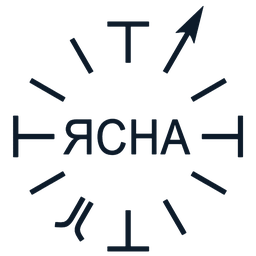

<!DOCTYPE html>
<html lang="ru">
<head>
<meta charset="UTF-8"/>
<meta name="viewport" content="width=device-width,initial-scale=1.0,maximum-scale=5.0,user-scalable=yes,viewport-fit=cover"/>
<meta http-equiv="Cache-Control" content="no-cache, no-store, must-revalidate"/>
<meta http-equiv="Pragma" content="no-cache"/>
<meta http-equiv="Expires" content="0"/>
<title>Ясна-Конструктор</title>
<link rel="icon" href="data:image/svg+xml,<svg xmlns='http://www.w3.org/2000/svg' viewBox='0 0 100 100'><text y='.9em' font-size='90'>✦</text></svg>"/>

<style>
*{margin:0;padding:0;box-sizing:border-box}
:root{--bg:#ffffff;--bg2:#f5f5f7;--bg3:#e8e8ed;--border:#d2d2d7;--accent:#0071e3;--txt:#1d1d1f;--txt2:#6e6e73;--txt3:#86868b;--serif:-apple-system,BlinkMacSystemFont,'SF Pro Display',Georgia,serif;--sans:-apple-system,BlinkMacSystemFont,'SF Pro Text','Helvetica Neue',sans-serif}
body{font-family:var(--sans);background:var(--bg);color:var(--txt);overflow:hidden;height:100vh}
button{font-family:var(--sans);cursor:pointer;transition:all .15s;border:none;background:none;color:var(--txt2)}
button:hover{color:var(--txt)}
input{font-family:var(--sans)}
::-webkit-scrollbar{width:4px}::-webkit-scrollbar-thumb{background:#c7c7cc;border-radius:2px}

/* Premium effects */
@keyframes fadeIn{from{opacity:0;transform:translateY(6px)}to{opacity:1;transform:none}}
.fi{animation:fadeIn .25s ease-out}
@keyframes bounce{0%,100%{transform:translateY(0);opacity:.6}50%{transform:translateY(3px);opacity:1}}
@keyframes dashFlow{from{stroke-dashoffset:0}to{stroke-dashoffset:-24}}
@keyframes pulse{0%,100%{opacity:.35}50%{opacity:.5}}
.hide-scroll::-webkit-scrollbar{display:none}

.popup-overlay{padding:12px}
.hdr-burger{display:none}
.fullstar{position:fixed!important;top:0!important;left:0!important;width:100vw!important;height:100vh!important;z-index:65!important;background:#fff!important;padding:0!important;margin:0!important}
.fullstar svg{transform:scale(1)!important}
.fullstar-close{position:fixed;top:16px;right:16px;z-index:66;width:40px;height:40px;border-radius:50%;background:rgba(255,255,255,.9);border:1px solid #e5e5ea;font-size:18px;display:flex;align-items:center;justify-content:center;box-shadow:0 2px 10px rgba(0,0,0,.1)}
.mob-only{display:none}
.desk-only{display:inline}
/* ═══ MOBILE RESPONSIVE ═══ */
@media(max-width:768px){
  .hdr{padding:8px 12px!important;gap:6px!important;transition:padding .42s cubic-bezier(.32,.72,0,1), max-height .42s cubic-bezier(.32,.72,0,1), opacity .42s cubic-bezier(.32,.72,0,1)!important}
  .hdr-sub{display:none!important}
  .hdr-meta{display:none!important}
  .hdr-btns{display:none!important}
  .mob-only{display:inline!important}
  .desk-only{display:none!important}
  .hdr-burger{display:flex!important}
  .hdr-btns button{padding:6px 12px!important;font-size:13px!important}
  .nav-tabs{position:fixed!important;bottom:0!important;left:0!important;right:0!important;z-index:50!important;padding:8px 0 env(safe-area-inset-bottom,10px) 12px!important;min-height:54px!important;background:#fff!important;border-top:1px solid #e5e5ea!important;border-bottom:none!important;box-shadow:0 -2px 12px rgba(0,0,0,.06)!important}
  .nav-tabs button{padding:10px 16px!important;font-size:14px!important;border-radius:10px!important;min-height:38px!important}
  .nav-tabs>div:first-child{scroll-snap-type:x mandatory!important;-webkit-overflow-scrolling:touch!important;gap:6px!important}
  .nav-tabs>div:first-child button{scroll-snap-align:start!important;flex-shrink:0!important}
  .nav-empty{color:#aeaeb2!important;font-size:13px!important;padding:6px 12px!important;white-space:nowrap!important}
  .nav-right{padding-right:12px!important;padding-left:10px!important;gap:4px!important;border-left:1px solid #e5e5ea!important;background:#fff!important}
  .nav-right button{font-size:14px!important;padding:10px 14px!important;min-height:38px!important}
  .nav-right .combine-btn{display:none!important}
  .hdr-title-desk{display:none!important}
  .hdr-title-mob{display:inline!important}
  .hdr-brand-desk{display:none!important}
  .filters-toggle{display:none!important}
  .fullstar-btn{display:none!important}
  .hdr-mob-tools{display:flex!important}
  .filters{padding:6px 10px!important;gap:4px!important;flex-wrap:wrap!important;overflow:visible!important;background:#fafafa!important;border-bottom:1px solid #e5e5ea!important;transition:padding .42s cubic-bezier(.32,.72,0,1), max-height .42s cubic-bezier(.32,.72,0,1), opacity .42s cubic-bezier(.32,.72,0,1)!important}
  .filters-closed{display:none!important}
  .filters button{padding:5px 10px!important;font-size:12px!important;flex-shrink:0!important;line-height:1.3!important;min-height:26px!important;border-radius:7px!important;transition:padding .42s cubic-bezier(.32,.72,0,1), font-size .42s cubic-bezier(.32,.72,0,1)!important}
  .filters>span{display:none!important}
  .filters .sep{display:none!important}
  /* When card is mid: shrink filters further */
  body:has(.fi-mid) .filters{padding:4px 8px!important;gap:3px!important}
  body:has(.fi-mid) .filters button{padding:3px 8px!important;font-size:11px!important;min-height:22px!important}
  /* When card is full: hide filters and app header entirely */
  body:has(.fi-full) .filters{max-height:0!important;padding:0!important;opacity:0!important;overflow:hidden!important;border:none!important}
  body:has(.fi-full) .hdr{max-height:0!important;padding:0!important;opacity:0!important;overflow:hidden!important;border:none!important}
  .star-area{min-height:0!important;flex:1!important;padding-bottom:52px!important}
  .star-area>div{max-height:none!important;max-width:none!important}
  .star-area svg{transition:transform .42s cubic-bezier(.32,.72,0,1), opacity .42s cubic-bezier(.32,.72,0,1)}
  .star-shift svg{transform:translateY(-18vh) scale(0.85)!important;transform-origin:center center!important}
  /* When card is mid — shift star more up and shrink */
  body:has(.fi-mid) .star-shift svg{transform:translateY(-32vh) scale(0.55)!important;opacity:.35!important}
  body:has(.fi-full) .star-shift svg{transform:translateY(-42vh) scale(0.30)!important;opacity:.15!important}
  .star-area circle text{font-size:120%!important}
  .fi{position:fixed!important;left:0!important;right:0!important;bottom:42px!important;top:auto!important;width:auto!important;max-width:none!important;border-radius:16px 16px 0 0!important;padding:0!important;border:1px solid #e5e5ea!important;border-bottom:none!important;background:#ffffff!important;backdrop-filter:none!important;box-shadow:0 -8px 24px rgba(0,0,0,.12)!important;display:flex!important;flex-direction:column!important;overflow:hidden!important;z-index:55!important;transition:height .42s cubic-bezier(.32,.72,0,1), max-height .42s cubic-bezier(.32,.72,0,1)!important}
  .fi-compact{height:32vh!important;max-height:32vh!important}
  .fi-mid{height:60vh!important;max-height:60vh!important}
  .fi-full{height:calc(100vh - 100px)!important;max-height:calc(100vh - 100px)!important}
  .fi-dragging{transition:none!important}
  .fi-handle{touch-action:none;cursor:grab;padding:10px 0 8px!important;-webkit-tap-highlight-color:transparent;user-select:none;-webkit-user-select:none}
  .fi-header-zone{touch-action:none;-webkit-tap-highlight-color:transparent;user-select:none;-webkit-user-select:none}
  .fi-handle:active{cursor:grabbing}
  .fi-handle-bar{transition:background .15s, width .15s, height .15s}
  .fi-handle:active .fi-handle-bar{background:#86868b!important;width:44px!important;height:5px!important}
  .fi>div:last-child{overflow-y:auto!important;-webkit-overflow-scrolling:touch!important;flex:1!important;min-height:0!important;scrollbar-width:thin;scrollbar-color:#c7c7cc transparent}
  .fi>div:last-child::-webkit-scrollbar{width:4px}
  .fi>div:last-child::-webkit-scrollbar-thumb{background:#c7c7cc;border-radius:4px}
  .fi>div:last-child::-webkit-scrollbar-track{background:transparent}
  .editor-panel{width:100%!important}
  .editor-panel input{font-size:16px!important}
  .popup-overlay{padding:0!important;display:block!important;max-width:100vw!important;overflow:hidden!important}
  .picker-inner{position:fixed!important;top:0!important;left:0!important;right:0!important;bottom:0!important;width:auto!important;max-width:100vw!important;height:auto!important;max-height:none!important;padding:0!important;border-radius:0!important;border:none!important;margin:0!important;box-sizing:border-box!important}
  .picker-inner *{max-width:100%!important;box-sizing:border-box!important}
  .picker-inner>div:first-child{padding:14px 16px 12px!important}
  .picker-actions{flex-wrap:wrap!important;gap:5px!important}
  .picker-actions button{font-size:11px!important;padding:5px 10px!important;flex:0 1 auto!important;white-space:nowrap!important}
  .picker-inner>div:last-child{padding:12px 16px!important}
  .picker-legend{display:none!important}
  .overlay-legend{top:auto!important;right:auto!important;bottom:52px!important;left:12px!important;min-width:0!important;padding:6px 10px!important;font-size:10px!important;max-width:calc(100vw - 24px)!important}
  .overlay-legend>div:first-child span:first-child{font-size:9px!important}
  .verif-header{padding:10px 14px!important;gap:8px!important}
  .verif-title{font-size:16px!important}
  .verif-header>div:first-child>div:first-child{font-size:9px!important;margin-bottom:1px!important}
  .verif-sub{padding:6px 14px!important;gap:6px!important}
  .verif-sub>div:first-child{font-size:11px!important;gap:6px!important}
  .verif-sub>div:first-child>span:last-child{font-size:10px!important}
  .verif-actions-row{padding:5px 14px 7px!important;gap:4px!important}
  .verif-actions-row button{font-size:10px!important;padding:4px 8px!important}
  .verif-close{width:32px!important;height:32px!important;font-size:14px!important}
  .verif-help{width:32px!important;height:32px!important;font-size:13px!important}
  .picker-grid{grid-template-columns:1fr!important;gap:4px!important}
  .fullpage-content{padding:12px 14px!important}
  .fullpage-content h2{font-size:18px!important}
}
@media(max-width:480px){
  .hdr{padding:4px 8px!important}
  .hdr-title-mob{font-size:15px!important}
  .hdr-btns button{padding:4px 8px!important;font-size:11px!important;border-radius:6px!important}
  .hdr-mob-tools .lesson-label{display:none!important}
  .nav-tabs{min-height:auto!important;padding-bottom:env(safe-area-inset-bottom,6px)!important}
  .fi-compact{height:28vh!important;max-height:28vh!important}
  .fi-mid{height:55vh!important;max-height:55vh!important}
}

/* ═══ LANDSCAPE MOBILE ═══ */
@media(max-height:600px) and (min-aspect-ratio:4/3){
  /* Hide filters */
  .filters{display:none!important}
  
  /* Minimal header */
  .hdr{padding:2px 10px!important}
  .hdr-title-mob{font-size:14px!important}
  
  /* Star area: no bottom padding, full height */
  .star-area{padding-bottom:36px!important}
  .star-area svg{transform:scale(1)!important}
  
  /* Tab bar: thinner */
  .nav-tabs{padding:2px 0 2px 8px!important}
  .nav-tabs button{padding:2px 8px!important;font-size:11px!important}
  
  /* Card: right side panel instead of bottom sheet */
  .fi{left:auto!important;right:0!important;top:0!important;bottom:auto!important;width:280px!important;max-width:45vw!important;height:100vh!important;max-height:100vh!important;border-radius:0!important;border-left:1px solid #e5e5ea!important;box-shadow:-4px 0 20px rgba(0,0,0,.08)!important}
  
  /* Star doesn't shift in landscape */
  .star-shift svg{transform:scale(0.9) translateX(-15vw)!important}
  
  /* Burger menu */
  .hdr-burger button{padding:2px 6px!important;font-size:14px!important}
}

/* ─── Scroll Lesson animations ─── */
@keyframes fadeIn {
  from { opacity: 0; transform: translateY(4px); }
  to { opacity: 1; transform: translateY(0); }
}

@keyframes slideDown {
  from { opacity: 0; transform: translateY(-4px); max-height: 0; }
  to { opacity: 1; transform: translateY(0); max-height: 200px; }
}

@keyframes blockAppear {
  from { opacity: 0; transform: translateY(12px); }
  to { opacity: 1; transform: translateY(0); }
}

@keyframes pulseStar {
  0%, 100% { filter: drop-shadow(0 0 0 rgba(0,113,227,0)); }
  50% { filter: drop-shadow(0 0 14px rgba(0,113,227,0.4)); }
}

.yasna-star-pulse svg {
  animation: pulseStar 2.4s ease-in-out infinite;
}

.scroll-lesson-block-appear {
  animation: blockAppear 0.45s cubic-bezier(0.16, 1, 0.3, 1) both;
}

@keyframes gateHint {
  0%, 100% { box-shadow: 0 4px 16px rgba(0,113,227,.32); }
  50% { box-shadow: 0 6px 22px rgba(0,113,227,.5); }
}

.gate-active {
  animation: gateHint 2.2s ease-in-out infinite;
}
</style>
</head>
<body>
<div id="root"></div>
<script src="https://cdnjs.cloudflare.com/ajax/libs/react/18.2.0/umd/react.production.min.js"></script>
<script src="https://cdnjs.cloudflare.com/ajax/libs/react-dom/18.2.0/umd/react-dom.production.min.js"></script>
<script src="https://cdnjs.cloudflare.com/ajax/libs/babel-standalone/7.23.9/babel.min.js"></script>
<script type="text/babel">
const{useState,useMemo,useEffect,useRef,useCallback}=React;
const CR={support:{id:'support',n:'Крест Опоры',p:[0,3,6,9],c:'#E8364F',v:'Надежда',
   questions:['Если убрать этот элемент — Ясна всё ещё имеет смысл? Если да — он не Опорный.','Это одно из 4 самых важных состояний/событий в вашем явлении?'],
   mistakes:['Поставить второстепенный элемент на опорную позицию.','Забыть проверить ось: 0 и 6 должны быть антиподами, 3 и 9 тоже.'],
   related:['opp','type','halves']},right:{id:'right',n:'Крест Любви',p:[1,4,7,10],c:'#E8A834',v:'Любовь',
   questions:['Этот элемент — следствие того, что произошло на предыдущей позиции?','Уберите предыдущую Опорную — этот элемент потеряет смысл?'],
   mistakes:['Поставить причину вместо следствия. Правый Крест — это ИТОГ, а не НАЧАЛО.','Перепутать с Левым крестом: Правый = результат, Левый = подготовка.'],
   related:['left','support','rhythm']},left:{id:'left',n:'Крест Веры',p:[2,5,8,11],c:'#5B9CF6',v:'Вера',
   questions:['Этот элемент готовит к тому, что будет дальше?','Он несёт в себе ожидание, предчувствие, настройку?'],
   mistakes:['Поставить результат вместо подготовки. Левый Крест — это ПЕРЕД, а не ПОСЛЕ.','Забыть, что Левый Крест — самый «тихий». Здесь не должно быть ярких событий.'],
   related:['right','support','rhythm']}};
const PR={she:{id:'she',n:'Земля ШЭ',p:[0,4,8],c:'#C0943A',el:'Земля',
   questions:['Все три элемента (0, 4, 8) — про стабильность, основу, надёжность?','Между ними чувствуется внутренняя связь? Общая тема?'],
   mistakes:['Один из трёх элементов — про перемены, движение, текучесть (это Вода ФО, не Земля).'],
   related:['tsi','type']},fo:{id:'fo',n:'Вода ФО',p:[1,5,9],c:'#4090D8',el:'Вода',
   questions:['Все три элемента (1, 5, 9) — про движение, поток, перемену?','Все три — короткие переломные моменты?'],
   mistakes:['Один из трёх — устойчивый и неизменный (это Земля ШЭ, не Вода).'],
   related:['ha','type']},tsi:{id:'tsi',n:'Воздух ЦИ',p:[2,6,10],c:'#70B8F0',el:'Воздух',
   questions:['Все три элемента (2, 6, 10) — промежуточные, переходные?','Они больше похожи на мосты между событиями, чем на сами события?'],
   mistakes:['Один из трёх — яркое событие или твёрдая основа (не промежуточное состояние).'],
   related:['she','type']},ha:{id:'ha',n:'Огонь ХА',p:[3,7,11],c:'#F06838',el:'Огонь',
   questions:['Все три элемента (3, 7, 11) — яркие, горячие, энергичные?','Все три — моменты перемен, а не длительные процессы?'],
   mistakes:['Один из трёх — спокойный и текучий (это Вода ФО, не Огонь).'],
   related:['fo','type']}};
const gc=i=>[0,3,6,9].includes(i)?'support':[1,4,7,10].includes(i)?'right':'left';
const gp=i=>['she','fo','tsi','ha'][i%4];
const opp=i=>(i+6)%12;
const angDeg=i=>270-i*30;
const rad=d=>d*Math.PI/180;
const xy=(i,cx,cy,r)=>({x:cx+r*Math.cos(rad(angDeg(i))),y:cy-r*Math.sin(rad(angDeg(i)))});
const REF=[{f:'ВХОД / ОСНОВА',ex:'Ночь · Прихожая · Свинья'},{f:'ПЕРВЫЙ РЕЗУЛЬТАТ',ex:'Первый свет · Гостиная · Мойка'},{f:'КАНАЛ / ПОТОК',ex:'Заря · Столовая · Река'},{f:'ГЛАВНОЕ СОБЫТИЕ',ex:'Выход Солнца · Кухня · Плита'},{f:'ПОДЪЁМ / КУЛЬТУРА',ex:'Подъём · Веранда · Пар'},{f:'НАКОПИТЕЛЬ',ex:'Последняя тьма · Амбар · Облако'},{f:'ВЕРШИНА / ЦЕНТР',ex:'День · Чулан · Перенос'},{f:'ПИК / НАБЛЮДЕНИЕ',ex:'Первая тьма · Детская · Гроза'},{f:'ЗАЩИТА / СПУСК',ex:'Спуск · Женская · Дождь'},{f:'ОЦЕНКА / ВЕСЫ',ex:'Заход · Спальня · Касание'},{f:'УГАСАНИЕ',ex:'Сумерки · Кабинет · Стекание'},{f:'КОНЕЦ / ВЫХОД',ex:'Последний свет · Санблок · Лужа'}];
const T=[
  {id:'цветов',verified:true,starter:true,n:'Цветов радуги',rubrik:true,p:['Желтый','Оранжевый','Алый','Красный','Черный / Золотой','Фиолетовый','Синий','Голубой','Ультрамарин','Зеленый','Изумрудный','Салатовый']},
  {id:'суток',verified:true,starter:true,n:'Суток',rubrik:true,p:['Ночь','Искра','Утр.Заря, Рассвет','Утро','Восход','Утренний Салют','День','Первая тьма','Закат / Вечерняя Заря','Запад / Вечер Сутки','Сумерки','Вечерний Салют'],th:'День',bh:'Ночь'},
  {id:'знаки_з.',verified:true,starter:true,n:'Зодиака',rubrik:true,p:['Козерог','Водолей','Рыбы','Овен','Телец','Близнецы','Рак','Лев','Дева','Весы','Скорпион','Стрелец']},
  {id:'двора_животных',verified:true,n:'Животных',rubrik:true,p:['Свинья','Грызуны','Лошадь','Козлы / Бараны','Корова / Бык','Верблюд','Человек','Кошка / Дети','Собака','Птицы','Дракон','Змея']},
  {id:'двора',verified:true,n:'Двора (Постройки)',rubrik:true,p:['Ворота','Калитка','Конюшня','Козлы / бараны','Коровник','Амбар','Веранда','Лавка хозяина','Баня / дровник','Голубятник','Пчелы / мед','Туалет / Навозная куча']},
  {id:'дома',verified:true,starter:true,n:'Дома',rubrik:true,p:['Прихожая','Гостиная','Столовая','Кухня','Веранда','Амбар','Чулан','Детская','Женская комната','Общая спальня','Кабинет','Сан.Блок']},
  {id:'спальни',verified:true,n:'Спальни',rubrik:true,p:['Халат','Гантели / Вода','Зарядка','Одеяло или Сундук','Окно / Гобилен','шкаф с книгами','Бельевой Шкаф','Красный угол','Прикроват. Тумбочка','Кровать','Прикроват.Тумбочка','Светильник']},
  {id:'кухни',verified:true,starter:true,n:'Кухни',rubrik:true,p:['Вход / Фартук','Мойка','Разделочный стол','Плита','Стол полуфабрикатов','Шкаф специй / Книга рецептов','Стол для готовки','Готовое блюдо','Делим на порции','Оценочный стол','Шведский стол','Вынос блюд / Меню']},
  {id:'круговорота_воды',verified:true,starter:true,n:'Круговорота воды',rubrik:true,p:['Вода с землей-грязь','Болото / Ключ / Родник','Река','Поверхность водоема','Пар','Облако','Холод / переход-перенос','Гроза / Молния','Дождь','Касание воды','Стекание','Лужа (брызгает-стреляет)']},
  {id:'печи',verified:true,n:'Печи',rubrik:true,p:['Каналы подачи','Колосники','Объем топки (духовой шкаф','огнеупорная пластина','Лабиринт (воздуховоды в п','Камора (расшир.камера)','Труба','Догорел','Отапливаемый объем','Теплоупор','Кондиционер','Дверцы-заслоник / форточк']},
  {id:'дерева',verified:true,n:'Дерева',rubrik:true,p:['Корни','Косточка','Плод','Клетка (Рыльце)','Домен (Столбик)','Бахрома (Пестик)','Лепесток','','Лист','Ветка','Ствол','Пень']},
  {id:'заода_предприятия',verified:true,n:'Завода',rubrik:true,p:['Рекламный отдел','Отдел Кадров / Закупок / ','Рабочие','Плановый отдел (Нач.Цеха)','Констр.Бюро / Изобретател','Главный инж. / Склад / Тр','Директор / Управа','Хозяин / ОТК / СБ','Охрана Предприятия','Бухгалтерия','Юр. ОТдел','Готовая продукция / Отд.С']},
  {id:'удочки',verified:true,n:'Удочки',rubrik:true,p:['Поводок','Торец Удочки','Бедро УДочки','Первая рука (держит ниже)','Спина удочки','Вторая рука (выше держит ','Дуга','','Струна / Нерв','Поплавок','Отвес','Грузило / Дробина']},
  {id:'мирового_яйца',verified:true,n:'Мирового Яйца',rubrik:true,p:['Река','Заливные Луга','Редколесье','Лес (Чаща леса)','Опушка','Альпийские луга','Горная река / Роща','Скалы / Висячие сады','Вечные снега / Небо','Вершина горы / Небосвод','Спуск с горы / Небосклон','Обрывистый берег / Женски']},
  {id:'мирового_яйца_2',verified:true,n:'Мирового Яйца 2',rubrik:true,p:['Море','Выпас','Двор','Дом','Церковь / Сад','Храм','Школа / Терем','','Дворец / Небо','Палаты / Небосвод','Канада / Небосклон','Америка / Обрывистый бере']},
  {id:'колокольни',verified:true,n:'Колокольни',rubrik:true,p:['Река / Колодец','Луг / Подвал','Двор / Хозяйственный этаж','Дом','Церковь / Памятные вещи','Храм','Школа / Колокол','Малиновый звон','Дворец','Купол','Фонарь / Маяк','Золотая рыбка / Маковка к']},
  {id:'театра',verified:true,n:'Театра',rubrik:true,p:['Театральный коридор','Закулисье / Капустник','Замостье','Сцена / Мост','Подмостки / Авансцена / Э','Оркестровая яма / Рампа','Зрительный зал','Балкон','Знать / Дворяне','Царская Ложа','Дирекция театра','Гримерки']},
  {id:'месяцев',verified:true,n:'Месяцев',rubrik:true,p:['Январь / Стужень','Февраль / Лютый','Март / березень','Апрель / Квитень','Май / Маженья','Июнь / Травень','Июль / Червень-Липень','Август','Сентябрь / Вересень','Октябрь / Ружник / Костри','Ноябрь / Листопад','Декабрь / Грудень / Грубж']},
  {id:'головы',verified:true,n:'Головы',rubrik:true,p:['Шея','Грызло','Рот','Нос','Глаза','Лоб','Темя','Макушка','Коса','Ухо','Загивок','Задняя часть шеи']},
  {id:'тела',verified:true,n:'Тела',rubrik:true,p:['Ступни','Половые органы','Живот','Грудь','Лицо','Лоб','Волосы','Макушка / Внеш. коса','Внутр.сторона косы','Шея плечи','Спина','Ягодицы']},
  {id:'внут.органов',verified:true,n:'Внутренних органов',rubrik:true,p:['Под носом / Нюхаем','Между губами и зубами','Ротовая полость','Полость глотки','Пищевод','Желудок','12-перстная кишка','Тонкий кишечник','Слепая кишка','Ободочная кишка','Сигм.кишка','Прямая кишка']},
    {id:'kostra',n:'Костра',p:['Стопка дров','Искра / Идея','Первый огонь','Шатун','Разгорается','Разгорелся','Горит','Догорел','Тухнет','Последний огонь','Раскалённые угли','Зола']},
  {id:'emotsiy',n:'Эмоций',p:['Страх','Стыд','Обида','Гнев','Интерес','Удивление','Радость','Удовольствие','Любовь','Грусть','Скука','Отвращение']},
  {id:'sistem',n:'Систем человека',p:['Сущность','Нервная','Кровеносная','Пищеварительная','Сенсорная','Лимфатическая','Дыхательная','Половая','Мышечная','Гормональная','Опорно-двигательная','Выделительная']},
  {id:'zhanrov',n:'Жанров',p:['Мистика','Семейный','Триллер','Боевик','Культурный','Фантастика','Приключения','Исторический','Музыкальный','Мелодрама','Комедия','Ужас']},
  {id:'not',n:'Нот',p:['Си','До','До диез','Рэ','Рэ диез','Ми','Фа','Фа диез','Соль','Соль диез','Ля','Ля диез']},
  {id:'chisel',n:'Чисел',p:['300/600/900','133','122','99/111/555','88/100/400','77','66/222/666','55','44/200/500','33/333/777','22/166','11/155']},
  {id:'metro',n:'Метро Москвы',p:['Таганская','Павелецкая','Серпуховская','Октябрьская','Парк культуры','Киевская','Баррикадная','Белорусская','Новослободская','Проспект Мира','Комсомольская','Курская']},

  {id:'oblachnost',n:'Облачности',p:['Свинцовое небо','Шероховатости','Много облаков','Просветы (Анастасия)','Больше неба','Единичные облака','Ясное чистое небо','Первые облака','Облаков много','Просветы уменьшаются','Небо невидимо','Затягивает']},
  {id:'atmosfery',n:'Атмосферы',custom:true,th:'Активная погода',bh:'Покой',lh:'Циклогенез',rh:'Антициклогенез',p:['Антициклон','Радиационный туман','Адвективный туман','Тёплый фронт','Пасмурно','Морось','Гроза / Ливень','Буря / Шквал','Обильные осадки','Холодный фронт','Антициклонизация','Заморозки']},

  {id:'osadkov',n:'Осадков',custom:true,th:'Максимум энергии',bh:'Минимум энергии',lh:'Жидкие (нарастание)',rh:'Твёрдые (спад)',p:['Роса','Изморось','Морось','Дождь','Ливень','Мокрый снег','Град','Снежная крупа','Снегопад','Метель','Изморозь','Иней']},

  {id:'primet_pogody',n:'Примет погоды',custom:true,th:'Прямое наблюдение',bh:'Далёкое знание',lh:'Зрение и осязание',rh:'Слух и обоняние',p:['Климатическая норма','Давление','Перистые облака','Смена ветра','Цвет зари','Роса и туман','Облака над головой','Звуки и эхо','Запахи','Поведение животных','Освещённость','Первая капля']},

  {id:'oblakov',n:'Облаков',custom:true,th:'Максимум энергии',bh:'Минимум энергии',lh:'Нагрев (подъём)',rh:'Охлаждение (спуск)',p:['Туман','Слоистые','Слоисто-кучевые','Кучевые','Мощно-кучевые','Слоисто-дождевые','Кучево-дождевые','Высоко-кучевые','Высоко-слоистые','Перисто-слоистые','Перисто-кучевые','Перистые']},

  {id:'atmo_vstrechi',n:'Атмосферы встречи',custom:true,th:'Максимум конфликта',bh:'Максимум согласия',lh:'Нарастание напряжённости',rh:'Спад / Разрядка',p:['Штиль','Натянутость','Недомолвки','Столкновение позиций','Тяжёлая атмосфера','Обиды / Упрёки','Гроза / Конфликт','Ультиматум / Тупик','Тяжёлый разговор','Разрядка','Примирение','Холодный мир']},

  {id:'vozdeistviy_vstrechi',n:'Воздействий встречи',custom:true,th:'Максимум силы',bh:'Минимум силы',lh:'Тёплые (нарастание)',rh:'Холодные (спад)',p:['Тихое одобрение','Мягкая поправка','Настойчивое повторение','Прямой отказ','Поток аргументов','Упрёк','Ультиматум','Колкости','Нотация','Манипуляция','Холодная формальность','Ледяное молчание']},

  {id:'problem_vstrechi',n:'Проблем встречи',custom:true,th:'Максимум глубины',bh:'Поверхность',lh:'Углубление',rh:'Всплытие',p:['Непонимание','Дефицит информации','Разница ожиданий','Конфликт интересов','Борьба за ресурсы','Личная обида','Ценностный конфликт','Потеря доверия','Усталость','Принципиальная позиция','Формальные претензии','Остаточное сомнение']},

  {id:'primet_vstrechi',n:'Примет встречи',custom:true,th:'Прямое наблюдение',bh:'Предварительное знание',lh:'До и начало',rh:'Процесс и финал',p:['Предыстория','Подготовка','Появление','Первые слова','Рассадка','Язык тела','Голос','Слова','Микрознаки','Энергия','Реакции','Прощание']},

  {id:'resheniy_vstrechi',n:'Решений встречи',custom:true,th:'Глубокое решение',bh:'Поверхностное решение',lh:'Нарастание глубины',rh:'Возврат к форме',p:['Прояснение','Информирование','Сверка ожиданий','Поиск общего','Расширение пирога','Признание / Извинение','Принятие различий','Восстановление доверия','Пауза','Переформулирование','Формализация','Гарантия']},
];
const FL=[
  {id:'support',l:'Опорный',c:'#E8364F',p:[0,3,6,9],g:'crosses'},
  {id:'right',l:'Управления',c:'#E8A834',p:[1,4,7,10],g:'crosses'},
  {id:'left',l:'Веры',c:'#5B9CF6',p:[2,5,8,11],g:'crosses'},
  {id:'ha',l:'Огонь',c:'#F06838',p:[3,7,11],g:'pranas'},
  {id:'fo',l:'Вода',c:'#2563EB',p:[1,5,9],g:'pranas'},
  {id:'tsi',l:'Воздух',c:'#06B6D4',p:[2,6,10],g:'pranas'},
  {id:'she',l:'Земля',c:'#C0943A',p:[0,4,8],g:'pranas'},
  {id:'opp',l:'Противоположности',c:'#ff9500',p:null,g:'struct',
   questions:['Можете сформулировать, в чём именно эти два элемента противоположны?','Если поменять их местами — Ясна сломается?'],
   mistakes:['Элементы похожи вместо того чтобы быть противоположными.','Противоположность не по сути, а случайная (далёкие по теме, но не зеркальные).'],
   related:['support','halves']},
  {id:'rhythm',l:'Ритм В→Б→П',c:'#30A060',p:null,g:'struct',
   questions:['Прочитайте тройку вслух как предложение: «[Вера] готовит к [Бой], из которого рождается [Победа]» — звучит?','Можно ли поменять элементы тройки местами и смысл сохранится? Если да — порядок неверен.'],
   mistakes:['Три элемента тройки не связаны друг с другом по смыслу.','Элемент «Вера» ярче элемента «Бой» — должно быть наоборот.'],
   related:['support','right','left']},
  {id:'arcs',l:'Три дуги',c:'#9060D0',p:null,g:'struct',
   questions:['Прочитайте 5 элементов дуги подряд — получается плавная история?','Середина дуги (позиция ХА) — самый яркий элемент из пяти?'],
   mistakes:['Элемент в середине дуги (ХА) тусклее крайних (ФО) — должно быть наоборот.'],
   related:['rhythm','she','fo','tsi','ha']},
  {id:'halves',l:'Половины',c:'#6366f1',p:null,g:'struct',
   questions:['Верхние элементы (4-8) — про открытое и явное? Нижние (10-2) — про скрытое?','Левые элементы (1-5) связаны с ростом? Правые (7-11) со спадом?'],
   mistakes:['Скрытый элемент стоит наверху (должен быть внизу).','Элемент роста стоит в правой части (должен быть слева).'],
   related:['support','opp']},
  {id:'error89',l:'Ошибка',c:'#D946EF',p:null,g:'struct'},
];

function Star({yy,sel,onSel,hl,af=[],showOpp,overlay,mob}){
  const isMob=typeof window!=="undefined"&&window.innerWidth<=768;
  const p=yy.p||[];
  const S=900,W=700,cx=S/2,cy=W/2,R=215,nr=isMob?26:23,lr=R+60;
  const pts=Array.from({length:12},(_,i)=>xy(i,cx,cy,R))
  const lps=Array.from({length:12},(_,i)=>xy(i,cx,cy,lr))
  const olps=Array.from({length:12},(_,i)=>xy(i,cx,cy,lr+24))
  const ilps=Array.from({length:12},(_,i)=>xy(i,cx,cy,lr-16))
  const hasMech=af.length>0;
  const nc=i=>(hl&&!hl.includes(i))?'#e0e0e8':CR[gc(i)].c;
  const no=i=>(hl&&!hl.includes(i))?.15:1;
  const anch=i=>{const x=lps[i].x;return Math.abs(x-cx)<25?'middle':x<cx?'end':'start';};
  return(
    <svg viewBox={mob?`40 -10 820 720`:`0 0 ${S} ${W}`} style={{width:'100%',height:'100%'}}>
      <defs>
        <filter id="gw"><feGaussianBlur stdDeviation="6" result="b"/><feMerge><feMergeNode in="b"/><feMergeNode in="SourceGraphic"/></feMerge></filter>
        <filter id="ns"><feDropShadow dx="0" dy="1" stdDeviation="2.5" floodOpacity=".07"/></filter>
      </defs>
      <rect width={S} height={W} fill="#fff"/>
      {/* Decorative outer ring */}
      <circle cx={cx} cy={cy} r={R+10} fill="none" stroke="#ececee" strokeWidth=".5"/>
      {/* Main orbit */}
      <circle cx={cx} cy={cy} r={R} fill="none" stroke="#d0d0d5" strokeWidth="1.2"/>
      {/* Inner orbits - hidden when mechanics active */}
      {!hasMech&&<><circle cx={cx} cy={cy} r={R*.7} fill="none" stroke="#e4e4e8" strokeWidth=".7"/>
      <circle cx={cx} cy={cy} r={R*.4} fill="none" stroke="#eee" strokeWidth=".5"/></>}
      {/* Hexagon of LONG positions 0-2-4-6-8-10 */}
      {!hasMech&&<polygon points={[0,2,4,6,8,10].map(i=>`${pts[i].x},${pts[i].y}`).join(' ')} fill="none" stroke="#d8d8dd" strokeWidth=".8"/>}
      {/* Hexagram of SHORT positions 1-3-5-7-9-11 */}
      {!hasMech&&<polygon points={[1,3,5,7,9,11].map(i=>`${pts[i].x},${pts[i].y}`).join(' ')} fill="none" stroke="#d8d8dd" strokeWidth=".8"/>}
      {/* 12 rays from center - hidden when mechanics active */}
      {!hasMech&&Array.from({length:12},(_,i)=>{const s=[0,3,6,9].includes(i);return<line key={`ry${i}`} x1={cx} y1={cy} x2={pts[i].x} y2={pts[i].y} stroke={s?'#c0c0c5':'#d8d8dd'} strokeWidth={s?.9:.4}/>;})}
      {/* Crossbars and ticks - hidden when mechanics active */}
      {!hasMech&&[0,3,6,9].map(i=>{const t=pts[i],a=rad(angDeg(i)+90),bw=17;return<line key={`cb${i}`} x1={t.x+bw*Math.cos(a)} y1={t.y-bw*Math.sin(a)} x2={t.x-bw*Math.cos(a)} y2={t.y+bw*Math.sin(a)} stroke="#b8b8be" strokeWidth="1.2" strokeLinecap="round"/>;})}
      {!hasMech&&[1,2,4,5,7,8,10,11].map(i=>{const t=pts[i],a=rad(angDeg(i)+60),tw=11;return<line key={`tk${i}`} x1={t.x+tw*Math.cos(a)} y1={t.y-tw*Math.sin(a)} x2={t.x-tw*Math.cos(a)} y2={t.y+tw*Math.sin(a)} stroke="#c8c8cd" strokeWidth=".7" strokeLinecap="round"/>;})}
      {af.includes('halves')&&(yy.th||yy.bh)&&<line x1={pts[3].x} y1={pts[3].y} x2={pts[9].x} y2={pts[9].y} stroke="#d2d2d7" strokeWidth="1" strokeDasharray="8 4" opacity=".6"/>}
      {af.includes('halves')&&(yy.lh||yy.rh)&&<line x1={pts[0].x} y1={pts[0].y} x2={pts[6].x} y2={pts[6].y} stroke="#d2d2d7" strokeWidth="1" strokeDasharray="8 4" opacity=".6"/>}
      
      {showOpp&&Array.from({length:6},(_,i)=><g key={`o${i}`}><line x1={pts[i].x} y1={pts[i].y} x2={pts[i+6].x} y2={pts[i+6].y} stroke="#ff9500" strokeWidth="1" opacity=".18" strokeDasharray="5 4"/><circle cx={(pts[i].x+pts[i+6].x)/2} cy={(pts[i].y+pts[i+6].y)/2} r="2" fill="#ff9500" opacity=".15"/></g>)}
      {/* Rhythm: 4 triples Вера→Бой→Победа */}
      {af.includes('rhythm')&&[[2,3,4],[5,6,7],[8,9,10],[11,0,1]].map((tr,ti)=>{
        const col='#30A060';const d=tr.map((idx,j)=>`${j===0?'M':'L'}${pts[idx].x},${pts[idx].y}`).join(' ');
        return<g key={`rh${ti}`}>
          <path d={d} fill="none" stroke={col} strokeWidth="3.5" opacity=".7" strokeLinecap="round"/>
          <circle cx={pts[tr[1]].x} cy={pts[tr[1]].y} r={nr+6} fill={col} opacity=".12"/>
          {tr.map((idx,j)=><text key={j} x={pts[idx].x} y={pts[idx].y-nr-6} textAnchor="middle" fill={col} fontSize="12" fontWeight="800" opacity=".9" style={{pointerEvents:'none'}}>{['В','Б','П'][j]}</text>)}
        </g>;
      })}
      {/* Three arcs: ФО→ЦИ→ХА→ШЭ→ФО */}
      {af.includes('arcs')&&[[1,2,3,4,5],[5,6,7,8,9],[9,10,11,0,1]].map((arc,ai)=>{
        const cols=['#4090D8','#9060D0','#30A060'];const col=cols[ai];
        const d=arc.map((idx,j)=>{const p=pts[idx];return`${j===0?'M':'L'}${p.x},${p.y}`;}).join(' ');
        return<path key={`arc${ai}`} d={d} fill="none" stroke={col} strokeWidth="4" opacity=".6" strokeLinecap="round"/>;
      })}
      {/* Halves */}
      {af.includes('halves')&&<>
        {/* Top/Bottom: Чаша Света / Чаша Тьмы */}
        <path d={`M${pts[3].x},${pts[3].y} A${R},${R} 0 0,0 ${pts[9].x},${pts[9].y}`} fill="rgba(255,180,0,.08)" stroke="rgba(200,150,0,.45)" strokeWidth="2.5"/>
        <path d={`M${pts[9].x},${pts[9].y} A${R},${R} 0 0,0 ${pts[3].x},${pts[3].y}`} fill="rgba(80,100,200,.08)" stroke="rgba(80,100,200,.4)" strokeWidth="2.5"/>
        {/* Left/Right: Нарастание / Спад */}
        <path d={`M${pts[0].x},${pts[0].y} A${R},${R} 0 0,0 ${pts[6].x},${pts[6].y}`} fill="rgba(40,180,100,.05)" stroke="rgba(40,160,90,.25)" strokeWidth="1.2"/>
        <path d={`M${pts[6].x},${pts[6].y} A${R},${R} 0 0,0 ${pts[0].x},${pts[0].y}`} fill="rgba(180,80,180,.05)" stroke="rgba(160,70,160,.25)" strokeWidth="1.2"/>
        {/* Axes */}
        <line x1={pts[3].x} y1={pts[3].y} x2={pts[9].x} y2={pts[9].y} stroke="#86868b" strokeWidth="1" strokeDasharray="6 4" opacity=".25"/>
        <line x1={pts[0].x} y1={pts[0].y} x2={pts[6].x} y2={pts[6].y} stroke="#86868b" strokeWidth="1" strokeDasharray="6 4" opacity=".25"/>
        {/* Labels - darker */}
        <text x={cx} y={cy-R*.5} textAnchor="middle" fill="rgba(170,130,0,.6)" fontSize="11" fontFamily="var(--sans)" fontWeight="600">Чаша Света</text>
        <text x={cx} y={cy+R*.55} textAnchor="middle" fill="rgba(70,80,170,.5)" fontSize="11" fontFamily="var(--sans)" fontWeight="600">Чаша Тьмы</text>
        <text x={cx-R*.5} y={cy+6} textAnchor="middle" fill="rgba(40,140,80,.45)" fontSize="10" fontFamily="var(--sans)" fontWeight="500" transform={`rotate(-90 ${cx-R*.5} ${cy})`}>Нарастание ↑</text>
        <text x={cx+R*.5} y={cy+6} textAnchor="middle" fill="rgba(140,60,140,.4)" fontSize="10" fontFamily="var(--sans)" fontWeight="500" transform={`rotate(90 ${cx+R*.5} ${cy})`}>Спад ↓</text>
      </>}
      {/* Error 8↔9: zone of confusion */}
      {af.includes('error89')&&<>
        {/* Primary zone 8↔9 */}
        <path d={`M${pts[8].x},${pts[8].y} A${R},${R} 0 0,1 ${pts[9].x},${pts[9].y}`} fill="rgba(217,70,239,.06)" stroke="#D946EF" strokeWidth="4" strokeDasharray="8 4"/>
        <line x1={pts[8].x} y1={pts[8].y} x2={pts[9].x} y2={pts[9].y} stroke="#D946EF" strokeWidth="3" opacity=".5" strokeDasharray="6 4"/>

        {/* Mirror zone 2↔3 */}
        <path d={`M${pts[2].x},${pts[2].y} A${R},${R} 0 0,0 ${pts[3].x},${pts[3].y}`} fill="rgba(217,70,239,.03)" stroke="#D946EF" strokeWidth="2.5" strokeDasharray="6 4" opacity=".6"/>
        <line x1={pts[2].x} y1={pts[2].y} x2={pts[3].x} y2={pts[3].y} stroke="#D946EF" strokeWidth="2" opacity=".4" strokeDasharray="6 4"/>

        {/* 4 error types on support cross */}
        {[[0,'Ошибка во сне',0,nr+30],[3,'Просмотрел',(pts[2].x-pts[3].x)/2-70,(pts[2].y-pts[3].y)/2-12],[6,'Мираж',0,-nr-22],[9,'Ошибка измерения',(pts[8].x-pts[9].x)/2+70,(pts[8].y-pts[9].y)/2-12]].map(([idx,label,dx,dy])=>{
          const p=pts[idx];
          return<text key={`e${idx}`} x={p.x+dx} y={p.y+dy} textAnchor="middle" fill="#D946EF" fontSize="10" fontWeight="700" fontFamily="var(--sans)" opacity=".85" style={{pointerEvents:'none'}}>{label}</text>;
        })}
        {/* Connection line 8↔9 to 2↔3 showing mirror */}
        <line x1={(pts[8].x+pts[9].x)/2} y1={(pts[8].y+pts[9].y)/2} x2={(pts[2].x+pts[3].x)/2} y2={(pts[2].y+pts[3].y)/2} stroke="#D946EF" strokeWidth="1.5" opacity=".25" strokeDasharray="4 6"/>
      </>}

      {sel!==null&&<line x1={pts[sel].x} y1={pts[sel].y} x2={pts[opp(sel)].x} y2={pts[opp(sel)].y} stroke="#ff9500" strokeWidth="1.2" opacity=".2" strokeDasharray="5 3"/>}
      {/* Multi-mechanic layers */}
      {(()=>{const activeLayers=af.filter(id=>!['opp','axes'].includes(id)).length;
        const opaScale=activeLayers<=1?1:activeLayers<=2?.85:activeLayers<=4?.7:.55;
        return af.filter(id=>!['opp','axes'].includes(id)).map(id=>{const f=FL.find(x=>x.id===id);if(!f||!f.p)return null;
        const isCross=f.p.length===4;
        const d=f.p.map((idx,j)=>`${j===0?'M':'L'}${pts[idx].x},${pts[idx].y}`).join(' ')+'Z';
        return(<g key={id}>
          <path d={d} fill={f.c+'06'} stroke={f.c} strokeWidth={['she','fo','tsi','ha'].includes(id)?2.5:1.8} opacity={.4*opaScale} strokeDasharray={id==='she'?'none':id==='fo'?'8 4':id==='tsi'?'4 4':id==='ha'?'12 3 3 3':'none'} strokeLinecap="round"/>
          {isCross&&<><line x1={pts[f.p[0]].x} y1={pts[f.p[0]].y} x2={pts[f.p[2]].x} y2={pts[f.p[2]].y} stroke={f.c} strokeWidth="1.2" opacity={.2*opaScale} strokeDasharray="6 4"/>
          <line x1={pts[f.p[1]].x} y1={pts[f.p[1]].y} x2={pts[f.p[3]].x} y2={pts[f.p[3]].y} stroke={f.c} strokeWidth="1.2" opacity={.2*opaScale} strokeDasharray="6 4"/></>}
          {f.p.map(idx=><g key={idx}>
            <circle cx={pts[idx].x} cy={pts[idx].y} r={nr+6} fill={f.c} opacity={.06*opaScale}/>
            {['she','fo','tsi','ha'].includes(id)&&<circle cx={pts[idx].x} cy={pts[idx].y} r={nr+4} fill="none" stroke={f.c} strokeWidth=".8" opacity={.2*opaScale} strokeDasharray="3 5" style={{animation:'dashFlow 3s linear infinite'}}/>}
          </g>)}
        </g>);});})()}
      
      <circle cx={cx} cy={cy} r={22} fill="#fff" stroke="#d2d2d7" strokeWidth="1.2"/>
      <circle cx={cx} cy={cy} r={3} fill="#d2d2d7"/>
      <text x={cx} y={cy-2} textAnchor="middle" fill="rgba(0,0,0,.3)" fontSize="7" fontFamily="var(--sans)" fontWeight="600" letterSpacing="2">{(()=>{const n=(yy.name||'').toUpperCase();return n.length<=12?n:n.slice(0,11)+'…';})()}</text>
      <text x={cx} y={cy+7} textAnchor="middle" fill="rgba(0,0,0,.15)" fontSize="6" fontFamily="var(--sans)" letterSpacing="2">ЯСНА</text>
      {af.includes('halves')&&yy.th&&<text x={cx} y={34} textAnchor="middle" fill="rgba(0,0,0,.5)" fontSize="13" fontFamily="var(--sans)" fontWeight="600">{yy.th}</text>}
      {af.includes('halves')&&yy.bh&&<text x={cx} y={W-22} textAnchor="middle" fill="rgba(0,0,0,.5)" fontSize="13" fontFamily="var(--sans)" fontWeight="600">{yy.bh}</text>}
      {af.includes('halves')&&yy.lh&&<text x={20} y={cy} textAnchor="middle" fill="rgba(0,0,0,.5)" fontSize="13" fontFamily="var(--sans)" fontWeight="600" transform={`rotate(-90 20 ${cy})`}>{yy.lh}</text>}
      {af.includes('halves')&&yy.rh&&<text x={S-20} y={cy} textAnchor="middle" fill="rgba(0,0,0,.5)" fontSize="13" fontFamily="var(--sans)" fontWeight="600" transform={`rotate(90 ${S-20} ${cy})`}>{yy.rh}</text>}
      {pts.map((pt,i)=>{const isSel=sel===i,c=nc(i),o=no(i);return(
        <g key={i} onClick={()=>onSel(sel===i?null:i)} style={{cursor:'pointer'}}>
          <circle cx={pt.x} cy={pt.y} r={nr+14} fill="transparent" stroke="none"/>
          {isSel&&<circle cx={pt.x} cy={pt.y} r={nr+8} fill={c} opacity=".06" filter="url(#gw)"/>}
          <circle cx={pt.x} cy={pt.y} r={nr} fill="#fff" stroke={c} strokeWidth={isSel?2.5:1.8} opacity={o} filter="url(#ns)" style={{pointerEvents:'none'}}/>
          <text x={pt.x} y={pt.y+6} textAnchor="middle" fill={c} fontSize={isMob?(isSel?"22":"20"):(isSel?"16":"15")} fontWeight="700" fontFamily="var(--sans)" opacity={o} style={{pointerEvents:'none'}}>{i}</text>
        </g>);})}
      {!overlay&&lps.map((pt,i)=>{const lOrig=p[i]||'';if(!lOrig)return null;let dy=5;if(i===0)dy=16;if(i===6)dy=-7;
        // Trim incomplete trailing tokens (e.g. '("кита' or '(без свинст') — likely data-import artifacts
        let l=lOrig.replace(/\s*\([^)]*$/,'').replace(/\s*\/\s*$/,'').trim();
        // Cap each line to fit the canvas
        const maxLine=isMob?14:18;
        let parts=null;
        if(l.includes(' ')){const w=l.split(' ');const m=Math.ceil(w.length/2);parts=[w.slice(0,m).join(' '),w.slice(m).join(' ')];}
        else if(l.includes('-')&&l.length>10){const hi=l.indexOf('-');parts=[l.slice(0,hi+1),l.slice(hi+1)];}
        else if(l.includes('/')&&l.length>10){const si=l.indexOf('/');parts=[l.slice(0,si+1),l.slice(si+1).trim()];}
        else if(l.length>12){const m=Math.ceil(l.length/2);parts=[l.slice(0,m)+'-',l.slice(m)];}
        if(parts){parts=parts.map(s=>s.length>maxLine?s.slice(0,maxLine-1).trimEnd()+'…':s);}
        else if(l.length>maxLine)l=l.slice(0,maxLine-1).trimEnd()+'…';
        const xOff=i===3?14:i===9?-14:i===4?8:i===8?-8:0;
        const fs=isMob?(sel===i?'25':'22'):(sel===i?'16':'14');
        const fsW=isMob?(sel===i?'22':'20'):(sel===i?'15':'13');if(parts){return<text key={`l${i}`} x={pt.x+xOff} y={pt.y+dy-9} textAnchor={anch(i)} fill={'#000'} fontSize={fsW} fontFamily="var(--serif)" fontWeight={sel===i?'700':'600'} style={{pointerEvents:'none'}}><tspan x={pt.x+xOff} dy="0">{parts[0]}</tspan><tspan x={pt.x+xOff} dy={isMob?22:16}>{parts[1]}</tspan></text>;}
        return<text key={`l${i}`} x={pt.x+xOff} y={pt.y+dy} textAnchor={anch(i)} fill={'#000'} fontSize={fs} fontFamily="var(--serif)" fontWeight={sel===i?'700':'600'} style={{pointerEvents:'none'}}>{l}</text>;})}
      {overlay&&<>
        {/* Outer orbit - more visible, solid thin line */}
        <circle cx={cx} cy={cy} r={lr+12} fill="none" stroke="rgba(147,51,234,.18)" strokeWidth="1" strokeDasharray="2 4"/>
        {/* Satellite dots on outer orbit showing overlay structure */}
        {Array.from({length:12},(_,i)=>{const op=xy(i,cx,cy,lr+12);return<circle key={`os${i}`} cx={op.x} cy={op.y} r="3" fill={sel===i?'#7c3aed':'#9333ea'} opacity={sel===i?.9:.5}/>;})}
        {/* Thin connector lines between inner point and outer satellite */}
        {Array.from({length:12},(_,i)=>{const op=xy(i,cx,cy,lr+12);return<line key={`oc${i}`} x1={pts[i].x} y1={pts[i].y} x2={op.x} y2={op.y} stroke="rgba(147,51,234,.15)" strokeWidth="1" strokeDasharray="2 3"/>;})}
        {/* Primary Yasna labels - inner ring */}
        {ilps.map((pt,i)=>{const l=p[i]||'';if(!l)return null;const a=angDeg(i);let dy=4;if(i===0)dy=12;if(i===6)dy=-5;return<text key={`p${i}`} x={pt.x} y={pt.y+dy} textAnchor={anch(i)} fill={sel===i?'#1d1d1f':'rgba(0,122,255,.8)'} fontSize={sel===i?"16":"14"} fontFamily="var(--serif)" fontWeight={sel===i?'700':'500'} style={{pointerEvents:'none'}}>{l}</text>;})}
        {/* Overlay Yasna labels - outer ring */}
        {olps.map((pt,i)=>{const l=(overlay.p||[])[i]||'';if(!l)return null;let dy=22;if(i===0)dy=34;if(i===6)dy=-22;if([3,9].includes(i))dy=26;if([2,10].includes(i))dy=26;if([4,8].includes(i))dy=34;if([1,11].includes(i))dy=28;if([5,7].includes(i))dy=24;return<text key={`o${i}`} x={pt.x} y={pt.y+dy} textAnchor={anch(i)} fill={sel===i?'#7c3aed':'#9333ea'} fontSize={sel===i?"17":"15"} fontFamily="var(--serif)" fontWeight={sel===i?'700':'500'} fontStyle="italic" style={{pointerEvents:'none'}}>{l}</text>;})}
      </>}
    </svg>);
}

// ═══ POSITION DESCRIPTIONS ═══
const POS_DESC=[
  'Начальная точка цикла. Самое базовое, неочищенное состояние. Точка максимальной тьмы и покоя. В книге — Сила Тьмы, дно Чаши Тьмы, скрытая основа, с которой всё начинается.',
  'Первый результат ожидания во Тьме. Искра, первый просвет, самое холодное. В книге — Первый Свет: тяжёлое достижение Тьмы, долгожданное. Маленькое, но важное.',
  'Нарастание неявного света. Канал, по которому энергия течёт к главному событию. Лёгкое время — процесс ускоряется. Подготовка, вера в предстоящую победу.',
  'Главное событие цикла. Точка Проявления Света — рождение, восход, победа Света над Тьмой. Горизонт, Линия Борьбы. Время Истины, Стрелка Весов.',
  'Результат Проявления Света — рост, подъём, культура. Тяжёлое время: процесс замедляется. В книге — Подъём Солнца: явный свет растёт, но всё труднее.',
  'Последняя Тьма — конец сомнений, накопитель перед вершиной. Конец одного этапа, вера перед следующим. Проявляется пар, тепло уходит в облака.',
  'Вершина цикла. Максимум света и ясности. В книге — Сила Света, дно Чаши Света, Чистый Свет дня. Центр, откуда всё видно. Время Ожидания плодов труда.',
  'Первая Тьма — пик жара, результат дневного труда. Самое тёплое время. Первый знак спада. Победа над собой: намеченное сделано.',
  'Спуск, защита. Самое красивое время суток. Лёгкое время: процесс ускоряется вниз. Вера в жизнь и справедливость. Тьма начинает проявляться.',
  'Точка Проявления Тьмы — закат, победа Тьмы над Светом. Время Розыгрыша, Планка Весов. Горизонт, обманчивое время: видишь не то, что есть на самом деле.',
  'Угасание. Итог вечернего боя (победа Тьмы). Тяжёлое время: замедление. В книге — Вечерние Сумерки: растёт явная тьма, свет отступает.',
  'Конец цикла. Последний Свет — трудное достижение Сумерек. Вера в завтра: этот бой не последний, цикл замкнётся новой зарёй.',
];

const CROSS_CTX={
  support:{
    0:'Сила Тьмы — дно Чаши Тьмы, скрытая основа. Без этой опоры ничего не начнётся.',
    3:'Проявление Света — восход, победа Света над Тьмой. Точка Истины, Стрелка Весов.',
    6:'Сила Света — дно Чаши Света, Чистый Свет дня. Открытая вершина, центр.',
    9:'Проявление Тьмы — закат, победа Тьмы над Светом. Точка Розыгрыша, Планка Весов.',
  },
  right:{
    1:'Первый Свет — результат ожидания во Тьме (после 0). Самый холод. Исход из Тьмы.',
    4:'Подъём Солнца — исход утреннего боя (после 3). Свет победил.',
    7:'Первая Тьма — результат дневного труда (после 6). Самое тепло. Победа над собой.',
    10:'Вечерние Сумерки — исход вечернего боя (после 9). Победа Тьмы, здравый смысл.',
  },
  left:{
    2:'Утренняя Заря — вера в победу Света перед утренним боем (→3). Подготовка.',
    5:'Последняя Тьма — вера в свои силы перед трудом дня (→6). Конец сомнений.',
    8:'Вечерний Закат — вера в жизнь перед вечерним боем (→9). Сложная вера.',
    11:'Последний Свет — вера в завтра после поражения (→0). Этот бой не последний.',
  }
};

const PRANA_CTX={
  she:'Устойчивость, неизменность, фундамент. Звуковая форма: ШЕ (глухой) / ЭЛ (звонкий). Треугольник Земли: позиции 0, 4, 8 связаны через стабильность.',
  fo:'Спад, текучесть, понижение. Звуковая форма: ФО (глухой) / ОМ (звонкий). Треугольник Воды: позиции 1, 5, 9 связаны через движение и переломы.',
  tsi:'Неустойчивый покой, переходность. Звуковая форма: ЦИ (глухой) / ИНЬ (звонкий). Треугольник Воздуха: позиции 2, 6, 10 связаны через промежуточность.',
  ha:'Рост, вспышка, повышение. Звуковая форма: ХА (глухой) / АНГ (звонкий). Треугольник Огня: позиции 3, 7, 11 связаны через энергию перемен.',
};

const OPP_DESC={
  0:'Сила Тьмы ↔ Сила Света. Ось — Линия Единства (вертикаль). Скрытое ↔ Явное.',
  1:'Первый Свет ↔ Первая Тьма. Самый холод ↔ самый жар. Начало света ↔ начало тьмы.',
  2:'Утренняя Заря ↔ Вечерний Закат. Нарастание ↔ Спад. Один процесс — два направления.',
  3:'Проявление Света ↔ Проявление Тьмы. Ось — Линия Борьбы (горизонт). Истина ↔ Розыгрыш. Стрелка ↔ Планка Весов.',
  4:'Подъём Солнца ↔ Вечерние Сумерки. Утренний итог ↔ Вечерний итог. Рост ↔ Угасание.',
  5:'Последняя Тьма ↔ Последний Свет. Конец сомнений перед трудом ↔ Вера в завтра после поражения.',
};

function Info({i,p,af=[],y={},overlay=null,onEdit,onClose}){
  if(i===null)return null;
  const cr=CR[gc(i)],pr=PR[gp(i)],ref=REF[i],label=p[i]||'',oppLabel=p[opp(i)]||'';
  const prevL=p[(i+11)%12]||'',nextL=p[(i+1)%12]||'';
  const isLong=i%2===0;
  const oppPairIdx=i<6?i:i-6;
  const hasMech=af.length>0;
  const isEmpty=!label;
  // Polarity relation: which pole does this position belong to?
  const poleVert=[0,1,11].includes(i)?'bh':[5,6,7].includes(i)?'th':null;
  const poleHoriz=[2,3,4].includes(i)?'lh':[8,9,10].includes(i)?'rh':null;
  const overlayLabel=overlay&&overlay.p?(overlay.p[i]||''):'';

  const mechItems=[];
  af.forEach(fid=>{
    if(['support','right','left'].includes(fid)){
      if(CR[fid].p.includes(i)) mechItems.push({c:CR[fid].c,title:CR[fid].n+' · '+CR[fid].v,text:CROSS_CTX[fid][i]});
      else mechItems.push({c:'#aeaeb2',title:CR[fid].n,text:'Позиция '+i+' не входит в этот крест ('+CR[fid].p.join('·')+')',dim:true});
    }
    if(['she','fo','tsi','ha'].includes(fid)){
      if(PR[fid].p.includes(i)) mechItems.push({c:PR[fid].c,title:PR[fid].n,text:PRANA_CTX[fid]});
      else mechItems.push({c:'#aeaeb2',title:PR[fid].n,text:'Позиция '+i+' не входит в треугольник ('+PR[fid].p.join('·')+')',dim:true});
    }
    if(fid==='opp') mechItems.push({c:'#ff9500',title:'↔ ['+i+'] — ['+opp(i)+']',text:OPP_DESC[oppPairIdx]+(oppLabel?' «'+label+'» ↔ «'+oppLabel+'»':'')});
    if(fid==='rhythm'){
      const triples=[[2,3,4],[5,6,7],[8,9,10],[11,0,1]];
      const tri=triples.find(t=>t.includes(i));
      if(tri){
        const myK=tri.indexOf(i);
        const roles=[{r:'Вера',l:'подготовка',c:'#5B9CF6'},{r:'Бой',l:'событие',c:'#E8364F'},{r:'Победа',l:'итог',c:'#E8A834'}];
        const role=roles[myK];
        const triIdx=triples.indexOf(tri)+1;
        const triNames=['I','II','III','IV'];
        const steps=tri.map((j,k)=>({idx:j,role:roles[k],name:p[j]||'',active:k===myK}));
        mechItems.push({c:'#30A060',title:'Ритм · Тройка '+triNames[triIdx-1]+' · '+role.r,steps});
      }
    }
    if(fid==='arcs'){
      const arcs=[[1,2,3,4,5],[5,6,7,8,9],[9,10,11,0,1]];
      const arcNames=['Дуга I (утренняя)','Дуга II (дневная)','Дуга III (ночная)'];
      const arcRoles=[{r:'ФО',l:'исток',c:'#4090D8'},{r:'ЦИ',l:'нагрев',c:'#70B8F0'},{r:'ХА',l:'пик',c:'#F06838'},{r:'ШЭ',l:'остыв.',c:'#C0943A'},{r:'ФО',l:'конец',c:'#4090D8'}];
      arcs.forEach((arc,ai)=>{
        if(arc.includes(i)){
          const myK=arc.indexOf(i);
          const role=arcRoles[myK];
          const steps=arc.map((j,k)=>({idx:j,role:arcRoles[k],name:p[j]||'',active:k===myK}));
          mechItems.push({c:['#4090D8','#9060D0','#30A060'][ai],title:arcNames[ai]+' · '+role.r+' ('+role.l+')',steps});
        }
      });
    }
    if(fid==='halves'){
      const isLight=[4,5,6,7,8].includes(i);
      const isDark=[10,11,0,1,2].includes(i);
      const isHoriz=[3,9].includes(i);
      const isLeft=[1,2,3,4,5].includes(i);
      const isRight=[7,8,9,10,11].includes(i);
      const isVert=[0,6].includes(i);
      mechItems.push({c:isLight?'#C0A030':isDark?'#5868B8':'#86868b',
        title:isLight?'Чаша Света (верх)':isDark?'Чаша Тьмы (низ)':'Горизонт',
        text:isLight?'Явное, открытое, активное. Позиции 4-5-6-7-8.':isDark?'Скрытое, закрытое, пассивное. Позиции 10-11-0-1-2.':'Соединяет чаши. Точка борьбы и перехода.'});
      mechItems.push({c:isLeft?'#28A060':isRight?'#A046A0':'#86868b',
        title:isLeft?'Левая половина (нарастание)':isRight?'Правая половина (спад)':'Ось Единства',
        text:isLeft?'Энергия растёт, свет нарастает. Позиции 1-2-3-4-5.':isRight?'Энергия падает, свет убывает. Позиции 7-8-9-10-11.':'Вертикальная ось. Полюс '+(i===0?'Тьмы':'Света')+'.'});
    }
    if(fid==='error89'){
      const isMain=[8,9].includes(i);
      const isMirror=[2,3].includes(i);
      const isOpCross=[0,3,6,9].includes(i);
      const opErrors={0:'Ошибка во сне: решение приходит во сне, но ты не уверен, было ли оно.',3:'Просмотрел: на Востоке (Истина) кажется всё точно, но можно просмотреть деталь.',6:'Мираж: на вершине (День) иллюзия полноты, но реальность сложнее.',9:'Ошибка измерения: на Западе (Розыгрыш) мир показывает не то, что есть.'};
      if(isMain) mechItems.push({c:'#D946EF',title:'Зона ошибки 8↔9',text:'Элементы полочек 8 и 9 могут быть перепутаны. «'+( p[8]||'[8]')+' » выглядит как «'+(p[9]||'[9]')+'» и наоборот. ДЕВять содержит ДЕВА(8), ВОСемь содержит ВЕСы(9) — язык хранит эту путаницу.'});
      else if(isMirror) mechItems.push({c:'#D946EF',title:'Зеркало ошибки 2↔3',text:'Если 8↔9 путаются, то и 2↔3 тоже. «'+(p[2]||'[2]')+'» может содержать свойства «'+(p[3]||'[3]')+'». Пример: бар(2) по сути кухня(3), но в столовой.'});
      else if(isOpCross) mechItems.push({c:'#D946EF',title:'Ошибка Опорного креста',text:opErrors[i]});
      else mechItems.push({c:'#D946EF44',title:'Ошибка 8↔9',text:'Позиция '+i+' не в зоне основной ошибки. Главная путаница — между 8 и 9 (и зеркально 2↔3).',dim:true});
    }
    if(fid==='__none__'){
      if([0,6].includes(i)) mechItems.push({c:'#86868b',title:'Линия Единства (0↔6)',text:'Вертикальная ось. Позиция '+i+' — '+(i===0?'полюс Тьмы':'полюс Света')+'.'});
      else if([3,9].includes(i)) mechItems.push({c:'#86868b',title:'Линия Борьбы (3↔9)',text:'Горизонтальная ось. Позиция '+i+' — '+(i===3?'Восток (Истина)':'Запад (Розыгрыш)')+'.'});
      else mechItems.push({c:'#aeaeb2',title:'Оси',text:'Позиция '+i+' не на осях.',dim:true});
    }
  });

  const Tag=({color,children})=><span style={{display:'inline-block',padding:'1px 8px',borderRadius:10,fontSize:10,fontWeight:500,background:color+'12',color:color,border:`1px solid ${color}25`}}>{children}</span>;

  // Split mechItems into active and dim; collapse dim into one line when there are many
  const activeMech=mechItems.filter(it=>!it.dim);
  const dimMech=mechItems.filter(it=>it.dim);
  const collapseDim=dimMech.length>3;

  // Scroll indicator: show only when content overflows
  const[scrollHint,setScrollHint]=useState(false);
  const scrollRef=(el)=>{
    if(!el)return;
    const check=()=>{
      const overflowing=el.scrollHeight>el.clientHeight+4;
      const atBottom=el.scrollTop+el.clientHeight>=el.scrollHeight-8;
      setScrollHint(overflowing&&!atBottom);
    };
    check();
    el.onscroll=check;
    // re-check after mechItems might re-render
    setTimeout(check,50);
  };

  // Card size state: 'compact' | 'mid' | 'full' (mobile only)
  const[cardSize,setCardSize]=useState('compact');
  const sizeHeights={compact:0.32,mid:0.60,full:0.90}; // vh fractions

  // Drag state kept in ref to avoid stale closure + re-render churn
  const dragRef=React.useRef(null);

  // Cycle through states on tap of handle
  const cycleSize=()=>{
    setCardSize(s=>s==='compact'?'mid':s==='mid'?'full':'compact');
  };

  useEffect(()=>{
    const handle=document.querySelector('.fi-handle');
    if(!handle)return;

    const onDown=(e)=>{
      // Don't start drag on close button or interactive children
      if(e.target.closest('button'))return;
      const y=e.touches?e.touches[0].clientY:e.clientY;
      const h=window.innerHeight;
      // Mark if the touch started on the narrow handle (tap here cycles sizes)
      const fromHandle=e.currentTarget.classList.contains('fi-handle');
      dragRef.current={startY:y,startH:sizeHeights[cardSize]*h,h,moved:false,curH:null,tapStart:Date.now(),fromHandle};
      // add window listeners
      window.addEventListener('touchmove',onMove,{passive:false});
      window.addEventListener('touchend',onUp);
      window.addEventListener('touchcancel',onUp);
      window.addEventListener('mousemove',onMove);
      window.addEventListener('mouseup',onUp);
    };
    const onMove=(e)=>{
      const d=dragRef.current;
      if(!d)return;
      const y=e.touches?e.touches[0].clientY:e.clientY;
      const dy=d.startY-y;
      const newH=Math.max(d.h*0.20, Math.min(d.h*0.92, d.startH+dy));
      const el=document.querySelector('.fi');
      if(el){ el.style.height=newH+'px'; el.style.maxHeight=newH+'px'; el.classList.add('fi-dragging'); }
      d.curH=newH;
      d.moved=Math.abs(dy)>5;
      if(e.cancelable)e.preventDefault();
    };
    const onUp=()=>{
      const d=dragRef.current;
      if(!d){cleanup();return;}
      const el=document.querySelector('.fi');
      const wasTap=!d.moved&&(Date.now()-d.tapStart)<300;
      if(wasTap&&d.fromHandle){
        // Only cycle on handle tap
        if(el){ el.style.height=''; el.style.maxHeight=''; el.classList.remove('fi-dragging'); }
        cycleSize();
      } else if(d.curH!=null){
        const frac=d.curH/d.h;
        let target='compact';
        if(frac>0.75) target='full';
        else if(frac>0.45) target='mid';
        setCardSize(target);
        if(el){ el.style.height=''; el.style.maxHeight=''; el.classList.remove('fi-dragging'); }
      } else {
        if(el){ el.style.height=''; el.style.maxHeight=''; el.classList.remove('fi-dragging'); }
      }
      dragRef.current=null;
      cleanup();
    };
    const cleanup=()=>{
      window.removeEventListener('touchmove',onMove);
      window.removeEventListener('touchend',onUp);
      window.removeEventListener('touchcancel',onUp);
      window.removeEventListener('mousemove',onMove);
      window.removeEventListener('mouseup',onUp);
    };

    handle.addEventListener('touchstart',onDown,{passive:true});
    handle.addEventListener('mousedown',onDown);
    // Also attach to header zone for bigger swipe target
    const headerZone=document.querySelector('.fi-header-zone');
    if(headerZone){
      headerZone.addEventListener('touchstart',onDown,{passive:true});
      headerZone.addEventListener('mousedown',onDown);
    }
    return()=>{
      handle.removeEventListener('touchstart',onDown);
      handle.removeEventListener('mousedown',onDown);
      if(headerZone){
        headerZone.removeEventListener('touchstart',onDown);
        headerZone.removeEventListener('mousedown',onDown);
      }
      cleanup();
    };
  },[cardSize]);

  // Reset card size when selecting a new position
  useEffect(()=>{setCardSize('compact');},[i]);

  return(
    <div className={"fi fi-"+cardSize} style={{position:'fixed',bottom:14,right:14,width:420,maxHeight:hasMech?'75vh':'55vh',background:'rgba(255,255,255,.97)',border:'1px solid #e5e5ea',borderRadius:16,backdropFilter:'blur(16px)',boxShadow:'0 4px 24px rgba(0,0,0,.08)',display:'flex',flexDirection:'column'}}>
      <div className="fi-handle" style={{display:'flex',justifyContent:'center',flexShrink:0}}>
        <div className="fi-handle-bar" style={{width:36,height:4,borderRadius:2,background:'#d2d2d7'}}/>
      </div>
      <div className="fi-header-zone" style={{padding:'4px 18px 8px',flexShrink:0,position:'relative'}}>
        <button onClick={onClose} style={{position:'absolute',top:2,right:12,width:28,height:28,borderRadius:'50%',border:'1px solid #e5e5ea',background:'#f5f5f7',fontSize:14,color:'#86868b',display:'flex',alignItems:'center',justifyContent:'center',cursor:'pointer',zIndex:1}}>✕</button>
        <div style={{display:'flex',alignItems:'center',gap:12,paddingRight:34}}>
          <div style={{width:36,height:36,borderRadius:'50%',border:`2px solid ${cr.c}`,display:'flex',alignItems:'center',justifyContent:'center',fontSize:15,fontWeight:700,color:cr.c,flexShrink:0}}>{i}</div>
          <div style={{flex:1,minWidth:0}}>
            <div style={{fontSize:16,color:'#1d1d1f',fontWeight:700,overflow:'hidden',textOverflow:'ellipsis',whiteSpace:'nowrap'}}>{label||<span style={{color:'#aeaeb2'}}>Не заполнено</span>}</div>
            <div style={{display:'flex',alignItems:'center',gap:4,marginTop:3,flexWrap:'wrap'}}>
              {ref.f&&<span style={{fontSize:9,color:'#6e6e73',textTransform:'uppercase',letterSpacing:0.5,fontWeight:700,marginRight:4}}>{ref.f}</span>}
              <Tag color={cr.c}>{cr.v}</Tag>
              <Tag color={pr.c}>{pr.n.split(' ')[0]}</Tag>
              <Tag color="#86868b">{isLong?'Долгое':'Короткое'}</Tag>
            </div>
          </div>
        </div>
      </div>
      <div ref={scrollRef} style={{flex:1,overflowY:'auto',padding:'0 18px 16px',position:'relative'}}>
        {/* Context strip moved into scroll area */}
        <div style={{display:'flex',flexDirection:'column',gap:4,marginBottom:10,paddingBottom:8,borderBottom:'1px solid #f0f0f2'}}>
          <div style={{display:'flex',alignItems:'center',gap:5,fontSize:11,color:'#6e6e73',flexWrap:'wrap',minHeight:16}}>
            <span style={{color:'#aeaeb2',fontSize:10,fontWeight:600}}>[{(i+11)%12}]</span>
            <span style={{color:prevL?'#424245':'#c0c0c5'}}>{prevL||<span style={{fontStyle:'italic'}}>—</span>}</span>
            <span style={{color:'#d2d2d7'}}>→</span>
            <span style={{color:'#1d1d1f',fontWeight:600}}>{label||'·'}</span>
            <span style={{color:'#d2d2d7'}}>→</span>
            <span style={{color:nextL?'#424245':'#c0c0c5'}}>{nextL||<span style={{fontStyle:'italic'}}>—</span>}</span>
            <span style={{color:'#aeaeb2',fontSize:10,fontWeight:600}}>[{(i+1)%12}]</span>
          </div>
          <div style={{display:'flex',alignItems:'center',gap:5,fontSize:11,color:'#6e6e73',flexWrap:'wrap'}}>
            <span style={{color:'#ff9500',fontWeight:600}}>↔</span>
            <span style={{color:'#aeaeb2',fontSize:10,fontWeight:600}}>[{opp(i)}]</span>
            <span style={{color:oppLabel?'#424245':'#c0c0c5',fontStyle:oppLabel?'normal':'italic'}}>{oppLabel||'—'}</span>
          </div>
          {overlay&&<div style={{display:'flex',alignItems:'center',gap:5,fontSize:11,color:'#af52de',flexWrap:'wrap'}}>
            <span style={{fontWeight:600}}>⊕</span>
            <span style={{color:'#aeaeb2',fontSize:10,fontWeight:600,fontStyle:'italic'}}>{overlay.name||overlay.n||'наложение'}:</span>
            <span style={{color:overlayLabel?'#af52de':'#c0c0c5',fontStyle:overlayLabel?'normal':'italic'}}>{overlayLabel||'—'}</span>
          </div>}
        </div>
        <div style={{fontSize:13,color:'#424245',lineHeight:1.6,marginBottom:10,padding:'10px 12px',background:'var(--bg2)',borderRadius:10}}>
          {POS_DESC[i]}
        </div>
      {isEmpty&&onEdit&&<button onClick={onEdit} style={{width:'100%',padding:'9px 12px',marginBottom:10,background:'rgba(0,122,255,.06)',border:'1px dashed rgba(0,122,255,.35)',borderRadius:10,color:'#0071e3',fontSize:12,fontWeight:500,cursor:'pointer',display:'flex',alignItems:'center',justifyContent:'center',gap:6}}>
        <span style={{fontSize:14}}>✎</span>
        <span>Заполнить позицию {i}</span>
      </button>}
      {(poleVert||poleHoriz)&&(y.th||y.bh||y.lh||y.rh)&&<div style={{display:'flex',flexDirection:'column',gap:4,marginBottom:10,padding:'8px 10px',background:'#faf7ff',borderRadius:8,border:'1px solid #ece3f7'}}>
        <div style={{fontSize:9,fontWeight:600,color:'#9060D0',textTransform:'uppercase',letterSpacing:0.5,marginBottom:2}}>В этой ясне «{y.name}»</div>
        {poleVert==='th'&&y.th&&<div style={{fontSize:11,color:'#424245'}}><span style={{color:'#86868b'}}>▲ ближе к верху:</span> <b>{y.th}</b></div>}
        {poleVert==='bh'&&y.bh&&<div style={{fontSize:11,color:'#424245'}}><span style={{color:'#86868b'}}>▼ ближе к низу:</span> <b>{y.bh}</b></div>}
        {poleHoriz==='lh'&&y.lh&&<div style={{fontSize:11,color:'#424245'}}><span style={{color:'#86868b'}}>◀ ближе к лево:</span> <b>{y.lh}</b></div>}
        {poleHoriz==='rh'&&y.rh&&<div style={{fontSize:11,color:'#424245'}}><span style={{color:'#86868b'}}>▶ ближе к право:</span> <b>{y.rh}</b></div>}
      </div>}
      {activeMech.length>0&&<div style={{display:'flex',flexDirection:'column',gap:4,marginBottom:6}}>
        {activeMech.map((it,j)=><div key={j} style={{padding:'6px 10px',background:it.c+'08',borderRadius:8,borderLeft:`3px solid ${it.c}`,flexShrink:0}}>
          <div style={{fontSize:10,fontWeight:600,color:it.c,marginBottom:it.steps?4:1}}>{it.title}</div>
          {it.steps
            ?<div style={{display:'flex',flexDirection:'column',gap:2,marginTop:2}}>
              {it.steps.map((s,k)=><div key={k} style={{display:'flex',alignItems:'center',gap:6,fontSize:11,padding:s.active?'3px 6px':'2px 6px',background:s.active?'#ffffff':'transparent',borderRadius:4,border:s.active?'1px solid '+it.c+'40':'1px solid transparent'}}>
                <span style={{fontSize:9,color:s.role.c,fontWeight:700,minWidth:22,padding:'1px 4px',background:s.role.c+'14',borderRadius:3,textAlign:'center'}}>{s.role.r}</span>
                <span style={{fontSize:9,color:'#86868b',minWidth:14}}>[{s.idx}]</span>
                <span style={{color:s.active?'#1d1d1f':'#424245',fontWeight:s.active?600:400,flex:1,minWidth:0,overflow:'hidden',textOverflow:'ellipsis',whiteSpace:'nowrap'}}>{s.name||<span style={{color:'#c0c0c5',fontStyle:'italic'}}>—</span>}</span>
                <span style={{fontSize:9,color:'#aeaeb2'}}>{s.role.l}</span>
              </div>)}
            </div>
            :<div style={{fontSize:11,color:'#424245',lineHeight:1.45}}>{it.text}</div>
          }
        </div>)}
      </div>}
      {dimMech.length>0&&(collapseDim
        ?<div style={{padding:'6px 10px',background:'#fafafa',borderRadius:8,border:'1px dashed #e5e5ea',fontSize:10,color:'#aeaeb2',lineHeight:1.5,marginBottom:6}}>
          <span style={{fontWeight:600}}>Не входит в:</span> {dimMech.map(it=>it.title).join(' · ')}
        </div>
        :<div style={{display:'flex',flexDirection:'column',gap:4,marginBottom:6}}>
          {dimMech.map((it,j)=><div key={'d'+j} style={{padding:'6px 10px',background:'#fafafa',borderRadius:8,borderLeft:'3px solid #e5e5ea',opacity:.55}}>
            <div style={{fontSize:10,fontWeight:600,color:'#aeaeb2',marginBottom:1}}>{it.title}</div>
            <div style={{fontSize:11,color:'#aeaeb2',lineHeight:1.45}}>{it.text}</div>
          </div>)}
        </div>
      )}
      </div>
      {scrollHint&&<div style={{position:'absolute',bottom:0,left:0,right:0,height:28,background:'linear-gradient(transparent,rgba(255,255,255,.95))',display:'flex',alignItems:'flex-end',justifyContent:'center',paddingBottom:4,pointerEvents:'none'}}>
        <span style={{fontSize:10,color:'#aeaeb2',animation:'bounce 1.5s infinite'}}>↓</span>
      </div>}
    </div>);
}

function OverlayLegend({y,overlay,onClear}){
  if(!overlay)return null;
  return(
    <div className="overlay-legend" style={{position:'absolute',top:50,right:12,background:'rgba(255,255,255,.95)',border:'1px solid rgba(0,0,0,.06)',borderRadius:12,padding:'10px 14px',backdropFilter:'blur(16px)',minWidth:180,zIndex:10}}>
      <div style={{display:'flex',justifyContent:'space-between',alignItems:'center',marginBottom:6}}>
        <span style={{fontSize:10,color:'#6e6e73',textTransform:'uppercase',letterSpacing:1}}>Совмещение</span>
        <button onClick={onClear} style={{fontSize:14,color:'#6e6e73',padding:'0 4px'}}>✕</button>
      </div>
      <div style={{display:'flex',alignItems:'center',gap:6,marginBottom:4}}>
        <div style={{width:12,height:3,borderRadius:2,background:'rgba(0,122,255,.6)'}}/>
        <span style={{fontSize:11,color:'#1d1d1f'}}>{y.name}</span>
      </div>
      <div style={{display:'flex',alignItems:'center',gap:6}}>
        <div style={{width:12,height:3,borderRadius:2,background:'rgba(175,82,222,.5)'}}/>
        <span style={{fontSize:11,color:'#af52de',fontStyle:'italic'}}>{overlay.name||overlay.n}</span>
      </div>
    </div>);
}

function Editor({y,setY,onClose}){
  return(
    <div className='editor-panel' style={{position:'fixed',top:0,right:0,width:370,height:'100vh',background:'rgba(255,255,255,.98)',borderLeft:'1px solid rgba(0,0,0,.08)',zIndex:50,display:'flex',flexDirection:'column'}}>
      <div style={{padding:'14px 18px',borderBottom:'1px solid var(--border)',display:'flex',justifyContent:'space-between',alignItems:'center'}}>
        <h3 style={{fontFamily:'var(--serif)',fontSize:18,color:'#1d1d1f',fontWeight:600}}>Редактор</h3>
        <button onClick={onClose} style={{fontSize:18,padding:'4px 8px'}}>✕</button>
      </div>
      <div style={{padding:'12px 18px',overflowY:'auto',flex:1}}>
        <input value={y.name} onChange={e=>setY({...y,name:e.target.value})} placeholder="Название"
          style={{width:'100%',background:'var(--bg3)',border:'1px solid var(--border)',color:'#1d1d1f',padding:'9px 12px',borderRadius:7,fontFamily:'var(--serif)',fontSize:17,fontWeight:700,marginBottom:10,outline:'none'}}/>
        <div style={{display:'grid',gridTemplateColumns:'1fr 1fr',gap:5,marginBottom:14}}>
          {[['th','▲ Верх'],['bh','▼ Низ'],['lh','◀ Лево'],['rh','▶ Право']].map(([k,ph])=>
            <input key={k} placeholder={ph} value={y[k]||''} onChange={e=>setY({...y,[k]:e.target.value})}
              style={{background:'var(--bg3)',border:'1px solid var(--border)',color:'var(--txt)',padding:'5px 8px',borderRadius:5,fontSize:10,outline:'none'}}/>
          )}
        </div>
        {y.p.map((l,i)=>{const c=CR[gc(i)].c;return(
          <div key={i} style={{display:'flex',alignItems:'center',gap:7,marginBottom:5}}>
            <div style={{width:26,height:26,borderRadius:'50%',border:`2px solid ${c}`,display:'flex',alignItems:'center',justifyContent:'center',fontSize:10,fontWeight:700,color:c,flexShrink:0}}>{i}</div>
            <input value={l} onChange={e=>{const np=[...y.p];np[i]=e.target.value;setY({...y,p:np});}} placeholder={(REF[i]||{}).f||''}
              style={{flex:1,background:'var(--bg)',border:'1px solid var(--border)',color:'#1d1d1f',padding:'7px 10px',borderRadius:5,fontSize:12,outline:'none'}}
              onFocus={e=>e.target.style.borderColor=c} onBlur={e=>e.target.style.borderColor='var(--border)'}/>
          </div>);})}
      </div>
    </div>);
}

function OverlayPicker({currentName,overlay,onSelect,onClose}){
  const[q,setQ]=useState('');
  const filtered=T.filter(t=>t.n!==currentName&&t.n.toLowerCase().includes(q.toLowerCase()));
  const rubrikList=filtered.filter(t=>t.rubrik);
  const customList=filtered.filter(t=>t.custom&&!t.rubrik);
  const otherList=filtered.filter(t=>!t.rubrik&&!t.custom);

  const Card=({t})=>{const active=overlay&&overlay.name===t.n;return(
    <button key={t.id} onClick={()=>{onSelect({name:t.n,p:[...t.p]});onClose();}}
      style={{position:'relative',padding:'11px 14px',paddingLeft:t.rubrik?18:14,paddingRight:active?36:14,borderRadius:10,fontSize:14,textAlign:'left',
        background:active?'rgba(175,82,222,.12)':'#f5f5f7',
        color:active?'#af52de':'#1d1d1f',
        border:`1px solid ${active?'rgba(175,82,222,.4)':'transparent'}`,
        fontWeight:active?600:400,
        fontStyle:active?'italic':'normal',
        transition:'all .12s',cursor:'pointer',overflow:'hidden'}}>
      {t.rubrik&&<span style={{position:'absolute',left:0,top:0,bottom:0,width:3,background:'#30A060'}} title="Верифицирована"/>}
      {t.n}
      {active&&<span style={{position:'absolute',right:10,top:'50%',transform:'translateY(-50%)',color:'#af52de',fontSize:15,fontWeight:700}}>✓</span>}
    </button>);};

  const Section=({title,items})=>items.length===0?null:(
    <div style={{marginBottom:18}}>
      <div style={{fontSize:11,fontWeight:600,color:'#6e6e73',textTransform:'uppercase',letterSpacing:1,marginBottom:8,paddingLeft:4}}>{title} <span style={{color:'#aeaeb2',fontWeight:400}}>· {items.length}</span></div>
      <div className='picker-grid' style={{display:'grid',gridTemplateColumns:'1fr 1fr',gap:6}}>
        {items.map(t=><Card key={t.id} t={t}/>)}
      </div>
    </div>);

  return(
    <div className="popup-overlay" style={{position:'fixed',top:0,left:0,width:'100%',height:'100%',background:'rgba(0,0,0,.25)',zIndex:60,display:'flex',alignItems:'center',justifyContent:'center',backdropFilter:'blur(3px)'}} onClick={onClose}>
      <div className='picker-inner' style={{background:'rgba(255,255,255,.99)',border:'1px solid rgba(175,82,222,.15)',borderRadius:20,boxShadow:'0 20px 60px rgba(0,0,0,.15)',padding:0,width:'100%',maxWidth:600,height:'82vh',maxHeight:720,display:'flex',flexDirection:'column',overflow:'hidden'}} onClick={e=>e.stopPropagation()}>
        {/* HEADER */}
        <div style={{padding:'18px 22px 14px',borderBottom:'1px solid #f0f0f2',flexShrink:0}}>
          <div style={{display:'flex',justifyContent:'space-between',alignItems:'flex-start',marginBottom:10}}>
            <div style={{flex:1,minWidth:0,paddingRight:10}}>
              <h3 style={{fontFamily:'var(--serif)',fontSize:20,color:'#af52de',fontWeight:700,marginBottom:2,overflow:'hidden',textOverflow:'ellipsis',whiteSpace:'nowrap'}}>Совместить «{currentName}» с…</h3>
              <div style={{fontSize:12,color:'#86868b'}}>Выберите вторую Ясну — её подписи появятся вторым кольцом вокруг.</div>
            </div>
            <button onClick={onClose} style={{width:32,height:32,borderRadius:'50%',background:'#f5f5f7',border:'none',fontSize:16,color:'#6e6e73',cursor:'pointer',display:'flex',alignItems:'center',justifyContent:'center',flexShrink:0}}>✕</button>
          </div>
          {/* SEARCH */}
          <div style={{position:'relative'}}>
            <span style={{position:'absolute',left:12,top:'50%',transform:'translateY(-50%)',color:'#aeaeb2',fontSize:14,pointerEvents:'none'}}>🔍</span>
            <input value={q} onChange={e=>setQ(e.target.value)} placeholder="Поиск по названию..."
              style={{width:'100%',padding:'9px 14px 9px 36px',borderRadius:10,border:'1px solid #d2d2d7',fontSize:16,fontFamily:'var(--sans)',outline:'none',background:'#fff',color:'#1d1d1f',boxSizing:'border-box'}}
              onFocus={e=>e.target.style.borderColor='#af52de'}
              onBlur={e=>e.target.style.borderColor='#d2d2d7'}/>
            {q&&<button onClick={()=>setQ('')} style={{position:'absolute',right:8,top:'50%',transform:'translateY(-50%)',width:22,height:22,borderRadius:'50%',border:'none',background:'#e5e5ea',color:'#6e6e73',fontSize:11,cursor:'pointer'}}>✕</button>}
          </div>
        </div>
        {/* LIST */}
        <div style={{flex:1,overflowY:'auto',padding:'14px 22px 18px'}}>
          {filtered.length===0?
            <div style={{textAlign:'center',padding:'60px 20px',color:'#aeaeb2',fontSize:13}}>Ничего не найдено по запросу «{q}»</div>
            :<>
              <Section title="Верифицированные" items={rubrikList}/>
              <Section title="Встречи (кастомные)" items={customList}/>
              <Section title="Прочие" items={otherList}/>
            </>}
        </div>
      </div>
    </div>);
}

function Picker({pinned,onTogglePin,onClear,onClose}){
  const[q,setQ]=useState('');
  const filtered=T.filter(t=>t.n.toLowerCase().includes(q.toLowerCase()));
  const starterList=filtered.filter(t=>t.starter);
  const additionalList=filtered.filter(t=>t.rubrik&&!t.starter);
  const customList=filtered.filter(t=>t.custom&&!t.rubrik);
  const otherList=filtered.filter(t=>!t.rubrik&&!t.custom);
  const pinnedCount=pinned.length;
  const total=T.length;

  const Card=({t})=>{const active=pinned.includes(t.id);return(
    <button key={t.id} onClick={()=>onTogglePin(t.id)}
      style={{position:'relative',padding:'11px 14px',paddingLeft:t.rubrik?18:14,paddingRight:active?36:14,borderRadius:10,fontSize:14,textAlign:'left',
        background:active?'#e6f0fa':'#f5f5f7',
        color:active?'#0071e3':'#1d1d1f',
        border:`1px solid ${active?'rgba(0,122,255,.4)':'transparent'}`,
        fontWeight:active?600:400,
        transition:'all .12s',
        cursor:'pointer',
        overflow:'hidden'}}>
      {t.starter&&<span style={{position:'absolute',left:0,top:0,bottom:0,width:3,background:'#0071e3'}} title="Стартовая Ясна"/>}
      {t.rubrik&&!t.starter&&<span style={{position:'absolute',left:0,top:0,bottom:0,width:3,background:'#30A060'}} title="Из рубрикатора Ясн"/>}
      {t.n}
      {active&&<span style={{position:'absolute',right:10,top:'50%',transform:'translateY(-50%)',color:'#0071e3',fontSize:15,fontWeight:700}}>✓</span>}
    </button>);};

  const Section=({title,subtitle,items,empty})=>items.length===0?(empty?null:null):(
    <div style={{marginBottom:18}}>
      <div style={{marginBottom:8,paddingLeft:4}}>
        <div style={{fontSize:11,fontWeight:600,color:'#6e6e73',textTransform:'uppercase',letterSpacing:1}}>{title} <span style={{color:'#aeaeb2',fontWeight:400}}>· {items.length}</span></div>
        {subtitle&&<div style={{fontSize:11,color:'#aeaeb2',marginTop:2,textTransform:'none',letterSpacing:0}}>{subtitle}</div>}
      </div>
      <div className='picker-grid' style={{display:'grid',gridTemplateColumns:'1fr 1fr',gap:6}}>
        {items.map(t=><Card key={t.id} t={t}/>)}
      </div>
    </div>);

  return(
    <div className="popup-overlay" style={{position:'fixed',top:0,left:0,width:'100%',height:'100%',background:'rgba(0,0,0,.25)',zIndex:60,display:'flex',alignItems:'center',justifyContent:'center',backdropFilter:'blur(3px)'}} onClick={onClose}>
      <div className='picker-inner' style={{background:'rgba(255,255,255,.99)',border:'1px solid rgba(0,0,0,.08)',borderRadius:20,boxShadow:'0 20px 60px rgba(0,0,0,.15)',padding:0,width:'100%',maxWidth:600,height:'82vh',maxHeight:720,display:'flex',flexDirection:'column',overflow:'hidden'}} onClick={e=>e.stopPropagation()}>
        {/* HEADER */}
        <div style={{padding:'18px 22px 14px',borderBottom:'1px solid #f0f0f2',flexShrink:0}}>
          <div style={{display:'flex',justifyContent:'space-between',alignItems:'flex-start',marginBottom:10}}>
            <div>
              <h3 style={{fontFamily:'var(--serif)',fontSize:20,color:'#1d1d1f',fontWeight:700,marginBottom:2}}>Все Ясны</h3>
              <div style={{fontSize:12,color:'#86868b'}}>Выбрано <b style={{color:'#0071e3'}}>{pinnedCount}</b> из {total} · показываются во вкладках</div>
            </div>
            <button onClick={onClose} style={{width:32,height:32,borderRadius:'50%',background:'#f5f5f7',border:'none',fontSize:16,color:'#6e6e73',cursor:'pointer',display:'flex',alignItems:'center',justifyContent:'center'}}>✕</button>
          </div>
          {/* SEARCH */}
          <div style={{position:'relative',marginBottom:10}}>
            <span style={{position:'absolute',left:12,top:'50%',transform:'translateY(-50%)',color:'#aeaeb2',fontSize:14,pointerEvents:'none'}}>🔍</span>
            <input value={q} onChange={e=>setQ(e.target.value)} placeholder="Поиск по названию..."
              style={{width:'100%',padding:'9px 14px 9px 36px',borderRadius:10,border:'1px solid #d2d2d7',fontSize:16,fontFamily:'var(--sans)',outline:'none',background:'#fff',color:'#1d1d1f'}}
              onFocus={e=>e.target.style.borderColor='#0071e3'}
              onBlur={e=>e.target.style.borderColor='#d2d2d7'}/>
            {q&&<button onClick={()=>setQ('')} style={{position:'absolute',right:8,top:'50%',transform:'translateY(-50%)',width:22,height:22,borderRadius:'50%',border:'none',background:'#e5e5ea',color:'#6e6e73',fontSize:11,cursor:'pointer'}}>✕</button>}
          </div>
          {/* ACTIONS */}
          <div className="picker-actions" style={{display:'flex',gap:6,alignItems:'center'}}>
            {pinnedCount===total?
              <button onClick={onClear} style={{fontSize:11,color:'#0071e3',border:'1px solid rgba(0,122,255,.3)',padding:'4px 12px',borderRadius:12,background:'rgba(0,122,255,.08)',cursor:'pointer',fontWeight:600}}>✓ Все выбраны — снять</button>
              :<button onClick={()=>{T.forEach(t=>{if(!pinned.includes(t.id))onTogglePin(t.id);});}} style={{fontSize:11,color:'#0071e3',border:'1px solid rgba(0,122,255,.3)',padding:'4px 12px',borderRadius:12,background:'transparent',cursor:'pointer'}}>✓ Выбрать все</button>}
            {(()=>{const starterIds=T.filter(t=>t.starter).map(t=>t.id);const allStarterSelected=starterIds.every(id=>pinned.includes(id));return allStarterSelected?
              <button onClick={()=>{starterIds.forEach(id=>{if(pinned.includes(id))onTogglePin(id);});}} style={{fontSize:11,color:'#0071e3',border:'1px solid rgba(0,122,255,.3)',padding:'4px 12px',borderRadius:12,background:'rgba(0,122,255,.08)',cursor:'pointer',fontWeight:600}}>★ Стартовые — снять</button>
              :<button onClick={()=>{starterIds.forEach(id=>{if(!pinned.includes(id))onTogglePin(id);});}} style={{fontSize:11,color:'#0071e3',border:'1px solid rgba(0,122,255,.3)',padding:'4px 12px',borderRadius:12,background:'transparent',cursor:'pointer'}}>★ Только стартовые</button>;})()}
            {pinnedCount>0&&pinnedCount<total&&<button onClick={onClear} style={{fontSize:11,color:'#E8364F',border:'1px solid rgba(232,54,79,.3)',padding:'4px 12px',borderRadius:12,background:'transparent',cursor:'pointer'}}>Снять все</button>}
            <div style={{flex:1}}/>
            <span className="picker-legend" style={{fontSize:10,color:'#aeaeb2',display:'flex',alignItems:'center',gap:10}}>
              <span style={{display:'flex',alignItems:'center',gap:4}}><span style={{width:3,height:14,background:'#0071e3',display:'inline-block',borderRadius:1}}/> стартовая</span>
              <span style={{display:'flex',alignItems:'center',gap:4}}><span style={{width:3,height:14,background:'#30A060',display:'inline-block',borderRadius:1}}/> из рубрикатора</span>
            </span>
          </div>
        </div>
        {/* LIST */}
        <div style={{flex:1,overflowY:'auto',padding:'14px 22px 18px'}}>
          {filtered.length===0?
            <div style={{textAlign:'center',padding:'60px 20px',color:'#aeaeb2',fontSize:13}}>Ничего не найдено по запросу «{q}»</div>
            :<>
              <Section title="Стартовые" subtitle="Шесть Ясн для первого знакомства — самые наглядные и связанные с опытом" items={starterList}/>
              <Section title="Дополнительные" subtitle="Остальные Ясны для углубления" items={additionalList}/>
              <Section title="Встречи (кастомные)" items={customList}/>
              <Section title="Прочие" items={otherList}/>
            </>}
        </div>
      </div>
    </div>);
}


const GLOSS=[
  {id:'type',title:'Долгое и Короткое время',color:'#1d1d1f',
   what:'12 позиций Ясны чередуются: чётные (0,2,4,6,8,10) — долгие, «грани»; нечётные (1,3,5,7,9,11) — короткие, «углы» или «переломы».',
   why:'Мир устроен как дыхание: вдох (накопление) → выдох (перемена). Долгое время копит количество, короткое высвобождает — это закон «перехода количества в качество», один из Основных Законов Ясны.',
   how:'Долгое время — это процесс, состояние, зона. Оно длится, в нём ничего резко не меняется — только плавное накопление. Короткое время — это перелом, момент, вспышка. В нём количество, накопленное за долгое время, переходит в новое качество.',
   apply:'Поставьте на чётную позицию то, что длится (комната, процесс, состояние, накопление). На нечётную — то, что происходит мгновенно (событие, перелом, вспышка, переход).',
   example:'Ясна Суток: Ночь(долгая) → Первый Свет(момент) → Заря(долгая) → Проявление Света(момент). Ясна Кухни: Разделка(долгая) → Плита(момент) → Полуфабрикаты(долгие) → Специи(момент).',
   questions:['Этот элемент — длительный процесс или мгновенное событие?','Можно ли «растянуть» этот элемент во времени? Если да — он долгий.','В этом элементе что-то накапливается — или происходит скачок?'],
   mistakes:['Поставить событие (момент, вспышку) на чётную позицию. Например «Взрыв» на позицию 4.','Поставить длительный процесс на нечётную позицию. Например «Плавание» на позицию 3.'],
   related:['support','rhythm']},
  {id:'support',title:'Опорный Крест (Крест Бытия)',color:'#E8364F',positions:'0 · 3 · 6 · 9',
   what:'Четыре главные точки Ясны — скелет, на котором держится всё. Если их убрать — явление рассыпется. Добродетель креста — Надежда. Другие имена: Крест Бытия, Крест Надежды.',
   why:'Опорный Крест образован двумя главными осями: Линия Единства (вертикаль 0↔6) разделяет нарастание и спад, Линия Борьбы (горизонт 3↔9) разделяет свет и тьму. Их пересечение — опора мира.',
   how:'Позиция 0 — Сила Тьмы. Дно Чаши Тьмы, скрытое начало, основа. Позиция 3 — Проявление Света. Восход, победа света над тьмой, точка истины. Позиция 6 — Сила Света. Дно Чаши Света, вершина, чистый свет. Позиция 9 — Проявление Тьмы. Закат, победа тьмы, точка весов и розыгрыша.',
   apply:'Сначала заполните эти 4 позиции. Спросите: что является основой (0)? первым переломом, рождением (3)? вершиной (6)? итогом, закатом (9)? Если ответы не приходят — Ясна ещё не созрела.',
   example:'Суток: 0=Ночь, 3=Восход, 6=День, 9=Закат. Дома: 0=Прихожая, 3=Кухня, 6=Чулан, 9=Спальня. Кухни: 0=Вход, 3=Плита, 6=Стол для готовки, 9=Делим на порции.',
   questions:['Если убрать этот элемент — Ясна рассыпется?','Это одно из 4 самых важных состояний явления?','0 и 6 — антиподы по Линии Единства? 3 и 9 — антиподы по Линии Борьбы?'],
   mistakes:['Второстепенный элемент на опорной позиции.','0 и 6 не являются антиподами — полюсы выбраны неверно.','Забыли проверить ось 3↔9.'],
   related:['opp','type','halves']},
  {id:'right',title:'Крест Управления (Правый / Крест Исхода)',color:'#E8A834',positions:'1 · 4 · 7 · 10',
   what:'Четыре позиции — итоги, результаты, исходы. Каждая следует за Опорной и показывает, что получилось. Добродетель — Любовь. Другие имена: Тепловой Крест, Крест Победы, Крест Любви.',
   why:'Каждое опорное событие рождает следствие. 1 — исход из Тьмы (первый просвет). 4 — исход утреннего боя (Свет победил). 7 — исход труда (жар). 10 — исход вечернего боя (Тьма победила). Это Крест Результатов.',
   how:'0→1: Первый Свет — результат ожидания во Тьме (самый холод). 3→4: Подъём Солнца — результат победы Света. 6→7: Первая Тьма — результат дневного труда (самое тепло). 9→10: Вечерние Сумерки — результат вечернего боя (победа Тьмы).',
   apply:'Для каждой позиции спросите: это следствие того, что было на предыдущей Опорной? Если элемент не является результатом — он стоит не на своём месте.',
   example:'Суток: Ночь(0)→Первый Свет(1), Восход(3)→Подъём(4), День(6)→Первая Тьма(7). Кухни: Плита(3)→Полуфабрикаты(4), Стол для готовки(6)→Готовое блюдо(7).',
   questions:['Этот элемент — РЕЗУЛЬТАТ предыдущей Опорной?','Без предыдущей Опорной этот элемент потеряет смысл?'],
   mistakes:['Поставить причину вместо следствия.','Перепутать с Крестом Веры: Управления = результат, Веры = подготовка.'],
   related:['left','support','rhythm']},
  {id:'left',title:'Крест Веры (Левый / Крест Левит)',color:'#5B9CF6',positions:'2 · 5 · 8 · 11',
   what:'Четыре позиции — подготовка, настройка, ожидание. Каждая предшествует Опорной. Добродетель — Вера. Другие имена: Крест Духа, Крест Свежести.',
   why:'Перед каждым опорным событием — период веры и подготовки. 2 — вера в победу утреннего боя. 5 — вера в свои силы перед трудом. 8 — вера в жизнь и справедливость. 11 — вера в завтра.',
   how:'2→3: Утренняя Заря готовит к восходу (вера в победу Света). 5→6: Последняя Тьма готовит ко Дню (вера в свои силы). 8→9: Вечерний Закат готовит к Заходу (вера в жизнь). 11→0: Последний Свет готовит к Ночи (вера в новое завтра).',
   apply:'Для каждой позиции спросите: это готовит к тому, что будет на следующей опорной? Если элемент не готовит — он не на месте.',
   example:'Суток: Заря(2) готовит к Восходу(3). Последняя Тьма(5) готовит ко Дню(6). Закат(8) готовит к Заходу(9). Последний Свет(11) готовит к Ночи(0).',
   questions:['Этот элемент ГОТОВИТ к следующей Опорной?','Он несёт ожидание, предчувствие, настройку?'],
   mistakes:['Поставить результат вместо подготовки.','Левый Крест — самый тихий. Не должно быть ярких событий.'],
   related:['right','support','rhythm']},
  {id:'rhythm',title:'Ритм «Вера → Бой → Победа»',color:'#30A060',positions:'4 тройки: 2-3-4, 5-6-7, 8-9-10, 11-0-1',
   what:'Каждые три соседние позиции образуют мини-историю: Крест Веры → Опорный → Крест Управления. Подготовка → Действие → Итог.',
   why:'Любое событие проходит три фазы: вера (подготовка), бой (действие), победа или исход (итог). Это универсальный ритм жизни, повторяющийся четырежды за цикл.',
   how:'Тройка I: 2(Вера)→3(Бой)→4(Победа). Тройка II: 5→6→7. Тройка III: 8→9→10. Тройка IV: 11→0→1. В каждой тройке первый элемент — с Креста Веры (подготовка), второй — Опорный (бой/событие), третий — с Креста Управления (результат).',
   apply:'Прочитайте каждую тройку как историю. Если не получается связный рассказ из трёх слов — что-то стоит не на месте.',
   example:'Кухни: Специи(верим в рецепт) → Стол для готовки(работаем) → Готовое блюдо(результат!). Животных: Лошадь(несёт к бою) → Козлы(бодаются) → Корова(молоко — победа).',
   questions:['Тройка читается как мини-история: подготовка→действие→итог?','Можно ли поменять элементы местами? Если да — порядок неверен.'],
   mistakes:['Три элемента не связаны по смыслу.','Элемент Вера ярче элемента Бой — должно быть наоборот.'],
   related:['support','right','left']},
  {id:'she',title:'Земля ШЭ',color:'#C0943A',positions:'0 · 4 · 8',
   what:'Треугольник из трёх позиций, объединённых качеством устойчивости. Стихия — Земля. В звуках: «ШЕ» (глухой) или «ЭЛ» (звонкий).',
   why:'В каждом явлении есть три точки стабильности — то, на чём всё стоит. Они образуют невидимый фундамент.',
   how:'Позиция 0 — основа (Сила Тьмы, неподвижность). Позиция 4 — подъём (остывание воздуха при испарении, устойчивый ход вверх). Позиция 8 — спуск (устойчивое остывание к закату). Все три — долгие процессы, все устойчивы.',
   apply:'Три элемента треугольника должны быть похожи по духу: все про стабильность, надёжность, фундамент. Между ними должна чувствоваться связь.',
   example:'Суток: 0=Ночь, 4=Подъём, 8=Спуск — три спокойных процесса. Животных: 0=Свинья, 4=Корова, 8=Собака — все приземлённые, верные, земные.',
   questions:['Все три элемента (0,4,8) про устойчивость и фундамент?','Между ними чувствуется внутренняя связь?'],
   mistakes:['Один из трёх — про перемены (это Вода, не Земля).','Элемент яркий и острый (это Огонь, не Земля).'],
   related:['fo','tsi','ha','type']},
  {id:'fo',title:'Вода ФО',color:'#4090D8',positions:'1 · 5 · 9',
   what:'Треугольник из трёх позиций, объединённых качеством текучести и спада. Стихия — Вода. В звуках: «ФО» (глухой) или «ОМ» (звонкий).',
   why:'В каждом явлении есть три точки перемен — моменты, когда что-то утекает, перетекает, меняет форму.',
   how:'Позиция 1 — первый результат (Первый Свет, искра из тьмы). Позиция 5 — Последняя Тьма (переход к пику). Позиция 9 — Проявление Тьмы (весы заката). Все три — короткие переломы.',
   apply:'Три элемента должны быть похожи: все про движение, поток, перемену. Все текучие, все на переломе.',
   example:'Кухни: 1=Мойка (вода!), 5=Специи (сыпучие), 9=Делим на порции. Круговорота воды: 1=Родник, 5=Облако, 9=Касание воды.',
   questions:['Все три элемента (1,5,9) про движение и текучесть?','Все три — короткие переломные моменты?'],
   mistakes:['Один из трёх устойчивый и неизменный (это Земля, не Вода).'],
   related:['she','tsi','ha','type']},
  {id:'tsi',title:'Воздух ЦИ',color:'#70B8F0',positions:'2 · 6 · 10',
   what:'Треугольник из трёх позиций, объединённых качеством переходности и неустойчивого покоя. Стихия — Воздух. В звуках: «ЦИ» (глухой) или «ИНЬ» (звонкий).',
   why:'В каждом явлении есть три промежуточных состояния — ни то, ни сё, переход от одного к другому.',
   how:'Позиция 2 — Утренняя Заря (канал, нарастание неявного света). Позиция 6 — Светлый День (Сила Света, неустойчивый покой). Позиция 10 — Вечерние Сумерки (угасание). Все три — долгие, все переходные.',
   apply:'Три элемента должны быть воздушными, лёгкими, промежуточными. Это каналы и мосты между событиями.',
   example:'Суток: 2=Заря(переход), 6=День(неустойчивый покой), 10=Сумерки(переход). Кухни: 2=Рыбы (разделочный стол), 6=Стол для готовки, 10=Оценочный стол.',
   questions:['Все три элемента (2,6,10) промежуточные, переходные?','Они больше мосты между событиями, чем сами события?'],
   mistakes:['Один из трёх — яркое событие (это Огонь, не Воздух).','Один из трёх — твёрдая основа (это Земля, не Воздух).'],
   related:['she','fo','ha','type']},
  {id:'ha',title:'Огонь ХА',color:'#F06838',positions:'3 · 7 · 11',
   what:'Треугольник из трёх позиций, объединённых качеством роста и вспышки. Стихия — Огонь. В звуках: «ХА» (глухой) или «АНГ» (звонкий).',
   why:'В каждом явлении есть три момента взрыва — когда энергия бьёт фонтаном и всё меняется разом.',
   how:'Позиция 3 — Проявление Света (восход, главный огонь, рождение). Позиция 7 — Первая Тьма (пик жара, результат труда). Позиция 11 — Последний Свет (последний огонь, зола). Все три — короткие, все яркие.',
   apply:'Три элемента должны быть горячими, острыми, энергичными. Это моменты, когда что-то загорается, взрывается, проявляется.',
   example:'Суток: 3=Восход(огонь!), 7=Первая Тьма(жар), 11=Последний Свет(огонь). Кухни: 3=Плита(огонь!), 7=Готовое блюдо(горячее!), 11=Вынос блюд.',
   questions:['Все три элемента (3,7,11) яркие и энергичные?','Все три — моменты перемен, а не длительные процессы?'],
   mistakes:['Один из трёх спокойный и текучий (это Вода, не Огонь).','Элемент длительный и стабильный (это Земля, не Огонь).'],
   related:['she','fo','tsi','type']},
  {id:'opp',title:'Противоположности (Полные противостояния)',color:'#ff9500',positions:'0↔6, 1↔7, 2↔8, 3↔9, 4↔10, 5↔11',
   what:'Каждая позиция имеет зеркальную пару через центр диаграммы. Всего 6 пар полных противостояний — это главное свойство Ясны как «учения о двойственности».',
   why:'Мир построен на парах: свет и тьма, рост и спад, начало и конец. Ясна отражает это: каждая позиция имеет свой антипод точно напротив, через центр.',
   how:'0↔6: Сила Тьмы и Сила Света (Линия Единства). 3↔9: Проявление Света и Проявление Тьмы (Линия Борьбы) — также называется Истина и Розыгрыш, Стрелка и Планка Весов. 1↔7: Первый Свет (холод) и Первая Тьма (жар). 2↔8: Утренняя Заря и Вечерний Закат. 4↔10: Подъём и Сумерки (утренний и вечерний итог). 5↔11: Последняя Тьма и Последний Свет.',
   apply:'Заполнив одну позицию, сразу проверьте её антипод. Если 0=Прихожая, то 6 должен быть зеркальным (Чулан — центр дома). Если антипод не находится — элемент не на месте.',
   example:'Суток: Ночь↔День, Восход↔Закат. Дома: Прихожая↔Чулан (вход↔центр). Животных: Свинья↔Человек (низ↔верх). Кухни: Вход↔Стол для готовки.',
   questions:['Можете точно назвать, в чём именно пара противоположна?','Если поменять местами — Ясна сломается?'],
   mistakes:['Элементы похожи вместо того чтобы быть антиподами.','Противоположность случайная, а не зеркальная.'],
   related:['support','halves']},
  {id:'arcs',title:'Три дуги (Дуги Тепла)',color:'#9060D0',positions:'Дуга I: 1→5, Дуга II: 5→9, Дуга III: 9→1',
   what:'Круг делится на три дуги по 5 позиций. Каждая дуга — мини-цикл нагрева и остывания. В книге также называется «Три Дуги Тепла».',
   why:'Внутри большого цикла (12 позиций) живут три малых цикла. Как три волны внутри одного прилива. Каждая дуга повторяет полный путь от Воды к Огню и обратно.',
   how:'Каждая дуга проходит все 4 стихии по порядку: Вода (исток) → Воздух (нагрев/ЦИ) → Огонь (пик/ХА) → Земля (остывание/ШЭ) → Вода (конец). Дуга I: 1→2→3→4→5. Дуга II: 5→6→7→8→9. Дуга III: 9→10→11→0→1.',
   apply:'Прочитайте каждую дугу из 5 элементов как связную последовательность. Если один из пяти выбивается — он не на месте. Середина дуги (Огонь ХА) должна быть самым ярким элементом.',
   example:'Круговорота воды: Дуга I: Родник→Река→Поверхность→Пар→Облако (подъём воды). Дуга II: Облако→Перенос→Гроза→Дождь→Касание (путь обратно). Кухни: Дуга II: Специи→Стол для готовки→Готовое блюдо→Делим на порции→Оценочный стол.',
   questions:['5 элементов дуги читаются как плавная история?','Середина дуги (ХА) — самый яркий элемент из пяти?'],
   mistakes:['Элемент в середине дуги тусклее крайних — должно быть наоборот.','Дуга не читается как связная последовательность.'],
   related:['rhythm','she','fo','tsi','ha']},
  {id:'error89',title:'Системная ошибка 8↔9',color:'#D946EF',positions:'Основная: 8↔9, Зеркальная: 2↔3, Опорная: 0·3·6·9',
   what:'На границе позиций 8 и 9 встроена путаница — элемент 8 может «притворяться» 9 и наоборот. Это не ошибка составителя, а свойство мира.',
   why:'Русский язык кодирует это: ДЕВять содержит ДЕВА (8-я полочка), ВОСемь содержит ВЕС (Весы, 9-я полочка). Слова перепутаны специально — язык хранит память об ошибке. Девиация (отклонение стрелки весов) — от того же корня.',
   how:'Основная зона: 8↔9. Элементы могут быть спутаны. В Ясне Суток: на закате оптические иллюзии — солнце «ещё видно» хотя уже зашло. Зеркальная зона: 2↔3. Если найдена путаница 8↔9, ищи аналогичную в 2↔3. Четыре типа ошибок на Опорном кресте: 0=ошибка во сне, 3=просмотрел, 6=мираж, 9=ошибка измерения.',
   apply:'Посмотрите на элементы 8 и 9 вашей Ясны. Спросите: можно ли их перепутать? Если да — это ХОРОШИЙ знак, подтверждает правильность. Проверьте зеркально: есть ли путаница между 2 и 3? Определите 4 типа ошибок для каждой опоры.',
   example:'Дома: 8=Женская комната, 9=Спальня. Лазарет — лежишь (как в спальне/9), но не спишь (как в женской/8). Зеркально: 2=Столовая, 3=Кухня. Бар — по сути кухня/3, но стоит в столовой/2. Животных: 8=Собака, 9=Птицы. «Стая волков» и «стая птиц» — перепутаны, должно быть «свора собак».',
   questions:['Можно ли перепутать элементы на позициях 8 и 9?','Есть ли состояние, которое выглядит как 9, но по сути является 8?','Есть ли зеркальная путаница между 2 и 3?'],
   mistakes:['Игнорировать эту механику. В каждой Ясне ДОЛЖНА быть найдена зона путаницы 8↔9.','Считать путаницу ошибкой составления. Это свойство мира, а не баг.'],
   related:['support','opp','halves']},
  {id:'halves',title:'Четыре половины (зоны)',color:'#6366f1',positions:'Верх 4-8, Низ 10-2, Лево 1-5, Право 7-11',
   what:'Две главные оси Опорного креста делят круг на 4 зоны. Это НЕ противостояния (см. «Противоположности» — там пары точек), а визуальные половины, у которых есть общий характер.',
   why:'Линия Борьбы (горизонт 3↔9) делит мир на явное и скрытое. Линия Единства (вертикаль 0↔6) делит на нарастание и спад. Их пересечение даёт 4 зоны с одинаковым «настроением».',
   how:'Верх (Чаша Света, позиции 4-5-6-7-8) — явное, открытое, активное, дневное. Низ (Чаша Тьмы, 10-11-0-1-2) — скрытое, закрытое, пассивное, ночное. Лево (1-2-3-4-5) — нарастание, явный свет растёт. Право (7-8-9-10-11) — спад, свет убывает. Позиции 3 и 9 — сам горизонт (Линия Борьбы), точки перехода между верхом и низом.',
   apply:'Все верхние элементы должны быть про открытое и явное. Все нижние — про скрытое и тайное. Левые — про нарастание. Правые — про убывание. Если элемент не вписывается в свою зону — переместите его.',
   example:'Суток: Верх=День, Подъём, Закат (явное, видимое). Низ=Ночь, Заря, Сумерки (скрытое, неявное). Дома: Верх=Веранда, Амбар, Чулан, Детская, Женская (жилые). Низ=Кабинет, Санблок, Прихожая, Гостиная, Столовая (служебные/переходные).',
   questions:['Верхние элементы (4-8) про явное и открытое?','Нижние (10-2) про скрытое и неявное?','Левые (1-5) связаны с ростом? Правые (7-11) со спадом?'],
   mistakes:['Скрытый элемент стоит наверху (должен быть внизу).','Элемент роста стоит справа (должен быть слева).','Путать с Противоположностями: здесь зоны, а не пары.'],
   related:['support','opp']},
  {id:'names',title:'Имена Ясны',color:'#6e6e73',positions:'культурный слой',
   what:'У чертежа Ясны есть множество названий, каждое раскрывает свою грань. Понимать их — значит понимать, что одна и та же структура лежит в основе многих культурных символов.',
   why:'Разные имена — разные ракурсы одного и того же. В одной беседе удобно называть Ясну «Тарелочкой», в другой — «Диамантом» или «Орешком». Имя подсказывает, о каком свойстве сейчас идёт речь.',
   how:'Ясна (основное имя, от «ясный»). Матица / Матрица (суперпрограмма природы). Орешек Знания / Гранит Науки (шестиугольник, делённый горизонтом — с намёком на трудность изучения). Тарелочка / Блюдечко с голубой каёмочкой / Ясная Звезда / Путеводная Звезда / Турель (лучевая версия). Алмаз / Диамант / Бриллиант / Дамаск / Булат / Кристалл (двугранный меч с остриями на 3 и 9). Звезда Чисел / София / Вифлеемская Звезда / Орифметская Звезда (все три креста вместе). Зерно Познания, Двугранец, Дугранец.',
   apply:'Когда изучаете Ясну, обращайте внимание на имя — оно направляет мысль. «Алмаз» — думайте об остриях и гранях. «Тарелочка» — о полочках и раскладке. «София» — о единстве Надежды, Любви и Веры.',
   example:'«Разложить по полочкам» — изначально про Ясну (полочки = лучи). «Грызть гранит науки» — изучать шестиугольник Ясны. «Тарелочка с голубой каёмочкой» — Ясна с внешним ободом.',
   questions:['Какое имя Ясны лучше всего подходит к вашей задаче?','Видите ли вы в знакомых образах (алмаз, звезда, тарелочка) одну и ту же структуру?'],
   mistakes:['Считать разные имена разными объектами — это одна Ясна.'],
   related:['support','opp']},


];


function Verification({y,vs,setVs,onClose}){
  const p=y.p||[];
  const[tab,setTab]=useState('pos');
  const[hidePassed,setHidePassed]=useState(false);
  const[openInfo,setOpenInfo]=useState(null);
  const[showIntro,setShowIntro]=useState(null); // null = auto-detect, false = skip, true = show
  const[copyFeedback,setCopyFeedback]=useState('');
  const k=(id)=>y.name+'_'+id;
  const ans=(id,v)=>setVs(s=>({...s,[k(id)]:v}));
  const get=(id)=>vs[k(id)];

  // Count how many answers this yasna has
  const yasnaKeys=Object.keys(vs).filter(kk=>kk.startsWith(y.name+'_'));
  const hasAnyAnswer=yasnaKeys.length>0;

  // Auto-show intro for fresh verification (null → true on first render if no answers)
  useEffect(()=>{
    if(showIntro===null)setShowIntro(!hasAnyAnswer);
  },[]);

  // Weight-based scoring: КРИТ=3, ВАЖ=2, ЖЕЛ=1
  const W={КРИТ:3,ВАЖ:2,ЖЕЛ:1};
  const scoreW=(checks)=>{let total=0,max=0,done=0,failed=0;checks.forEach(c=>{const w=W[c.w||'ВАЖ'];max+=w;const v=get(c.id);if(v===true){total+=w;done++}else if(v===false){failed++;done++}});return{total,max,pct:max>0?Math.round(total/max*100):0,done,failed,count:checks.length}};
  const scoreCount=(checks)=>{let pass=0,failed=0;checks.forEach(c=>{const v=get(c.id);if(v===true)pass++;else if(v===false)failed++});return{pass,failed,done:pass+failed,total:checks.length}};

  // Empty positions warning
  const emptyPos=[];
  for(let i=0;i<12;i++)if(!p[i])emptyPos.push(i);
  const hasEmpties=emptyPos.length>0;

  // Helper: safe label (empty -> italic placeholder in UI, '?' in template strings)
  const lbl=(i)=>p[i]||'?';

  const Check=({id,weight,q,info,hint})=>{const v=get(id);const dim=hidePassed&&v===true;
    if(dim)return null;
    const wColor=weight==='КРИТ'?'#E8364F':weight==='ВАЖ'?'#E8A834':'#86868b';
    const isOpen=openInfo===id;
    return(
    <div data-check-id={id} style={{display:'flex',alignItems:'flex-start',gap:10,padding:'10px 0',borderBottom:'1px solid #f0f0f2'}}>
      <div style={{display:'flex',gap:4,flexShrink:0,marginTop:1}}>
        <button onClick={()=>ans(id,v===true?null:true)} title="Да" style={{width:28,height:28,borderRadius:6,border:`1.5px solid ${v===true?'#30A060':'#d2d2d7'}`,background:v===true?'#30A06012':'#fff',fontSize:13,color:v===true?'#30A060':'#c7c7cc',cursor:'pointer',fontWeight:600}}>✓</button>
        <button onClick={()=>ans(id,v===false?null:false)} title="Нет" style={{width:28,height:28,borderRadius:6,border:`1.5px solid ${v===false?'#E8364F':'#d2d2d7'}`,background:v===false?'#E8364F12':'#fff',fontSize:13,color:v===false?'#E8364F':'#c7c7cc',cursor:'pointer',fontWeight:600}}>✗</button>
        <button onClick={()=>ans(id,v==='na'?null:'na')} title="Не применимо" style={{width:28,height:28,borderRadius:6,border:`1.5px solid ${v==='na'?'#86868b':'#d2d2d7'}`,background:v==='na'?'#86868b12':'#fff',fontSize:12,color:v==='na'?'#86868b':'#c7c7cc',cursor:'pointer',fontWeight:600}}>—</button>
      </div>
      <div style={{flex:1,minWidth:0}}>
        <div style={{display:'flex',alignItems:'flex-start',gap:6,marginBottom:2}}>
          {weight&&<span style={{fontSize:9,fontWeight:700,color:wColor,padding:'1px 5px',border:`1px solid ${wColor}40`,borderRadius:3,letterSpacing:0.3,flexShrink:0,marginTop:2}}>{weight}</span>}
          <div style={{fontSize:13,color:'#1d1d1f',lineHeight:1.5,flex:1}}>{q}</div>
          {info&&<button onClick={()=>setOpenInfo(isOpen?null:id)} title="Подробнее"
            style={{width:20,height:20,borderRadius:'50%',border:'1.5px solid #c7c7cc',background:isOpen?'#0071e3':'#fff',color:isOpen?'#fff':'#86868b',fontSize:11,cursor:'pointer',fontWeight:700,flexShrink:0,marginTop:1,lineHeight:1,padding:0,fontFamily:'Georgia,serif',fontStyle:'italic'}}>i</button>}
        </div>
        {info&&isOpen&&<div style={{fontSize:12,color:'#424245',marginTop:6,padding:'8px 10px',background:'#f0f5ff',border:'1px solid #d4e4fb',borderRadius:6,lineHeight:1.55}}>{info}</div>}
        {hint&&v===false&&<div style={{fontSize:11,color:'#c07800',marginTop:4,padding:'6px 10px',background:'#fff8e8',borderRadius:5,borderLeft:'2px solid #E8A834',lineHeight:1.5}}>💡 {hint}</div>}
      </div>
    </div>);};

  // ========== LEVEL 1: POSITIONS ==========
  const posChecks=(i)=>{
    const isLong=i%2===0;const pr=PR[gp(i)];
    const pranaEl1=p[PR[gp(i)].p[0]]||'?';const pranaEl2=p[PR[gp(i)].p[2]]||'?';
    const pranaBrief={she:'Земля: устойчивое, тяжёлое',fo:'Вода: текучее, спадающее',tsi:'Воздух: промежуточное, парящее',ha:'Огонь: резкое, взрывное'};
    const checks=[
      {id:`p${i}_type`,w:'КРИТ',
        q:isLong?`«${lbl(i)}» — процесс или состояние, которое длится?`
                :`«${lbl(i)}» — момент, перелом, быстрый скачок?`,
        info:isLong?`Позиция ${i} — чётная, поэтому должна быть долгой (грань). На чётных стоят процессы, состояния, зоны — то, что можно «растянуть» во времени. Если элемент больше похож на скачок или вспышку — он не на своей полочке.`
                   :`Позиция ${i} — нечётная, поэтому должна быть короткой (угол). На нечётных стоят моменты, вспышки, переломы — то, что происходит мгновенно. Каждое нечётное — это качественный скачок из предыдущего чётного (Основной Закон, §290).`,
        hint:isLong?'Если это скорее момент — переставьте на соседнюю нечётную.':'Если это скорее процесс — переставьте на соседнюю чётную.'},
      {id:`p${i}_prana`,w:'КРИТ',
        q:`«${lbl(i)}» похоже по духу на «${pranaEl1}» и «${pranaEl2}»?`,
        info:`Позиция ${i} относится к Пране ${pr.n}. ${pranaBrief[gp(i)]}. Все три элемента одной Праны (позиции ${PR[gp(i)].p.join(', ')}) должны быть внутренне связаны одним характером. Если один из них выбивается — вероятно, он на чужой полочке.`,
        hint:'Три элемента одной Праны должны быть связаны. Проверьте соседние позиции той же стихии.'},
      {id:`p${i}_cross`,w:'КРИТ',
        q:gc(i)==='support'?`«${lbl(i)}» — одна из 4 главных опор всей Ясны?`
         :gc(i)==='right'?`«${lbl(i)}» — это исход из «${lbl((i+11)%12)}»?`
         :`«${lbl(i)}» готовит к тому, что будет на «${lbl((i+1)%12)}»?`,
        info:gc(i)==='support'?`Опорный Крест (позиции 0, 3, 6, 9) — фундамент Ясны. Если убрать любую из 4 опор, цикл рассыпается. Проверьте: без этого элемента остальные 11 теряют смысл?`
            :gc(i)==='right'?`Крест Управления (1, 4, 7, 10) — результаты опор. Формула связи: из-за того что было [опора], появилось [этот элемент]. Проверьте, что фраза «Из-за ${lbl((i+11)%12)} появился ${lbl(i)}» звучит естественно.`
            :`Крест Веры (2, 5, 8, 11) — подготовка к опорам. Формула связи: когда видим [этот элемент], впереди [следующая опора]. Это не только обещание, но настройка, вера, ожидание.`,
        hint:'Возможно, элемент на чужом кресте. Проверьте альтернативные позиции того же креста.'},
      {id:`p${i}_opp`,w:'КРИТ',
        q:`«${lbl(i)}» и «${lbl(opp(i))}» — настоящие антиподы?`,
        info:`Позиции ${i} и ${opp(i)} — полное противостояние (через центр диаграммы, §227). Они должны быть максимумом и минимумом одного параметра — на одной шкале, но на разных концах. Спросите: в чём именно они противоположны? Можете ли сформулировать одной фразой? Одно исключает другое?`,
        hint:'Ошибка может быть не здесь, а на антиподе (позиция ' + opp(i) + '). Проверьте обе полочки.'},
      {id:`p${i}_seq`,w:'ВАЖ',
        q:`Цепочка «${lbl((i+11)%12)}» → «${lbl(i)}» → «${lbl((i+1)%12)}» читается плавно?`,
        info:`Соседство — это плавность переходов. Для пары чётное→нечётное: накопленное должно переходить в качественный скачок. Для нечётное→чётное: скачок завершился, начинается новое накопление. Если где-то «спотыкаетесь» — проблема либо здесь, либо у соседа.`,
        hint:'Если спотыкается — возможно, виноват сосед. Проверьте позиции ' + ((i+11)%12) + ' и ' + ((i+1)%12) + '.'},
      {id:`p${i}_half`,w:'ВАЖ',
        q:[4,5,6,7,8].includes(i)?`«${lbl(i)}» — что-то явное, открытое, дневное?`
         :[10,11,0,1,2].includes(i)?`«${lbl(i)}» — что-то скрытое, закрытое, ночное?`
         :`«${lbl(i)}» — переломная точка на горизонте (Линия Борьбы)?`,
        info:[4,5,6,7,8].includes(i)?`Позиция ${i} в Чаше Света (верхняя половина, позиции 4-5-6-7-8). Здесь всё — явное, открытое, активное, дневное, «на поверхности».`
            :[10,11,0,1,2].includes(i)?`Позиция ${i} в Чаше Тьмы (нижняя половина, позиции 10-11-0-1-2). Здесь всё — скрытое, закрытое, пассивное, ночное, «под поверхностью».`
            :`Позиция ${i} — на горизонте (Линия Борьбы, §164). Это переломная точка между Чашами Света и Тьмы. На 3 — Проявление Света (Стрелка Весов, Истина). На 9 — Проявление Тьмы (Планка Весов, Розыгрыш).`,
        hint:'Если элемент по духу из противоположной зоны — место может быть на зеркальной позиции.'},
    ];
    // Лёгкие/Тяжёлые/Ожидания для долгих
    if([2,8].includes(i))checks.push({id:`p${i}_time`,w:'ВАЖ',
      q:`«${lbl(i)}» — время с ускорением (бодрый процесс)?`,
      info:`Позиции 2 и 8 — Лёгкие времена (§275). Параметр меняется с ускорением: заря разгорается всё быстрее, закат ускоряется к ночи. Элементы здесь должны ощущаться как «ускоряющиеся» по сравнению с соседями.`,
      hint:'Лёгкие времена — где параметр меняется с ускорением.'});
    if([4,10].includes(i))checks.push({id:`p${i}_time`,w:'ВАЖ',
      q:`«${lbl(i)}» — время с замедлением (давящий процесс)?`,
      info:`Позиции 4 и 10 — Тяжёлые времена (§276). Параметр меняется с замедлением: подъём солнца замедляется к зениту, сумерки замедляются к ночи. Элементы здесь должны ощущаться как «тяжелеющие», упирающиеся в предел.`,
      hint:'Тяжёлые времена — где параметр меняется с замедлением.'});
    if([0,6].includes(i))checks.push({id:`p${i}_time`,w:'ВАЖ',
      q:`«${lbl(i)}» — время покоя, где копится что-то невидимое?`,
      info:`Позиции 0 и 6 — Времена Ожидания (§277). Основной параметр не меняется: в Ночи свет на минимуме и стоит, в Дне свет на максимуме и стоит. Но копится что-то другое: в Ночи — холод, в Дне — жар. Элементы должны ощущаться как накопление при внешней неподвижности.`,
      hint:'В Ночи (0) и Дне (6) свет не меняется — накапливается холод/жар. Проверьте, что в вашем элементе есть скрытое накопление.'});
    // Системная ошибка 8↔9
    if(i===8)checks.push({id:`p${i}_err`,w:'КРИТ',
      q:`Что в «${lbl(8)}» можно перепутать с «${lbl(9)}»?`,
      info:`Системная ошибка 8↔9 — встроенное свойство мира (Урок 3 Суток): «Девятка ясно — есть ошибка. Во всех остальных яснах эта ошибка присутствует». Лингвистическое доказательство: ДЕ-ВЯТ-ь (9) содержит «ДЕВА» (на 8), ВО-С-ЕМЬ (8) содержит «ВЕС-» (Весы на 9). Пример из Ясны Дома: лазарет — лежишь как в спальне (9), но не спишь как в женской комнате (8).`,
      hint:'Путаница универсальна. Если не нашли — плохо искали. Спросите: что в вашей области новички часто путают?'});
    if(i===9)checks.push({id:`p${i}_err`,w:'КРИТ',
      q:`Что в «${lbl(9)}» может быть принято за «${lbl(8)}»?`,
      info:`Зеркальный вопрос к путанице 8↔9. Ищете то, что по сути относится к 8-й полочке, но внешне выглядит как 9. Если 8 и 9 правильно составлены, эта зона путаницы всегда находится.`});
    if(i===2)checks.push({id:`p${i}_mirror`,w:'ВАЖ',
      q:`Есть ли путаница между «${lbl(2)}» и «${lbl(3)}», похожая на 8↔9?`,
      info:`Зеркальная путаница 2↔3. Из Урока 4 Дома: если в 8-9 есть подмена, она должна быть и в 2-3. Пример из Ясны Дома: бар в столовой — по сути кухня (3), но стоит в столовой (2).`,
      hint:'Если нашли 8↔9, то 2↔3 тоже должно быть. Ищите зеркально.'});
    if(i===3)checks.push({id:`p${i}_mirror`,w:'ВАЖ',
      q:`Что в «${lbl(3)}» может проявляться как «${lbl(2)}»?`,
      info:`Зеркальный вопрос: ищете то, что по сути относится к 3-й полочке, но внешне выглядит как 2.`});
    // Типы ошибок Опорного
    if(i===0)checks.push({id:`p${i}_errtype`,w:'ЖЕЛ',
      q:`Тип ошибки «во сне»: что в «${lbl(0)}» может оказаться иллюзией покоя?`,
      info:`Опорный Крест несёт 4 типа заблуждений. На позиции 0 (покой, ночь, дно Чаши Тьмы) — «ошибка во сне». Что-то кажется реальным, но это приснилось, померещилось. Расширение методологии (из диаграммы 1x13).`});
    if(i===3)checks.push({id:`p${i}_errtype`,w:'ЖЕЛ',
      q:`Тип ошибки «просмотрел»: что на «${lbl(3)}» можно пропустить?`,
      info:`На позиции 3 (рождение, восход, Стрелка Весов) — ошибка «просмотрел». В момент яркого рождения легко не заметить детали. Расширение методологии (из диаграммы 1x13).`});
    if(i===6)checks.push({id:`p${i}_errtype`,w:'ЖЕЛ',
      q:`Тип ошибки «мираж»: что в «${lbl(6)}» может быть иллюзией?`,
      info:`На позиции 6 (вершина, максимум, Сила Света) — «мираж». На максимуме возникают иллюзии полноты: марево в день, иллюзия что ничего больше не нужно. Расширение методологии (из диаграммы 1x13).`});
    if(i===9)checks.push({id:`p${i}_errtype`,w:'ЖЕЛ',
      q:`Тип ошибки «измерения»: что на «${lbl(9)}» измеряется неточно?`,
      info:`На позиции 9 (завершение, закат, Планка Весов) — «ошибка измерения». Весы играют, стрелка девиации. Закат показывает то, чего нет (оптические обманы). Расширение методологии.`});
    return checks;
  };

  // ========== LEVEL 2: CONNECTIONS ==========
  const connChecks=[
    {id:'c_triI',w:'ВАЖ',g:'Тройки Ритма',
      q:`Тройка I: «${lbl(2)}» → «${lbl(3)}» → «${lbl(4)}». История?`,
      info:`Четыре тройки Ритма (§507-508): каждые 3 соседние полочки — мини-история «Вера → Бой → Победа». Вера (из Креста Веры) тихо готовит. Бой (Опорный) — самый яркий. Победа (Крест Управления) — явный результат.`,
      hint:'Если Вера громче Боя — переформулируйте Веру тише, как подготовку.'},
    {id:'c_triII',w:'ВАЖ',g:'Тройки Ритма',
      q:`Тройка II: «${lbl(5)}» → «${lbl(6)}» → «${lbl(7)}». История?`,
      info:`Вторая тройка Ритма. В Суток: Последняя Тьма → Светлый День → Первая Тьма.`},
    {id:'c_triIII',w:'ВАЖ',g:'Тройки Ритма',
      q:`Тройка III: «${lbl(8)}» → «${lbl(9)}» → «${lbl(10)}». История?`,
      info:`Третья тройка Ритма. В Суток: Спуск Солнца → Заход Солнца → Вечерние Сумерки. История поражения Света.`},
    {id:'c_triIV',w:'ВАЖ',g:'Тройки Ритма',
      q:`Тройка IV: «${lbl(11)}» → «${lbl(0)}» → «${lbl(1)}». История?`,
      info:`Четвёртая тройка Ритма. В Суток: Последний Свет → Тёмная Ночь → Первый Свет. Вера в завтра → покой ночи → искра утра.`},
    {id:'c_arcI',w:'ВАЖ',g:'Дуги Тепла',
      q:`Дуга I (утро): «${lbl(1)}»→«${lbl(2)}»→«${lbl(3)}»→«${lbl(4)}»→«${lbl(5)}». Плавно?`,
      info:`Три Дуги Тепла (§664-676). Каждая из 5 полочек: ФО (исток) → ЦИ (нагрев) → ХА (пик) → ШЭ (остывание) → ФО (конец). Середина (ХА) — самый яркий элемент дуги.`,
      hint:'Если середина тусклее краёв — проверьте позицию 3. Возможно там не самый яркий элемент.'},
    {id:'c_arcII',w:'ВАЖ',g:'Дуги Тепла',
      q:`Дуга II (день): «${lbl(5)}»→«${lbl(6)}»→«${lbl(7)}»→«${lbl(8)}»→«${lbl(9)}». Плавно?`,
      info:`Дневная дуга. Середина — позиция 7 (пик жара).`},
    {id:'c_arcIII',w:'ВАЖ',g:'Дуги Тепла',
      q:`Дуга III (ночь): «${lbl(9)}»→«${lbl(10)}»→«${lbl(11)}»→«${lbl(0)}»→«${lbl(1)}». Плавно?`,
      info:`Ночная дуга. Середина — позиция 11 (последняя вспышка).`},
    {id:'c_transup',w:'ВАЖ',g:'Переходы',
      q:`Путь 0→6: параметр плавно нарастает?`,
      info:`Левая половина цикла — фаза нарастания основного параметра. От минимума (0) через все промежуточные состояния до максимума (6). Каждый шаг должен усиливать параметр.`,
      hint:'Если где-то «рвётся» — найдите пару, которая спотыкается.'},
    {id:'c_trandown',w:'ВАЖ',g:'Переходы',
      q:`Путь 6→0: параметр плавно убывает?`,
      info:`Правая половина — фаза спада. От максимума (6) через промежуточные состояния до минимума (0). Каждый шаг должен ослаблять параметр.`},
    {id:'c_crossR',w:'ВАЖ',g:'Внутри крестов',
      q:`Крест Управления: все 4 связи (0→1, 3→4, 6→7, 9→10) читаются одинаково?`,
      info:`Проверка последовательности Креста Управления. Все 4 пары должны давать читаемую фразу «Из-за опоры появилось следствие». Если одна пара слабее других — там возможно ошибка.`},
    {id:'c_crossL',w:'ВАЖ',g:'Внутри крестов',
      q:`Крест Веры: все 4 связи (2→3, 5→6, 8→9, 11→0) читаются одинаково?`,
      info:`Проверка последовательности Креста Веры. Все 4 пары должны давать читаемую фразу «Видим подготовку — впереди опора». Если одна пара слабее — там возможно ошибка.`},
  ];

  // ========== LEVEL 3: MECHANICS ==========
  const mechChecks=[
    {id:'m_type',w:'КРИТ',g:'Типы',
      q:`Чётные (0,2,4,6,8,10) — все долгие, нечётные (1,3,5,7,9,11) — все короткие?`,
      info:`Основное правило Ясны. Чётные позиции — грани (долгие процессы, накопление). Нечётные — углы/переломы (короткие скачки). Ни одного исключения быть не должно.`},
    {id:'m_law',w:'КРИТ',g:'Типы',
      q:`Каждая пара «чётное → нечётное» — это накопление→скачок?`,
      info:`Основной Закон Ясны (§290): переход количества в качество. 6 пар [0→1, 2→3, 4→5, 6→7, 8→9, 10→11]. В каждой паре долгое копит — короткое скачком превращает в новое качество.`},
    {id:'m_she',w:'КРИТ',g:'Праны',
      q:`Земля (0,4,8): «${lbl(0)}», «${lbl(4)}», «${lbl(8)}» — все земные?`,
      info:`Треугольник Праны ШЭ/ЭЛ (§648-653). Три элемента — устойчивые, тяжёлые, как земля. Между ними должна чувствоваться общая «земная» связь.`,
      hint:'Возможно один из трёх на чужой полочке. Проверьте, где он мог бы стоять лучше.'},
    {id:'m_fo',w:'КРИТ',g:'Праны',
      q:`Вода (1,5,9): «${lbl(1)}», «${lbl(5)}», «${lbl(9)}» — все водные?`,
      info:`Треугольник Праны ФО/ОМ. Три элемента — текучие, спадающие, переходные, как вода, ищущая низ.`},
    {id:'m_tsi',w:'КРИТ',g:'Праны',
      q:`Воздух (2,6,10): «${lbl(2)}», «${lbl(6)}», «${lbl(10)}» — все воздушные?`,
      info:`Треугольник Праны ЦИ/ИНЬ. Три элемента — воздушные, промежуточные, с неустойчивым покоем, как воздух.`},
    {id:'m_ha',w:'КРИТ',g:'Праны',
      q:`Огонь (3,7,11): «${lbl(3)}», «${lbl(7)}», «${lbl(11)}» — все огненные?`,
      info:`Треугольник Праны ХА/АНГ. Три элемента — резкие, взрывные, огненные, моменты когда что-то загорается.`},
    {id:'m_support',w:'КРИТ',g:'Кресты',
      q:`Опорный: «${lbl(0)}», «${lbl(3)}», «${lbl(6)}», «${lbl(9)}» — 4 опоры, без которых Ясна рассыплется?`,
      info:`Опорный Крест / Крест Бытия (§250, §433). 4 главных опоры явления. Если убрать любую — остальные 8 элементов теряют смысл.`},
    {id:'m_right',w:'КРИТ',g:'Кресты',
      q:`Управления (1,4,7,10) — все результаты/исходы опор, с общим характером?`,
      info:`Крест Управления / Исхода / Любви (§446-447, §502). 4 элемента-следствия. Должны быть «по духу» близки (все про итоги, результаты, исходы).`},
    {id:'m_left',w:'КРИТ',g:'Кресты',
      q:`Веры (2,5,8,11) — все подготовки/ожидания перед опорами?`,
      info:`Крест Веры / Левит / Духа (§452, §499). 4 элемента-подготовки. Должны быть «по духу» близки (все про ожидание, настройку, веру).`},
    {id:'m_opp06',w:'КРИТ',g:'Оси',
      q:`Линия Единства: «${lbl(0)}» ↔ «${lbl(6)}» — абсолютные мин и макс?`,
      info:`Линия Единства (§249). Вертикальная ось. Разделяет нарастание и спад параметра. Полярная пара 0↔6 — самое важное в Ясне.`},
    {id:'m_opp39',w:'КРИТ',g:'Оси',
      q:`Линия Борьбы: «${lbl(3)}» ↔ «${lbl(9)}» — два горизонта?`,
      info:`Линия Борьбы (§164). Горизонтальная ось. Разделяет явный и неявный свет. На 3 — Стрелка Весов (Истина), на 9 — Планка Весов (Розыгрыш).`},
    {id:'m_opp_all',w:'КРИТ',g:'Противоположности',
      q:`Все 6 пар противоположностей работают как зеркала?`,
      info:`Полные противостояния (§227): 0↔6, 1↔7, 2↔8, 3↔9, 4↔10, 5↔11. Каждая пара должна быть зеркально симметричной относительно центра. Одно исключает другое.`},
    {id:'m_half_vert',w:'ВАЖ',g:'Зоны',
      q:`Чаша Света (4-8) всё явное, Чаша Тьмы (10-2) всё скрытое?`,
      info:`Две Чаши (§307-325). Верх — Чаша Неба/Света: явное, открытое, дневное. Низ — Чаша Земли/Тьмы: скрытое, закрытое, ночное.`},
    {id:'m_half_horiz',w:'ВАЖ',g:'Зоны',
      q:`Лево (1-5) — нарастание, право (7-11) — спад?`,
      info:`Вертикальное разделение. Левая половина — фаза роста основного параметра. Правая — фаза убывания.`},
    {id:'m_err89',w:'КРИТ',g:'Системная ошибка',
      q:`Зона путаницы 8↔9 найдена и описана?`,
      info:`Встроенное свойство мира (Урок 3 Суток). В каждой Ясне обязательно должна присутствовать зона, где элементы 8 и 9 могут быть перепутаны. Если не нашли — плохо искали.`,
      hint:'Если не нашли — вернитесь к полочкам 8 и 9. Спросите: что в вашей области часто путают?'},
    {id:'m_mirror',w:'ВАЖ',g:'Системная ошибка',
      q:`Зеркальная зона путаницы 2↔3 найдена?`,
      info:`Из Урока 4 Дома: если 8↔9 путаются, то и 2↔3 тоже. Ищите аналогичную зону подмены между подготовкой (2) и рождением (3).`},
  ];

  // ========== LEVEL 4: HOLISTIC ==========
  const holiChecks=[
    {id:'h_types',w:'КРИТ',
      q:`Это ТИПЫ состояний, а не ПРОЦЕСС/хронология?`,
      info:`Ключевой критерий. Ясна — 12 одновременно существующих состояний, упорядоченных по параметру. Если получается «сначала А, потом Б, потом В» — это хронология, не Ясна. Признак процесса: элементы описаны как глаголы («светает»), а не существительные («Заря»).`,
      hint:'Если получаются глаголы — скорее всего процесс, не Ясна. Переформулируйте элементы как существительные.'},
    {id:'h_param',w:'КРИТ',
      q:`Основной параметр — один и тот же для всех 12 полочек?`,
      info:`Все 12 полочек должны быть упорядочены по ОДНОЙ шкале. В Суток — свет. В Атмосферы — нестабильность. В Облачности — открытость неба. Параметр можно назвать одним словом.`,
      hint:'Если параметр «гуляет» от полочки к полочке — Ясна построена по двум разным шкалам сразу.'},
    {id:'h_cycle',w:'КРИТ',
      q:`Переход 11→0 такой же естественный, как 0→1?`,
      info:`Цикл должен быть замкнут. Если последняя полочка (11) логично возвращается в первую (0) — замыкание работает. Если «рвётся» — возможно, неверно выбран 0 или 11.`,
      hint:'Если замыкание не работает — пересмотрите что у вас на 0 и 11.'},
    {id:'h_unique',w:'ВАЖ',
      q:`Ясна не дублирует ни одну из существующих?`,
      info:`Каждая верифицированная Ясна должна иметь уникальную предметную область. Если ваша Ясна повторяет Суток или Круговорот Воды другими словами — откажитесь от неё или найдите уникальный ракурс.`},
    {id:'h_refs',w:'ВАЖ',
      q:`Позиции 0, 3, 6, 9 согласованы с эталонами?`,
      info:`Во всех верифицированных Яснах на 0 — основа/минимум, на 3 — рождение, на 6 — вершина/максимум, на 9 — завершение. Проверьте что ваши опоры несут тот же структурный смысл. Откройте «+ ещё» и сверьте.`,
      hint:'Сверьтесь с Суток, Кухни, Дома, Круговорот Воды через меню «+ ещё».'},
    {id:'h_coherent',w:'ВАЖ',
      q:`При чтении всей Ясны возникает цельный образ явления?`,
      info:`После прочтения 12 полочек должна быть цельная картина. Если чувство разрозненности — что-то не собрано. Попробуйте прочитать вслух по кругу, тройки Ритма, дуги — где-то должно «зазвучать».`},
    {id:'h_explain',w:'ВАЖ',
      q:`Объясните не-эксперту за 3 минуты — поймёт?`,
      info:`Прагматический тест. Найдите человека, не знающего вашу тему. За 3 минуты расскажите про параметр, 4 опоры, 2 главные пары. Проверка: он может повторить суть своими словами?`,
      hint:'Если не получается — формулировки абстрактны или полюса слабые.'},
    {id:'h_immovable',w:'ЖЕЛ',
      q:`Нельзя поменять местами ни одну пару элементов без потери смысла?`,
      info:`Идеальная Ясна — та, где каждый элемент на единственно возможном месте. Попробуйте мысленно переставить пару — если становится «так же» или «лучше», один из двух стоял неверно.`},
  ];

  const allPosIds=Array.from({length:12},(_,i)=>posChecks(i)).flat();
  const posScore=scoreCount(allPosIds);
  const connScore=scoreCount(connChecks);
  const mechScore=scoreCount(mechChecks);
  const holiScore=scoreCount(holiChecks);

  const allChecks=[...allPosIds,...connChecks,...mechChecks,...holiChecks];
  const critChecks=allChecks.filter(c=>c.w==='КРИТ');
  const vazhChecks=allChecks.filter(c=>c.w==='ВАЖ');
  const zhelChecks=allChecks.filter(c=>c.w==='ЖЕЛ');
  const critS=scoreCount(critChecks);
  const vazhS=scoreCount(vazhChecks);
  const zhelS=scoreCount(zhelChecks);

  const critPct=critChecks.length>0?critS.pass/critChecks.length:0;
  const vazhPct=vazhChecks.length>0?vazhS.pass/vazhChecks.length:0;
  let status,statusColor,statusDesc;
  if(critS.failed>0||critPct<0.8){status='Не верифицирована';statusColor='#E8364F';statusDesc='Провалены критические пункты. Требует структурной правки.';}
  else if(critPct>=1&&vazhPct>=0.9){status='✦ Безупречно';statusColor='#30A060';statusDesc='Все критические и почти все важные пункты пройдены.';}
  else if(critPct>=1&&vazhPct>=0.7){status='✓ Верифицирована';statusColor='#30A060';statusDesc='Критические пройдены, большинство важных тоже.';}
  else if(critPct>=0.9){status='◇ С оговорками';statusColor='#E8A834';statusDesc='Критические почти все пройдены, есть замечания.';}
  else {status='Требует доработки';statusColor='#E8A834';statusDesc='Часть критических пунктов не пройдена.';}

  // Export to text report
  const exportReport=()=>{
    const lines=[];
    lines.push(`ВЕРИФИКАЦИЯ ЯСНЫ: ${y.name}`);
    lines.push(`Дата: ${new Date().toLocaleDateString('ru-RU')} ${new Date().toLocaleTimeString('ru-RU',{hour:'2-digit',minute:'2-digit'})}`);
    lines.push(``);
    lines.push(`ИТОГ: ${status}`);
    lines.push(`${statusDesc}`);
    lines.push(`КРИТ: ${critS.pass}/${critChecks.length} пройдено${critS.failed>0?`, ${critS.failed} провалено`:''}`);
    lines.push(`ВАЖ:  ${vazhS.pass}/${vazhChecks.length} пройдено${vazhS.failed>0?`, ${vazhS.failed} провалено`:''}`);
    lines.push(`ЖЕЛ:  ${zhelS.pass}/${zhelChecks.length} пройдено`);
    lines.push(``);
    lines.push(`ЭЛЕМЕНТЫ ЯСНЫ:`);
    for(let i=0;i<12;i++)lines.push(`  ${i}: ${p[i]||'(не заполнено)'}`);
    lines.push(``);
    lines.push(`=== ПРОВАЛЕННЫЕ ПУНКТЫ ===`);
    let hasFailed=false;
    allChecks.forEach(c=>{if(get(c.id)===false){hasFailed=true;lines.push(`[${c.w||'ВАЖ'}] ✗ ${c.q}`);if(c.hint)lines.push(`    💡 ${c.hint}`);lines.push(``);}});
    if(!hasFailed)lines.push(`(нет проваленных пунктов)`);
    lines.push(``);
    lines.push(`=== НЕОТВЕЧЕННЫЕ ПУНКТЫ ===`);
    let hasUnanswered=false;
    allChecks.forEach(c=>{if(get(c.id)===undefined){hasUnanswered=true;lines.push(`[${c.w||'ВАЖ'}] ? ${c.q}`);}});
    if(!hasUnanswered)lines.push(`(все пункты отвечены)`);
    const report=lines.join('\n');
    if(navigator.clipboard){
      navigator.clipboard.writeText(report).then(()=>{
        setCopyFeedback('Скопировано в буфер');
        setTimeout(()=>setCopyFeedback(''),2000);
      }).catch(()=>{setCopyFeedback('Ошибка копирования');setTimeout(()=>setCopyFeedback(''),2000);});
    } else {
      setCopyFeedback('Буфер недоступен');
      setTimeout(()=>setCopyFeedback(''),2000);
    }
  };

  // Jump to next failed or unanswered check
  const jumpToNextIssue=()=>{
    const order=['pos','conn','mech','holi'];
    const groups={pos:allPosIds,conn:connChecks,mech:mechChecks,holi:holiChecks};
    for(const t of order){
      const issue=groups[t].find(c=>{const v=get(c.id);return v===false||v===undefined;});
      if(issue){
        if(tab!==t)setTab(t);
        setTimeout(()=>{
          const el=document.querySelector(`[data-check-id="${issue.id}"]`);
          if(el){el.scrollIntoView({behavior:'smooth',block:'center'});el.style.animation='pulse 1.2s ease-in-out 2';setTimeout(()=>{if(el)el.style.animation=''},2500);}
        },120);
        return;
      }
    }
  };

  const totalDone=critS.done+vazhS.done+zhelS.done;
  const totalCount=critChecks.length+vazhChecks.length+zhelChecks.length;
  const totalFailed=critS.failed+vazhS.failed+zhelS.failed;
  const progressPct=totalCount>0?Math.round(totalDone/totalCount*100):0;

  const TabBtn=({id,label,s})=><button onClick={()=>setTab(id)} style={{padding:'7px 12px',borderRadius:8,fontSize:12,fontWeight:tab===id?600:500,color:tab===id?'#0071e3':'#6e6e73',background:tab===id?'rgba(0,122,255,.08)':'transparent',border:'none',display:'flex',alignItems:'center',gap:6,cursor:'pointer',flexShrink:0,whiteSpace:'nowrap'}}>
    <span>{label}</span>
    {s&&<span style={{fontSize:10,padding:'1px 6px',borderRadius:8,background:tab===id?'rgba(0,122,255,.15)':'#f0f0f2',color:tab===id?'#0071e3':'#86868b',fontWeight:600}}>{s.done}/{s.total}</span>}
  </button>;

  // INTRO SCREEN
  if(showIntro===true){
    return(
      <div style={{position:'fixed',top:0,left:0,width:'100%',height:'100%',background:'#fff',zIndex:70,display:'flex',flexDirection:'column'}}>
        <div style={{padding:'12px 20px',borderBottom:'1px solid #f0f0f2',display:'flex',alignItems:'center',gap:10,flexShrink:0}}>
          <div style={{flex:1,minWidth:0}}>
            <div style={{fontSize:10,color:'#86868b',textTransform:'uppercase',letterSpacing:0.8,fontWeight:600,marginBottom:2}}>Верификация</div>
            <h2 style={{fontSize:18,fontWeight:700,color:'#1d1d1f',overflow:'hidden',textOverflow:'ellipsis',whiteSpace:'nowrap'}}>{y.name}</h2>
          </div>
          <button onClick={onClose} style={{width:36,height:36,borderRadius:10,border:'1px solid #e5e5ea',background:'#fff',fontSize:16,color:'#424245',cursor:'pointer',flexShrink:0}}>✕</button>
        </div>
        <div className='fullpage-content' style={{flex:1,overflowY:'auto',padding:'24px 20px',maxWidth:680,margin:'0 auto',width:'100%'}}>
          <div style={{fontSize:24,fontWeight:700,color:'#1d1d1f',marginBottom:10,lineHeight:1.25}}>Проверим вашу Ясну по 4 уровням</div>
          <div style={{fontSize:14,color:'#6e6e73',lineHeight:1.6,marginBottom:16}}>
            Верификация подтверждает, что Ясна составлена по канонам метода и не противоречит другим верифицированным Яснам. Занимает ~20-30 минут при вдумчивом прохождении.
          </div>

          <button onClick={()=>setShowIntro(false)} style={{fontSize:13,color:'#0071e3',padding:'6px 0',border:'none',background:'transparent',cursor:'pointer',fontWeight:500,marginBottom:20,display:'inline-flex',alignItems:'center',gap:4}}>Пропустить инструкцию →</button>

          {hasEmpties&&<div style={{padding:'12px 14px',background:'#fff8e8',border:'1px solid #E8A83440',borderRadius:10,marginBottom:20,fontSize:13,color:'#424245',lineHeight:1.55}}>
            <div style={{fontWeight:700,color:'#c07800',marginBottom:4}}>⚠ Не заполнены: {emptyPos.join(', ')}</div>
            Сначала заполните все 12 позиций в Редакторе — без этого верификация неточна.
          </div>}

          <div style={{fontSize:13,fontWeight:700,color:'#1d1d1f',marginBottom:10,textTransform:'uppercase',letterSpacing:0.5}}>4 уровня, снизу вверх</div>

          <div style={{display:'flex',flexDirection:'column',gap:10,marginBottom:24}}>
            <div style={{padding:'14px 16px',background:'#f5f5f7',borderRadius:12,borderLeft:'3px solid #0071e3'}}>
              <div style={{display:'flex',alignItems:'baseline',gap:8,marginBottom:4}}>
                <span style={{fontSize:11,fontWeight:700,color:'#0071e3'}}>1</span>
                <div style={{fontSize:15,fontWeight:600,color:'#1d1d1f'}}>Полочки ({allPosIds.length} проверок)</div>
              </div>
              <div style={{fontSize:13,color:'#6e6e73',lineHeight:1.55}}>Каждый элемент отдельно по 6–9 критериям: тип, стихия, крест, противоположность, соседство. Фундамент — сюда пойдёт больше всего времени.</div>
            </div>
            <div style={{padding:'14px 16px',background:'#f5f5f7',borderRadius:12,borderLeft:'3px solid #0071e3'}}>
              <div style={{display:'flex',alignItems:'baseline',gap:8,marginBottom:4}}>
                <span style={{fontSize:11,fontWeight:700,color:'#0071e3'}}>2</span>
                <div style={{fontSize:15,fontWeight:600,color:'#1d1d1f'}}>Связи ({connChecks.length} проверок)</div>
              </div>
              <div style={{fontSize:13,color:'#6e6e73',lineHeight:1.55}}>Как полочки работают в группе: 4 тройки Ритма (Вера→Бой→Победа), 3 Дуги Тепла, переходы нарастания и спада.</div>
            </div>
            <div style={{padding:'14px 16px',background:'#f5f5f7',borderRadius:12,borderLeft:'3px solid #0071e3'}}>
              <div style={{display:'flex',alignItems:'baseline',gap:8,marginBottom:4}}>
                <span style={{fontSize:11,fontWeight:700,color:'#0071e3'}}>3</span>
                <div style={{fontSize:15,fontWeight:600,color:'#1d1d1f'}}>Механики ({mechChecks.length} проверок)</div>
              </div>
              <div style={{fontSize:13,color:'#6e6e73',lineHeight:1.55}}>Структурные группы целиком: 4 Праны, 3 Креста, 2 Оси, Зоны, Системная ошибка 8↔9.</div>
            </div>
            <div style={{padding:'14px 16px',background:'#f5f5f7',borderRadius:12,borderLeft:'3px solid #0071e3'}}>
              <div style={{display:'flex',alignItems:'baseline',gap:8,marginBottom:4}}>
                <span style={{fontSize:11,fontWeight:700,color:'#0071e3'}}>4</span>
                <div style={{fontSize:15,fontWeight:600,color:'#1d1d1f'}}>Цельность ({holiChecks.length} проверок)</div>
              </div>
              <div style={{fontSize:13,color:'#6e6e73',lineHeight:1.55}}>Ясна как система: замкнутость цикла, единый параметр, самостоятельность, согласованность с эталонами.</div>
            </div>
          </div>

          <div style={{fontSize:13,fontWeight:700,color:'#1d1d1f',marginBottom:10,textTransform:'uppercase',letterSpacing:0.5}}>Три приоритета ответов</div>
          <div style={{display:'flex',flexDirection:'column',gap:6,marginBottom:24}}>
            <div style={{display:'flex',alignItems:'center',gap:10,padding:'8px 12px',background:'#fff5f5',borderRadius:8,border:'1px solid #E8364F20'}}>
              <span style={{fontSize:10,fontWeight:700,color:'#E8364F',padding:'2px 6px',border:'1px solid #E8364F40',borderRadius:4,flexShrink:0}}>КРИТ</span>
              <span style={{fontSize:13,color:'#424245'}}>Обязательно. Провал = Ясна не верифицируется.</span>
            </div>
            <div style={{display:'flex',alignItems:'center',gap:10,padding:'8px 12px',background:'#fff8e8',borderRadius:8,border:'1px solid #E8A83420'}}>
              <span style={{fontSize:10,fontWeight:700,color:'#E8A834',padding:'2px 6px',border:'1px solid #E8A83440',borderRadius:4,flexShrink:0}}>ВАЖ</span>
              <span style={{fontSize:13,color:'#424245'}}>Влияет на итоговый статус (Безупречно / С оговорками).</span>
            </div>
            <div style={{display:'flex',alignItems:'center',gap:10,padding:'8px 12px',background:'#f5f5f7',borderRadius:8,border:'1px solid #d2d2d7'}}>
              <span style={{fontSize:10,fontWeight:700,color:'#86868b',padding:'2px 6px',border:'1px solid #86868b40',borderRadius:4,flexShrink:0}}>ЖЕЛ</span>
              <span style={{fontSize:13,color:'#424245'}}>Бонус. На статус не влияет, но повышает качество.</span>
            </div>
          </div>

          <div style={{fontSize:13,fontWeight:700,color:'#1d1d1f',marginBottom:10,textTransform:'uppercase',letterSpacing:0.5}}>Советы</div>
          <ul style={{fontSize:13,color:'#424245',lineHeight:1.8,marginLeft:20,marginBottom:8}}>
            <li>На каждом вопросе есть <b style={{color:'#0071e3'}}>(i)</b> — разворачивает подробное пояснение с контекстом из книги.</li>
            <li>Если отвечаете <b style={{color:'#E8364F'}}>✗</b> — появится подсказка 💡 куда смотреть для исправления.</li>
            <li>Кнопка <b>«К следующему непройденному»</b> перепрыгнет к первому ✗ или неотвеченному пункту.</li>
            <li>Прогресс сохраняется автоматически. Можно вернуться позже.</li>
            <li>В конце можно экспортировать отчёт в буфер обмена.</li>
          </ul>
        </div>
        <div style={{padding:'14px 20px',borderTop:'1px solid #f0f0f2',background:'#fff',flexShrink:0,boxShadow:'0 -4px 16px rgba(0,0,0,.04)'}}>
          <div style={{maxWidth:680,margin:'0 auto',display:'flex',gap:10,justifyContent:'flex-end',flexWrap:'wrap'}}>
            <button onClick={onClose} style={{fontSize:14,padding:'10px 18px',borderRadius:10,border:'1px solid #e5e5ea',background:'#fff',color:'#424245',cursor:'pointer'}}>Отмена</button>
            <button onClick={()=>setShowIntro(false)} style={{fontSize:14,fontWeight:600,padding:'10px 20px',borderRadius:10,border:'1px solid #0071e3',background:'#0071e3',color:'#fff',cursor:'pointer',flex:'1 1 auto',minWidth:180}}>Начать проверку →</button>
          </div>
        </div>
      </div>);
  }


  return(
    <div style={{position:'fixed',top:0,left:0,width:'100%',height:'100%',background:'#fff',zIndex:70,display:'flex',flexDirection:'column'}}>
      {/* HEADER ROW 1 — title + close */}
      <div className="verif-header" style={{display:'flex',alignItems:'center',padding:'12px 20px',borderBottom:'1px solid #f0f0f2',flexShrink:0,gap:10}}>
        <div style={{flex:1,minWidth:0}}>
          <div style={{fontSize:10,color:'#86868b',textTransform:'uppercase',letterSpacing:0.8,fontWeight:600,marginBottom:2}}>Верификация</div>
          <h2 className="verif-title" style={{fontSize:18,fontWeight:700,color:'#1d1d1f',overflow:'hidden',textOverflow:'ellipsis',whiteSpace:'nowrap'}}>{y.name}</h2>
        </div>
        <button onClick={()=>setShowIntro(true)} className="verif-help" title="Показать инструкцию" style={{width:36,height:36,borderRadius:10,border:'1px solid #e5e5ea',background:'#fff',fontSize:15,color:'#424245',cursor:'pointer',flexShrink:0,fontFamily:'Georgia,serif',fontStyle:'italic',fontWeight:700}}>?</button>
        <button onClick={onClose} className="verif-close" style={{width:36,height:36,borderRadius:10,border:'1px solid #e5e5ea',background:'#fff',fontSize:16,color:'#424245',cursor:'pointer',flexShrink:0,display:'flex',alignItems:'center',justifyContent:'center'}}>✕</button>
      </div>

      {/* HEADER ROW 2 — status + progress bar */}
      <div className="verif-sub" style={{padding:'8px 20px',borderBottom:'1px solid #f0f0f2',flexShrink:0}}>
        <div style={{display:'flex',alignItems:'center',gap:10,marginBottom:6,flexWrap:'wrap'}}>
          <span style={{fontSize:13,color:statusColor,fontWeight:600}}>{status}</span>
          <span style={{fontSize:11,color:'#86868b'}}>
            <span style={{color:'#E8364F'}}>КРИТ {critS.pass}/{critChecks.length}</span>
            {' · '}
            <span style={{color:'#c07800'}}>ВАЖ {vazhS.pass}/{vazhChecks.length}</span>
            {' · '}
            <span>ЖЕЛ {zhelS.pass}/{zhelChecks.length}</span>
          </span>
        </div>
        <div style={{display:'flex',alignItems:'center',gap:8}}>
          <div style={{flex:1,height:6,background:'#f0f0f2',borderRadius:3,overflow:'hidden',position:'relative'}}>
            <div style={{position:'absolute',top:0,left:0,height:'100%',width:(totalCount>0?((totalDone-totalFailed)/totalCount*100):0)+'%',background:'#30A060',transition:'width .3s'}}/>
            <div style={{position:'absolute',top:0,left:(totalCount>0?((totalDone-totalFailed)/totalCount*100):0)+'%',height:'100%',width:(totalCount>0?(totalFailed/totalCount*100):0)+'%',background:'#E8364F',transition:'width .3s'}}/>
          </div>
          <span style={{fontSize:11,color:'#86868b',fontWeight:600,minWidth:52,textAlign:'right'}}>{totalDone}/{totalCount}</span>
        </div>
      </div>

      {/* HEADER ROW 3 — action buttons */}
      <div className="verif-actions-row" style={{padding:'6px 20px 8px',borderBottom:'1px solid #f0f0f2',flexShrink:0,display:'flex',gap:6,flexWrap:'wrap',alignItems:'center'}}>
        {(totalFailed>0||totalDone<totalCount)&&<button onClick={jumpToNextIssue} style={{fontSize:11,color:'#0071e3',padding:'5px 10px',border:'1px solid #0071e320',borderRadius:7,background:'rgba(0,122,255,.06)',cursor:'pointer',fontWeight:500,display:'flex',alignItems:'center',gap:4}}>
          <span>→</span><span>К следующему</span>
        </button>}
        <button onClick={()=>setHidePassed(v=>!v)} style={{fontSize:11,color:hidePassed?'#0071e3':'#6e6e73',padding:'5px 10px',border:`1px solid ${hidePassed?'#0071e3':'#e5e5ea'}`,borderRadius:7,background:hidePassed?'rgba(0,122,255,.06)':'#fff',cursor:'pointer',fontWeight:500}}>{hidePassed?'Показать все':'Скрыть ✓'}</button>
        {totalDone>0&&<button onClick={exportReport} style={{fontSize:11,color:'#424245',padding:'5px 10px',border:'1px solid #e5e5ea',borderRadius:7,background:'#fff',cursor:'pointer',fontWeight:500}}>
          {copyFeedback||'📋 Отчёт'}
        </button>}
        <div style={{flex:1}}/>
        <button onClick={()=>{if(confirm('Сбросить все ответы для этой Ясны?')){const keys=Object.keys(vs).filter(k=>k.startsWith(y.name+'_'));const nv={...vs};keys.forEach(k=>delete nv[k]);setVs(nv);setShowIntro(true);}}} style={{fontSize:11,color:'#E8364F',padding:'5px 10px',border:'1px solid #E8364F30',borderRadius:7,background:'#fff',cursor:'pointer'}}>Сбросить</button>
      </div>

      {/* TABS */}
      <div style={{display:'flex',gap:4,padding:'8px 20px',borderBottom:'1px solid #f0f0f2',flexShrink:0,overflowX:'auto'}}>
        <TabBtn id="pos" label="1. Полочки" s={posScore}/>
        <TabBtn id="conn" label="2. Связи" s={connScore}/>
        <TabBtn id="mech" label="3. Механики" s={mechScore}/>
        <TabBtn id="holi" label="4. Цельность" s={holiScore}/>
      </div>

      <div className='fullpage-content' style={{flex:1,overflowY:'auto',padding:'16px 20px',maxWidth:820,margin:'0 auto',width:'100%'}}>

        {hasEmpties&&<div style={{padding:'10px 14px',background:'#fff8e8',border:'1px solid #E8A83440',borderRadius:10,marginBottom:14,fontSize:12,color:'#424245',lineHeight:1.55}}>
          <div style={{fontWeight:700,color:'#c07800',marginBottom:4}}>⚠ Не заполнены позиции: {emptyPos.join(', ')}</div>
          Верификация достоверна только на полной Ясне. Сначала заполните все 12 позиций в Редакторе.
        </div>}

        <div style={{display:'flex',alignItems:'center',gap:10,padding:'8px 12px',background:'#f5f5f7',borderRadius:10,marginBottom:14,fontSize:11,color:'#6e6e73',flexWrap:'wrap'}}>
          <span style={{fontWeight:600,color:'#424245'}}>Как отвечать:</span>
          <span style={{display:'inline-flex',alignItems:'center',gap:4}}><span style={{width:16,height:16,borderRadius:4,border:'1.5px solid #30A060',background:'#30A06012',color:'#30A060',display:'inline-flex',alignItems:'center',justifyContent:'center',fontSize:9,fontWeight:700}}>✓</span>верно</span>
          <span style={{display:'inline-flex',alignItems:'center',gap:4}}><span style={{width:16,height:16,borderRadius:4,border:'1.5px solid #E8364F',background:'#E8364F12',color:'#E8364F',display:'inline-flex',alignItems:'center',justifyContent:'center',fontSize:9,fontWeight:700}}>✗</span>неверно</span>
          <span style={{display:'inline-flex',alignItems:'center',gap:4}}><span style={{width:16,height:16,borderRadius:4,border:'1.5px solid #86868b',background:'#86868b12',color:'#86868b',display:'inline-flex',alignItems:'center',justifyContent:'center',fontSize:9,fontWeight:700}}>—</span>n/a</span>
          <span style={{color:'#aeaeb2'}}>· нажмите <span style={{display:'inline-flex',width:14,height:14,borderRadius:'50%',border:'1px solid #c7c7cc',color:'#86868b',fontSize:9,alignItems:'center',justifyContent:'center',fontFamily:'Georgia,serif',fontStyle:'italic',fontWeight:700}}>i</span> для пояснения</span>
        </div>

        {tab==='pos'&&<>
          <div style={{fontSize:12,color:'#6e6e73',marginBottom:12,lineHeight:1.55,padding:'9px 12px',background:'#f0f5ff',borderRadius:8}}>
            <b style={{color:'#0071e3'}}>Уровень 1 — Полочки.</b> Каждый из 12 элементов проверяется отдельно. Это фундамент — если ошибка здесь, выше только разрастётся.
          </div>
          {Array.from({length:12},(_,i)=>{
            const checks=posChecks(i);const s=scoreCount(checks);
            const allDone=s.done===s.total;const allPass=s.pass===s.total;
            if(hidePassed&&allPass&&allDone)return null;
            const cr=CR[gc(i)];
            return(
              <div key={i} style={{marginBottom:10,border:'1px solid #e5e5ea',borderRadius:12,overflow:'hidden'}}>
                <div style={{display:'flex',alignItems:'center',gap:10,padding:'10px 14px',background:allPass&&allDone?'#f0fff5':s.failed>0?'#fff5f5':'#fafafa'}}>
                  <div style={{width:28,height:28,borderRadius:'50%',border:`2px solid ${cr.c}`,display:'flex',alignItems:'center',justifyContent:'center',fontSize:12,fontWeight:700,color:cr.c,flexShrink:0}}>{i}</div>
                  <div style={{flex:1,fontSize:14,fontWeight:600,color:'#1d1d1f',minWidth:0,overflow:'hidden',textOverflow:'ellipsis',whiteSpace:'nowrap'}}>{p[i]||<span style={{color:'#aeaeb2',fontStyle:'italic'}}>Не заполнено</span>}</div>
                  <div style={{fontSize:11,color:allPass?'#30A060':s.failed>0?'#E8364F':'#86868b',fontWeight:600,flexShrink:0}}>{s.pass}/{s.total}</div>
                </div>
                <div style={{padding:'4px 14px 8px'}}>
                  {checks.map(c=><Check key={c.id} id={c.id} weight={c.w} q={c.q} info={c.info} hint={c.hint}/>)}
                </div>
              </div>);
          })}
        </>}

        {tab==='conn'&&<>
          <div style={{fontSize:12,color:'#6e6e73',marginBottom:12,lineHeight:1.55,padding:'9px 12px',background:'#f0f5ff',borderRadius:8}}>
            <b style={{color:'#0071e3'}}>Уровень 2 — Связи.</b> Как полочки работают в группе: соседство, тройки Ритма, Дуги Тепла, переходы.
          </div>
          {['Тройки Ритма','Дуги Тепла','Переходы','Внутри крестов'].map(g=>{
            const groupChecks=connChecks.filter(c=>c.g===g);
            const s=scoreCount(groupChecks);
            const visibleCount=hidePassed?groupChecks.filter(c=>get(c.id)!==true).length:groupChecks.length;
            if(visibleCount===0)return null;
            return(
              <div key={g} style={{marginBottom:14}}>
                <div style={{display:'flex',alignItems:'center',gap:8,marginBottom:6,paddingLeft:4}}>
                  <div style={{fontSize:12,fontWeight:700,color:'#424245',textTransform:'uppercase',letterSpacing:0.5}}>{g}</div>
                  <div style={{fontSize:11,color:'#86868b'}}>{s.pass}/{s.total}</div>
                </div>
                <div style={{border:'1px solid #e5e5ea',borderRadius:10,padding:'4px 14px'}}>
                  {groupChecks.map(c=><Check key={c.id} id={c.id} weight={c.w} q={c.q} info={c.info} hint={c.hint}/>)}
                </div>
              </div>);
          })}
        </>}

        {tab==='mech'&&<>
          <div style={{fontSize:12,color:'#6e6e73',marginBottom:12,lineHeight:1.55,padding:'9px 12px',background:'#f0f5ff',borderRadius:8}}>
            <b style={{color:'#0071e3'}}>Уровень 3 — Механики.</b> Структурные группы: Типы, Праны, Кресты, Оси, Зоны, Системная ошибка.
          </div>
          {['Типы','Праны','Кресты','Оси','Противоположности','Зоны','Системная ошибка'].map(g=>{
            const groupChecks=mechChecks.filter(c=>c.g===g);
            if(groupChecks.length===0)return null;
            const s=scoreCount(groupChecks);
            const visibleCount=hidePassed?groupChecks.filter(c=>get(c.id)!==true).length:groupChecks.length;
            if(visibleCount===0)return null;
            return(
              <div key={g} style={{marginBottom:14}}>
                <div style={{display:'flex',alignItems:'center',gap:8,marginBottom:6,paddingLeft:4}}>
                  <div style={{fontSize:12,fontWeight:700,color:'#424245',textTransform:'uppercase',letterSpacing:0.5}}>{g}</div>
                  <div style={{fontSize:11,color:'#86868b'}}>{s.pass}/{s.total}</div>
                </div>
                <div style={{border:'1px solid #e5e5ea',borderRadius:10,padding:'4px 14px'}}>
                  {groupChecks.map(c=><Check key={c.id} id={c.id} weight={c.w} q={c.q} info={c.info} hint={c.hint}/>)}
                </div>
              </div>);
          })}
        </>}

        {tab==='holi'&&<>
          <div style={{fontSize:12,color:'#6e6e73',marginBottom:12,lineHeight:1.55,padding:'9px 12px',background:'#f0f5ff',borderRadius:8}}>
            <b style={{color:'#0071e3'}}>Уровень 4 — Цельность.</b> Ясна как единая система. Финальная проверка перед присвоением статуса.
          </div>
          <div style={{border:'1px solid #e5e5ea',borderRadius:10,padding:'4px 14px',marginBottom:14}}>
            {holiChecks.map(c=><Check key={c.id} id={c.id} weight={c.w} q={c.q} info={c.info} hint={c.hint}/>)}
          </div>

          <div style={{padding:'16px 20px',background:`linear-gradient(135deg,${statusColor}08,${statusColor}14)`,border:`1px solid ${statusColor}40`,borderRadius:14,marginTop:20}}>
            <div style={{fontSize:11,fontWeight:700,color:statusColor,letterSpacing:0.5,textTransform:'uppercase',marginBottom:6}}>Итоговый вердикт</div>
            <div style={{fontSize:18,fontWeight:700,color:'#1d1d1f',marginBottom:8}}>{status}</div>
            <div style={{fontSize:13,color:'#424245',lineHeight:1.6,marginBottom:10}}>{statusDesc}</div>
            <div style={{display:'flex',gap:10,flexWrap:'wrap',fontSize:11,color:'#6e6e73'}}>
              <span><b style={{color:'#E8364F'}}>КРИТ:</b> {critS.pass}/{critChecks.length}{critS.failed>0?`, ${critS.failed} провалено`:''}</span>
              <span><b style={{color:'#E8A834'}}>ВАЖ:</b> {vazhS.pass}/{vazhChecks.length}</span>
              <span><b style={{color:'#86868b'}}>ЖЕЛ:</b> {zhelS.pass}/{zhelChecks.length}</span>
            </div>
          </div>
        </>}

      </div>
    </div>);
}

// ═══════════════════════════════════════════════════════════════════
// EDUCATIONAL LAYER · LESSONS
// ═══════════════════════════════════════════════════════════════════

const LESSONS=[
  {
    id:'l1_intro',
    order:1,
    format:'scroll',
    module:'Базовый курс · Метод Ясны',
    moduleOrder:1,
    title:'Что такое Ясна?',
    subtitle:'Знакомство — через вопрос «без чего этого не бывает?»',
    duration:'~15 мин',
    yasna:'суток',
    blocks:[
      // ━━ СЕКЦИЯ 1: ВХОД ━━
      {type:'hero',
        eyebrow:'Урок 1 · Базовый курс',
        title:'Что такое Ясна?',
        lead:'Метод, который учит видеть устройство любого явления. Начнём с того, что знакомо всем — с суток.'},
      {type:'toc',
        title:'Что будет в этом уроке',
        itemsHeader:'Пойдём по шагам:',
        items:[
          'Найдём опоры в сутках — через вопрос «без чего их не бывает»',
          'Увидим те же опоры в дереве и в доме',
          'Поймём, почему это закон, а не совпадение'
        ],
        duration:'~15 минут'},
      {type:'speaker',
        name:'Наставник',
        role:'Курс по Ясне',
        avatar:'logo',
        text:'Часто спрашивают: «Ясна — это эзотерика?» Нет.\n\nЭто метод, который учит видеть устройство любых явлений — дня, проекта, разговора. Сегодня знакомство.\n\nЕдинственное, о чём я попрошу — задавать один вопрос: **«Без чего этого не бывает?»** Ответы на него — это и есть то, что мы ищем.'},
      {type:'gate',label:'Начнём со знакомого',gateNum:1},

      // ━━ СЕКЦИЯ 2: ОТКРЫТИЕ · Сутки ━━
      {type:'explanation',
        title:'Начнём с суток',
        body:'Возьмём самое знакомое — сутки. Ты прожил их тысячи раз. Давай посмотрим на них не как на поток времени, а как на явление со своим устройством.\n\nЗадаём вопрос: **без чего суток не бывает?**'},
      {type:'explanation',
        title:'Четыре точки, которые держат сутки',
        body:'Без **ночи** — был бы бесконечный день, а это уже не сутки.\n\nБез **утра** — невозможно перейти от ночи к активности.\n\nБез **дня** — не было бы пика, света и работы.\n\nБез **вечера** — не было бы возврата к покою.\n\nЧетыре точки. Убери любую — и явление рассыплется. Это не просто «названия времени» — это **опоры**, на которых держится день.'},
      {type:'explanation',
        title:'Опоры идут парами',
        body:'Заметь важное: эти четыре опоры идут **парами через центр**.\n\n**Ночь — напротив Дня.** Темнота и свет. Покой и пик активности.\n\n**Утро — напротив Вечера.** Подъём и спад. Начало и завершение.\n\nЭто не случайно. У каждой опоры есть своя противоположность. Вместе они образуют **две пересекающиеся линии** — это и есть **Опорный Крест**.'},
      {type:'yasna-star',
        title:'Опорный Крест суток',
        mode:'cross-labeled',
        highlighted:[0,3,6,9],
        labels:{0:'Ночь',3:'Утро',6:'День',9:'Вечер'},
        caption:'Четыре опоры, две линии через центр. Убери одну — день рассыпется.'},
      {type:'gate',label:'Проверим на других явлениях',gateNum:2},

      // ━━ СЕКЦИЯ 3: ПРОВЕРКА · Дерево + Дом ━━
      {type:'explanation',
        title:'Тот же вопрос — про дерево',
        body:'Возьмём совсем другое явление. Дерево. Задаём тот же вопрос: **без чего дерева не бывает?**\n\nБез **корней** — неоткуда брать воду и стоять в земле.\n\nБез **роста** (живых клеток, движения соков вверх) — оно просто не вырастет.\n\nБез **цветка** — не будет опыления, не будет плода.\n\nБез **ветки** — негде держаться листьям, негде зреть плодам.\n\nСнова четыре. Снова попарно: корни↔цветок (скрыто↔видно), рост↔ветка (вверх↔в стороны).'},
      {type:'yasna-star',
        title:'Опорный Крест дерева',
        mode:'cross-labeled',
        highlighted:[0,3,6,9],
        labels:{0:'Корни',3:'Рост',6:'Цветок',9:'Ветка'},
        caption:'Без одной из четырёх — дерева нет.'},
      {type:'explanation',
        title:'А теперь — дом',
        body:'Последняя проверка. **Без чего дома не бывает?**\n\nБез **входа** (прихожей) — в дом не попадёшь, нет границы между улицей и жильём.\n\nБез **места работы** (кухни) — нельзя превратить сырьё в еду, не будет очага.\n\nБез **места хранения** (чулана) — нечего будет сохранять, нечем жить между работой и покоем.\n\nБез **места покоя** (спальни) — некуда возвращаться ночью, день не замкнётся.\n\nОпять четыре. Снова парами: вход↔чулан (граница↔глубина), кухня↔спальня (огонь↔покой).'},
      {type:'yasna-star',
        title:'Опорный Крест дома',
        mode:'cross-labeled',
        highlighted:[0,3,6,9],
        labels:{0:'Прихожая',3:'Кухня',6:'Чулан',9:'Спальня'},
        caption:'Убери прихожую, кухню, чулан или спальню — останется не дом, а коробка.'},
      {type:'explanation',
        title:'Главный вывод',
        body:'Смотри, что получилось.\n\nВ **сутках**, в **дереве**, в **доме** — везде четыре опоры. Везде парами через центр. Это не три случайных совпадения.\n\nЭто **закон**: у любого устойчивого явления есть четыре опоры, образующие Опорный Крест.\n\nМетод, который учит это видеть, называется **Ясна** — потому что он делает устройство явлений **ясным**.\n\nТы только что прошёл его первый шаг.'},
      {type:'gate',label:'Проверим понимание',gateNum:3},

      // ━━ СЕКЦИЯ 4: ПРОВЕРКА ━━
      {type:'final-quiz-inline',
        title:'Три вопроса на смысл',
        intro:'Не про термины — про понимание.',
        questions:[
          {q:'Что означает, что у явления есть «опоры»?',
           options:[
             'Это красивое название для начала и конца цикла',
             'Это точки, без которых явления не бывает',
             'Это магические числа в определённых местах круга'
           ],
           correctIdx:1,
           explain:'Опора — это то, без чего явления нет. Убрать опору = разрушить явление. Это рабочее определение, не метафора.'},
          {q:'Почему опор именно четыре — не три и не пять?',
           options:[
             'Так случайно получилось в примерах',
             'Потому что опоры всегда идут парами противоположностей, а пар получается две',
             'Так удобнее рисовать на круге'
           ],
           correctIdx:1,
           explain:'Каждая опора имеет противоположность (ночь↔день, утро↔вечер). Две пары × 2 опоры = 4. Это структурный закон.'},
          {q:'Если ты встретил новое явление и хочешь найти его опоры — что ты делаешь?',
           options:[
             'Считаешь до четырёх и отмечаешь моменты по времени',
             'Спрашиваешь: без чего этого явления не бывает?',
             'Ищешь похожие явления, которые уже разобраны'
           ],
           correctIdx:1,
           explain:'Это главный рабочий вопрос Ясны. Ответы на него — опоры. В Уроке 2 будем тренироваться на пяти новых явлениях.'}
        ]},

      // ━━ СЕКЦИЯ 5: ВЫХОД ━━
      {type:'summary-block',
        title:'Что ты теперь знаешь',
        points:[
          'Опора — это то, без чего явления не бывает',
          'У любого устойчивого явления четыре опоры',
          'Опоры всегда идут парами противоположностей — это Опорный Крест',
          'Метод видеть Опорный Крест в любом явлении называется Ясна'
        ],
        nextLabel:'В Уроке 2 начнём тренировку — искать опоры в пяти новых явлениях.'},
      {type:'next-steps-block',
        title:'Куда дальше',
        intro:'Ты понял, что такое опоры. Теперь нужно научиться их **находить** — быстро и уверенно, в явлениях, которые видишь впервые.',
        nextLessonId:'b2_four_pillars',
        nextLessonTitle:'Урок 2 · Учимся находить опоры',
        nextLessonSubtitle:'Тренировка на пяти явлениях — через тот же вопрос «без чего не бывает»',
        nextLessonDuration:'~15 минут',
        nextLessonStatus:'ready'
      }
    ]
  },
  // ─────────────────────────────────────────────────────────────────
  // УРОК 2 — Базовый курс: Четыре опоры (главный навыковый)
  // Scroll-format с 3 gates + PillarsPicker × 5 (1 guided + 4 practice)
  // ─────────────────────────────────────────────────────────────────
  {
    id:'b2_four_pillars',
    order:2,
    format:'scroll',
    module:'Базовый курс · Метод Ясны',
    moduleOrder:2,
    title:'Четыре опоры',
    subtitle:'Главная тренировка — находим Опорный Крест в новых Яснах',
    duration:'~20 мин',
    yasna:'разные',
    blocks:[
      // ━━ СЕКЦИЯ 1: ПРАВИЛО ━━
      {type:'hero',
        eyebrow:'Урок 2 · Базовый курс',
        title:'Четыре опоры',
        lead:'После узнавания — навык. Найдёшь Крест в пяти незнакомых Яснах.'},
      {type:'toc',
        title:'Что будет в этом уроке',
        itemsHeader:'Пойдём по шагам:',
        items:[
          'Три признака опоры',
          'Разбор Суток как образца',
          'Пять упражнений с обратной связью'
        ],
        duration:'~20 минут'},
      {type:'speaker',
        name:'Наставник',
        role:'Курс по Ясне',
        avatar:'logo',
        text:'Ошибки будут. Это нормально. Главное — понять, почему они получаются. Поехали.'},
      {type:'explanation',
        title:'Что такое опора',
        body:'Опора — это **устойчивая точка цикла**. Не переход, не промежуточное состояние, а место, где явление **действительно есть** и **держится**.\n\nТри признака опоры:\n\n**1. Её легко назвать одним словом.** Ночь. Утро. Кухня. Грудь. Январь. Если для описания нужна длинная формулировка — это не опора.\n\n**2. В ней цикл задерживается.** Не мгновенный переход, а фаза, которую можно прожить, провести время, сделать что-то.\n\n**3. Она противоположна чему-то.** У ночи есть день, у утра — вечер. Опоры всегда идут парами через центр круга.\n\nОстальные 8 позиций — переходы и промежуточные состояния. О них — в следующих уроках.'},
      {type:'gate',label:'К образцу',gateNum:1},

      // ━━ СЕКЦИЯ 2: ОБРАЗЕЦ ━━
      {type:'explanation',
        title:'Образец · Ясна Суток',
        body:'Посмотри на 12 полочек Ясны Суток:\n\n0 Ночь · 1 Искра · 2 Заря · 3 Утро · 4 Восход · 5 Утр. Салют · 6 День · 7 Обед · 8 Закат · 9 Запад · 10 Сумерки · 11 Веч. Салют\n\nЧетыре опоры — это **0 Ночь, 3 Утро, 6 День, 9 Запад** (вечер). Почему?\n\n• **0 Ночь** — полное отсутствие солнца. Длится часами. Устойчиво.\n• **3 Утро** — солнце над горизонтом, день запущен. Не мгновение, а фаза.\n• **6 День** — солнце в зените. Пик активности.\n• **9 Запад** — солнце ушло за горизонт, день завершён. Покой.\n\nА «Искра» (1), «Заря» (2), «Восход» (4), «Утренний Салют» (5) — короткие переходы или набирающие состояния. Они **реальны**, но не опоры. Они между опорами.'},
      {type:'yasna-star',
        title:'Опорный Крест на Ясне Суток',
        mode:'cross-labeled',
        highlighted:[0,3,6,9],
        labels:{0:'Ночь',3:'Утро',6:'День',9:'Запад'},
        caption:'Эти четыре точки — Опорный Крест. Найти их в новой Ясне — навык этого урока.'},
      {type:'gate',label:'К тренировке',gateNum:2},

      // ━━ СЕКЦИЯ 3: ПРАКТИКА ━━
      {type:'speaker',
        name:'Наставник',
        role:'Курс по Ясне',
        avatar:'logo',
        text:'Пять упражнений. В каждом — явление с 12 полочками. Твоя задача — выбрать 4, которые стоят на Опорном Кресте (позиции **0, 3, 6, 9**).\n\nПервое сделаем вместе — с подсказкой. Дальше — сам.'},

      // Упражнение 1 — GUIDED · Ясна Тела
      {type:'pillars-picker',
        yasna:'Ясна Тела',
        mode:'guided',
        hint:'Опоры тела — главные устойчивые точки, на которые оно «собирается». Ищи низ, подъём, верх и переход к рукам.',
        shelves:[
          {pos:0,label:'Ступни'},
          {pos:1,label:'Половые органы'},
          {pos:2,label:'Живот'},
          {pos:3,label:'Грудь'},
          {pos:4,label:'Лицо'},
          {pos:5,label:'Лоб'},
          {pos:6,label:'Волосы'},
          {pos:7,label:'Внеш. сторона косы'},
          {pos:8,label:'Внутр. сторона косы'},
          {pos:9,label:'Шея и плечи'},
          {pos:10,label:'Спина'},
          {pos:11,label:'Ягодицы'}
        ],
        correct:[0,3,6,9],
        feedbackOk:'Верно. Ступни — низ (0), Грудь — центр и старт активности (3), Волосы — верх, пик (6), Шея и плечи — переход к рукам и спад (9). Между опорами — переходы: живот между ступней и грудью, лицо и лоб между грудью и волосами.',
        feedbackError:'Правильные опоры: 0 Ступни, 3 Грудь, 6 Волосы, 9 Шея и плечи. Лицо и Лоб — части лица, ведут к Волосам (6), но сами не опоры. Живот — между Ступнями и Грудью.'},

      // Упражнение 2 — PRACTICE · Ясна Кухни
      {type:'pillars-picker',
        yasna:'Ясна Кухни',
        mode:'practice',
        shelves:[
          {pos:0,label:'Вход'},
          {pos:1,label:'Мойка'},
          {pos:2,label:'Разделочный стол'},
          {pos:3,label:'Плита'},
          {pos:4,label:'Стол полуфабрикатов'},
          {pos:5,label:'Шкаф специй'},
          {pos:6,label:'Стол для готовки'},
          {pos:7,label:'Стол готовых блюд'},
          {pos:8,label:'Делим на порции'},
          {pos:9,label:'Оценочный стол'},
          {pos:10,label:'Шведский стол'},
          {pos:11,label:'Вынос блюд'}
        ],
        correct:[0,3,6,9],
        feedbackOk:'Верно. Вход (0) — граница кухни. Плита (3) — старт огня. Стол для готовки (6) — пик процесса. Оценочный стол (9) — проверка результата.',
        feedbackError:'Правильно: 0 Вход, 3 Плита, 6 Стол для готовки, 9 Оценочный стол. Мойка и Разделочный стол — подготовка сырья между Входом и Плитой. Шведский стол и Вынос блюд — уже подача, это после цикла.'},

      // Упражнение 3 — PRACTICE · Ясна Спальни
      {type:'pillars-picker',
        yasna:'Ясна Спальни',
        mode:'practice',
        shelves:[
          {pos:0,label:'Халат'},
          {pos:1,label:'Гантели'},
          {pos:2,label:'Зарядка'},
          {pos:3,label:'Одеяло или Сундук'},
          {pos:4,label:'Окно'},
          {pos:5,label:'Шкаф с книгами'},
          {pos:6,label:'Бельевой шкаф'},
          {pos:7,label:'Детская люлька'},
          {pos:8,label:'Тумбочка (слева)'},
          {pos:9,label:'Кровать'},
          {pos:10,label:'Тумбочка (справа)'},
          {pos:11,label:'Светильник'}
        ],
        correct:[0,3,6,9],
        feedbackOk:'Верно. Халат — начало, пробуждение (0). Одеяло/Сундук — подъём и сбор (3). Бельевой шкаф — пик запасов (6). Кровать — главное место покоя (9).',
        feedbackError:'Правильно: 0 Халат, 3 Одеяло или Сундук, 6 Бельевой шкаф, 9 Кровать. Гантели и Зарядка — это действия в переходах между Халатом и Одеялом, а не опоры. Окно — между Одеялом и Бельевым шкафом.'},

      // Упражнение 4 — PRACTICE · Ясна Завода
      {type:'pillars-picker',
        yasna:'Ясна Завода',
        mode:'practice',
        shelves:[
          {pos:0,label:'Рекламный отдел'},
          {pos:1,label:'Отдел кадров'},
          {pos:2,label:'Рабочие'},
          {pos:3,label:'Плановый отдел'},
          {pos:4,label:'Конструкторское бюро'},
          {pos:5,label:'Главный инженер'},
          {pos:6,label:'Директор'},
          {pos:7,label:'Служба безопасности'},
          {pos:8,label:'Охрана'},
          {pos:9,label:'Бухгалтерия'},
          {pos:10,label:'Юридический отдел'},
          {pos:11,label:'Готовая продукция'}
        ],
        correct:[0,3,6,9],
        feedbackOk:'Верно. Рекламный отдел (0) — зацепка с внешним миром. Плановый отдел (3) — запуск работы. Директор (6) — пик управления. Бухгалтерия (9) — подведение итогов.',
        feedbackError:'Правильно: 0 Рекламный отдел, 3 Плановый отдел, 6 Директор, 9 Бухгалтерия. Главный инженер и Директор могут казаться равноценными, но пик управления — в Директоре. Бухгалтерия считает результат цикла — это позиция 9, а не Готовая продукция.'},

      // Упражнение 5 — PRACTICE · Ясна Месяцев
      {type:'pillars-picker',
        yasna:'Ясна Месяцев',
        mode:'practice',
        shelves:[
          {pos:0,label:'Январь'},
          {pos:1,label:'Февраль'},
          {pos:2,label:'Март'},
          {pos:3,label:'Апрель'},
          {pos:4,label:'Май'},
          {pos:5,label:'Июнь'},
          {pos:6,label:'Июль'},
          {pos:7,label:'Август'},
          {pos:8,label:'Сентябрь'},
          {pos:9,label:'Октябрь'},
          {pos:10,label:'Ноябрь'},
          {pos:11,label:'Декабрь'}
        ],
        correct:[0,3,6,9],
        feedbackOk:'Верно. Январь — дно года, холод и покой (0). Апрель — пробуждение, активный рост (3). Июль — пик тепла и света (6). Октябрь — спад, сбор урожая (9).',
        feedbackError:'Правильно: 0 Январь, 3 Апрель, 6 Июль, 9 Октябрь. Типичная ловушка — выбрать «границы сезонов» (Март, Июнь, Сентябрь, Декабрь). Но опоры — это начала фаз, а не концы. Январь — начало зимы, Апрель — начало активной весны, Июль — начало пика лета, Октябрь — начало осеннего спада.'},

      {type:'gate',label:'К итогу',gateNum:3},

      // ━━ СЕКЦИЯ 4: ВЫХОД ━━
      {type:'summary-block',
        title:'Что ты теперь умеешь',
        points:[
          'Узнавать опору по 3 признакам: одно слово · длится · есть противоположность',
          'Находить позиции 0, 3, 6, 9 в любой Ясне из 12 полочек',
          'Различать опоры и переходы',
          'Избегать типичных ловушек — границы вместо начал, важное вместо позиционного'
        ],
        nextLabel:'Навык получен. Дальше — понимание, почему эти четыре опоры именно так расположены.'},
      {type:'next-steps-block',
        title:'Куда дальше',
        intro:'Ты научился находить Опорный Крест. Теперь поймём, **почему** он так устроен — через две главные линии, которые его образуют.',
        nextLessonId:'b3_two_lines',
        nextLessonTitle:'Урок 3 · Две главные линии',
        nextLessonSubtitle:'Линия Борьбы и Линия Единства — что проходит через опоры',
        nextLessonDuration:'~18 минут',
        nextLessonStatus:'planned'
      }
    ]
  },
  // ─────────────────────────────────────────────────────────────────
  // УРОК 2 — Модуль «Как устроены сутки», урок 1: Как устроена ночь
  // Scroll-format с постепенным раскрытием блоков (gate-based)
  // ─────────────────────────────────────────────────────────────────
  {
    id:'l2_night_foundation',
    order:2,
    format:'scroll',
    module:'Как устроены сутки',
    moduleOrder:1,
    title:'Как устроена ночь',
    subtitle:'Почему даже 8 часов сна иногда не работают',
    duration:'12–15 мин',
    yasna:'суток',
    blocks:[
      // ━━ СЕКЦИЯ 1: ВХОД — возврат к витку 1 и установка нового витка ━━
      {type:'hero',
        eyebrow:'Урок 2 · Виток 2 спирали',
        title:'Как устроена ночь',
        lead:'На первом уроке ты увидел, что сутки делятся на 12 полочек. Сегодня берём первую из них — ночь — и заглядываем внутрь. Окажется, что у каждой полочки есть своё устройство.'},
      {type:'spiral-map',
        eyebrow:'Где мы в курсе',
        title:'Карта спирали',
        subtitle:'Концентрический подход: каждый новый урок — это возврат к знакомой структуре, но глубже.',
        learned:[0,3,6,9],
        learnedLabels:'Опорный Крест суток (Ночь, Утро, День, Вечер)',
        current:[0],
        currentLabels:'погружение в полочку 0 (Ночь)',
        upcomingLabels:'полочки 1, 2, 3 — утренняя фаза',
        note:'**Первый виток** (урок 1) показал, что у цикла 12 частей. **Второй виток** (этот урок) показывает, что у одной полочки есть своя внутренняя структура — ядро и две рамки.'},
      {type:'toc',
        title:'Что будет в этом уроке',
        intro:'Разберём полочку 0 — ночь — подробно: что в ней происходит физиологически и что зависит от твоих привычек.',
        itemsHeader:'Пойдём по шагам:',
        items:[
          'Посмотрим на **эксперимент 2003 года**, где сравнили группы с 4, 6 и 8 часами сна — с неожиданным результатом.',
          'Разберём, **что происходит во сне** — циклы по 90 минут, лёгкий сон, глубокий, быстрый.',
          'Увидим, что **качество ночи зависит не только от часов** — но ещё от того, что идёт до сна и сразу после пробуждения.',
          'Проверим **твои привычки** — что у тебя работает, а что нет.',
          'Разберём **три случая разных людей** — фрилансер, офисный работник, тимлид в IT.',
          'Запишем **заметки про твою ночь** — чтобы потом сравнить.'
        ],
        outcomesHeader:'После урока ты сможешь:',
        outcomes:[
          'Понимать, почему даже 8 часов сна иногда не дают результата',
          'Видеть сбои в своей ночи, которых раньше не замечал',
          'Назвать три типичные ошибки — и понять, какая из них твоя'
        ],
        duration:'12–15 минут'},
      {type:'speaker',
        name:'Наставник',
        role:'Курс по Ясне',
        avatar:'logo',
        text:'Напомню о методе. **Ясна** — способ разложить любое явление на 12 частей. Мы смотрим на это как на спираль: каждый следующий урок возвращает нас к знакомой структуре, но на более глубоком уровне.\\n\\nПервый урок дал общую карту из 12 полочек. Сегодняшний — зум в одну из них.'},
      {type:'gate',label:'Посмотрим на данные',gateNum:1},

      // ━━ СЕКЦИЯ 2: ЭКСПЕРИМЕНТ ━━
      {type:'explanation',
        title:'Эксперимент Пенсильванского университета, 2003 год',
        body:'Самое неожиданное в этом эксперименте: **участники не замечали ухудшения в себе**. Чувствовали себя в норме — а тесты показывали обратное.\n\nТеперь по порядку. Группа Дэвида Динджеса взяла 48 здоровых взрослых и разделила их на три группы:\n\n— **Группа А** — спала по 8 часов.\n— **Группа B** — по 6 часов.\n— **Группа C** — по 4 часа.\n\nЭксперимент длился 14 дней. Каждое утро проверяли скорость реакции, внимательность, точность решений.'},
      {type:'bar-chart',
        title:'Что показали тесты через две недели',
        caption:'Во сколько раз хуже человек проходит тесты — в эквиваленте часов без сна подряд.',
        bars:[
          {label:'8 часов',sublabel:'Группа A',value:0.4,valueLabel:'без изменений',color:'#4A9D68'},
          {label:'6 часов',sublabel:'Группа B',value:24,valueLabel:'≈ сутки без сна',color:'#E8A23B'},
          {label:'4 часа',sublabel:'Группа C',value:48,valueLabel:'≈ двое суток',color:'#D46B6B'}
        ],
        footer:'Группа B дошла до этого уровня за 10 дней. Группа C — за 6.'},
      {type:'explanation',
        title:'Вывод эксперимента',
        body:'**6 часов сна — это уже недосып, но ты его не замечаешь.**\n\nОщущение «я в норме» перестаёт быть сигналом. Ты засыпаешь каждую ночь по 6 часов и думаешь, что всё нормально. А реально работаешь на уровне человека, не спавшего сутки.\n\nВторое, что важно: потеря часов сна бьёт по ночи неравномерно. Сейчас разберёмся, почему.'},
      {type:'gate',label:'Что происходит во сне',gateNum:2},

      // ━━ СЕКЦИЯ 3: СТРУКТУРА СНА ━━
      {type:'explanation',
        title:'Как устроен один цикл сна',
        body:'Ночью человек проходит 4–5 циклов примерно по 90 минут. В каждом цикле — три важные фазы:\n\n— **Лёгкий сон.** Тело расслабляется, дыхание замедляется. Каждый цикл начинается с неё.\n— **Глубокий сон.** Пик физического восстановления: регенерация тканей, работа иммунитета, выработка гормона роста. Если проснулся в эту фазу — чувствуешь себя разбитым.\n— **Быстрый сон (REM).** Пик работы мозга: закрепление памяти, обработка эмоций, сны.\n\nКлючевое наблюдение: **фазы в ночи распределены неравномерно**. В первой половине больше глубокого сна — тело восстанавливается. Во второй половине — больше быстрого сна, мозг обрабатывает впечатления дня.\n\nЕсли ты спишь не 8 часов, а 6 — теряется не 25% сна равномерно. Теряется конец ночи, где больше всего быстрого сна. Тело восстановилось, а мозг — нет.\n\nОтсюда знакомое ощущение: «выспался, а голова туманная».'},
      {type:'explanation',
        title:'Что такое «полочка 0»',
        body:'В методе Ясны сутки делятся на 12 частей. Каждую часть мы называем **полочкой** — это просто название для одного из двенадцати смысловых блоков.\n\nНочь — это **полочка 0**. Самая нижняя точка цикла.\n\nВажная тонкость: полочка 0 — это не только время с закрытыми глазами. У неё три части:\n\n— **Подготовка.** Примерно час перед сном. Ты замедляешься, откладываешь задачи, не смотришь в экран.\n— **Сон.** Те самые 7–8 часов с циклами.\n— **Возвращение.** Первые 20–30 минут после пробуждения, когда мозг перестраивается с ночного режима на дневной.\n\nВ этом уроке подготовку и возвращение будем называть **рамками**, а сам сон — **ядром**.\n\nЕсли рамок нет, ядро всё равно работает — но хуже. Мозг не успевает подготовиться ко сну и не успевает из него выйти. Поэтому 8 часов сна без рамок часто дают ощущение, что не спал.'},
      {type:'yasna-star',
        title:'Полочка 0 на звезде Ясны Суток',
        highlightPos:0,
        caption:'Нижняя точка звезды. С неё начинается цикл, в неё же он и замыкается.'},
      {type:'gate',label:'А у меня как?',gateNum:3},

      // ━━ СЕКЦИЯ 4: ТВОЯ НОЧЬ ━━
      {type:'speaker',
        name:'Наставник',
        role:'Курс по Ясне',
        avatar:'logo',
        text:'Теперь посмотрим, как полочка 0 устроена у тебя. Ниже — список привычек.\n\nОтмечай только то, что **действительно есть в твоей жизни**. Это не тест на правильность — это наблюдение. После каждого клика появится короткий комментарий.'},
      {type:'checkbox-quiz',
        question:'Что из этого есть в твоей ночи?',
        hint:'Отмечай только то, что ты действительно делаешь. Без галочки — тоже ответ.',
        items:[
          {id:'sleep-core',label:'Сплю 7–8 часов подряд',correct:true,
            feedbackOn:'Хорошо. Это ядро полочки 0. Без него рамки не помогут — восстанавливаться нечему.',
            feedbackOff:'Это основа ночи. Если часов меньше — дальше увидим, что именно теряется.'},
          {id:'cool-dark',label:'В спальне темно, прохладно и тихо',correct:true,
            feedbackOn:'Хорошо. Это условия качества ядра. Свет и шум сокращают глубокий и быстрый сон, даже если ты этого не замечаешь.',
            feedbackOff:'Это важное условие качественного сна.'},
          {id:'screen-bed',label:'Засыпаю с включённым экраном в руках или рядом',correct:false,
            feedbackOn:'Это помеха для полочки 0. Свет экрана за 30 минут до сна задерживает засыпание и сокращает долю глубокого сна.',
            feedbackOff:'Хорошо.'},
          {id:'buffer-before',label:'За час до сна откладываю рабочие сообщения, новости, любые задачи',correct:true,
            feedbackOn:'Это рамка «подготовка». Без неё засыпаешь с работающей на полных оборотах головой — и засыпание растягивается.',
            feedbackOff:'Это часть полочки 0. Подготовка ко сну — отдельный этап, не «уже сон».'},
          {id:'phone-first',label:'Проснулся — сразу открыл рабочие сообщения или почту',correct:false,
            feedbackOn:'Мозг только что вышел из ночного режима, ему нужно 20–30 минут на переключение. Если сразу в задачи — рамка «возвращение» не срабатывает.',
            feedbackOff:'Хорошо.'},
          {id:'buffer-after',label:'Первые 20–30 минут после пробуждения — без экранов: вода, душ, окно',correct:true,
            feedbackOn:'Это рамка «возвращение». Мозг переключается из ночного режима на дневной — ему нужно время.',
            feedbackOff:'Это тоже часть полочки 0 — утренняя рамка.'},
          {id:'late-sleep',label:'Лёг в 2–3 ночи, потому что дорабатывал что-то',correct:false,
            feedbackOn:'Поздний отбой смещает весь цикл сна. Ты не просто «сдвинул» ночь — ты обрезал её конец, где больше всего быстрого сна.',
            feedbackOff:'Хорошо.'}
        ]},
      {type:'explanation',
        title:'Что видно из этого списка',
        body:'Полочка 0 — это **режим**, а не просто отрезок времени. Если в этот режим встраиваются задачи, экраны или тревожные мысли — формально ночь есть, а по сути её нет.\n\nИменно поэтому люди с «8 часами сна» часто просыпаются разбитыми. Дело не в часах. Дело в том, что нет рамок — ни до, ни после.'},
      {type:'gate',label:'Как у разных людей',gateNum:4},

      // ━━ СЕКЦИЯ 5: ТРИ СЛУЧАЯ ━━
      {type:'speaker',
        name:'Наставник',
        role:'Курс по Ясне',
        avatar:'logo',
        text:'Три случая из практики. Имена изменены, ситуации собирательные. У каждого своя профессия и свой график. Посмотрим, работает ли у них полочка 0.'},
      {type:'scenario',
        variant:'Случай 1',
        name:'Полина, 29 лет, дизайнер на фрилансе',
        context:'Работает из дома. Вчера легла в 2:30 — доделывала макет к сдаче. Перед сном 40 минут листала ленту в кровати. Встала в 10:30 — получилось 8 часов сна. Первым делом открыла рабочие чаты: 4 сообщения от клиента со вчерашнего вечера. Ответила, не вставая. Потом кофе, душ, снова за макет.'},
      {type:'checkbox-quiz',
        question:'У Полины полочка 0 работает?',
        hint:'Один вариант.',
        single:true,
        items:[
          {id:'v1-yes',label:'Да, 8 часов сна — это нормально',correct:false,
            feedbackOn:'Нет. 8 часов — это только ядро. У Полины нет рамок: лента перед сном задерживает засыпание и сокращает долю быстрого сна. А рабочие чаты сразу после пробуждения не дают мозгу переключиться в день.',
            feedbackOff:''},
          {id:'v1-no',label:'Нет. Ядро есть, а рамок — ни до, ни после',correct:true,
            feedbackOn:'Верно. Частый сбой у фрилансеров: часов сна вроде достаточно, но нет ни подготовки перед сном, ни мягкого утра. Мозг никогда не отдыхает полностью. Отсюда ощущение «высыпаюсь, а всё равно уставший».',
            feedbackOff:''}
        ]},
      {type:'scenario',
        variant:'Случай 2',
        name:'Марина, 38 лет, маркетолог в ритейле',
        context:'Ложится в 23:00, встаёт в 7:00. За час до сна выключает рабочий ноутбук, принимает душ, читает бумажную книгу минут 20. После пробуждения первые 30 минут — зарядка, душ, завтрак без экранов. Почту и чаты открывает, только когда доедет до офиса.'},
      {type:'checkbox-quiz',
        question:'У Марины полочка 0 работает?',
        hint:'Один вариант.',
        single:true,
        items:[
          {id:'v2-yes',label:'Да. Есть ядро (8 часов) и обе рамки — час до сна, 30 минут после',correct:true,
            feedbackOn:'Верно. У Марины все три части полочки 0 на своих местах — это ночь, которая работает полностью.',
            feedbackOff:''},
          {id:'v2-no',label:'Нет. Слишком рано ложится — надо гибче',correct:false,
            feedbackOn:'23:00 — нормальное время отбоя, если встаёшь в 7:00. Гибкость здесь не нужна — нужна стабильность.',
            feedbackOff:''}
        ]},
      {type:'scenario',
        variant:'Случай 3',
        name:'Денис, 34 года, тимлид в IT',
        context:'Работа с международной командой, первые созвоны в 7:30. Ложится около 23:30, встаёт в 6:50 — примерно 7 часов сна. За полчаса до сна переключается с рабочих чатов на YouTube. Проснувшись, сразу открывает рабочие сообщения — до созвона меньше часа.'},
      {type:'checkbox-quiz',
        question:'У Дениса полочка 0 работает?',
        hint:'Один вариант.',
        single:true,
        items:[
          {id:'v3-full',label:'Да, всё в порядке — 7 часов это нормально',correct:false,
            feedbackOn:'Ядро близко к норме, а вот рамок почти нет. YouTube перед сном — не подготовка, а просто другой экран. Рабочие чаты сразу после подъёма не дают мозгу переключиться. Через несколько месяцев такого режима начинает накапливаться усталость и хуже идёт концентрация.',
            feedbackOff:''},
          {id:'v3-partial',label:'Частично. Ядро близко к норме, а рамок почти нет',correct:true,
            feedbackOn:'Верно. Частая ситуация у людей с международным графиком. Что можно сделать: 20 минут без экрана перед сном и 15 минут утром без рабочих сообщений. Этого обычно хватает, чтобы рамки заработали.',
            feedbackOff:''},
          {id:'v3-broken',label:'Нет, 7 часов — это недосып',correct:false,
            feedbackOn:'Не совсем. 7 часов близко к норме — дело не в часах. Главная проблема у Дениса в рамках: ни подготовки, ни возвращения.',
            feedbackOff:''}
        ]},
      {type:'gate',label:'Запишу про себя',gateNum:5},

      // ━━ СЕКЦИЯ 6: РЕФЛЕКСИЯ ━━
      {type:'reflection',
        title:'Твоя вчерашняя ночь',
        intro:'Три коротких вопроса про вчера. Это не тест — это заметки для тебя самого.',
        questions:[
          {id:'before',label:'Что ты делал в последний час перед сном?',placeholder:'Например: листал ленту, дочитывал рабочую почту, смотрел сериал...'},
          {id:'sleep',label:'Во сколько лёг и во сколько встал? Сколько часов получилось?',placeholder:'Например: лёг в 00:40, встал в 7:15, примерно 6.5 часа'},
          {id:'after',label:'Что было в первый час после пробуждения?',placeholder:'Например: сразу телефон, потом душ, кофе и бегом на созвон...'}
        ],
        footer:'Заметки останутся только у тебя. Если вернёшься к уроку позже — сможешь сравнить, что изменилось.'},
      {type:'gate',label:'Проверю, что запомнил',gateNum:6},

      // ━━ СЕКЦИЯ 7: ФИНАЛЬНЫЙ КВИЗ ━━
      {type:'final-quiz-inline',
        title:'Три вопроса для закрепления',
        questions:[
          {q:'В эксперименте Пенсильванского университета — у кого показатели ухудшались быстрее всех?',
           options:['У группы с 8 часами сна','У группы с 6 часами сна','У группы с 4 часами сна','У всех одинаково'],
           correctIdx:2,
           explain:'Группа с 4 часами сна — уже через 6 дней показатели были на уровне человека, не спавшего двое суток. Важнее другое: сами участники этого не замечали — оценивали себя как «в целом нормально».'},
          {q:'Что случается, когда ты спишь 6 часов вместо 8?',
           options:['Теряется 25% сна равномерно во всех фазах','Теряется в основном быстрый сон (REM)','Теряется в основном глубокий сон','Ничего не меняется — 6 часов достаточно'],
           correctIdx:1,
           explain:'Сокращение сна обрезает именно конец ночи — а там больше всего быстрого сна (REM). В этой фазе мозг закрепляет память и обрабатывает эмоции. Отсюда «туман» даже после формально нормального сна.'},
          {q:'Что входит в полочку 0, кроме самого сна?',
           options:['Ничего — это только часы сна','Только последний час перед сном','Час до сна и 20–30 минут после пробуждения','Весь вечер начиная с 18:00'],
           correctIdx:2,
           explain:'Полочка 0 состоит из трёх частей: подготовка (час перед сном), ядро (сам сон), возвращение (20–30 минут после пробуждения). Если рамок нет — ядро работает хуже, даже если часов достаточно.'}
        ]},

      // ━━ СЕКЦИЯ 8: ИТОГ ━━
      {type:'summary-block',
        title:'Что забираем из этого урока',
        points:[
          'Полочка 0 — это режим, а не отрезок времени. У неё есть ядро (сам сон) и две рамки: подготовка перед сном и возвращение утром.',
          'Шесть часов сна — это уже недосып, но сам ты этого не чувствуешь. Ощущение «я в норме» перестаёт быть надёжным сигналом.',
          'Когда спишь меньше, ты теряешь в основном быстрый сон — конец ночи. Именно там мозг обрабатывает память и эмоции. Отсюда «туман» с утра.',
          '8 часов сна без рамок работают хуже, чем 7 часов с полной полочкой 0. Важны не только часы — важен режим вокруг них.'
        ]},
      {type:'spiral-map',
        eyebrow:'Виток 2 · пройден',
        title:'Что изменилось на этом витке',
        subtitle:'Ты видишь ту же 12-структуру, но у одной полочки раскрылось внутреннее устройство.',
        learned:[0,3,6,9],
        learnedLabels:'Опорный Крест суток (виток 1)',
        current:[0],
        currentLabels:'полочка 0 раскрыта изнутри — ядро и две рамки',
        upcomingLabels:'полочки 1, 2, 3 — на следующем уроке',
        note:'**Важное наблюдение на этот виток:** у полочки есть ядро и рамки. Эта же логика — ядро и рамки — вернётся в следующем уроке. Только там она будет работать уже не для одной полочки, а для группы из трёх. Именно так устроена спираль: одна идея растёт с каждым витком.'},
      {type:'next-steps-block'}
    ]
  },
  // ─────────────────────────────────────────────────────────────────
  // УРОК 3 — Модуль «Как устроены сутки», урок 2: Как устроено утро
  // Смешанный формат: scroll-структура + интерактив из урока 1
  // (анимация восхода, drag-drop по полочкам, карусель примеров)
  // ─────────────────────────────────────────────────────────────────
  {
    id:'l3_morning',
    order:3,
    format:'scroll',
    module:'Как устроены сутки',
    moduleOrder:2,
    title:'Утро начинается раньше будильника',
    subtitle:'Полочки 1–2–3 Ясны Суток',
    duration:'14–18 мин',
    yasna:'суток',
    blocks:[
      // ━━ СЕКЦИЯ 1: ВХОД — возврат к предыдущим виткам ━━
      {type:'hero',
        eyebrow:'Урок 3 · Виток 3 спирали',
        title:'Утро начинается раньше будильника',
        lead:'На прошлом витке ты увидел, что у ночи есть ядро и две рамки. Сегодня окажется, что та же самая логика работает и для утра — только вместо частей одной полочки мы увидим уже три отдельные полочки.'},
      {type:'spiral-map',
        eyebrow:'Где мы в курсе',
        title:'Карта спирали',
        subtitle:'Третий виток: та же идея ядра и рамок, но теперь на другом уровне.',
        learned:[0,3,6,9],
        learnedLabels:'Опорный Крест суток (виток 1) + полочка 0 раскрыта (виток 2)',
        current:[1,2,3],
        currentLabels:'полочки 1, 2, 3 — утренняя фаза',
        upcomingLabels:'полочки 4, 5, 6 — путь к полудню',
        note:'**Ключевое продолжение**: в уроке 2 ты видел ядро и рамки ВНУТРИ одной полочки. В этом уроке та же тройная структура разворачивается на ТРЁХ полочках сразу. Это и есть концентрическая спираль — одна идея, новый масштаб.'},
      {type:'toc',
        title:'Что будет в этом уроке',
        intro:'Разберём полочки 1, 2 и 3 — утреннюю фазу суток. И увидим, что она устроена по той же логике, что и ночь.',
        itemsHeader:'Пойдём по шагам:',
        items:[
          'Посмотрим на **эффект утреннего кортизола** — почему тело просыпается за два-три часа до будильника.',
          'Увидим на **анимации**, как синхронизируются восход, гормоны и полочки 1–2–3.',
          'Введём три полочки: **Искра, Заря, Утро** — и увидим, как в них повторяется знакомое «ядро и рамки».',
          'Сами разложим **моменты типичного утра** по трём полочкам.',
          'Разберём **три случая** — как устроено утро у реальных людей.',
          'Посмотрим **пять разных утренних ритмов** — от дальнобойщика до мамы с младенцем.',
          'Запишем **своё утро** в заметки.'
        ],
        outcomesHeader:'После урока ты сможешь:',
        outcomes:[
          'Назвать три полочки утра и отличать их друг от друга',
          'Увидеть в своём дне, работает ли у тебя каждая из них',
          'Понимать, почему «встал по будильнику и сразу в дела» — это сбой, а не норма'
        ],
        duration:'14–18 минут'},
      {type:'speaker',
        name:'Наставник',
        role:'Курс по Ясне',
        avatar:'logo',
        text:'В уроке 2 ты разобрал полочку 0 изнутри: ядро + рамка «подготовка» + рамка «возвращение». Держи эту тройку в голове.\\n\\nСегодня она вернётся в новом виде. **Рамка «возвращение» из ночи переходит в полочку 1 — Искру.** А дальше — Заря и Утро. Три полочки, один и тот же принцип перехода из сна в активность.'},
      {type:'gate',label:'Начнём с биологии',gateNum:1},

      // ━━ СЕКЦИЯ 2: КОРТИЗОЛ ━━
      {type:'speaker',
        name:'Наставник',
        role:'Курс по Ясне',
        avatar:'logo',
        text:'Сначала — один биологический факт, который меняет представление об утре. Разберём его, потом покажем на анимации.'},
      {type:'explanation',
        title:'Что такое CAR — утренний подъём кортизола',
        body:'В 1996 году группа Клеменса Кирштбаума в Университете Трира (Германия) описала явление, которое теперь называют **Cortisol Awakening Response** — CAR, или утренняя реакция кортизола.\n\nКортизол — гормон, который запускает тело в рабочий режим. Его уровень в крови меняется по суткам. Вот как это устроено:\n\n— За **2–3 часа до пробуждения** кортизол начинает расти. Ты ещё спишь.\n— В момент **пробуждения** он уже на средней высоте.\n— Через **30–45 минут после** открывания глаз он достигает пика.\n— Дальше весь день медленно снижается.\n\n**Главный вывод:** будильник в 7:00 — это не начало утра. Это середина процесса, который тело запустило в 4:00–5:00.\n\nЕсть и обратная сторона. У людей с хроническим стрессом или хроническим недосыпом подъём кортизола сглажен или вовсе ломается. Тело не может нормально «включить день». Отсюда знакомое многим состояние: спал вроде достаточно, а утром как будто не проснулся.'},
      {type:'sunrise-animation',
        title:'Восход и кортизол синхронизированы',
        caption:'Солнце идёт по небу, синий пунктир — рост кортизола. Ниже подсвечивается фаза, в которой сейчас утро.'},
      {type:'gate',label:'Теперь три полочки',gateNum:2},

      // ━━ СЕКЦИЯ 3: ТРИ ПОЛОЧКИ ━━
      {type:'speaker',
        name:'Наставник',
        role:'Курс по Ясне',
        avatar:'logo',
        text:'В Ясне утро — это не одна полочка, а три. Каждая отвечает за свой этап. Даю определения.'},
      {type:'explanation',
        title:'Полочка 1 — Искра',
        body:'**Что это:** первый импульс пробуждения, самое начало фазы.\n\n**Что происходит в природе:** на горизонте появляется первый серый свет. Солнца ещё нет. Большинство этого не видит, потому что спит.\n\n**Что происходит в теле:** кортизол пошёл вверх, температура тела начала расти, мелатонин (гормон сна) падает. Ты этого не чувствуешь — это происходит во сне.\n\n**Сколько длится:** около 2–3 часов. Примерно с 4:00 до 6:00–6:30 у типичного жителя города, который встаёт в 7:00.\n\n**Как понять, что она работает:** ты просыпаешься за несколько минут до будильника — тело уже готово. Если каждое утро будильник тебя «ловит» спящим — значит, Искра закончилась слишком рано.'},
      {type:'explanation',
        title:'Полочка 2 — Заря',
        body:'**Что это:** физическое пробуждение без активности. Глаза открыты, но ты ещё не встал.\n\n**Что происходит в природе:** небо светлеет, розовеет. Солнце подходит к горизонту. Всё видно, но солнечного света ещё мало.\n\n**Что происходит в теле:** кортизол идёт к пику. Мозг переключается из ночного режима в дневной. Этот процесс занимает 20–40 минут.\n\n**Сколько длится:** 20–40 минут с момента открывания глаз до первого активного действия.\n\n**Как понять, что она работает:** между «проснулся» и «встал» у тебя есть пауза — хотя бы 10 минут без телефона и без задач. Если ты проснулся и сразу открыл мессенджер — Зари у тебя нет. Ты прыгаешь из сна сразу в полочку 3.'},
      {type:'explanation',
        title:'Полочка 3 — Утро',
        body:'**Что это:** начало активного действия. Ты встал, двигаешься, делаешь.\n\n**Что происходит в природе:** солнце над горизонтом, свет полноценный дневной.\n\n**Что происходит в теле:** кортизол на пике, тело готово к нагрузке. Следующие два часа — самые продуктивные за весь день: мозг работает лучше всего именно сейчас.\n\n**Сколько длится:** примерно 2–3 часа — до обеда или первой существенной смены активности.\n\n**Важное наблюдение:** если полочки 1 и 2 прошли правильно, полочка 3 начинается легко. Если хотя бы одна из них сломана, Утро превращается в тяжёлый старт с кофе и туманом в голове.'},
      {type:'explanation',
        title:'Возврат к уроку 2 — узнаёшь?',
        body:'Сравни эту тройку с тем, что мы разбирали вчера в полочке 0.\n\n**Ночь (урок 2):** подготовка → сон → возвращение.\n**Утро (этот урок):** Искра → Заря → Утро.\n\n**Это одна и та же структура, только на новом уровне.** Рамка «возвращение» из урока 2 — это и есть Искра. Переход из сна в мягкое пробуждение — это Заря. Выход в активность — Утро.\n\nВот почему курс устроен как спираль. В уроке 2 ты увидел **три части внутри одной полочки**. В этом уроке те же три части **стали тремя отдельными полочками**. Идея та же, масштаб другой.\n\nЕсли поймать эту связь — дальше курс пойдёт быстрее. Ты уже знаешь логику.'},
      {type:'yasna-star',
        title:'Полочки 1–2–3 на звезде Ясны Суток',
        highlightPositions:[1,2,3],
        caption:'Нижний правый квадрант звезды. Это «восходящая» часть — от ночи к пику активности в полдень.'},
      {type:'gate',label:'Проверим на практике',gateNum:3},

      // ━━ СЕКЦИЯ 4: DND — расставь по полочкам ━━
      {type:'speaker',
        name:'Наставник',
        role:'Курс по Ясне',
        avatar:'logo',
        text:'Сейчас разложим конкретные моменты типичного утра по трём полочкам. Для каждого нажми цифру полочки. Не угадывай — подумай, о какой фазе идёт речь.'},
      {type:'three-shelves',
        question:'К какой полочке относится каждый момент?',
        hint:'1 — Искра (тело просыпается). 2 — Заря (открыл глаза, но ещё не встал). 3 — Утро (активное действие).',
        shelves:[
          {num:1,name:'Искра'},
          {num:2,name:'Заря'},
          {num:3,name:'Утро'}
        ],
        items:[
          {id:'i1',label:'Небо за окном начинает розоветь — заря вот-вот.',correct:2,
            explain:'Это Заря — буквально. В природе полочка 2 это розовеющее небо перед восходом. Отсюда и название.'},
          {id:'i2',label:'Кортизол начал расти. Ты не помнишь этого — ты спишь.',correct:1,
            explain:'Это Искра — самое начало. Биология уже работает, сознание ещё нет.'},
          {id:'i3',label:'Ты встал, пошёл в душ, включил чайник.',correct:3,
            explain:'Активное действие — всегда полочка 3.'},
          {id:'i4',label:'Открыл глаза. Лежишь, смотришь в потолок. Пока ничего не делаешь.',correct:2,
            explain:'Это Заря — физическое пробуждение без активности. Если этой фазы у тебя нет — сразу хватаешь телефон — Зари нет.'},
          {id:'i5',label:'Температура тела начала расти, хотя за окном темно и ты спишь.',correct:1,
            explain:'Это Искра. Все процессы тела готовятся к дню, но сознание ещё не включилось.'},
          {id:'i6',label:'Открыл ноутбук и начал отвечать на сообщения.',correct:3,
            explain:'Активное действие — полочка 3. Если оно происходит через минуту после пробуждения — значит, Заря пропущена.'}
        ]},
      {type:'explanation',
        title:'Что показывает это упражнение',
        body:'В типичном утре все три полочки присутствуют. Вопрос только в том, **как они распределены по времени** и **есть ли между ними переходы**.\n\nТипичная городская ошибка — сжать Зарю и Утро в 10–15 минут: будильник, сразу телефон, сразу кофе, сразу задачи. Тело не успевает переключиться, и первые два часа дня ты работаешь на остатках.'},
      {type:'gate',label:'Как бывает у разных людей',gateNum:4},

      // ━━ СЕКЦИЯ 5: ТРИ РЕАЛЬНЫХ УТРА ━━
      {type:'speaker',
        name:'Наставник',
        role:'Курс по Ясне',
        avatar:'logo',
        text:'Три истории. У каждого своё утро — разные профессии, разные задачи. Смотри, где какие полочки работают, а где нет.'},
      {type:'scenario',
        variant:'Случай 1',
        name:'Светлана, 32 года, HR-менеджер',
        context:'Ложится в 23:00, встаёт строго по будильнику в 6:45. За 15 минут — душ, кофе, собралась, выехала. По дороге в такси отвечает на рабочие сообщения. На работе первые два часа чувствует «туман» — тяжело включиться, путается в простых задачах.'},
      {type:'checkbox-quiz',
        question:'У Светланы утро работает?',
        hint:'Один вариант.',
        single:true,
        items:[
          {id:'s1-yes',label:'Да — ложится и встаёт вовремя, всё под контролем',correct:false,
            feedbackOn:'Формально да, но «туман» первые два часа — это симптом. Полочки 1 и 3 у Светланы есть, а вот полочки 2 (Зари) — нет. Она прыгает из сна сразу в активность.',
            feedbackOff:''},
          {id:'s1-partial',label:'Частично. Работают полочки 1 и 3, а Зари (полочки 2) нет',correct:true,
            feedbackOn:'Верно. «Туман» первые два часа — прямое следствие отсутствия Зари. Мозг не успел переключиться из ночного режима, ему нужно 20–40 минут без активности. Решение: поставить будильник на 20 минут раньше и провести их без телефона и задач.',
            feedbackOff:''}
        ]},
      {type:'scenario',
        variant:'Случай 2',
        name:'Артём, 40 лет, предприниматель',
        context:'Будильник в 6:00. До 6:30 лежит с открытыми глазами без телефона — смотрит в окно, пьёт стакан воды. В 6:30 встаёт, зарядка 10 минут, медленный завтрак без новостей. Работать начинает в 8:00. Говорит, что с тех пор как ввёл эти 30 минут паузы, перестал «залипать» в важных решениях.'},
      {type:'checkbox-quiz',
        question:'У Артёма утро работает?',
        hint:'Один вариант.',
        single:true,
        items:[
          {id:'s2-yes',label:'Да. Все три полочки работают — Искра до 6:00, Заря 6:00–6:30, Утро с 6:30',correct:true,
            feedbackOn:'Верно. Это собранное утро. 30 минут Зари — немного, но их достаточно для переключения. «Перестал залипать в решениях» — прямое следствие того, что мозг успевает настроиться.',
            feedbackOff:''},
          {id:'s2-partial',label:'Нет. Полчаса в кровати — это лень, нужно вставать сразу',correct:false,
            feedbackOn:'«Вставать сразу» — популярный совет, но он игнорирует биологию. Пауза после пробуждения — не лень, а технический переход между режимами. Без неё первые часы дня теряются.',
            feedbackOff:''}
        ]},
      {type:'scenario',
        variant:'Случай 3',
        name:'Мила, 28 лет, копирайтер на фрилансе',
        context:'Работает из дома, график гибкий. Спит до 10:30. Первое действие после открывания глаз — телефон: лента, мессенджеры, почта. Проводит в телефоне 20–30 минут лёжа, потом встаёт. Кофе, сразу за ноутбук. Чувствует, что тексты даются тяжело — перечитывает, переписывает.'},
      {type:'checkbox-quiz',
        question:'У Милы утро работает?',
        hint:'Один вариант.',
        single:true,
        items:[
          {id:'s3-full',label:'Да. Полноценные 8–9 часов сна и пауза перед подъёмом',correct:false,
            feedbackOn:'Мила действительно долго спит, но пауза перед подъёмом — это телефон, а не Заря. Телефон в кровати — это когнитивная нагрузка. Заря — про покой, а не про информацию.',
            feedbackOff:''},
          {id:'s3-none',label:'Не совсем. Есть только полочка 3 — Искра и Заря сломаны',correct:true,
            feedbackOn:'Верно. Искра сломана потому, что Мила спит до 10:30 — её кортизол уже должен был выйти на пик, но вместо этого она его «продлевает». Зари нет — вместо покоя телефон. Осталось только Утро, и оно заходит с трудом. Это объясняет, почему тексты даются тяжело.',
            feedbackOff:''}
        ]},
      {type:'gate',label:'Посмотрим разные режимы',gateNum:5},

      // ━━ СЕКЦИЯ 6: CAROUSEL — 5 утренних режимов ━━
      {type:'speaker',
        name:'Наставник',
        role:'Курс по Ясне',
        avatar:'logo',
        text:'Полочки 1–2–3 работают везде, но форма у них разная. Пять примеров из разных профессий — пролистай карусель.'},
      {type:'carousel',
        title:'Как утро устроено у разных людей',
        hint:'Смотри, как три полочки работают независимо от «правильного» времени пробуждения.',
        items:[
          {emoji:'🚚',title:'Дальнобойщик',subtitle:'Ночной рейс',
            bg:'#F8FAFC',accent:'#D8E2EC',
            body:'Просыпается в 3:00, в 3:30 уже за рулём. Его Искра начинается в полночь — кортизол разгоняется точно к подъёму. Заря — первые 30 минут на трассе без радио и разговоров. Утро — активное вождение с 4:00. Всё работает, просто сдвинуто на 4 часа назад.'},
          {emoji:'🍼',title:'Мама с младенцем 4 месяцев',subtitle:'Рваное утро',
            bg:'#FFF7E8',accent:'#F2E1BF',
            body:'Её утро подстроено под ребёнка. Искра и Заря фрагментированы — ребёнок будит каждые два часа. Утро как полноценная фаза появляется только после того, как муж уходит на работу и можно уложить малыша. Это не сбой, это временный компромисс.'},
          {emoji:'🧘',title:'Йога-инструктор',subtitle:'Заведённый ритуал',
            bg:'#F0F8F3',accent:'#C5E5D0',
            body:'Будильник в 6:00. 15 минут дыхательной практики на коврике (Заря). В 6:15 — первая группа (Утро). Искра приходится на 4:00 — он её не чувствует, но к 6:00 уже готов. Классическая собранная модель.'},
          {emoji:'💻',title:'Тимлид в IT',subtitle:'Международная команда',
            bg:'#F5F8FC',accent:'#D3DFEE',
            body:'Будильник в 6:50. Стендап в 7:30 с командой в Европе. Заря — 15 минут между душем и первым звонком. Искра сдвинута: он ложится поздно из-за вечерних созвонов, поэтому кортизол не успевает полностью накопиться. Через полгода такого режима начинается выгорание.'},
          {emoji:'🏖',title:'Ты в отпуске',subtitle:'Утро по солнцу',
            bg:'#FFF4E8',accent:'#F2D7B5',
            body:'Будильника нет. Просыпаешься сам около 7:30 — потому что свет через окно попадает в глаза (Искра сработала естественно). 20–30 минут без планов — кофе на балконе, книга (Заря). В 8:00 идёшь на завтрак (Утро). Такое утро кажется редкостью, хотя биологически это норма.'}
        ]},
      {type:'gate',label:'Запишу про себя',gateNum:6},

      // ━━ СЕКЦИЯ 7: РЕФЛЕКСИЯ ━━
      {type:'reflection',
        title:'Твоё вчерашнее утро',
        intro:'Три коротких вопроса про своё утро. Ответы сохраняются только у тебя в браузере — это твой журнал.',
        questions:[
          {id:'wake',label:'Во сколько ты проснулся и что было первым действием?',placeholder:'Например: проснулся в 7:10, сразу взял телефон и открыл почту...'},
          {id:'pause',label:'Была ли у тебя пауза между «проснулся» и «встал»? Если да — что ты делал в эту паузу?',placeholder:'Например: нет, встал сразу. Или: лежал 10 минут, смотрел в потолок...'},
          {id:'feeling',label:'Как ты чувствовал себя первые два часа дня — собранно или в тумане?',placeholder:'Например: туман до первой чашки кофе и часа на работе...'}
        ],
        footer:'Через месяц вернёшься — увидишь, есть ли у тебя полочка 2.'},
      {type:'gate',label:'Проверим, что запомнил',gateNum:7},

      // ━━ СЕКЦИЯ 8: ФИНАЛЬНЫЙ КВИЗ ━━
      {type:'final-quiz-inline',
        title:'Три вопроса для закрепления',
        questions:[
          {q:'Что такое CAR (Cortisol Awakening Response)?',
           options:[
             'Состояние, когда кортизол падает ночью',
             'Подъём кортизола за 2–3 часа до пробуждения',
             'Скачок кортизола от стресса в течение дня',
             'Медицинский тест на уровень гормонов'
           ],
           correctIdx:1,
           explain:'CAR — это утренняя реакция кортизола, открытая группой Кирштбаума в 1996 году. Кортизол начинает расти за 2–3 часа до пробуждения и достигает пика через 30–45 минут после открывания глаз. Это и есть биологическое «утро».'},
          {q:'К какой полочке относится момент «открыл глаза, лежишь, пока ничего не делаешь»?',
           options:['1 — Искра','2 — Заря','3 — Утро','Это ещё полочка 0 — Ночь'],
           correctIdx:1,
           explain:'Полочка 2 — Заря. Физическое пробуждение без активности. Эта пауза нужна мозгу, чтобы переключиться из ночного режима в дневной. Она занимает 20–40 минут и у большинства городских жителей отсутствует.'},
          {q:'Что произойдёт, если утром пропустить полочку 2 (Зарю)?',
           options:[
             'Ничего — главное, чтобы был сон',
             'Утро начнётся резко, без переходного режима. Первые два часа мозг будет в тумане',
             'Ускорится наступление полочки 3',
             'Кортизол не поднимется'
           ],
           correctIdx:1,
           explain:'Без Зари мозг не успевает переключиться. Ты прыгаешь из сна в активность. Следствие — «туман» первые два часа, сниженное качество решений, раздражительность. Классический случай — Светлана из нашего примера.'}
        ]},

      // ━━ СЕКЦИЯ 9: ИТОГ ━━
      {type:'summary-block',
        title:'Что забираем из этого урока',
        points:[
          'Утро — это три полочки: Искра (кортизол растёт во сне), Заря (открытые глаза без активности), Утро (активное действие).',
          'Биологическое утро начинается за 2–3 часа до будильника. Будильник — середина процесса, не начало.',
          'Самая часто пропускаемая полочка — Заря. Именно из-за её отсутствия появляется «туман» первые два часа дня.',
          'Та же тройная логика, что была у ночи (ядро и две рамки), повторилась и для утра — только на уровне отдельных полочек.'
        ]},
      {type:'spiral-map',
        eyebrow:'Виток 3 · пройден',
        title:'Что изменилось на этом витке',
        subtitle:'Тройная структура ядра и рамок — универсальный паттерн. Она вернётся ещё не раз.',
        learned:[0,1,2,3,6,9],
        learnedLabels:'опора суток + полочка 0 раскрыта + полочки 1–2–3',
        current:[1,2,3],
        currentLabels:'утренняя фаза собрана',
        upcomingLabels:'полочки 4, 5, 6 — путь к полудню',
        note:'**Что теперь работает:** ты видишь, что метод собирается из одного и того же принципа, который каждый раз разворачивается на новом уровне. В следующем уроке мы применим этот же принцип к полочкам 4–5–6 — это путь от утра к полудню.'},
      {type:'next-steps-block'}
    ]
  }
];

// ═══════════════════════════════════════════════════════════════════
// LESSON COMPONENTS
// ═══════════════════════════════════════════════════════════════════

// Simplified star for lesson visualization — shows only what's needed per mode
function LessonStar({mode,highlighted=[],labels={},visiblePositions=null,showNumbers=true,showCircle=true,showLabels=true,starLines=false,transformProgress=0,focusType=null,newPositions=[]}){
  // mode: 'empty' | 'halves' | 'cross-outline' | 'cross-labeled' | 'longs' | 'shorts' | 'full' | 'star'
  // visiblePositions: null = use mode default; array = only show these (for step-by-step animation)
  // transformProgress: 0..1 — for animation from circle to star (used in 'star' mode)
  const S=400,cx=S/2,cy=S/2,R=140;
  const angDeg=(i)=>270-i*30;
  const xy=(i)=>{const a=angDeg(i)*Math.PI/180;return{x:cx+R*Math.cos(a),y:cy-R*Math.sin(a)};};
  const pts=Array.from({length:12},(_,i)=>xy(i));
  const labelXY=(i)=>{const a=angDeg(i)*Math.PI/180;const LR=R+38;return{x:cx+LR*Math.cos(a),y:cy-LR*Math.sin(a)};};
  const anch=(i)=>{const x=labelXY(i).x;return Math.abs(x-cx)<8?'middle':x<cx?'end':'start';};

  // Default labels from Ясна Суток (full 12)
  const sutokLabels={0:'Ночь',1:'Искра',2:'Заря',3:'Утро',4:'Восход',5:'Утр.Салют',6:'День',7:'Обед',8:'Закат',9:'Вечер',10:'Сумерки',11:'Веч.Салют'};

  // Which positions show as opornyi (red filled)
  const opornyi=[0,3,6,9];
  // Long (даже) and short (нечётные)
  const longs=[0,2,4,6,8,10];
  const shorts=[1,3,5,7,9,11];

  const isVisible=(i)=>{
    if(visiblePositions)return visiblePositions.includes(i);
    if(mode==='cross-outline'||mode==='cross-labeled')return opornyi.includes(i);
    if(mode==='longs')return longs.includes(i);
    if(mode==='shorts')return true; // shows both — longs dimmed + shorts
    if(mode==='full'||mode==='star')return true;
    return false;
  };
  const isHighlighted=(i)=>highlighted.length===0?true:highlighted.includes(i);

  // For star mode — draw connecting lines
  const showStarLines=starLines||mode==='star';

  return(
    <svg viewBox={`-80 -20 ${S+160} ${S+40}`} style={{width:'100%',height:'100%',maxHeight:420}}>
      {/* Halves background */}
      {(mode==='halves'||mode==='cross-outline'||mode==='cross-labeled'||mode==='longs'||mode==='shorts'||mode==='full')&&<>
        <path d={`M ${cx-R-30} ${cy} A ${R+30} ${R+30} 0 0 1 ${cx+R+30} ${cy} Z`} fill="rgba(255,200,40,.07)"/>
        <path d={`M ${cx-R-30} ${cy} A ${R+30} ${R+30} 0 0 0 ${cx+R+30} ${cy} Z`} fill="rgba(40,60,160,.05)"/>
        <line x1={cx-R-30} y1={cy} x2={cx+R+30} y2={cy} stroke="#e5e5ea" strokeWidth="1" strokeDasharray="3 4"/>
      </>}

      {/* Halves labels (only in halves mode) */}
      {mode==='halves'&&<>
        <text x={cx} y={cy-R-12} textAnchor="middle" fontSize="16" fontWeight="600" fill="#c07800">☀️ День · Свет</text>
        <text x={cx} y={cy+R+24} textAnchor="middle" fontSize="16" fontWeight="600" fill="#4060a0">🌙 Ночь · Тьма</text>
      </>}

      {/* Vertical axis + circle */}
      {showCircle&&(mode==='cross-outline'||mode==='cross-labeled'||mode==='longs'||mode==='shorts'||mode==='full')&&<>
        <line x1={cx} y1={cy-R-20} x2={cx} y2={cy+R+20} stroke="#e5e5ea" strokeWidth="1" strokeDasharray="3 4"/>
        <circle cx={cx} cy={cy} r={R} fill="none" stroke="#e5e5ea" strokeWidth="1"/>
      </>}

      {/* Star connecting lines — two overlapping hexagons make the Ясна-Звезда */}
      {showStarLines&&<>
        {/* Hexagon through even (long) positions: 0, 2, 4, 6, 8, 10 */}
        <polygon points={[0,2,4,6,8,10].map(i=>`${pts[i].x},${pts[i].y}`).join(' ')} fill="none" stroke="#FFB020" strokeWidth="1.8" opacity={mode==='star'?.85:.45}/>
        {/* Hexagon through odd (short) positions: 1, 3, 5, 7, 9, 11 */}
        <polygon points={[1,3,5,7,9,11].map(i=>`${pts[i].x},${pts[i].y}`).join(' ')} fill="none" stroke="#4090D8" strokeWidth="1.8" opacity={mode==='star'?.85:.45}/>
      </>}

      {/* Individual position dots */}
      {Array.from({length:12}).map((_,i)=>{
        if(!isVisible(i))return null;
        const p=pts[i];
        const isOpor=opornyi.includes(i);
        const isLong=i%2===0;
        const isNew=newPositions.includes(i);
        // Focus logic: if focusType set, dim positions that aren't in focus
        let focusOpacity=1;
        if(focusType==='longs'&&!isLong)focusOpacity=.18;
        if(focusType==='shorts'&&isLong)focusOpacity=.18;
        const highlighted=isHighlighted(i);
        const opacity=highlighted?focusOpacity:.25;
        // Colors: opor red, long orange, short blue  (simplified pedagogical palette)
        const fill=isOpor?'#E8364F':(isLong?'#FFB020':'#4090D8');
        // In focus: focused type a bit bigger, non-focused smaller
        let r=isOpor?14:(isLong?11:9);
        if(focusType==='shorts'&&!isLong)r=isOpor?15:12;
        if(focusType==='longs'&&isLong)r=isOpor?15:13;
        return<g key={i} opacity={opacity} style={{transition:'opacity .3s'}}>
          {/* Pulse glow for newly added (freshly animated in) positions */}
          {isNew&&<circle cx={p.x} cy={p.y} r={r+8} fill={fill} opacity=".18">
            <animate attributeName="r" values={`${r+4};${r+14};${r+4}`} dur="1.4s" repeatCount="indefinite"/>
            <animate attributeName="opacity" values=".25;.05;.25" dur="1.4s" repeatCount="indefinite"/>
          </circle>}
          <circle cx={p.x} cy={p.y} r={r} fill={fill} stroke="#fff" strokeWidth="2" style={{transition:'r .3s'}}/>
          {showNumbers&&<text x={p.x} y={p.y+4} textAnchor="middle" fontSize={isOpor?'13':'11'} fontWeight="700" fill="#fff">{i}</text>}
        </g>;
      })}

      {/* Position labels */}
      {showLabels&&Array.from({length:12}).map((_,i)=>{
        if(!isVisible(i))return null;
        const lp=labelXY(i);
        const isOpor=opornyi.includes(i);
        const isLong=i%2===0;
        // Always show label for any visible position
        const lbl=labels[i]||sutokLabels[i];
        if(!lbl)return null;
        let focusOpacity=1;
        if(focusType==='longs'&&!isLong)focusOpacity=.2;
        if(focusType==='shorts'&&isLong)focusOpacity=.2;
        const highlighted=isHighlighted(i);
        const opacity=highlighted?focusOpacity:.3;
        // Focused labels slightly bolder
        const inFocus=!focusType||(focusType==='longs'&&isLong)||(focusType==='shorts'&&!isLong);
        return<text key={'l'+i} x={lp.x} y={lp.y+4} textAnchor={anch(i)} fontSize={isOpor?'15':'13'} fontWeight={inFocus?(isOpor?'700':'600'):'400'} fill={inFocus?'#1d1d1f':'#6e6e73'} opacity={opacity} style={{transition:'opacity .3s, font-weight .3s'}}>{lbl}</text>;
      })}
    </svg>);
}

// Step 1: Intro screen
function StepIntro({step,onNext}){
  return(
    <div style={{padding:'32px 24px 40px',maxWidth:640,margin:'0 auto'}}>
      <div style={{fontSize:11,color:'#0071e3',textTransform:'uppercase',letterSpacing:1.1,fontWeight:700,marginBottom:16,textAlign:'center'}}>Урок 1 · Виток 1 спирали</div>
      <div style={{fontSize:56,marginBottom:20,textAlign:'center',lineHeight:1}}>☀️🌙</div>
      <h1 style={{fontSize:28,fontWeight:800,color:'#0D1B2A',marginBottom:16,lineHeight:1.2,textAlign:'center',letterSpacing:'-0.3px'}}>{step.title}</h1>
      <p style={{fontSize:15.5,color:'#3D4852',lineHeight:1.65,whiteSpace:'pre-wrap',marginBottom:32,textAlign:'center'}}>{step.body}</p>
      <button onClick={onNext} style={{display:'block',margin:'0 auto',fontSize:15,fontWeight:600,padding:'14px 36px',borderRadius:14,border:'none',background:'#0071e3',color:'#fff',cursor:'pointer',boxShadow:'0 4px 16px rgba(0,113,227,.32)',fontFamily:'inherit',transition:'all .2s'}}
        onMouseEnter={e=>{e.currentTarget.style.background='#005bb5';e.currentTarget.style.transform='translateY(-1px)';}}
        onMouseLeave={e=>{e.currentTarget.style.background='#0071e3';e.currentTarget.style.transform='none';}}
      >{step.cta||'Дальше'} →</button>
    </div>);
}

// Step 2: Animation showing Sun's path
function StepAnimationSun({step,onNext}){
  const[tick,setTick]=useState(0);
  useEffect(()=>{const t=setInterval(()=>setTick(v=>(v+1)%200),40);return()=>clearInterval(t);},[]);
  // Sun traverses a full circle. t∈[0..1]: 0=East, 0.25=Zenith, 0.5=West, 0.75=Nadir, 1=East again
  const t=tick/200;
  const angle=Math.PI - 2*Math.PI*t; // starts at π (east/left), rotates CCW... we need clockwise
  // Simpler: we want East (x=left) at t=0 → going up to Zenith (y=top) → West (right) → Nadir (bottom) → back East
  // On SVG, that's: start (20,200) → (200,60) → (380,200) → (200,340) → back
  const sunAngle=Math.PI - 2*Math.PI*t; // east=π, zenith=π/2, west=0, nadir=-π/2
  const sunX=200+180*Math.cos(sunAngle);
  const sunY=200-180*Math.sin(sunAngle);
  const aboveHorizon=sunY<200;

  return(
    <div style={{display:'flex',flexDirection:'column',padding:'20px 20px 24px',maxWidth:640,margin:'0 auto',width:'100%',boxSizing:'border-box'}}>
      <h2 style={{fontSize:22,fontWeight:800,color:'#0D1B2A',marginBottom:14,textAlign:'center',letterSpacing:'-0.3px'}}>{step.title}</h2>
      <div style={{background:'#fff',borderRadius:16,padding:'16px 14px',border:'1px solid #E5E5EA',boxShadow:'0 1px 3px rgba(15,27,42,.04)',marginBottom:16}}>
        <div style={{height:300,position:'relative'}}>
          <svg viewBox="0 0 400 400" style={{width:'100%',height:'100%'}}>
            {/* Horizon line */}
            <line x1="10" y1="200" x2="390" y2="200" stroke="#B8874A" strokeWidth="1.5" strokeDasharray="2 3"/>
            {/* Upper arc shading */}
            <path d="M 20 200 A 180 180 0 0 1 380 200 Z" fill="rgba(255,200,40,.10)"/>
            {/* Lower arc shading */}
            <path d="M 20 200 A 180 180 0 0 0 380 200 Z" fill="rgba(40,60,160,.06)"/>
            {/* Sun path arc (dashed) */}
            <circle cx="200" cy="200" r="180" fill="none" stroke="#E5E5EA" strokeWidth="1" strokeDasharray="3 5"/>
            {/* Labels */}
            <text x="200" y="40" textAnchor="middle" fontSize="14" fill="#B8874A" fontWeight="700">☀️ День · видимая часть</text>
            <text x="200" y="375" textAnchor="middle" fontSize="14" fill="#4060A0" fontWeight="700">🌙 Ночь · скрытая часть</text>
            <text x="10" y="220" fontSize="11" fill="#6E7781" fontWeight="600">восток</text>
            <text x="350" y="220" fontSize="11" fill="#6E7781" fontWeight="600">запад</text>
            {/* Glow for sun */}
            {aboveHorizon&&<circle cx={sunX} cy={sunY} r="22" fill="#FFB020" opacity=".3"/>}
            {/* Sun */}
            <circle cx={sunX} cy={sunY} r="14" fill={aboveHorizon?'#FFB020':'#4a5a8a'} stroke="#fff" strokeWidth="2" opacity={aboveHorizon?1:.5}/>
          </svg>
        </div>
      </div>
      <p style={{fontSize:14.5,color:'#3D4852',lineHeight:1.65,whiteSpace:'pre-wrap',marginBottom:22,textAlign:'center'}}>{step.body}</p>
      <button onClick={onNext} style={{width:'100%',fontSize:15,fontWeight:600,padding:'14px 24px',borderRadius:14,border:'none',background:'#0071e3',color:'#fff',cursor:'pointer',boxShadow:'0 4px 16px rgba(0,113,227,.32)',fontFamily:'inherit'}}>{step.cta||'Дальше'} →</button>
    </div>);
}

// Step 3: Drag-n-drop halves
function StepDndHalves({step,onNext}){
  const[placed,setPlaced]=useState({top:null,bottom:null});
  const[wrong,setWrong]=useState(null);
  const[selected,setSelected]=useState(null);
  const[ghost,setGhost]=useState(null);
  const[hoverZone,setHoverZone]=useState(null);
  const stateRef=React.useRef({id:null,label:null,startX:0,startY:0,moved:false});
  const allCorrect=step.items.every(it=>placed[it.correctSlot]===it.id);

  const tryPlace=(itemId,slot)=>{
    const item=step.items.find(it=>it.id===itemId);
    if(item.correctSlot===slot){
      setPlaced(p=>({...p,[slot]:itemId}));
      setWrong(null);
    } else {
      setWrong(slot);setTimeout(()=>setWrong(null),500);
    }
  };

  // Attach global listeners when drag starts — survives cursor leaving the button
  const onItemPointerDown=(e,itemId,label)=>{
    e.preventDefault();
    stateRef.current={id:itemId,label,startX:e.clientX,startY:e.clientY,moved:false};

    const onMove=(ev)=>{
      const s=stateRef.current;
      if(!s.id)return;
      const dx=ev.clientX-s.startX, dy=ev.clientY-s.startY;
      if(!s.moved&&(Math.abs(dx)>5||Math.abs(dy)>5))s.moved=true;
      if(s.moved){
        setGhost({id:s.id,label:s.label,x:ev.clientX,y:ev.clientY});
        const target=document.elementFromPoint(ev.clientX,ev.clientY);
        const zone=target?target.closest('[data-dropzone]'):null;
        setHoverZone(zone?zone.getAttribute('data-dropzone'):null);
      }
    };
    const onUp=(ev)=>{
      const s=stateRef.current;
      window.removeEventListener('pointermove',onMove);
      window.removeEventListener('pointerup',onUp);
      window.removeEventListener('pointercancel',onUp);
      if(!s.id){setGhost(null);setHoverZone(null);return;}
      if(s.moved){
        const target=document.elementFromPoint(ev.clientX,ev.clientY);
        const zone=target?target.closest('[data-dropzone]'):null;
        if(zone)tryPlace(s.id,zone.getAttribute('data-dropzone'));
      } else {
        setSelected(prev=>prev===s.id?null:s.id);
      }
      stateRef.current={id:null,moved:false};
      setGhost(null);setHoverZone(null);
    };
    window.addEventListener('pointermove',onMove);
    window.addEventListener('pointerup',onUp);
    window.addEventListener('pointercancel',onUp);
  };

  const onZoneClick=(slot)=>{
    if(selected){tryPlace(selected,slot);setSelected(null);}
  };

  return(
    <div style={{display:'flex',flexDirection:'column',padding:'20px',maxWidth:500,margin:'0 auto',width:'100%',touchAction:'manipulation',boxSizing:'border-box'}}>
      <h2 style={{fontSize:20,fontWeight:800,color:'#0D1B2A',marginBottom:6,textAlign:'center',letterSpacing:'-0.2px'}}>{step.title}</h2>
      <p style={{fontSize:13.5,color:'#6E7781',lineHeight:1.55,marginBottom:20,textAlign:'center'}}>{step.body}</p>

      {/* Card frame for the interactive circle */}
      <div style={{background:'#fff',borderRadius:16,padding:'20px 14px 14px',border:'1px solid #E5E5EA',boxShadow:'0 1px 3px rgba(15,27,42,.04)',marginBottom:14}}>
        <div style={{position:'relative',width:'100%',maxWidth:300,margin:'0 auto',aspectRatio:'1/1'}}>
          <svg viewBox="0 0 320 320" style={{width:'100%',height:'100%',position:'absolute',inset:0,pointerEvents:'none'}}>
            <path d="M 40 160 A 120 120 0 0 1 280 160 Z" fill={wrong==='top'?'#FDF3F3':placed.top?'rgba(255,200,40,.15)':hoverZone==='top'?'rgba(255,200,40,.3)':'#FAFAFA'} stroke={placed.top||hoverZone==='top'?'#FFB020':'#E5E5EA'} strokeWidth={hoverZone==='top'?'3':'2'} style={{transition:'all .15s'}}/>
            <path d="M 40 160 A 120 120 0 0 0 280 160 Z" fill={wrong==='bottom'?'#FDF3F3':placed.bottom?'rgba(40,60,160,.15)':hoverZone==='bottom'?'rgba(40,60,160,.28)':'#FAFAFA'} stroke={placed.bottom||hoverZone==='bottom'?'#4060A0':'#E5E5EA'} strokeWidth={hoverZone==='bottom'?'3':'2'} style={{transition:'all .15s'}}/>
            <line x1="40" y1="160" x2="280" y2="160" stroke="#B8874A" strokeWidth="1" strokeDasharray="3 4"/>
          </svg>
          <div data-dropzone="top" onClick={()=>onZoneClick('top')} style={{position:'absolute',top:0,left:0,right:0,height:'50%',display:'flex',alignItems:'center',justifyContent:'center',cursor:selected?'pointer':'default'}}>
            {placed.top&&<div style={{fontSize:16,fontWeight:700,color:'#B8874A',pointerEvents:'none'}}>{step.items.find(it=>it.id===placed.top).label}</div>}
          </div>
          <div data-dropzone="bottom" onClick={()=>onZoneClick('bottom')} style={{position:'absolute',bottom:0,left:0,right:0,height:'50%',display:'flex',alignItems:'center',justifyContent:'center',cursor:selected?'pointer':'default'}}>
            {placed.bottom&&<div style={{fontSize:16,fontWeight:700,color:'#4060A0',pointerEvents:'none'}}>{step.items.find(it=>it.id===placed.bottom).label}</div>}
          </div>
        </div>
      </div>

      {/* Items to drag */}
      <div style={{display:'flex',gap:10,flexWrap:'wrap',justifyContent:'center',marginBottom:6}}>
        {step.items.map(it=>{
          const isPlaced=Object.values(placed).includes(it.id);
          if(isPlaced)return null;
          const active=selected===it.id;
          const isDragging=ghost&&ghost.id===it.id;
          return<div key={it.id}
            role="button"
            onPointerDown={(e)=>onItemPointerDown(e,it.id,it.label)}
            style={{padding:'11px 18px',borderRadius:12,fontSize:14,fontWeight:600,border:active?'2px solid #0071e3':'1.5px solid #D2D2D7',background:active?'rgba(0,113,227,.08)':'#fff',color:'#0D1B2A',cursor:'grab',touchAction:'none',userSelect:'none',opacity:isDragging?.3:1,transition:'opacity .15s',display:'inline-block',boxShadow:'0 1px 2px rgba(15,27,42,.04)'}}>{it.label}</div>;
        })}
      </div>
      <p style={{fontSize:12,color:'#6E7781',textAlign:'center',marginTop:4,marginBottom:18}}>{selected?'Тапни на нужную половину круга':'Перетащи или тапни карточку'}</p>

      {ghost&&<div style={{position:'fixed',left:ghost.x-60,top:ghost.y-20,padding:'11px 18px',borderRadius:12,fontSize:14,fontWeight:700,background:'#fff',border:'2px solid #0071e3',color:'#0D1B2A',pointerEvents:'none',boxShadow:'0 8px 24px rgba(0,113,227,.25)',zIndex:100,transform:'rotate(-3deg)'}}>{ghost.label}</div>}

      {allCorrect&&<div style={{marginTop:'auto'}}>
        <div style={{padding:'12px 16px',background:'#F0F8F3',border:'1px solid #4A9D68',borderRadius:12,fontSize:14,color:'#2D7A4A',textAlign:'center',marginBottom:14,fontWeight:600}}>✓ {step.success}</div>
        <button onClick={onNext} style={{width:'100%',fontSize:15,fontWeight:600,padding:'14px 24px',borderRadius:14,border:'none',background:'#0071e3',color:'#fff',cursor:'pointer',boxShadow:'0 4px 16px rgba(0,113,227,.32)',fontFamily:'inherit'}}>Дальше →</button>
      </div>}
    </div>);
}

// Step 4: Animation — four pillars (Опорный Крест) appear
function StepAnimationCross({step,onNext}){
  const[visible,setVisible]=useState(0); // How many pillars shown
  useEffect(()=>{
    const timers=[];
    [3,6,9,0].forEach((_,idx)=>{
      timers.push(setTimeout(()=>setVisible(v=>v+1),600+idx*800));
    });
    return()=>timers.forEach(clearTimeout);
  },[]);

  const order=[3,6,9,0]; // East, Zenith, West, Nadir — matches narrative
  const shownPillars=order.slice(0,visible);

  return(
    <div style={{display:'flex',flexDirection:'column',padding:'20px',maxWidth:560,margin:'0 auto',width:'100%',boxSizing:'border-box'}}>
      <h2 style={{fontSize:22,fontWeight:800,color:'#0D1B2A',marginBottom:14,textAlign:'center',letterSpacing:'-0.3px'}}>{step.title}</h2>
      <div style={{background:'#fff',borderRadius:16,padding:'16px',border:'1px solid #E5E5EA',boxShadow:'0 1px 3px rgba(15,27,42,.04)',marginBottom:16}}>
        <div style={{minHeight:280,maxHeight:400,display:'flex',alignItems:'center',justifyContent:'center'}}>
          <LessonStar mode="cross-labeled" highlighted={shownPillars}/>
        </div>
      </div>
      <p style={{fontSize:14.5,color:'#3D4852',lineHeight:1.65,whiteSpace:'pre-wrap',marginBottom:20}}>{step.body}</p>
      {visible>=4&&<button onClick={onNext} style={{width:'100%',fontSize:15,fontWeight:600,padding:'14px 24px',borderRadius:14,border:'none',background:'#0071e3',color:'#fff',cursor:'pointer',boxShadow:'0 4px 16px rgba(0,113,227,.32)',fontFamily:'inherit'}}>{step.cta||'Дальше'} →</button>}
      {visible<4&&<div style={{height:48,display:'flex',alignItems:'center',justifyContent:'center',color:'#B0B8C0',fontSize:12}}>● ● ● появление опор…</div>}
    </div>);
}

// Step router
// Step 5: DnD — place opornyi on 4 positions
function StepDndCross({step,onNext}){
  const[placed,setPlaced]=useState({});
  const[wrong,setWrong]=useState(null);
  const[selected,setSelected]=useState(null);
  const[ghost,setGhost]=useState(null);
  const[hoverZone,setHoverZone]=useState(null);
  const stateRef=React.useRef({id:null,label:null,startX:0,startY:0,moved:false});
  const allCorrect=step.items.every(it=>placed[it.correctPos]===it.id);

  const tryPlace=(itemId,pos)=>{
    if(placed[pos])return;
    const item=step.items.find(it=>it.id===itemId);
    if(item.correctPos===pos){
      setPlaced(p=>({...p,[pos]:itemId}));
      setWrong(null);setSelected(null);
    } else {
      setWrong(pos);setTimeout(()=>setWrong(null),450);
    }
  };

  // Position coordinates
  const S=280,cx=S/2,cy=S/2,R=100;
  const angDeg=(i)=>270-i*30;
  const xy=(i)=>{const a=angDeg(i)*Math.PI/180;return{x:cx+R*Math.cos(a),y:cy-R*Math.sin(a)};};
  const labelXY=(i)=>{const a=angDeg(i)*Math.PI/180;const LR=R+30;return{x:cx+LR*Math.cos(a),y:cy-LR*Math.sin(a)};};
  const anch=(i)=>{const x=labelXY(i).x;return Math.abs(x-cx)<8?'middle':x<cx?'end':'start';};

  const vbW=S+120, vbH=S+30;
  const pctX=(sx)=>((sx-(-60))/vbW)*100;
  const pctY=(sy)=>((sy-(-10))/vbH)*100;

  const onItemPointerDown=(e,itemId,label)=>{
    e.preventDefault();
    stateRef.current={id:itemId,label,startX:e.clientX,startY:e.clientY,moved:false};

    const onMove=(ev)=>{
      const s=stateRef.current;
      if(!s.id)return;
      const dx=ev.clientX-s.startX, dy=ev.clientY-s.startY;
      if(!s.moved&&(Math.abs(dx)>5||Math.abs(dy)>5))s.moved=true;
      if(s.moved){
        setGhost({id:s.id,label:s.label,x:ev.clientX,y:ev.clientY});
        const target=document.elementFromPoint(ev.clientX,ev.clientY);
        const zone=target?target.closest('[data-droppos]'):null;
        setHoverZone(zone?parseInt(zone.getAttribute('data-droppos')):null);
      }
    };
    const onUp=(ev)=>{
      const s=stateRef.current;
      window.removeEventListener('pointermove',onMove);
      window.removeEventListener('pointerup',onUp);
      window.removeEventListener('pointercancel',onUp);
      if(!s.id){setGhost(null);setHoverZone(null);return;}
      if(s.moved){
        const target=document.elementFromPoint(ev.clientX,ev.clientY);
        const zone=target?target.closest('[data-droppos]'):null;
        if(zone)tryPlace(s.id,parseInt(zone.getAttribute('data-droppos')));
      } else {
        setSelected(prev=>prev===s.id?null:s.id);
      }
      stateRef.current={id:null,moved:false};
      setGhost(null);setHoverZone(null);
    };
    window.addEventListener('pointermove',onMove);
    window.addEventListener('pointerup',onUp);
    window.addEventListener('pointercancel',onUp);
  };

  const onZoneClick=(pos)=>{if(selected){tryPlace(selected,pos);}};

  // Bigger dropzone radius for easier targeting (was 26, now 50 around the 22px circle)
  const DROP_R=50;

  return(
    <div style={{display:'flex',flexDirection:'column',padding:'20px',maxWidth:480,margin:'0 auto',width:'100%',touchAction:'manipulation',boxSizing:'border-box'}}>
      <h2 style={{fontSize:20,fontWeight:800,color:'#0D1B2A',marginBottom:6,textAlign:'center',letterSpacing:'-0.2px'}}>{step.title}</h2>
      <p style={{fontSize:13.5,color:'#6E7781',lineHeight:1.55,marginBottom:14,textAlign:'center'}}>{step.body}</p>

      <div style={{background:'#fff',borderRadius:16,padding:'18px 10px',border:'1px solid #E5E5EA',boxShadow:'0 1px 3px rgba(15,27,42,.04)',marginBottom:14}}>
        <div style={{position:'relative',width:'100%',maxWidth:340,margin:'0 auto',aspectRatio:`${vbW}/${vbH}`}}>
          <svg viewBox={`-60 -10 ${vbW} ${vbH}`} style={{width:'100%',height:'100%',overflow:'visible',position:'absolute',inset:0,pointerEvents:'none'}}>
            <circle cx={cx} cy={cy} r={R} fill="none" stroke="#E5E5EA" strokeWidth="1"/>
            <line x1={cx} y1={cy-R-15} x2={cx} y2={cy+R+15} stroke="#E5E5EA" strokeWidth="1" strokeDasharray="3 4"/>
            <line x1={cx-R-15} y1={cy} x2={cx+R+15} y2={cy} stroke="#E5E5EA" strokeWidth="1" strokeDasharray="3 4"/>
            {[0,3,6,9].map(i=>{
              const p=xy(i);const pl=placed[i];const isWrong=wrong===i;const isHover=hoverZone===i;
              return<g key={i}>
                <circle cx={p.x} cy={p.y} r={isHover?'28':'22'} fill={isWrong?'#FDF3F3':pl?'#0071e3':isHover?'rgba(0,113,227,.22)':'#FAFAFA'} stroke={isWrong?'#D46B6B':pl||isHover?'#0071e3':'#D2D2D7'} strokeWidth={isHover?'3':'2'} style={{transition:'all .15s'}}/>
                <text x={p.x} y={p.y+5} textAnchor="middle" fontSize="14" fontWeight="700" fill={pl?'#fff':'#AEAEB2'}>{i}</text>
                {pl&&<text x={labelXY(i).x} y={labelXY(i).y+4} textAnchor={anch(i)} fontSize="13" fontWeight="700" fill="#0D1B2A">{step.items.find(it=>it.id===pl).label}</text>}
              </g>;
            })}
          </svg>
          {[0,3,6,9].map(i=>{
            const p=xy(i);
            return<div key={'dz'+i} data-droppos={i} onClick={()=>onZoneClick(i)}
              style={{position:'absolute',left:`${pctX(p.x-DROP_R)}%`,top:`${pctY(p.y-DROP_R)}%`,width:`${(DROP_R*2/vbW)*100}%`,height:`${(DROP_R*2/vbH)*100}%`,cursor:selected?'pointer':'default',borderRadius:'50%'}}/>;
          })}
        </div>
      </div>

      <div style={{display:'flex',gap:8,flexWrap:'wrap',justifyContent:'center',marginBottom:4}}>
        {step.items.filter(it=>!Object.values(placed).includes(it.id)).map(it=>{
          const active=selected===it.id;
          const isDragging=ghost&&ghost.id===it.id;
          return<div key={it.id}
            role="button"
            onPointerDown={(e)=>onItemPointerDown(e,it.id,it.label)}
            style={{padding:'9px 15px',borderRadius:12,fontSize:13.5,fontWeight:600,border:active?'2px solid #0071e3':'1.5px solid #D2D2D7',background:active?'rgba(0,113,227,.08)':'#fff',color:'#0D1B2A',cursor:'grab',touchAction:'none',userSelect:'none',opacity:isDragging?.3:1,transition:'opacity .15s',display:'inline-block',boxShadow:'0 1px 2px rgba(15,27,42,.04)'}}>{it.label}</div>;
        })}
      </div>
      <p style={{fontSize:11,color:'#6E7781',textAlign:'center',marginTop:4,marginBottom:16}}>{selected?'Тапни на правильный кружок':'Перетащи или тапни карточку'}</p>

      {ghost&&<div style={{position:'fixed',left:ghost.x-50,top:ghost.y-18,padding:'9px 15px',borderRadius:12,fontSize:13.5,fontWeight:700,background:'#fff',border:'2px solid #0071e3',color:'#0D1B2A',pointerEvents:'none',boxShadow:'0 8px 24px rgba(0,113,227,.25)',zIndex:100,transform:'rotate(-3deg)'}}>{ghost.label}</div>}

      {allCorrect&&<div style={{marginTop:'auto'}}>
        <div style={{padding:'11px 14px',background:'#F0F8F3',border:'1px solid #4A9D68',borderRadius:12,fontSize:13.5,color:'#2D7A4A',textAlign:'center',marginBottom:12,fontWeight:600}}>✓ {step.success}</div>
        <button onClick={onNext} style={{width:'100%',fontSize:15,fontWeight:600,padding:'14px 24px',borderRadius:14,border:'none',background:'#0071e3',color:'#fff',cursor:'pointer',boxShadow:'0 4px 16px rgba(0,113,227,.32)',fontFamily:'inherit'}}>Дальше →</button>
      </div>}
    </div>);
}

// Step 6: Animate the 6 long states appearing (all even positions: 0, 2, 4, 6, 8, 10)
function StepAnimationLongs({step,onNext}){
  // Start with just Ночь (0) and День (6) — already known from step 4 as opornyi
  const[visible,setVisible]=useState([0,6]);
  const[lastAdded,setLastAdded]=useState(null);
  useEffect(()=>{
    const timers=[];
    // Add the other 4 longs: Заря (2), Восход (4), Закат (8), Сумерки (10)
    [2,4,8,10].forEach((pos,idx)=>{
      timers.push(setTimeout(()=>{
        setVisible(v=>v.concat(pos));
        setLastAdded(pos);
      },500+idx*650));
    });
    // After the last one, clear the pulse after a moment
    timers.push(setTimeout(()=>setLastAdded(null),500+4*650+2000));
    return()=>timers.forEach(clearTimeout);
  },[]);
  const allShown=visible.length>=6;

  return(
    <div style={{display:'flex',flexDirection:'column',padding:'20px',maxWidth:560,margin:'0 auto',width:'100%',boxSizing:'border-box'}}>
      <h2 style={{fontSize:22,fontWeight:800,color:'#0D1B2A',marginBottom:12,textAlign:'center',letterSpacing:'-0.3px'}}>{step.title}</h2>
      <div style={{background:'#fff',borderRadius:16,padding:'16px',border:'1px solid #E5E5EA',boxShadow:'0 1px 3px rgba(15,27,42,.04)',marginBottom:16}}>
        <div style={{minHeight:280,maxHeight:400,display:'flex',alignItems:'center',justifyContent:'center'}}>
          <LessonStar mode="longs" visiblePositions={visible} focusType="longs" newPositions={lastAdded!==null?[lastAdded]:[]}/>
        </div>
      </div>
      <p style={{fontSize:14.5,color:'#3D4852',lineHeight:1.65,whiteSpace:'pre-wrap',marginBottom:18}}>{step.body}</p>
      {allShown?
        <button onClick={onNext} style={{width:'100%',fontSize:15,fontWeight:600,padding:'14px 24px',borderRadius:14,border:'none',background:'#0071e3',color:'#fff',cursor:'pointer',boxShadow:'0 4px 16px rgba(0,113,227,.32)',fontFamily:'inherit'}}>{step.cta||'Дальше'} →</button>
        :<div style={{height:48,display:'flex',alignItems:'center',justifyContent:'center',color:'#B0B8C0',fontSize:12}}>● ● ● добавляем долгие состояния…</div>}
    </div>);
}

// Step 7: Shorts animation + inline quiz
function StepAnimationShortsQuiz({step,onNext}){
  // Start with 6 longs (чётные) — continuation from step 6
  const[visible,setVisible]=useState([0,2,4,6,8,10]);
  const[lastAdded,setLastAdded]=useState(null);
  const[quizAnswer,setQuizAnswer]=useState(null);
  useEffect(()=>{
    const timers=[];
    // Add all 6 shorts (нечётные): 1, 3, 5, 7, 9, 11
    [1,3,5,7,9,11].forEach((pos,idx)=>{
      timers.push(setTimeout(()=>{
        setVisible(v=>v.concat(pos));
        setLastAdded(pos);
      },400+idx*380));
    });
    timers.push(setTimeout(()=>setLastAdded(null),400+6*380+2000));
    return()=>timers.forEach(clearTimeout);
  },[]);
  const allShown=visible.length>=12;
  const feedbackRef=React.useRef(null);

  // When user answers, auto-scroll feedback+button into view
  useEffect(()=>{
    if(quizAnswer!==null&&feedbackRef.current){
      setTimeout(()=>{
        if(feedbackRef.current){
          feedbackRef.current.scrollIntoView({behavior:'smooth',block:'end'});
        }
      },100);
    }
  },[quizAnswer]);

  return(
    <div style={{display:'flex',flexDirection:'column',maxWidth:560,margin:'0 auto',width:'100%',position:'relative',paddingBottom:quizAnswer!==null?96:0}}>
      <div style={{padding:'20px 20px 16px',boxSizing:'border-box'}}>
        <h2 style={{fontSize:22,fontWeight:800,color:'#0D1B2A',marginBottom:12,textAlign:'center',letterSpacing:'-0.3px'}}>{step.title}</h2>
        <div style={{background:'#fff',borderRadius:16,padding:'16px',border:'1px solid #E5E5EA',boxShadow:'0 1px 3px rgba(15,27,42,.04)',marginBottom:14}}>
          <div style={{minHeight:280,maxHeight:400,display:'flex',alignItems:'center',justifyContent:'center'}}>
            <LessonStar mode="full" visiblePositions={visible} focusType="shorts" newPositions={lastAdded!==null?[lastAdded]:[]}/>
          </div>
        </div>
        <p style={{fontSize:14,color:'#3D4852',lineHeight:1.65,whiteSpace:'pre-wrap',marginBottom:14}}>{renderRichText(step.body)}</p>

        {allShown&&step.quiz&&<div ref={feedbackRef} style={{padding:'16px 18px',background:'#fff',borderRadius:14,border:'1px solid #E5E5EA',boxShadow:'0 1px 3px rgba(15,27,42,.04)',marginBottom:14}}>
          <div style={{fontSize:14.5,fontWeight:700,color:'#0D1B2A',marginBottom:12}}>{step.quiz.question}</div>
          <div style={{display:'flex',flexDirection:'column',gap:8}}>
            {step.quiz.options.map((opt,i)=>{
              const picked=quizAnswer===i;
              const correct=step.quiz.correctIdx===i;
              const isWrong=quizAnswer!==null&&picked&&!correct;
              const isRight=quizAnswer!==null&&picked&&correct;
              return<button key={i} onClick={()=>quizAnswer===null&&setQuizAnswer(i)} disabled={quizAnswer!==null}
                style={{padding:'11px 14px',borderRadius:10,fontSize:13.5,textAlign:'left',
                  border:`1.5px solid ${isRight?'#4A9D68':isWrong?'#D46B6B':'#E5E5EA'}`,
                  background:isRight?'#F0F8F3':isWrong?'#FDF3F3':'#fff',
                  color:isRight?'#2D7A4A':isWrong?'#B8464D':'#1F2933',
                  cursor:quizAnswer===null?'pointer':'default',fontFamily:'inherit',
                  fontWeight:picked?600:500}}>
                {isRight&&'✓ '}{isWrong&&'✗ '}{opt}
              </button>;
            })}
          </div>
          {quizAnswer!==null&&<div style={{marginTop:12,padding:'10px 12px',background:'#F8FAFC',borderRadius:10,fontSize:12.5,color:'#3D4852',lineHeight:1.6,borderLeft:'3px solid #0071e3'}}>
            {quizAnswer===step.quiz.correctIdx?step.quiz.successMsg:step.quiz.errorMsg}
          </div>}
        </div>}
      </div>

      {quizAnswer!==null&&<div style={{position:'sticky',bottom:0,padding:'12px 20px 16px',background:'linear-gradient(to top,#F8F8F9 70%,rgba(248,248,249,0))',marginTop:'auto'}}>
        <button onClick={onNext} style={{width:'100%',fontSize:15,fontWeight:600,padding:'14px 24px',borderRadius:14,border:'none',background:'#0071e3',color:'#fff',cursor:'pointer',boxShadow:'0 4px 16px rgba(0,113,227,.32)',fontFamily:'inherit'}}>Дальше →</button>
      </div>}
    </div>);
}

// Step 8: Transform circle → star
function StepTransformStar({step,onNext}){
  const[done,setDone]=useState(false);
  useEffect(()=>{const t=setTimeout(()=>setDone(true),1200);return()=>clearTimeout(t);},[]);

  return(
    <div style={{display:'flex',flexDirection:'column',padding:'20px',maxWidth:560,margin:'0 auto',width:'100%',boxSizing:'border-box'}}>
      <h2 style={{fontSize:22,fontWeight:800,color:'#0D1B2A',marginBottom:12,textAlign:'center',letterSpacing:'-0.3px'}}>{step.title}</h2>
      <div style={{background:'#fff',borderRadius:16,padding:'16px',border:'1px solid #E5E5EA',boxShadow:'0 1px 3px rgba(15,27,42,.04)',marginBottom:16}}>
        <div style={{minHeight:300,display:'flex',alignItems:'center',justifyContent:'center',position:'relative'}}>
          <div style={{position:'absolute',inset:0,opacity:done?0:1,transition:'opacity 1s'}}>
            <LessonStar mode="full" showCircle={true} starLines={false}/>
          </div>
          <div style={{position:'absolute',inset:0,opacity:done?1:0,transition:'opacity 1s'}}>
            <LessonStar mode="star" showCircle={false} starLines={true}/>
          </div>
        </div>
      </div>
      <p style={{fontSize:14.5,color:'#3D4852',lineHeight:1.65,whiteSpace:'pre-wrap',marginBottom:18,textAlign:'center'}}>{step.body}</p>
      {done&&<button onClick={onNext} style={{width:'100%',fontSize:15,fontWeight:600,padding:'14px 24px',borderRadius:14,border:'none',background:'#0071e3',color:'#fff',cursor:'pointer',boxShadow:'0 4px 16px rgba(0,113,227,.32)',fontFamily:'inherit'}}>{step.cta||'Дальше'} →</button>}
    </div>);
}

// Step 9: Carousel of examples
// Animated ring showing a cyclical phenomenon — each position lights up in sequence
// with a theme-specific centerpiece (sun for day, heart for life, flame for fire).
function PhenomenonRing({example,accent}){
  const[activePos,setActivePos]=useState(0);
  const[autoplay,setAutoplay]=useState(true);
  const size=280;
  const cx=size/2, cy=size/2;
  const r=size*0.36;

  // Autoplay: advance every 1.8s unless user tapped
  useEffect(()=>{
    if(!autoplay)return;
    const t=setInterval(()=>setActivePos(p=>(p+1)%12),1800);
    return()=>clearInterval(t);
  },[autoplay]);

  // Canonical Yasna orientation: 0 bottom, 6 top, 3 left, 9 right
  // Clockwise: i=0 bottom → i=3 LEFT → i=6 top → i=9 RIGHT
  const posAngle=(i)=>-Math.PI/2 - (i/12)*Math.PI*2;
  const pt=(i,rad=r)=>{
    const a=posAngle(i);
    return{x:cx+Math.cos(a)*rad, y:cy-Math.sin(a)*rad};
  };

  const handleTap=(i)=>{
    setAutoplay(false);
    setActivePos(i);
  };

  // Theme-specific colors per position (12 colors, each phenomenon has its own palette)
  const palette=example.palette||Array(12).fill(accent);

  // Centerpiece visualization depends on example type
  const renderCenterpiece=()=>{
    if(example.type==='sun'){
      // Sun that orbits position activePos
      const p=pt(activePos,r*0.88);
      const isDay=[4,5,6,7,8].includes(activePos);
      const isNight=[10,11,0,1,2].includes(activePos);
      return(
        <g>
          {/* Sky gradient behind (via circle) */}
          <defs>
            <radialGradient id="skyGrad">
              <stop offset="0%" stopColor={isDay?'#FFE8A8':isNight?'#1B2A4A':'#FFB878'}/>
              <stop offset="100%" stopColor={isDay?'#FFF4D5':isNight?'#2D3E5F':'#F8E5D0'}/>
            </radialGradient>
          </defs>
          <circle cx={cx} cy={cy} r={r*0.65} fill="url(#skyGrad)" opacity={0.35}/>
          {/* Sun at active position */}
          <circle cx={p.x} cy={p.y} r="22" fill="#FFB020" opacity=".35"/>
          <circle cx={p.x} cy={p.y} r="14" fill={isNight?'#E8E0D0':'#FFB020'} stroke="#fff" strokeWidth="2"/>
        </g>
      );
    }
    if(example.type==='life'){
      // Growing plant/trail. Draw the arc up to activePos
      let pathD='';
      for(let i=0;i<=activePos;i++){
        const p=pt(i,r*0.72);
        pathD+=(i===0?'M':'L')+' '+p.x+' '+p.y+' ';
      }
      const headP=pt(activePos,r*0.72);
      // Gradient from green (young) to grey (end)
      const t=activePos/11;
      const headColor=t<0.33?'#4A9D68':t<0.66?'#E8A23B':'#9098A3';
      return(
        <g>
          <path d={pathD} fill="none" stroke="#4A9D68" strokeWidth="3" strokeLinecap="round" opacity="0.25"/>
          <circle cx={headP.x} cy={headP.y} r="10" fill={headColor} opacity="0.3"/>
          <circle cx={headP.x} cy={headP.y} r="6" fill={headColor}/>
        </g>
      );
    }
    if(example.type==='fire'){
      // Fire intensity — flame at center grows and shrinks with the cycle
      // Intensity peaks at position 6 (pylamya)
      const intensity=Math.abs(activePos-6)<=3?1-Math.abs(activePos-6)/3:0;
      const flameR=20+intensity*30;
      const flameColor=activePos<2?'#6B7A8F':activePos<4?'#D46B6B':activePos<7?'#FF7538':activePos<9?'#E8A23B':activePos<11?'#6B7A8F':'#4A5060';
      return(
        <g>
          {intensity>0&&<>
            <circle cx={cx} cy={cy} r={flameR+12} fill={flameColor} opacity={intensity*0.15}/>
            <circle cx={cx} cy={cy} r={flameR} fill={flameColor} opacity={intensity*0.35}/>
          </>}
          <circle cx={cx} cy={cy} r={12+intensity*8} fill={flameColor}/>
        </g>
      );
    }
    return null;
  };

  const currentLabel=example.items[activePos];

  return(
    <div style={{position:'relative',width:'100%',maxWidth:size,margin:'0 auto'}}>
      <svg viewBox={`0 0 ${size} ${size}`} style={{width:'100%',height:'auto',display:'block'}}>
        {/* Background circle */}
        <circle cx={cx} cy={cy} r={r*0.92} fill="#fff" opacity="0.5"/>
        <circle cx={cx} cy={cy} r={r} fill="none" stroke="#E5E9EF" strokeWidth="1" strokeDasharray="2 3"/>

        {/* Theme-specific centerpiece */}
        {renderCenterpiece()}

        {/* 12 dots with labels */}
        {Array.from({length:12}).map((_,i)=>{
          const p=pt(i);
          const isActive=i===activePos;
          const isLong=i%2===0;
          const color=palette[i]||accent;
          const dotR=isActive?12:isLong?7:5.5;
          return(
            <g key={i} onClick={()=>handleTap(i)} style={{cursor:'pointer'}}>
              {/* Invisible larger tap target */}
              <circle cx={p.x} cy={p.y} r="18" fill="transparent"/>
              {/* Pulsing glow on active */}
              {isActive&&<circle cx={p.x} cy={p.y} r={dotR+6} fill={color} opacity="0.3">
                <animate attributeName="r" values={`${dotR+3};${dotR+10};${dotR+3}`} dur="1.4s" repeatCount="indefinite"/>
                <animate attributeName="opacity" values="0.5;0.15;0.5" dur="1.4s" repeatCount="indefinite"/>
              </circle>}
              <circle cx={p.x} cy={p.y} r={dotR} fill={color} stroke="#fff" strokeWidth={isActive?2:1.5} style={{transition:'r .3s'}}/>
              {isActive&&<text x={p.x} y={p.y+4} textAnchor="middle" fontSize="11" fill="#fff" fontWeight="700">{i}</text>}
            </g>
          );
        })}
      </svg>

      {/* Center overlay with current label */}
      <div style={{position:'absolute',inset:0,display:'flex',alignItems:'center',justifyContent:'center',pointerEvents:'none'}}>
        <div style={{textAlign:'center',padding:'0 60px'}}>
          <div style={{fontSize:11,color:accent,fontWeight:700,letterSpacing:1,textTransform:'uppercase',marginBottom:4}}>Полочка {activePos}</div>
          <div style={{fontSize:22,fontWeight:800,color:'#0D1B2A',lineHeight:1.1,letterSpacing:'-0.3px'}}>{currentLabel}</div>
        </div>
      </div>
    </div>
  );
}

function StepCarouselExamples({step,onNext}){
  const[idx,setIdx]=useState(0);
  const scrollerRef=React.useRef(null);

  const onScroll=()=>{
    const el=scrollerRef.current;
    if(!el)return;
    const newIdx=Math.round(el.scrollLeft/el.clientWidth);
    if(newIdx!==idx&&newIdx>=0&&newIdx<step.examples.length)setIdx(newIdx);
  };

  const isLast=idx===step.examples.length-1;

  return(
    <div style={{display:'flex',flexDirection:'column',maxWidth:560,margin:'0 auto',width:'100%',position:'relative',minHeight:'100%'}}>
      <div style={{padding:'20px 20px 8px',textAlign:'center'}}>
        <h2 style={{fontSize:22,fontWeight:800,color:'#0D1B2A',marginBottom:8,letterSpacing:'-0.3px'}}>{step.title}</h2>
        <p style={{fontSize:13.5,color:'#6E7781',lineHeight:1.55}}>{step.body}</p>
      </div>

      {/* Horizontal scroll-snap carousel */}
      <div ref={scrollerRef} onScroll={onScroll}
        style={{flex:1,display:'flex',overflowX:'auto',overflowY:'hidden',scrollSnapType:'x mandatory',scrollBehavior:'smooth',WebkitOverflowScrolling:'touch',scrollbarWidth:'none',minHeight:440}}
        className="hide-scroll">
        {step.examples.map((ex,i)=>(
          <div key={i} style={{flex:'0 0 100%',scrollSnapAlign:'center',padding:'0 16px 8px',boxSizing:'border-box',display:'flex'}}>
            <div style={{flex:1,padding:'20px 18px 24px',background:`linear-gradient(145deg,${ex.color}08,${ex.color}1E)`,border:`1px solid ${ex.color}35`,borderRadius:18,display:'flex',flexDirection:'column',boxShadow:'0 1px 3px rgba(15,27,42,.04)'}}>
              {/* Header */}
              <div style={{display:'flex',alignItems:'center',gap:12,marginBottom:16}}>
                <div style={{fontSize:32,lineHeight:1,flexShrink:0}}>{ex.emoji}</div>
                <div style={{flex:1,minWidth:0}}>
                  <div style={{fontSize:10,fontWeight:700,color:ex.color,letterSpacing:0.7,textTransform:'uppercase',marginBottom:3}}>Пример {i+1} из {step.examples.length}</div>
                  <div style={{fontSize:22,fontWeight:800,color:'#0D1B2A',lineHeight:1.15,letterSpacing:'-0.2px'}}>{ex.title}</div>
                  {ex.subtitle&&<div style={{fontSize:12,color:'#6E7781',marginTop:2}}>{ex.subtitle}</div>}
                </div>
              </div>

              {/* Animated ring (only render for active card for perf) */}
              {i===idx?<PhenomenonRing example={ex} accent={ex.color}/>:<div style={{maxWidth:280,margin:'0 auto',aspectRatio:'1',opacity:0.3,display:'flex',alignItems:'center',justifyContent:'center',color:'#9098A3',fontSize:12}}>пролистай →</div>}

              {/* Hint */}
              <div style={{marginTop:14,fontSize:11,color:ex.color,opacity:.75,textAlign:'center'}}>Тапай на точки или смотри автовоспроизведение</div>
            </div>
          </div>
        ))}
      </div>

      {/* Sticky footer */}
      <div style={{flexShrink:0,padding:'12px 20px 20px',background:'#F8F8F9',borderTop:'1px solid #ECECEE'}}>
        <div style={{display:'flex',alignItems:'center',gap:10}}>
          <div style={{fontSize:12,color:'#6E7781',fontWeight:600,minWidth:36}}>{idx+1}/{step.examples.length}</div>
          <div style={{flex:1,height:3,background:'#ECECEE',borderRadius:2,overflow:'hidden'}}>
            <div style={{width:`${((idx+1)/step.examples.length)*100}%`,height:'100%',background:'linear-gradient(90deg,#0071e3,#2D94F0)',transition:'width .3s'}}/>
          </div>
        </div>
        <button onClick={isLast?onNext:()=>{
          const el=scrollerRef.current;
          if(el)el.scrollTo({left:(idx+1)*el.clientWidth,behavior:'smooth'});
        }} style={{width:'100%',marginTop:10,fontSize:15,fontWeight:600,padding:'14px 24px',borderRadius:14,border:'none',background:'#0071e3',color:'#fff',cursor:'pointer',boxShadow:'0 4px 16px rgba(0,113,227,.32)',fontFamily:'inherit'}}>
          {isLast?(step.cta||'Закрепить')+' →':'Следующий пример →'}
        </button>
      </div>
    </div>);
}

// Step 10: Final quiz
function StepFinalQuiz({step,onNext}){
  const[answers,setAnswers]=useState({}); // {qIdx: optionIdx}
  const[activeQ,setActiveQ]=useState(0);
  const questionRefs=React.useRef([]);

  const pick=(qIdx,optIdx)=>{
    if(answers[qIdx]!==undefined)return;
    setAnswers(a=>({...a,[qIdx]:optIdx}));
    // Auto-advance after a moment if correct
    if(step.questions[qIdx].correctIdx===optIdx){
      setTimeout(()=>{if(qIdx<step.questions.length-1)setActiveQ(qIdx+1);},900);
    }
  };

  // Auto-scroll to the active question when it changes
  useEffect(()=>{
    if(activeQ>0){
      const el=questionRefs.current[activeQ];
      if(el)el.scrollIntoView({behavior:'smooth',block:'start'});
    }
  },[activeQ]);

  const allCorrect=step.questions.every((q,i)=>answers[i]===q.correctIdx);
  const allAnswered=step.questions.every((q,i)=>answers[i]!==undefined);

  return(
    <div style={{display:'flex',flexDirection:'column',maxWidth:560,margin:'0 auto',width:'100%',position:'relative',minHeight:'100%'}}>
      <div style={{padding:'20px 20px 10px',textAlign:'center'}}>
        <h2 style={{fontSize:22,fontWeight:800,color:'#0D1B2A',marginBottom:6,letterSpacing:'-0.3px'}}>{step.title}</h2>
        <p style={{fontSize:12,color:'#6E7781'}}>Вопрос {Math.min(activeQ+1,step.questions.length)} из {step.questions.length}</p>
      </div>

      <div style={{flex:1,padding:'8px 20px 20px',display:'flex',flexDirection:'column',gap:12,scrollBehavior:'smooth'}}>
        {step.questions.map((q,qIdx)=>{
          const show=qIdx<=activeQ||answers[qIdx]!==undefined;
          if(!show)return null;
          const myAns=answers[qIdx];
          return<div key={qIdx} ref={el=>questionRefs.current[qIdx]=el} style={{padding:'16px 18px',background:'#fff',borderRadius:14,border:'1px solid #E5E5EA',boxShadow:'0 1px 3px rgba(15,27,42,.04)',scrollMarginTop:8}}>
            <div style={{fontSize:14.5,fontWeight:700,color:'#0D1B2A',marginBottom:12,lineHeight:1.4}}>{qIdx+1}. {q.q}</div>
            <div style={{display:'flex',flexDirection:'column',gap:8}}>
              {q.options.map((opt,optIdx)=>{
                const picked=myAns===optIdx;
                const correct=q.correctIdx===optIdx;
                const isRight=picked&&correct;
                const isWrong=picked&&!correct;
                const showCorrectHint=myAns!==undefined&&correct&&!picked;
                return<button key={optIdx} onClick={()=>pick(qIdx,optIdx)} disabled={myAns!==undefined}
                  style={{padding:'11px 14px',borderRadius:10,fontSize:13.5,textAlign:'left',
                    border:`1.5px solid ${isRight||showCorrectHint?'#4A9D68':isWrong?'#D46B6B':'#E5E5EA'}`,
                    background:isRight?'#F0F8F3':isWrong?'#FDF3F3':showCorrectHint?'rgba(74,157,104,.06)':'#fff',
                    color:isRight?'#2D7A4A':isWrong?'#B8464D':'#1F2933',
                    cursor:myAns===undefined?'pointer':'default',fontFamily:'inherit',
                    fontWeight:picked||showCorrectHint?600:500}}>
                  {isRight&&'✓ '}{isWrong&&'✗ '}{showCorrectHint&&'✓ '}{opt}
                </button>;
              })}
            </div>
            {myAns!==undefined&&q.explain&&<div style={{marginTop:12,padding:'10px 12px',background:'#F8FAFC',borderRadius:10,fontSize:12.5,color:'#3D4852',lineHeight:1.6,borderLeft:'3px solid #0071e3'}}><b style={{color:'#0D1B2A'}}>Разбор:</b> {q.explain}</div>}
          </div>;
        })}
      </div>

      {allAnswered&&<div style={{padding:'12px 20px 20px',background:'#F8F8F9',borderTop:'1px solid #ECECEE'}}>
        {allCorrect?
          <div style={{padding:'9px 12px',background:'#F0F8F3',border:'1px solid #4A9D68',borderRadius:10,fontSize:12.5,color:'#2D7A4A',textAlign:'center',marginBottom:10,fontWeight:600}}>✓ Все ответы верны</div>
          :<div style={{padding:'9px 12px',background:'#FFFBF0',border:'1px solid #E8A23B',borderRadius:10,fontSize:12.5,color:'#8A5A00',textAlign:'center',marginBottom:10}}>Посмотри разборы выше — и двигаемся дальше</div>
        }
        <button onClick={onNext} style={{width:'100%',fontSize:15,fontWeight:600,padding:'14px 24px',borderRadius:14,border:'none',background:'#0071e3',color:'#fff',cursor:'pointer',boxShadow:'0 4px 16px rgba(0,113,227,.32)',fontFamily:'inherit'}}>Дальше →</button>
      </div>}
    </div>);
}

// Step 11: Summary of achievements
function StepSummary({step,onNext}){
  return(
    <div style={{display:'flex',flexDirection:'column',padding:'30px 20px',maxWidth:560,margin:'0 auto',width:'100%',boxSizing:'border-box'}}>
      <div style={{display:'flex',flexDirection:'column',alignItems:'center',marginBottom:20}}>
        <div style={{width:72,height:72,borderRadius:'50%',background:'linear-gradient(135deg,#0071e3,#004EB5)',color:'#fff',display:'flex',alignItems:'center',justifyContent:'center',fontSize:32,marginBottom:18,boxShadow:'0 8px 24px rgba(0,113,227,.35)',fontWeight:700}}>1</div>
        <div style={{fontSize:10.5,color:'#0071e3',textTransform:'uppercase',letterSpacing:1.1,fontWeight:700,marginBottom:6}}>Первый виток</div>
        <h2 style={{fontSize:26,fontWeight:800,color:'#0D1B2A',textAlign:'center',letterSpacing:'-0.3px',lineHeight:1.2}}>{step.title}</h2>
      </div>

      <div style={{background:'linear-gradient(135deg,#0071e3 0%,#004EB5 100%)',color:'#fff',borderRadius:18,padding:'24px 24px',boxShadow:'0 8px 28px rgba(0,78,181,.25)',marginBottom:16}}>
        <div style={{fontSize:11,color:'rgba(255,255,255,.75)',textTransform:'uppercase',letterSpacing:1.2,fontWeight:700,marginBottom:14}}>Теперь ты знаешь</div>
        {step.achievements.map((a,i)=>(
          <div key={i} style={{display:'flex',gap:12,marginBottom:10,fontSize:14,lineHeight:1.6,color:'rgba(255,255,255,.95)'}}>
            <span style={{flexShrink:0,marginTop:2,opacity:.9}}>—</span>
            <span>{a}</span>
          </div>
        ))}
      </div>

      {step.next&&<div style={{padding:'14px 16px',background:'#FFFBF0',border:'1px solid #F2E3C7',borderRadius:12,fontSize:13.5,color:'#3D4852',lineHeight:1.6,marginBottom:18}}>
        <span style={{fontWeight:700,color:'#B8874A'}}>Что дальше →</span> {step.next}
      </div>}

      <button onClick={onNext} style={{width:'100%',fontSize:15,fontWeight:600,padding:'14px 24px',borderRadius:14,border:'none',background:'#0071e3',color:'#fff',cursor:'pointer',boxShadow:'0 4px 16px rgba(0,113,227,.32)',fontFamily:'inherit'}}>Завершить урок →</button>
    </div>);
}

// Step 12: Next steps after completion
function StepNextSteps({step,onNext,onRepeat,onPickAnother}){
  return(
    <div style={{display:'flex',flexDirection:'column',padding:'30px 20px',maxWidth:480,margin:'0 auto',width:'100%',boxSizing:'border-box'}}>
      <div style={{fontSize:44,textAlign:'center',marginBottom:14}}>🎓</div>
      <h2 style={{fontSize:22,fontWeight:800,color:'#0D1B2A',marginBottom:8,textAlign:'center',letterSpacing:'-0.3px'}}>Что дальше?</h2>
      <p style={{fontSize:13.5,color:'#6E7781',lineHeight:1.6,marginBottom:28,textAlign:'center'}}>Первый виток пройден. Продолжи со вторым — там мы зайдём глубже в полочку 0.</p>

      <div style={{display:'flex',flexDirection:'column',gap:10}}>
        {onPickAnother&&<button onClick={onPickAnother} style={{fontSize:15,fontWeight:600,padding:'14px 18px',borderRadius:14,border:'none',background:'#0071e3',color:'#fff',cursor:'pointer',textAlign:'left',display:'flex',alignItems:'center',gap:12,boxShadow:'0 4px 16px rgba(0,113,227,.32)',fontFamily:'inherit'}}>
          <span style={{fontSize:20}}>📚</span>
          <div style={{flex:1}}>
            <div>К списку уроков</div>
            <div style={{fontSize:11.5,opacity:.85,fontWeight:500,marginTop:2}}>Выбрать следующий урок</div>
          </div>
        </button>}
        {onRepeat&&<button onClick={onRepeat} style={{fontSize:14,padding:'12px 18px',borderRadius:12,border:'1px solid #E5E5EA',background:'#fff',cursor:'pointer',color:'#3D4852',textAlign:'left',display:'flex',alignItems:'center',gap:10,fontFamily:'inherit'}}>
          <span style={{fontSize:18}}>⟲</span>
          <span>Пройти урок 1 ещё раз</span>
        </button>}
      </div>
    </div>);
}

function LessonStep({step,onNext,onRepeat,onPickAnother}){
  switch(step.type){
    case 'intro': return<StepIntro step={step} onNext={onNext}/>;
    case 'animation-sun': return<StepAnimationSun step={step} onNext={onNext}/>;
    case 'dnd-halves': return<StepDndHalves step={step} onNext={onNext}/>;
    case 'animation-cross': return<StepAnimationCross step={step} onNext={onNext}/>;
    case 'dnd-cross': return<StepDndCross step={step} onNext={onNext}/>;
    case 'animation-longs': return<StepAnimationLongs step={step} onNext={onNext}/>;
    case 'animation-shorts-quiz': return<StepAnimationShortsQuiz step={step} onNext={onNext}/>;
    case 'transform-star': return<StepTransformStar step={step} onNext={onNext}/>;
    case 'carousel-examples': return<StepCarouselExamples step={step} onNext={onNext}/>;
    case 'final-quiz': return<StepFinalQuiz step={step} onNext={onNext}/>;
    case 'summary': return<StepSummary step={step} onNext={onNext}/>;
    case 'next-steps': return<StepNextSteps step={step} onNext={onNext} onRepeat={onRepeat} onPickAnother={onPickAnother}/>;
    default: return<div style={{padding:20,textAlign:'center',color:'#aeaeb2'}}>Шаг типа '{step.type}' ещё не реализован</div>;
  }
}

// Main Lesson component
// ═══════════════════════════════════════════════════════════════════
// SCROLL-FORMAT LESSON — progressive disclosure (gate-based)
// Palette: #FBFAF7 bg, #0071e3 accent, #F2F7FD speaker bg, охра для сценариев
// ═══════════════════════════════════════════════════════════════════

// Markdown-lite: **bold** + \n → <br>
function renderRichText(text){
  if(!text) return null;
  const parts=text.split(/(\*\*[^*]+\*\*)/g);
  return parts.map((p,i)=>{
    if(p.startsWith('**')&&p.endsWith('**'))
      return<b key={i} style={{fontWeight:700,color:'#0D1B2A'}}>{p.slice(2,-2)}</b>;
    const lines=p.split('\n');
    return lines.map((line,j)=>(
      <React.Fragment key={i+'_'+j}>
        {j>0&&<br/>}
        {line}
      </React.Fragment>
    ));
  });
}

// ───── Block components ─────

function HeroBlock({block}){
  return(
    <div style={{padding:'32px 24px 20px',maxWidth:680,margin:'0 auto'}}>
      {block.eyebrow&&<div style={{fontSize:11,color:'#0071e3',textTransform:'uppercase',letterSpacing:1.1,fontWeight:700,marginBottom:16}}>{block.eyebrow}</div>}
      <h1 style={{fontSize:30,fontWeight:800,color:'#0D1B2A',marginBottom:16,lineHeight:1.15,letterSpacing:'-0.5px'}}>{block.title}</h1>
      {block.lead&&<p style={{fontSize:16,color:'#3D4852',lineHeight:1.6,fontWeight:400,marginBottom:0}}>{renderRichText(block.lead)}</p>}
      <div style={{height:2,width:48,background:'#0071e3',marginTop:24,borderRadius:2}}/>
    </div>);
}

// ─── SpiralMap — course progress star ───
// Показывает 12 полочек; learned (серые ✓), current (цветные), locked (блёклые).
// Используется в начале и конце каждого урока как якорь концентрической спирали.
function SpiralMap({block}){
  const size=170;
  const cx=size/2, cy=size/2;
  const r=size*0.38;
  const learned=new Set(block.learned||[]);
  const current=new Set(block.current||[]);
  // Position 0 at bottom, 6 at top, 3 at left, 9 at right (canonical Yasna orientation)
  // Clockwise: i=0 bottom → i=3 LEFT → i=6 top → i=9 RIGHT
  const posAngle=(i)=>-Math.PI/2 - (i/12)*Math.PI*2; // i=0 → bottom, clockwise
  const dots=[];
  for(let i=0;i<12;i++){
    const ang=posAngle(i);
    const x=cx+Math.cos(ang)*r;
    const y=cy-Math.sin(ang)*r;
    const isLearned=learned.has(i);
    const isCurrent=current.has(i);
    let fill='#E0E5EA', stroke='none', strokeW=0, textFill='#B0B8C0';
    let dotR=5.5;
    if(isCurrent){
      fill='#0071e3'; textFill='#fff'; dotR=9; stroke='#fff'; strokeW=2.5;
    } else if(isLearned){
      fill='#4A9D68'; textFill='#fff'; dotR=6.5;
    }
    dots.push(
      <g key={i}>
        <circle cx={x} cy={y} r={dotR} fill={fill} stroke={stroke} strokeWidth={strokeW}/>
        {(isLearned||isCurrent)&&<text x={x} y={y} fontSize={isCurrent?9:8} fill={textFill} textAnchor="middle" dominantBaseline="central" fontWeight="700">{i}</text>}
      </g>
    );
  }
  // Connect learned + current with a subtle path
  const activePositions=[...learned,...current].sort((a,b)=>a-b);
  let pathD='';
  activePositions.forEach((i,idx)=>{
    const ang=posAngle(i);
    const x=cx+Math.cos(ang)*r;
    const y=cy-Math.sin(ang)*r;
    pathD+=(idx===0?'M':'L')+' '+x+' '+y+' ';
  });

  const currentArr=[...current].sort((a,b)=>a-b);
  const learnedArr=[...learned].sort((a,b)=>a-b);

  return(
    <div style={{padding:'12px 24px 16px',maxWidth:680,margin:'0 auto'}}>
      <div style={{background:'#F8FAFC',borderRadius:16,padding:'18px 20px',border:'1px solid #E5E9EF'}}>
        {block.eyebrow&&<div style={{fontSize:10.5,color:'#0071e3',textTransform:'uppercase',letterSpacing:1,fontWeight:700,marginBottom:4}}>{block.eyebrow}</div>}
        {block.title&&<div style={{fontSize:15,fontWeight:700,color:'#0D1B2A',marginBottom:block.subtitle?2:12,lineHeight:1.35}}>{block.title}</div>}
        {block.subtitle&&<div style={{fontSize:12.5,color:'#6E7781',marginBottom:12,lineHeight:1.5}}>{block.subtitle}</div>}
        <div style={{display:'flex',gap:16,alignItems:'center'}}>
          <div style={{flexShrink:0}}>
            <svg width={size} height={size} viewBox={`0 0 ${size} ${size}`}>
              {/* Faint outer circle */}
              <circle cx={cx} cy={cy} r={r} fill="none" stroke="#E5E9EF" strokeWidth="1"/>
              {activePositions.length>1&&<path d={pathD} stroke="#0071e3" strokeWidth="1.5" fill="none" opacity="0.3" strokeDasharray="3 3"/>}
              {dots}
            </svg>
          </div>
          <div style={{flex:1,minWidth:0,fontSize:12.5,lineHeight:1.55}}>
            {learnedArr.length>0&&(
              <div style={{marginBottom:8,display:'flex',gap:8,alignItems:'flex-start'}}>
                <span style={{flexShrink:0,marginTop:3,width:10,height:10,borderRadius:'50%',background:'#4A9D68',display:'inline-block'}}/>
                <div><b style={{color:'#0D1B2A'}}>Уже знаешь:</b> <span style={{color:'#3D4852'}}>{block.learnedLabels||'полочки '+learnedArr.join(', ')}</span></div>
              </div>
            )}
            {currentArr.length>0&&(
              <div style={{marginBottom:learnedArr.length>0?0:0,display:'flex',gap:8,alignItems:'flex-start'}}>
                <span style={{flexShrink:0,marginTop:3,width:10,height:10,borderRadius:'50%',background:'#0071e3',display:'inline-block'}}/>
                <div><b style={{color:'#0D1B2A'}}>Сегодня:</b> <span style={{color:'#3D4852'}}>{block.currentLabels||'полочки '+currentArr.join(', ')}</span></div>
              </div>
            )}
            {block.upcomingLabels&&(
              <div style={{marginTop:8,display:'flex',gap:8,alignItems:'flex-start'}}>
                <span style={{flexShrink:0,marginTop:3,width:10,height:10,borderRadius:'50%',background:'#E0E5EA',display:'inline-block'}}/>
                <div><b style={{color:'#0D1B2A'}}>Дальше:</b> <span style={{color:'#6E7781'}}>{block.upcomingLabels}</span></div>
              </div>
            )}
          </div>
        </div>
        {block.note&&<div style={{fontSize:12.5,color:'#3D4852',lineHeight:1.6,marginTop:14,paddingTop:12,borderTop:'1px solid #E5E9EF'}}>{renderRichText(block.note)}</div>}
      </div>
    </div>);
}

function TocBlock({block}){
  return(
    <div style={{padding:'12px 24px 20px',maxWidth:680,margin:'0 auto'}}>
      <div style={{background:'#fff',border:'1px solid #E5E5EA',borderRadius:16,padding:'24px 24px',boxShadow:'0 1px 3px rgba(15,27,42,.04)'}}>
        <div style={{fontSize:19,fontWeight:700,color:'#0D1B2A',marginBottom:14,letterSpacing:'-0.2px'}}>{block.title||'Что в этом уроке'}</div>
        {block.intro&&<div style={{fontSize:14.5,color:'#3D4852',lineHeight:1.65,marginBottom:16}}>{renderRichText(block.intro)}</div>}
        {block.items&&block.items.length>0&&(
          <>
            {block.itemsHeader&&<div style={{fontSize:14,color:'#0D1B2A',fontWeight:600,marginBottom:10}}>{block.itemsHeader}</div>}
            <ul style={{listStyle:'none',padding:0,margin:0}}>
              {block.items.map((item,i)=>(
                <li key={i} style={{display:'flex',gap:10,marginBottom:10,fontSize:14,color:'#3D4852',lineHeight:1.55}}>
                  <span style={{flexShrink:0,marginTop:1,color:'#0071e3',fontWeight:700}}>{i+1}.</span>
                  <span>{renderRichText(item)}</span>
                </li>
              ))}
            </ul>
          </>
        )}
        {block.outcomes&&block.outcomes.length>0&&(
          <div style={{marginTop:18,paddingTop:16,borderTop:'1px solid #F0F0F2'}}>
            <div style={{fontSize:13,color:'#0D1B2A',fontWeight:600,marginBottom:10}}>{block.outcomesHeader||'После урока ты сможешь:'}</div>
            <ul style={{listStyle:'none',padding:0,margin:0}}>
              {block.outcomes.map((o,i)=>(
                <li key={i} style={{display:'flex',gap:10,marginBottom:8,fontSize:13.5,color:'#3D4852',lineHeight:1.55}}>
                  <span style={{flexShrink:0,marginTop:2,color:'#2D7A4A'}}>✓</span>
                  <span>{renderRichText(o)}</span>
                </li>
              ))}
            </ul>
          </div>
        )}
        {block.duration&&(
          <div style={{marginTop:18,paddingTop:14,borderTop:'1px solid #F0F0F2',display:'flex',alignItems:'center',gap:8,fontSize:13,color:'#6E7781'}}>
            <span style={{fontSize:14}}>⏱</span>
            <span>Время прохождения: <b style={{color:'#0D1B2A',fontWeight:600}}>{block.duration}</b></span>
          </div>
        )}
      </div>
    </div>);
}

// Custom avatar: tiny Ясна star fragment — geometric identity mark
function YasnaAvatar({size=40}){
  // Real logo from the brand guide (docs/assets/logo-yasna.png).
  // Replaces the earlier procedural SVG — PNG gives precise visual match.
  return(
    );
}

function SpeakerBlock({block}){
  const useAvatarLogo=block.avatar==='logo';
  return(
    <div style={{padding:'16px 24px',maxWidth:680,margin:'0 auto'}}>
      <div style={{background:'#F4F8FD',borderRadius:16,padding:'20px 22px',border:'1px solid #E0ECF7'}}>
        <div style={{display:'flex',gap:12,alignItems:'center',marginBottom:12}}>
          {useAvatarLogo
            ? <div style={{flexShrink:0,borderRadius:'50%',width:52,height:52,overflow:'hidden',background:'#fff',border:'1px solid #E0ECF7',display:'flex',alignItems:'center',justifyContent:'center',boxShadow:'0 1px 3px rgba(15,27,42,.06)'}}><YasnaAvatar size={44}/></div>
            : <div style={{width:40,height:40,borderRadius:'50%',background:block.avatarColor||'#0071e3',color:'#fff',display:'flex',alignItems:'center',justifyContent:'center',fontSize:16,fontWeight:700,flexShrink:0,boxShadow:'0 2px 6px rgba(0,113,227,.25)'}}>{block.avatar||'?'}</div>
          }
          <div>
            <div style={{fontSize:14,fontWeight:700,color:'#0D1B2A',lineHeight:1.2}}>{block.name}</div>
            {block.role&&<div style={{fontSize:12,color:'#6E7781',marginTop:1}}>{block.role}</div>}
          </div>
        </div>
        <div style={{fontSize:15,color:'#1F2933',lineHeight:1.65,whiteSpace:'pre-wrap'}}>{renderRichText(block.text)}</div>
      </div>
    </div>);
}

function ExplanationBlock({block}){
  return(
    <div style={{padding:'16px 24px',maxWidth:680,margin:'0 auto'}}>
      <div style={{background:'#fff',borderRadius:14,padding:'22px 24px',border:'1px solid #E8E3D9',boxShadow:'0 1px 3px rgba(15,27,42,.04)'}}>
        {block.title&&<div style={{fontSize:14,fontWeight:700,color:'#0D1B2A',marginBottom:12,lineHeight:1.35}}>{block.title}</div>}
        <div style={{fontSize:14.5,color:'#3D4852',lineHeight:1.7,whiteSpace:'pre-wrap'}}>{renderRichText(block.body)}</div>
      </div>
    </div>);
}

function GateBlock({block,isActive,isUnlocked,canUnlock,onUnlock}){
  // isUnlocked: этот gate уже пройден (следующая секция раскрыта)
  // isActive: этот gate — текущий (кнопка активна)
  // canUnlock: все требуемые активности в текущей секции выполнены
  if(isUnlocked){
    return(
      <div style={{padding:'20px 24px',maxWidth:680,margin:'0 auto',display:'flex',alignItems:'center',gap:10,justifyContent:'center'}}>
        <div style={{display:'flex',alignItems:'center',gap:8,padding:'8px 16px',borderRadius:20,background:'#E8F3EA',color:'#2D7A4A',fontSize:12,fontWeight:600}}>
          <span style={{fontSize:14}}>✓</span>
          <span>{block.label}</span>
        </div>
      </div>);
  }
  if(!canUnlock){
    return(
      <div style={{padding:'28px 24px 32px',maxWidth:680,margin:'0 auto',display:'flex',flexDirection:'column',alignItems:'center',gap:10}}>
        <button
          disabled
          style={{
            fontSize:15,fontWeight:600,color:'#A8A8B0',padding:'14px 32px',
            borderRadius:14,border:'1px solid #E5E5EA',background:'#F5F5F7',
            cursor:'not-allowed',fontFamily:'inherit',transition:'all .2s'
          }}
        >{block.label||'Продолжить'} →</button>
        <div style={{fontSize:12,color:'#8A8A8F',textAlign:'center',lineHeight:1.5}}>↑ Сначала ответь на вопросы выше</div>
      </div>);
  }
  return(
    <div style={{padding:'28px 24px 32px',maxWidth:680,margin:'0 auto',display:'flex',justifyContent:'center'}}>
      <button
        onClick={onUnlock}
        className="gate-active"
        style={{
          fontSize:15,fontWeight:600,color:'#fff',padding:'14px 32px',
          borderRadius:14,border:'none',background:'#0071e3',cursor:'pointer',
          boxShadow:'0 4px 16px rgba(0,113,227,.32)',
          transition:'all .2s',fontFamily:'inherit'
        }}
        onMouseEnter={e=>{e.currentTarget.style.background='#005bb5';e.currentTarget.style.transform='translateY(-1px)';e.currentTarget.style.boxShadow='0 6px 20px rgba(0,113,227,.4)';}}
        onMouseLeave={e=>{e.currentTarget.style.background='#0071e3';e.currentTarget.style.transform='none';e.currentTarget.style.boxShadow='0 4px 16px rgba(0,113,227,.32)';}}
      >{block.label||'Продолжить'} →</button>
    </div>);
}

function CheckboxQuizBlock({block,blockId,onComplete}){
  const[checked,setChecked]=useState({});
  const[touched,setTouched]=useState(()=>new Set());
  const[anyInteraction,setAnyInteraction]=useState(false);
  const single=!!block.single;
  const toggle=(id)=>{
    if(!anyInteraction){
      setAnyInteraction(true);
      if(onComplete)onComplete();
    }
    setTouched(prev=>{
      const next=new Set(prev);
      next.add(id);
      return next;
    });
    if(single){
      // single-select: the newly picked item becomes the only checked one,
      // and we reset touched to just this item so previous picks don't show feedback
      setChecked({[id]:true});
      setTouched(new Set([id]));
    } else {
      setChecked(prev=>({...prev,[id]:!prev[id]}));
    }
  };
  return(
    <div style={{padding:'16px 24px',maxWidth:680,margin:'0 auto'}}>
      <div style={{background:'#fff',borderRadius:14,padding:'22px 22px',border:'1px solid #E5E5EA',boxShadow:'0 1px 3px rgba(15,27,42,.04)'}}>
        <div style={{fontSize:15,fontWeight:700,color:'#0D1B2A',marginBottom:6,lineHeight:1.4}}>{block.question}</div>
        {block.hint&&<div style={{fontSize:13,color:'#6E7781',marginBottom:16,lineHeight:1.5}}>{block.hint}</div>}
        <div style={{display:'flex',flexDirection:'column',gap:10}}>
          {block.items.map(item=>{
            const isChecked=!!checked[item.id];
            const isTouched=touched.has(item.id);
            // Show feedback ONLY for items the user actually clicked
            const showFb=isTouched;
            const isRight=showFb&&(isChecked===item.correct);
            const borderColor=showFb?(isRight?'#4A9D68':'#D46B6B'):'#E5E5EA';
            const fbColor=isRight?'#2D7A4A':'#B8464D';
            const fbText=isChecked?item.feedbackOn:item.feedbackOff;
            return(
              <div key={item.id} style={{paddingLeft:12,borderLeft:'3px solid '+borderColor,transition:'border-color .3s',paddingBottom:showFb&&fbText?2:0}}>
                <label style={{display:'flex',alignItems:'flex-start',gap:10,cursor:'pointer',padding:'3px 0'}}>
                  <input
                    type={single?'radio':'checkbox'}
                    name={single?blockId:undefined}
                    checked={isChecked}
                    onChange={()=>toggle(item.id)}
                    style={{marginTop:3,cursor:'pointer',accentColor:'#0071e3',width:16,height:16,flexShrink:0}}
                  />
                  <span style={{fontSize:14,color:'#1F2933',lineHeight:1.5}}>{item.label}</span>
                </label>
                {showFb&&fbText&&(
                  <div style={{fontSize:12.5,color:fbColor,marginTop:4,marginLeft:26,lineHeight:1.55,animation:'slideDown .3s ease'}}>{fbText}</div>
                )}
              </div>);
          })}
        </div>
      </div>
    </div>);
}

// PillarsPickerBlock — practice exercise for Lesson 2.
// User selects 4 of 12 shelves that are the pillars (positions 0, 3, 6, 9).
// Props:
//   title, yasna, hint (guided only), shelves[{pos,label}], correct[], feedbackOk, feedbackError
function PillarsPickerBlock({block,onComplete}){
  const[selected,setSelected]=useState(()=>new Set());
  const[submitted,setSubmitted]=useState(false);
  const correct=new Set(block.correct||[0,3,6,9]);
  const isCorrect=selected.size===4
    && [...selected].every(p=>correct.has(p))
    && [...correct].every(p=>selected.has(p));
  const toggle=(pos)=>{
    if(submitted&&isCorrect)return; // locked after success
    setSelected(prev=>{
      const next=new Set(prev);
      if(next.has(pos))next.delete(pos);
      else next.add(pos);
      return next;
    });
    if(submitted)setSubmitted(false); // allow re-checking after retry
  };
  const check=()=>{
    setSubmitted(true);
    if(selected.size===4 && [...selected].every(p=>correct.has(p)) && [...correct].every(p=>selected.has(p))){
      if(onComplete)onComplete();
    }
  };
  const reset=()=>{
    setSelected(new Set());
    setSubmitted(false);
  };

  return(
    <div style={{padding:'16px 24px',maxWidth:680,margin:'0 auto'}}>
      <div style={{background:'#fff',borderRadius:14,padding:'22px 20px',border:'1px solid #E5E5EA',boxShadow:'0 1px 3px rgba(15,27,42,.04)'}}>
        {/* Header */}
        <div style={{marginBottom:14}}>
          <div style={{fontSize:10,fontWeight:700,color:block.mode==='guided'?'#B8560E':'#0071E3',letterSpacing:0.8,textTransform:'uppercase',marginBottom:4}}>
            {block.mode==='guided'?'Упражнение с подсказкой':'Практика'}
          </div>
          <div style={{fontSize:17,fontWeight:700,color:'#0D1B2A',marginBottom:4,letterSpacing:'-0.1px'}}>{block.yasna}</div>
          <div style={{fontSize:13.5,color:'#3D4852',lineHeight:1.55}}>Выбери 4 полочки, которые стоят на Опорном Кресте — позиции <b>0, 3, 6, 9</b>.</div>
        </div>

        {/* Hint (guided only) */}
        {block.mode==='guided'&&block.hint&&(
          <div style={{padding:'12px 14px',background:'#FFF4E0',border:'1px solid #F2D89A',borderRadius:10,marginBottom:14,fontSize:13,color:'#8A5200',lineHeight:1.55}}>
            💡 <b>Подсказка.</b> {block.hint}
          </div>
        )}

        {/* 12 shelves as cards */}
        <div style={{display:'grid',gridTemplateColumns:'repeat(2,1fr)',gap:8,marginBottom:14}}>
          {block.shelves.map(sh=>{
            const isSelected=selected.has(sh.pos);
            const isRight=correct.has(sh.pos);
            let bg='#fff', border='#E5E5EA', color='#1F2933', fontWeight=500, numBg='#F0F0F2', numColor='#6E7781';
            if(submitted){
              if(isSelected && isRight){ // correctly picked
                bg='#E8F5EE'; border='#4A9D68'; color='#1B5D35'; fontWeight=600;
                numBg='#4A9D68'; numColor='#fff';
              } else if(isSelected && !isRight){ // wrongly picked
                bg='#FCE9EA'; border='#D46B6B'; color='#8A3939';
                numBg='#D46B6B'; numColor='#fff';
              } else if(!isSelected && isRight){ // missed a correct
                bg='#F8F5E8'; border='#C89030'; color='#6B5018';
                numBg='#C89030'; numColor='#fff';
              }
            } else if(isSelected){
              bg='#EEF4FD'; border='#0071E3'; color='#004EB5'; fontWeight=600;
              numBg='#0071E3'; numColor='#fff';
            }
            return(
              <button key={sh.pos} onClick={()=>toggle(sh.pos)}
                disabled={submitted&&isCorrect}
                style={{display:'flex',alignItems:'center',gap:8,padding:'10px 10px',background:bg,border:`1.5px solid ${border}`,borderRadius:10,cursor:submitted&&isCorrect?'default':'pointer',textAlign:'left',transition:'all .2s',fontFamily:'inherit'}}>
                <span style={{flexShrink:0,width:24,height:24,borderRadius:'50%',background:numBg,color:numColor,display:'flex',alignItems:'center',justifyContent:'center',fontSize:11,fontWeight:700,transition:'all .2s'}}>{sh.pos}</span>
                <span style={{fontSize:13,color,fontWeight,lineHeight:1.3}}>{sh.label}</span>
              </button>
            );
          })}
        </div>

        {/* Counter + action */}
        {!submitted&&(
          <div style={{display:'flex',alignItems:'center',gap:12}}>
            <div style={{fontSize:12.5,color:'#6E7781',flex:1}}>Выбрано <b style={{color:selected.size===4?'#0071E3':'#0D1B2A'}}>{selected.size}</b> из 4</div>
            <button onClick={check} disabled={selected.size!==4}
              style={{fontSize:13,fontWeight:600,padding:'10px 18px',borderRadius:10,border:'none',background:selected.size===4?'#0071E3':'#E5E5EA',color:selected.size===4?'#fff':'#AEAEB2',cursor:selected.size===4?'pointer':'default',fontFamily:'inherit',transition:'all .2s'}}>
              Проверить
            </button>
          </div>
        )}

        {/* Feedback */}
        {submitted&&(
          <div style={{padding:'14px 16px',background:isCorrect?'#E8F5EE':'#FCE9EA',border:`1px solid ${isCorrect?'#4A9D68':'#D46B6B'}`,borderRadius:10,fontSize:13.5,lineHeight:1.6,color:isCorrect?'#1B5D35':'#8A3939'}}>
            <div style={{fontWeight:700,marginBottom:6,display:'flex',alignItems:'center',gap:6}}>
              {isCorrect?'✓ Верно':'Не совсем'}
            </div>
            <div style={{whiteSpace:'pre-wrap'}}>{isCorrect?block.feedbackOk:block.feedbackError}</div>
            {!isCorrect&&(
              <button onClick={reset}
                style={{marginTop:12,fontSize:12.5,fontWeight:600,padding:'8px 14px',borderRadius:8,border:'1px solid #D46B6B',background:'#fff',color:'#8A3939',cursor:'pointer',fontFamily:'inherit'}}>
                ⟲ Попробовать снова
              </button>
            )}
          </div>
        )}
      </div>
    </div>);
}

function ScenarioBlock({block}){
  return(
    <div style={{padding:'20px 24px 4px',maxWidth:680,margin:'0 auto'}}>
      <div style={{background:'#FFF7E8',border:'1px solid #F2E1BF',borderRadius:14,padding:'18px 20px'}}>
        <div style={{display:'flex',alignItems:'center',gap:10,marginBottom:8,flexWrap:'wrap'}}>
          <div style={{fontSize:10.5,color:'#A26B1F',textTransform:'uppercase',letterSpacing:1,fontWeight:700,background:'#fff',padding:'3px 10px',borderRadius:6,border:'1px solid #F2E1BF'}}>{block.variant}</div>
          <div style={{fontSize:15,fontWeight:700,color:'#0D1B2A'}}>{block.name}</div>
        </div>
        <div style={{fontSize:14,color:'#3D4852',lineHeight:1.6}}>{block.context}</div>
      </div>
    </div>);
}

function YasnaStarBlock({block}){
  const highlighted=block.highlightPositions!=null
    ? block.highlightPositions
    : block.highlighted!=null
      ? block.highlighted
      : (block.highlightPos!=null ? [block.highlightPos] : []);
  const labels=block.labels||{};
  const mode=block.mode||'full';
  const focusType=block.focusType!==undefined?block.focusType:(mode==='full'?'longs':null);
  return(
    <div style={{padding:'20px 16px',maxWidth:680,margin:'0 auto'}}>
      <div style={{background:'#F8FAFC',borderRadius:16,padding:'20px 12px',border:'1px solid #E5E9EF',textAlign:'center'}}>
        {block.title&&<div style={{fontSize:14,fontWeight:700,color:'#0D1B2A',marginBottom:12}}>{block.title}</div>}
        <div style={{width:'100%',maxWidth:440,margin:'0 auto',aspectRatio:'1/1'}}>
          <div className="yasna-star-pulse" style={{width:'100%',height:'100%'}}>
            <LessonStar mode={mode} highlighted={highlighted} labels={labels} focusType={focusType}/>
          </div>
        </div>
        {block.caption&&<div style={{fontSize:13,color:'#6E7781',marginTop:14,lineHeight:1.55,padding:'0 8px'}}>{block.caption}</div>}
      </div>
    </div>);
}

function ReflectionBlock({block,lessonId}){
  const storageKey='yasna_reflection_'+lessonId+'_'+(block.id||'default');
  const[answers,setAnswers]=useState(()=>{
    try{const s=localStorage.getItem(storageKey);return s?JSON.parse(s):{};}catch(e){return{};}
  });
  const update=(qid,val)=>{
    const next={...answers,[qid]:val};
    setAnswers(next);
    try{localStorage.setItem(storageKey,JSON.stringify(next));}catch(e){}
  };
  return(
    <div style={{padding:'16px 24px',maxWidth:680,margin:'0 auto'}}>
      <div style={{background:'#FFFBF0',border:'1px solid #F2E3C7',borderRadius:16,padding:'22px 22px'}}>
        <div style={{fontSize:10.5,color:'#A26B1F',textTransform:'uppercase',letterSpacing:1,fontWeight:700,marginBottom:10}}>Личные заметки</div>
        <div style={{fontSize:16,fontWeight:700,color:'#0D1B2A',marginBottom:6}}>{block.title}</div>
        {block.intro&&<div style={{fontSize:13.5,color:'#5C5C63',lineHeight:1.6,marginBottom:18}}>{block.intro}</div>}
        {(block.questions||[]).map(q=>(
          <div key={q.id} style={{marginBottom:14}}>
            <label style={{display:'block',fontSize:13,fontWeight:600,color:'#0D1B2A',marginBottom:6,lineHeight:1.4}}>{q.label}</label>
            <textarea
              value={answers[q.id]||''}
              onChange={e=>update(q.id,e.target.value)}
              placeholder={q.placeholder||''}
              rows={2}
              style={{width:'100%',padding:'10px 12px',fontSize:14,fontFamily:'inherit',color:'#1F2933',border:'1px solid #E8D8AE',borderRadius:8,outline:'none',resize:'vertical',lineHeight:1.5,background:'#fff',boxSizing:'border-box'}}
            />
          </div>
        ))}
        {block.footer&&<div style={{fontSize:12,color:'#8A7D4F',lineHeight:1.5,marginTop:8,fontStyle:'italic'}}>{block.footer}</div>}
      </div>
    </div>);
}

function FinalQuizInlineBlock({block,onComplete}){
  const[answers,setAnswers]=useState({});
  useEffect(()=>{
    if(Object.keys(answers).length===block.questions.length&&onComplete){
      onComplete();
    }
  },[Object.keys(answers).length]);
  return(
    <div style={{padding:'20px 24px',maxWidth:680,margin:'0 auto'}}>
      <div style={{background:'#fff',borderRadius:16,padding:'24px 24px',border:'1px solid #E5E5EA'}}>
        {block.title&&<div style={{fontSize:16,fontWeight:700,color:'#0D1B2A',marginBottom:18}}>{block.title}</div>}
        {block.questions.map((q,qi)=>{
          const answeredIdx=answers[qi];
          const answered=answeredIdx!=null;
          return(
            <div key={qi} style={{marginBottom:22,paddingBottom:20,borderBottom:qi<block.questions.length-1?'1px solid #F0F0F2':'none'}}>
              <div style={{fontSize:14.5,fontWeight:600,color:'#0D1B2A',marginBottom:12,lineHeight:1.45}}>{qi+1}. {q.q}</div>
              <div style={{display:'flex',flexDirection:'column',gap:8}}>
                {q.options.map((opt,oi)=>{
                  const isSelected=answeredIdx===oi;
                  const isCorrect=oi===q.correctIdx;
                  let bg='#fff',border='#E5E5EA',color='#1F2933';
                  if(answered){
                    if(isCorrect){bg='#F0F8F3';border='#4A9D68';}
                    else if(isSelected){bg='#FDF2F2';border='#D46B6B';}
                  }
                  return(
                    <button key={oi}
                      onClick={()=>!answered&&setAnswers(prev=>({...prev,[qi]:oi}))}
                      disabled={answered}
                      style={{textAlign:'left',padding:'11px 14px',fontSize:14,color,background:bg,border:'1.5px solid '+border,borderRadius:10,cursor:answered?'default':'pointer',transition:'all .2s',fontFamily:'inherit',lineHeight:1.4}}
                    >{opt}{answered&&isCorrect?<span style={{color:'#2D7A4A',fontWeight:700,marginLeft:8}}>✓</span>:null}{answered&&isSelected&&!isCorrect?<span style={{color:'#B8464D',fontWeight:700,marginLeft:8}}>✗</span>:null}</button>);
                })}
              </div>
              {answered&&q.explain&&(
                <div style={{marginTop:12,padding:'12px 14px',background:'#F8FAFC',borderRadius:10,fontSize:13,color:'#3D4852',lineHeight:1.6,borderLeft:'3px solid #0071e3'}}>
                  <b style={{color:'#0D1B2A'}}>Разбор:</b> {q.explain}
                </div>
              )}
            </div>);
        })}
      </div>
    </div>);
}

function SummaryBlockInline({block}){
  return(
    <div style={{padding:'24px'}}>
      <div style={{maxWidth:680,margin:'0 auto',background:'linear-gradient(135deg,#0071e3 0%,#004EB5 100%)',color:'#fff',borderRadius:18,padding:'28px 28px',boxShadow:'0 8px 28px rgba(0,78,181,.25)'}}>
        <div style={{fontSize:11,color:'rgba(255,255,255,.75)',textTransform:'uppercase',letterSpacing:1.2,fontWeight:700,marginBottom:12}}>Главное из этого урока</div>
        <div style={{fontSize:22,fontWeight:700,marginBottom:18,lineHeight:1.25,letterSpacing:'-0.3px'}}>{block.title}</div>
        <ul style={{listStyle:'none',padding:0,margin:0}}>
          {(block.points||[]).map((p,i)=>(
            <li key={i} style={{display:'flex',gap:12,marginBottom:12,fontSize:14,lineHeight:1.6,color:'rgba(255,255,255,.94)'}}>
              <span style={{flexShrink:0,marginTop:2,opacity:.9}}>—</span>
              <span>{p}</span>
            </li>
          ))}
        </ul>
        {block.nextLabel&&(
          <div style={{marginTop:22,padding:'14px 16px',background:'rgba(255,255,255,.12)',borderRadius:10,fontSize:13,color:'rgba(255,255,255,.9)',lineHeight:1.55}}>{block.nextLabel}</div>
        )}
      </div>
    </div>);
}

function NextStepsBlockInline({block,onClose,onPickAnother,onRepeat}){
  return(
    <div style={{padding:'16px 24px 60px',maxWidth:680,margin:'0 auto'}}>
      {/* Custom next-lesson promo (optional) */}
      {block.nextLessonTitle&&(
        <div style={{background:'#fff',border:'1px solid #E5E5EA',borderRadius:14,padding:'18px 18px',marginBottom:12,boxShadow:'0 1px 3px rgba(15,27,42,.05)'}}>
          {block.title&&<div style={{fontSize:10,fontWeight:700,color:'#0071e3',textTransform:'uppercase',letterSpacing:0.8,marginBottom:6}}>{block.title}</div>}
          {block.intro&&<div style={{fontSize:13.5,color:'#3D4852',lineHeight:1.55,marginBottom:14}}>{renderRichText(block.intro)}</div>}
          <div style={{padding:'14px 14px',background:'#F0F7FF',borderRadius:12,border:'1px solid #C6E0FA'}}>
            <div style={{display:'flex',alignItems:'center',gap:10,marginBottom:6}}>
              <div style={{fontSize:14,fontWeight:700,color:'#0D1B2A',flex:1,minWidth:0}}>{block.nextLessonTitle}</div>
              {block.nextLessonStatus==='planned'&&<span style={{fontSize:10,fontWeight:700,color:'#6E7781',background:'#EEF0F3',padding:'3px 8px',borderRadius:10,letterSpacing:0.3,textTransform:'uppercase',whiteSpace:'nowrap'}}>скоро</span>}
            </div>
            {block.nextLessonSubtitle&&<div style={{fontSize:12.5,color:'#3D4852',lineHeight:1.5,marginBottom:4}}>{block.nextLessonSubtitle}</div>}
            {block.nextLessonDuration&&<div style={{fontSize:11.5,color:'#6E7781'}}>{block.nextLessonDuration}</div>}
          </div>
        </div>
      )}
      <div style={{display:'flex',flexDirection:'column',gap:10}}>
        <button onClick={onPickAnother} style={{fontSize:15,fontWeight:600,padding:'14px 24px',borderRadius:12,border:'none',background:'#0071e3',color:'#fff',cursor:'pointer',boxShadow:'0 4px 14px rgba(0,113,227,.3)',fontFamily:'inherit'}}>← Вернуться к списку уроков</button>
        <button onClick={onRepeat} style={{fontSize:14,fontWeight:500,padding:'12px 24px',borderRadius:12,border:'1px solid #E5E5EA',background:'#fff',color:'#3D4852',cursor:'pointer',fontFamily:'inherit'}}>⟲ Пройти ещё раз</button>
      </div>
    </div>);
}

// ─── Animated sunrise with rising cortisol curve ───
function InlineSunriseBlock({block}){
  const[tick,setTick]=useState(0);
  useEffect(()=>{
    const t=setInterval(()=>setTick(v=>(v+1)%360),60);
    return()=>clearInterval(t);
  },[]);
  // Animation phases:
  //   0.00–0.70 → sun rising (t from 0 to 1)
  //   0.70–0.90 → hold at top
  //   0.90–1.00 → fade out, restart
  const raw=tick/360;
  let t;
  let fade=1;
  if(raw<0.7){t=raw/0.7;}
  else if(raw<0.9){t=1;}
  else {t=1;fade=1-(raw-0.9)/0.1;}
  // Sun moves up-right along an arc that only goes up
  const sunX=30+t*340;
  const sunY=170-t*130;
  // Cortisol rises monotonically 15% → 75%
  const cortisolH=0.15+t*0.6;
  const activeShelf=t<0.38?1:t<0.72?2:3;
  const shelfLabels=[
    {num:1,name:'Искра',desc:'кортизол пошёл вверх'},
    {num:2,name:'Заря',desc:'первый свет, глаза открылись'},
    {num:3,name:'Утро',desc:'ты встал, день пошёл'}
  ];

  return(
    <div style={{padding:'16px 24px',maxWidth:680,margin:'0 auto'}}>
      <div style={{background:'linear-gradient(180deg,#F8FAFC 0%,#FFF6E8 60%,#FFEBD9 100%)',borderRadius:16,padding:'20px 18px',border:'1px solid #F2E1BF'}}>
        {block.title&&<div style={{fontSize:15,fontWeight:700,color:'#0D1B2A',marginBottom:4,textAlign:'center'}}>{block.title}</div>}
        {block.caption&&<div style={{fontSize:13,color:'#6E7781',marginBottom:14,textAlign:'center',lineHeight:1.5}}>{block.caption}</div>}

        <svg viewBox="0 0 400 220" style={{width:'100%',height:200,display:'block'}}>
          {/* Horizon */}
          <line x1="10" y1="170" x2="390" y2="170" stroke="#B8874A" strokeWidth="1.5" strokeDasharray="2 3"/>

          {/* Cortisol curve — monotonic dashed blue line */}
          <path
            d={`M 20 170 Q ${60+t*150} ${170-cortisolH*80} ${sunX} ${170-cortisolH*125}`}
            fill="none" stroke="#0071e3" strokeWidth="2.5" strokeDasharray="4 4" opacity={0.75*fade}
          />

          {/* Sun */}
          <circle cx={sunX} cy={sunY} r={20} fill="#FFB020" opacity={0.3*fade}/>
          <circle cx={sunX} cy={sunY} r={14} fill="#FFB020" opacity={fade}/>

          {/* Axis labels */}
          <text x="20" y="190" fontSize="10" fill="#6E7781">~3:00</text>
          <text x="200" y="190" fontSize="10" fill="#6E7781" textAnchor="middle">~6:30</text>
          <text x="380" y="190" fontSize="10" fill="#6E7781" textAnchor="end">~9:00</text>

          {/* Legend */}
          <g transform="translate(10, 208)">
            <line x1="0" y1="0" x2="16" y2="0" stroke="#0071e3" strokeWidth="2" strokeDasharray="3 3"/>
            <text x="22" y="3" fontSize="9" fill="#6E7781">кортизол</text>
            <circle cx="80" cy="0" r="4" fill="#FFB020"/>
            <text x="90" y="3" fontSize="9" fill="#6E7781">солнце</text>
          </g>
        </svg>

        <div style={{display:'flex',justifyContent:'space-around',marginTop:8,gap:6}}>
          {shelfLabels.map(s=>{
            const isActive=activeShelf===s.num;
            return(
              <div key={s.num} style={{flex:1,textAlign:'center',padding:'8px 6px',borderRadius:10,background:isActive?'#fff':'transparent',border:'1.5px solid '+(isActive?'#0071e3':'transparent'),transition:'all .3s'}}>
                <div style={{fontSize:16,fontWeight:800,color:isActive?'#0071e3':'#B0B8C0',transition:'color .3s'}}>{s.num}</div>
                <div style={{fontSize:11.5,fontWeight:700,color:isActive?'#0D1B2A':'#8A8A8F',marginTop:2,transition:'color .3s'}}>{s.name}</div>
                <div style={{fontSize:10.5,color:'#6E7781',marginTop:1,lineHeight:1.3}}>{s.desc}</div>
              </div>);
          })}
        </div>
      </div>
    </div>);
}

// ─── Tap-to-assign: place elements on 3 shelves ───
function InlineThreeShelvesBlock({block,onComplete}){
  const[assignments,setAssignments]=useState({});
  const[interacted,setInteracted]=useState(false);

  const assign=(itemId,shelfNum)=>{
    if(!interacted){setInteracted(true);if(onComplete)onComplete();}
    setAssignments(prev=>({...prev,[itemId]:shelfNum}));
  };

  return(
    <div style={{padding:'16px 24px',maxWidth:680,margin:'0 auto'}}>
      <div style={{background:'#fff',borderRadius:14,padding:'22px 22px',border:'1px solid #E5E5EA',boxShadow:'0 1px 3px rgba(15,27,42,.04)'}}>
        <div style={{fontSize:15,fontWeight:700,color:'#0D1B2A',marginBottom:6,lineHeight:1.4}}>{block.question}</div>
        {block.hint&&<div style={{fontSize:13,color:'#6E7781',marginBottom:16,lineHeight:1.5}}>{block.hint}</div>}

        {/* Shelf legend */}
        <div style={{display:'flex',gap:8,marginBottom:16,padding:'12px 10px',background:'#F5F8FC',borderRadius:12}}>
          {block.shelves.map(s=>(
            <div key={s.num} style={{flex:1,textAlign:'center'}}>
              <div style={{fontSize:16,fontWeight:800,color:'#0071e3'}}>{s.num}</div>
              <div style={{fontSize:12,fontWeight:700,color:'#0D1B2A',marginTop:2}}>{s.name}</div>
            </div>
          ))}
        </div>

        {/* Items */}
        {block.items.map(item=>{
          const assigned=assignments[item.id];
          const attempted=assigned!=null;
          const isCorrect=assigned===item.correct;
          const cardBg=attempted?(isCorrect?'#F0F8F3':'#FDF3F3'):'#fff';
          const cardBorder=attempted?(isCorrect?'#4A9D68':'#D46B6B'):'#E5E5EA';
          return(
            <div key={item.id} style={{marginBottom:10,padding:'14px 14px',background:cardBg,border:'1px solid '+cardBorder,borderRadius:12,transition:'all .25s'}}>
              <div style={{fontSize:14,color:'#1F2933',marginBottom:10,lineHeight:1.45}}>{item.label}</div>
              <div style={{display:'flex',gap:6}}>
                {block.shelves.map(s=>{
                  const selected=assigned===s.num;
                  const correctBtn=attempted&&s.num===item.correct;
                  let bg='#fff',color='#3D4852',border='#E5E5EA';
                  if(attempted){
                    if(selected&&isCorrect){bg='#4A9D68';color='#fff';border='#4A9D68';}
                    else if(selected&&!isCorrect){bg='#D46B6B';color='#fff';border='#D46B6B';}
                    else if(correctBtn){bg='#fff';color='#4A9D68';border='#4A9D68';}
                  }
                  return(
                    <button key={s.num}
                      onClick={()=>!attempted&&assign(item.id,s.num)}
                      disabled={attempted}
                      style={{flex:1,padding:'9px 10px',fontSize:13.5,fontWeight:700,color,background:bg,border:'1.5px solid '+border,borderRadius:8,cursor:attempted?'default':'pointer',fontFamily:'inherit',transition:'all .15s'}}
                    >{s.num}</button>);
                })}
              </div>
              {attempted&&item.explain&&(
                <div style={{fontSize:12.5,color:isCorrect?'#2D7A4A':'#B8464D',marginTop:10,lineHeight:1.55}}>
                  {isCorrect?'✓ ':'Правильно — '+item.correct+'. '}{item.explain}
                </div>
              )}
            </div>);
        })}
      </div>
    </div>);
}

// ─── Horizontal carousel of example cards ───
function InlineCarouselBlock({block}){
  const ref=useRef(null);
  const[activeIdx,setActiveIdx]=useState(0);

  const onScroll=()=>{
    const el=ref.current;
    if(!el)return;
    const w=el.clientWidth-48; // minus padding
    const i=Math.round(el.scrollLeft/(w*0.85+12));
    setActiveIdx(Math.min(i,block.items.length-1));
  };

  // Mini-star for pillars visualization
  const PillarsMini=({pillars,color})=>{
    // Orientation canon (matches LessonStar): 0→bottom, 3→left, 6→top, 9→right
    // angDeg(i) = 270 - i*30 (math convention, SVG y-flipped via -sin)
    const size=200, cx=size/2, cy=size/2, r=size*0.32;
    const angDeg=(i)=>270 - i*30;
    const rad=(d)=>d*Math.PI/180;
    const pt=(i)=>{const a=rad(angDeg(i));return{x:cx+Math.cos(a)*r, y:cy-Math.sin(a)*r};};
    const pillarPositions=pillars.map(p=>p.pos);
    // Use extended viewBox so side labels ("Утро" on left, "Вечер" on right) don't clip.
    // Extend horizontally by ~38px on each side; vertical doesn't need as much (top/bottom labels are centered).
    const vbPadX=44, vbPadY=22;
    return(
      <svg viewBox={`${-vbPadX} ${-vbPadY} ${size+vbPadX*2} ${size+vbPadY*2}`} style={{width:'100%',maxWidth:260,display:'block',margin:'0 auto'}}>
        <circle cx={cx} cy={cy} r={r} fill="none" stroke={color+'33'} strokeWidth="1" strokeDasharray="2 3"/>
        {/* cross lines: 0↔6 (vertical) and 3↔9 (horizontal) */}
        {[[0,6],[3,9]].map(([a,b],i)=>{
          const pa=pt(a), pb=pt(b);
          return<line key={i} x1={pa.x} y1={pa.y} x2={pb.x} y2={pb.y} stroke={color+'55'} strokeWidth="1.5"/>;
        })}
        {/* 12 dots — only 4 pillars are colored, rest are muted */}
        {Array.from({length:12}).map((_,i)=>{
          const p=pt(i);
          const isPillar=pillarPositions.includes(i);
          return<circle key={i} cx={p.x} cy={p.y} r={isPillar?8:3} fill={isPillar?color:'#D1D1D6'}/>;
        })}
        {/* pillar position numbers inside colored dots */}
        {pillars.map(p=>{
          const pos=pt(p.pos);
          return<text key={'n'+p.pos} x={pos.x} y={pos.y+3.5} textAnchor="middle" fontSize="9" fontWeight="700" fill="#fff">{p.pos}</text>;
        })}
        {/* pillar labels outside — anchored by position to avoid clipping at sides */}
        {pillars.map(p=>{
          const outR=r+22;
          const a=rad(angDeg(p.pos));
          const lx=cx+Math.cos(a)*outR, ly=cy-Math.sin(a)*outR;
          // Anchor by side: top/bottom → middle; left → end; right → start
          const anchor=p.pos===0||p.pos===6?'middle':p.pos===3?'end':'start';
          // Slight offset for side labels so they sit next to the dot, not overlap
          const dx=p.pos===3?-6:p.pos===9?6:0;
          const dy=p.pos===0?14:p.pos===6?-6:4;
          return(
            <text key={'l'+p.pos} x={lx+dx} y={ly+dy} textAnchor={anchor} fontSize="13" fontWeight="700" fill={color}>{p.label}</text>
          );
        })}
      </svg>);
  };

  return(
    <div style={{padding:'16px 0',maxWidth:680,margin:'0 auto'}}>
      <div style={{padding:'0 24px',marginBottom:14}}>
        {block.title&&<div style={{fontSize:15,fontWeight:700,color:'#0D1B2A',marginBottom:4}}>{block.title}</div>}
        {block.hint&&<div style={{fontSize:13,color:'#6E7781',lineHeight:1.5}}>{block.hint}</div>}
      </div>
      <div
        ref={ref}
        onScroll={onScroll}
        style={{display:'flex',gap:12,overflowX:'auto',scrollSnapType:'x mandatory',padding:'4px 24px 12px',WebkitOverflowScrolling:'touch',scrollbarWidth:'none'}}
      >
        {block.items.map((item,i)=>(
          <div key={i} style={{flex:'0 0 78%',maxWidth:320,scrollSnapAlign:'start',background:item.bg||'#fff',borderRadius:14,padding:'18px 18px',border:'1px solid '+(item.color||item.accent||'#E5E5EA')+'40',boxShadow:'0 1px 3px rgba(15,27,42,.05)'}}>
            {item.emoji&&<div style={{fontSize:26,marginBottom:8}}>{item.emoji}</div>}
            <div style={{fontSize:15,fontWeight:700,color:'#0D1B2A',marginBottom:3,lineHeight:1.3}}>{item.title}</div>
            {item.subtitle&&<div style={{fontSize:11.5,color:'#6E7781',marginBottom:12,textTransform:'uppercase',letterSpacing:0.6,fontWeight:600}}>{item.subtitle}</div>}
            {item.pillars && <div style={{padding:'12px 0 8px'}}><PillarsMini pillars={item.pillars} color={item.color||'#0071e3'}/></div>}
            {item.body && <div style={{fontSize:13.5,color:'#3D4852',lineHeight:1.6,whiteSpace:'pre-wrap'}}>{renderRichText(item.body)}</div>}
          </div>
        ))}
      </div>
      {/* dots */}
      <div style={{display:'flex',justifyContent:'center',gap:6,marginTop:8}}>
        {block.items.map((_,i)=>(
          <div key={i} style={{width:activeIdx===i?18:6,height:6,borderRadius:3,background:activeIdx===i?'#0071e3':'#D1D1D6',transition:'all .25s'}}/>
        ))}
      </div>
    </div>);
}

// ═══════════════════════════════════════════════════════════════════
// MAIN SCROLL LESSON — gate-based progressive disclosure
// ═══════════════════════════════════════════════════════════════════

// ─── Simple animated bar chart ───
function InlineBarChartBlock({block}){
  const[mounted,setMounted]=useState(false);
  useEffect(()=>{const t=setTimeout(()=>setMounted(true),80);return()=>clearTimeout(t);},[]);
  const max=Math.max(...block.bars.map(b=>b.value));
  return(
    <div style={{padding:'16px 24px',maxWidth:680,margin:'0 auto'}}>
      <div style={{background:'#fff',borderRadius:14,padding:'22px 22px',border:'1px solid #E5E5EA',boxShadow:'0 1px 3px rgba(15,27,42,.04)'}}>
        {block.title&&<div style={{fontSize:14,fontWeight:700,color:'#0D1B2A',marginBottom:6}}>{block.title}</div>}
        {block.caption&&<div style={{fontSize:12.5,color:'#6E7781',marginBottom:20,lineHeight:1.55}}>{block.caption}</div>}
        <div style={{display:'flex',gap:16,alignItems:'flex-end',height:170,paddingBottom:8}}>
          {block.bars.map((b,i)=>{
            const minVisible=6; // always show at least a sliver for zero/tiny values
            const h=max>0?Math.max(minVisible,(b.value/max)*130):minVisible;
            return(
              <div key={i} style={{flex:1,display:'flex',flexDirection:'column',alignItems:'center',justifyContent:'flex-end',height:'100%',minWidth:0}}>
                <div style={{width:'100%',maxWidth:72,height:(mounted?h:0)+'px',background:b.color||'#0071e3',borderRadius:'6px 6px 0 0',transition:'height .7s cubic-bezier(0.16,1,0.3,1) '+(i*150)+'ms'}}/>
              </div>);
          })}
        </div>
        {/* Value labels row — below bars, clear of overlap */}
        <div style={{display:'flex',gap:16,marginTop:8}}>
          {block.bars.map((b,i)=>(
            <div key={i} style={{flex:1,textAlign:'center',minWidth:0}}>
              <div style={{fontSize:11.5,fontWeight:700,color:b.color||'#0071e3',lineHeight:1.35,wordBreak:'break-word'}}>{b.valueLabel||b.value}</div>
            </div>
          ))}
        </div>
        <div style={{display:'flex',gap:16,marginTop:12,borderTop:'1px solid #F0F0F2',paddingTop:12}}>
          {block.bars.map((b,i)=>(
            <div key={i} style={{flex:1,textAlign:'center',minWidth:0}}>
              <div style={{fontSize:13,fontWeight:700,color:'#0D1B2A'}}>{b.label}</div>
              {b.sublabel&&<div style={{fontSize:11,color:'#6E7781',marginTop:2,lineHeight:1.4}}>{b.sublabel}</div>}
            </div>
          ))}
        </div>
        {block.footer&&<div style={{fontSize:12,color:'#6E7781',marginTop:16,lineHeight:1.55,textAlign:'center',fontStyle:'italic'}}>{block.footer}</div>}
      </div>
    </div>);
}

function ScrollLesson({lesson,onClose,onComplete,onPickAnother}){
  const scrollRef=useRef(null);
  const blockRefs=useRef([]);

  // Find all gate indices
  const gateIndices=useMemo(()=>{
    const res=[];
    lesson.blocks.forEach((b,i)=>{if(b.type==='gate')res.push(i);});
    return res;
  },[lesson.id]);

  // For each gate: list of block indices that must be completed before it can unlock
  const gateRequirements=useMemo(()=>{
    return gateIndices.map((gateBlockIdx,gi)=>{
      const prevGateBlockIdx=gi>0?gateIndices[gi-1]:-1;
      const required=[];
      for(let j=prevGateBlockIdx+1;j<gateBlockIdx;j++){
        const bt=lesson.blocks[j].type;
        if(bt==='checkbox-quiz'||bt==='final-quiz-inline'||bt==='three-shelves'||bt==='pillars-picker'){
          required.push(j);
        }
      }
      return required;
    });
  },[lesson.id]);

  // unlockedGates: количество раскрытых секций. Старт = 1 (первая секция + её gate видны)
  const[unlockedGates,setUnlockedGates]=useState(1);
  const[completedBlocks,setCompletedBlocks]=useState(()=>new Set());

  const markBlockComplete=useCallback((blockIdx)=>{
    setCompletedBlocks(prev=>{
      if(prev.has(blockIdx))return prev;
      const next=new Set(prev);
      next.add(blockIdx);
      return next;
    });
  },[]);

  const canUnlockGate=(gateNum)=>{
    const required=gateRequirements[gateNum-1]||[];
    return required.every(idx=>completedBlocks.has(idx));
  };

  const totalGates=gateIndices.length;
  const fullyDone=unlockedGates>totalGates;

  // Индекс последнего видимого блока
  const lastVisibleIdx=fullyDone
    ? lesson.blocks.length-1
    : gateIndices[unlockedGates-1];

  const visibleBlocks=lesson.blocks.slice(0,lastVisibleIdx+1);

  // Прогресс: по количеству раскрытых gates
  const progress=Math.min(100,(unlockedGates/(totalGates+1))*100);

  useEffect(()=>{
    if(fullyDone&&onComplete)onComplete(lesson.id);
  },[fullyDone]);

  const unlockGate=(gateNum)=>{
    setUnlockedGates(prev=>Math.max(prev,gateNum+1));
    setTimeout(()=>{
      const nextIdx=gateIndices[gateNum-1]+1;
      const el=blockRefs.current[nextIdx];
      if(el){
        const rect=el.getBoundingClientRect();
        const scrollEl=scrollRef.current;
        if(scrollEl){
          const top=scrollEl.scrollTop+rect.top-70;
          scrollEl.scrollTo({top,behavior:'smooth'});
        }
      }
    },120);
  };

  const repeat=()=>{
    setUnlockedGates(1);
    setCompletedBlocks(new Set());
    if(scrollRef.current)scrollRef.current.scrollTop=0;
  };

  return(
    <div style={{position:'fixed',top:0,left:0,width:'100%',height:'100%',background:'#F8F8F9',zIndex:70,display:'flex',flexDirection:'column'}}>
      {/* Sticky header */}
      <div style={{padding:'10px 16px',borderBottom:'1px solid #ECECEE',flexShrink:0,display:'flex',alignItems:'center',gap:10,background:'#fff',position:'relative',boxShadow:'0 1px 2px rgba(0,0,0,.02)'}}>
        <div style={{flex:1,minWidth:0}}>
          <div style={{fontSize:10,color:'#6E7781',textTransform:'uppercase',letterSpacing:0.6,fontWeight:600}}>{lesson.module?'Урок '+lesson.order+' · '+lesson.module:'Урок '+lesson.order}</div>
          <div style={{fontSize:14,fontWeight:600,color:'#0D1B2A',overflow:'hidden',textOverflow:'ellipsis',whiteSpace:'nowrap'}}>{lesson.title}</div>
        </div>
        <div style={{fontSize:11,color:'#6E7781',fontWeight:600,marginRight:6}}>{Math.round(progress)}%</div>
        <button onClick={onClose} style={{width:32,height:32,borderRadius:8,border:'1px solid #E5E5EA',background:'#fff',cursor:'pointer',color:'#3D4852',fontSize:14}}>✕</button>
        <div style={{position:'absolute',left:0,bottom:-1,height:3,width:'100%',background:'#ECECEE'}}>
          <div style={{height:'100%',width:progress+'%',background:'linear-gradient(90deg,#0071e3,#2D94F0)',transition:'width .35s ease'}}/>
        </div>
      </div>

      {/* Scrollable body */}
      <div ref={scrollRef} style={{flex:1,overflowY:'auto',WebkitOverflowScrolling:'touch',background:'#F8F8F9'}}>
        {visibleBlocks.map((block,i)=>{
          const setRef=(el)=>{blockRefs.current[i]=el;};
          const animClass=i>=(gateIndices[unlockedGates-2]!=null?gateIndices[unlockedGates-2]+1:0)?'scroll-lesson-block-appear':'';
          const wrap=(content)=>(
            <div key={i} ref={setRef} className={animClass}>{content}</div>
          );
          switch(block.type){
            case 'hero': return wrap(<HeroBlock block={block}/>);
            case 'spiral-map': return wrap(<SpiralMap block={block}/>);
            case 'toc': return wrap(<TocBlock block={block}/>);
            case 'speaker': return wrap(<SpeakerBlock block={block}/>);
            case 'explanation': return wrap(<ExplanationBlock block={block}/>);
            case 'gate': {
              const gateNum=block.gateNum;
              const isUnlocked=unlockedGates>gateNum;
              const isActive=unlockedGates===gateNum;
              const canUnlock=canUnlockGate(gateNum);
              return wrap(<GateBlock block={block} isActive={isActive} isUnlocked={isUnlocked} canUnlock={canUnlock} onUnlock={()=>unlockGate(gateNum)}/>);
            }
            case 'checkbox-quiz': return wrap(<CheckboxQuizBlock block={block} blockId={'b'+i} onComplete={()=>markBlockComplete(i)}/>);
            case 'pillars-picker': return wrap(<PillarsPickerBlock block={block} onComplete={()=>markBlockComplete(i)}/>);
            case 'scenario': return wrap(<ScenarioBlock block={block}/>);
            case 'yasna-star': return wrap(<YasnaStarBlock block={block}/>);
            case 'reflection': return wrap(<ReflectionBlock block={block} lessonId={lesson.id}/>);
            case 'final-quiz-inline': return wrap(<FinalQuizInlineBlock block={block} onComplete={()=>markBlockComplete(i)}/>);
            case 'sunrise-animation': return wrap(<InlineSunriseBlock block={block}/>);
            case 'three-shelves': return wrap(<InlineThreeShelvesBlock block={block} onComplete={()=>markBlockComplete(i)}/>);
            case 'carousel': return wrap(<InlineCarouselBlock block={block}/>);
            case 'bar-chart': return wrap(<InlineBarChartBlock block={block}/>);
            case 'summary-block': return wrap(<SummaryBlockInline block={block}/>);
            case 'next-steps-block': return wrap(<NextStepsBlockInline block={block} onClose={onClose} onPickAnother={onPickAnother} onRepeat={repeat}/>);
            default: return wrap(<div style={{padding:20,color:'#B0B0B8',textAlign:'center'}}>Блок '{block.type}' не реализован</div>);
          }
        })}
        {/* bottom padding */}
        <div style={{height:40}}/>
      </div>
    </div>);
}

// Main Lesson component — dispatches between step-based and scroll-based formats
function Lesson({lessonId,onClose,onComplete,onPickAnother}){
  const lesson=LESSONS.find(l=>l.id===lessonId)||LESSONS[0];
  if(lesson.format==='scroll'){
    return<ScrollLesson lesson={lesson} onClose={onClose} onComplete={onComplete} onPickAnother={onPickAnother}/>;
  }
  return<LessonStepBased lesson={lesson} onClose={onClose} onComplete={onComplete} onPickAnother={onPickAnother}/>;
}

function LessonStepBased({lesson,onClose,onComplete,onPickAnother}){
  const[stepIdx,setStepIdx]=useState(0);
  const totalSteps=lesson.steps.length;
  const currentStep=lesson.steps[stepIdx];
  const progress=((stepIdx+1)/totalSteps)*100;

  // Mark lesson complete once the user reaches the summary (step 11 — penultimate)
  useEffect(()=>{
    if(currentStep.type==='summary'&&onComplete)onComplete(lesson.id);
  },[currentStep.type]);

  const goNext=()=>{
    if(stepIdx<totalSteps-1){setStepIdx(stepIdx+1);}
    else {onClose();}
  };
  const goPrev=()=>{if(stepIdx>0)setStepIdx(stepIdx-1);};
  const goRepeat=()=>setStepIdx(0);

  return(
    <div style={{position:'fixed',top:0,left:0,width:'100%',height:'100%',background:'#F8F8F9',zIndex:70,display:'flex',flexDirection:'column'}}>
      {/* Header */}
      <div style={{padding:'10px 16px',borderBottom:'1px solid #ECECEE',flexShrink:0,display:'flex',alignItems:'center',gap:10,background:'#fff',position:'relative',boxShadow:'0 1px 2px rgba(0,0,0,.02)'}}>
        <button onClick={goPrev} disabled={stepIdx===0} style={{width:32,height:32,borderRadius:8,border:'1px solid #E5E5EA',background:'#fff',cursor:stepIdx===0?'default':'pointer',color:stepIdx===0?'#D2D2D7':'#3D4852',fontSize:14}}>←</button>
        <div style={{flex:1,minWidth:0}}>
          <div style={{fontSize:10,color:'#6E7781',textTransform:'uppercase',letterSpacing:0.6,fontWeight:600}}>Урок {lesson.order} · шаг {stepIdx+1} из {totalSteps}</div>
          <div style={{fontSize:14,fontWeight:600,color:'#0D1B2A',overflow:'hidden',textOverflow:'ellipsis',whiteSpace:'nowrap'}}>{lesson.title}</div>
        </div>
        <div style={{fontSize:11,color:'#6E7781',fontWeight:600,marginRight:6}}>{Math.round(progress)}%</div>
        <button onClick={onClose} style={{width:32,height:32,borderRadius:8,border:'1px solid #E5E5EA',background:'#fff',cursor:'pointer',color:'#3D4852',fontSize:14}}>✕</button>
        <div style={{position:'absolute',left:0,bottom:-1,height:3,width:'100%',background:'#ECECEE'}}>
          <div style={{height:'100%',width:progress+'%',background:'linear-gradient(90deg,#0071e3,#2D94F0)',transition:'width .35s ease'}}/>
        </div>
      </div>
      {/* Content */}
      <div style={{flex:1,overflowY:'auto',WebkitOverflowScrolling:'touch'}}>
        <LessonStep step={currentStep} onNext={goNext} onRepeat={goRepeat} onPickAnother={onPickAnother}/>
      </div>
    </div>);
}

// Lesson Picker — splash to pick a lesson
// Curriculum structure — defines modules, their lessons, and planned future lessons
// ═══════════════════════════════════════════════════════════════════
// CURRICULUM STRUCTURE v5 — two paths
//
// Путь 1 — Метод Ясны (освоение самого метода как навыка мышления):
//   • Базовый · Крест       — скелет: 4 опоры, пары противопол-й,
//                             базовые законы (9 уроков · ~3 часа)
//   • Стандарт · Восьмёрка  — долгие состояния и их пары
//                             (8 уроков · ~3 часа)        [в разработке]
//   • Продвинутый · Звезда  — переходы, три Креста, ошибки,
//                             вложенность (10 уроков · ~4 часа) [в разработке]
//
// Путь 2 — Ясны явлений (применение метода к областям):
//   • Ясна Суток — детально        [в разработке]
//   • Ясна Дома                    [в разработке]
//   • Ясна Круговорота Воды        [в разработке]
//   • … (остальные по мере готовности)
//
// Архив — ранние черновики, убраны из основной навигации.
// Существующие уроки l2_night_foundation и l3_morning — именно туда.
// ═══════════════════════════════════════════════════════════════════

const CURRICULUM={
  paths:[
    // ─────────────────────────────────────────────────────────────
    // ПУТЬ 1 — Метод Ясны
    // ─────────────────────────────────────────────────────────────
    {
      id:'path_method',
      title:'Метод Ясны',
      subtitle:'Учимся видеть устройство любого явления',
      icon:'🧭',
      courses:[
        {
          id:'course_basic',
          title:'Базовый · Крест',
          subtitle:'Скелет: 4 опоры, пары противоположностей, базовые законы',
          level:4,
          duration:'~3 часа',
          status:'active',
          // Intro-урок Базового (существующий l1_intro). Остальные — планируются.
          lessons:[
            {id:'l1_intro',status:'ready'},
            {id:'b2_four_pillars',status:'ready'},
            {id:'b3_two_lines',status:'planned',
              title:'Две главные линии',
              subtitle:'Линия Борьбы и Линия Единства',
              duration:'~18 мин',
              mechanics:['Линия Борьбы (горизонт 3↔9)','Линия Единства (вертикаль 0↔6)']},
            {id:'b4_events',status:'planned',
              title:'Война, Мир и Союзы',
              subtitle:'Содержание четырёх опор Креста',
              duration:'~22 мин',
              mechanics:['Война в 3','Мир в 9','Тайный Союз в 0','Явный Союз в 6']},
            {id:'b5_opposites',status:'planned',
              title:'Пары противоположностей',
              subtitle:'Полные противостояния 0↔6 и 3↔9',
              duration:'~18 мин',
              mechanics:['Полные противостояния на Опорном Кресте']},
            {id:'b6_cycle',status:'planned',
              title:'Цикл и замыкание',
              subtitle:'Чем Ясна отличается от линейного процесса',
              duration:'~15 мин',
              mechanics:['Циклическое движение','Замыкание 9→0']},
            {id:'b7_elements',status:'planned',
              title:'Стихии на опорах',
              subtitle:'Земля, Огонь, Воздух, Вода — по одной на каждой опоре',
              duration:'~22 мин',
              mechanics:['Стихии на опорах']},
            {id:'b8_similarity',status:'planned',
              title:'Закон Подобия',
              subtitle:'Одно устройство у всех явлений — проверка через эталон',
              duration:'~20 мин',
              mechanics:['Закон Подобия','Кросс-верификация']},
            {id:'b9_practice',status:'planned',
              title:'Разложи своё',
              subtitle:'Финальная практика — ваш Крест на личном явлении',
              duration:'~35 мин',
              mechanics:['Применение всех механик уровня 4']}
          ]
        },
        {
          id:'course_standard',
          title:'Стандарт · Восьмёрка',
          subtitle:'Добавляем долгие состояния и их пары между опорами',
          level:8,
          duration:'~3 часа',
          status:'planned',
          note:'Откроется после Базового',
          lessons:[
            {id:'s1_refresher',status:'planned',title:'Возвращение к Кресту',duration:'~5 мин'},
            {id:'s2_long_states',status:'planned',title:'Природа долгих состояний',duration:'~22 мин'},
            {id:'s3_build_eight',status:'planned',title:'Достраиваем до восьмёрки',duration:'~22 мин'},
            {id:'s4_pairs_long',status:'planned',title:'Пары долгих (2↔8, 4↔10)',duration:'~18 мин'},
            {id:'s5_two_triangles',status:'planned',title:'Треугольники Земли и Воздуха',duration:'~22 мин'},
            {id:'s6_quality_law',status:'planned',title:'Закон Перехода Количества в Качество',duration:'~18 мин'},
            {id:'s7_mirror',status:'planned',title:'Зеркальность половин',duration:'~20 мин'},
            {id:'s8_practice',status:'planned',title:'Восьмёрка твоего явления',duration:'~35 мин'}
          ]
        },
        {
          id:'course_advanced',
          title:'Продвинутый · Звезда',
          subtitle:'Переходы, три Креста, ошибки, вложенность',
          level:12,
          duration:'~4 часа',
          status:'planned',
          note:'Откроется после Стандарта',
          lessons:[
            {id:'a1_refresher',status:'planned',title:'Возвращение к Восьмёрке',duration:'~5 мин'},
            {id:'a2_short_transitions',status:'planned',title:'Короткие переходы',duration:'~22 мин'},
            {id:'a3_build_twelve',status:'planned',title:'Достраиваем до двенадцати',duration:'~22 мин'},
            {id:'a4_four_triangles',status:'planned',title:'Все четыре Треугольника стихий',duration:'~25 мин'},
            {id:'a5_right_cross',status:'planned',title:'Правый Крест (Тепловой · Крест Победы)',duration:'~28 мин'},
            {id:'a6_left_cross',status:'planned',title:'Левый Крест (Крест Веры)',duration:'~28 мин'},
            {id:'a7_star',status:'planned',title:'Звезда Ясна — три Креста вместе',duration:'~22 мин'},
            {id:'a8_error_nine',status:'planned',title:'Ошибка 9 как свойство мира',duration:'~22 мин'},
            {id:'a9_nested',status:'planned',title:'Ясна в Ясне — вложенность',duration:'~25 мин'},
            {id:'a10_practice',status:'planned',title:'Полная Ясна твоего явления',duration:'~45 мин'}
          ]
        }
      ]
    },

    // ─────────────────────────────────────────────────────────────
    // ПУТЬ 2 — Ясны явлений (углубления)
    // ─────────────────────────────────────────────────────────────
    {
      id:'path_specific',
      title:'Ясны явлений',
      subtitle:'Применяем метод к отдельным областям — после Базового',
      icon:'📚',
      lockedHint:'Откроется после Базового',
      modules:[
        {id:'mod_sutok',title:'Ясна Суток',subtitle:'Детальный разбор цикла дня и ночи',status:'planned',
          themes:['Полочка 0 — Ночь','Полочки 1-2-3 — Утро','Полочки 4-5-6 — Подъём и День','Полочки 7-8-9 — Спад и Вечер','Полочки 10-11 — Сумерки']},
        {id:'mod_doma',title:'Ясна Дома',subtitle:'12 комнат и их смысл',status:'planned'},
        {id:'mod_vody',title:'Ясна Круговорота Воды',subtitle:'От грязи к облаку и обратно',status:'planned'},
        {id:'mod_dereva',title:'Ясна Дерева',subtitle:'От корня до ветки и обратно',status:'planned'},
        {id:'mod_mesyacev',title:'Ясна Месяцев',subtitle:'Годовой цикл в 12 частях',status:'planned'},
        {id:'mod_tela',title:'Ясна Тела',subtitle:'Устройство тела человека',status:'planned'},
        {id:'mod_kuhni',title:'Ясна Кухни',subtitle:'Как готовится еда — от входа до подачи',status:'planned'},
        {id:'mod_dvora',title:'Ясна Двора и Домашних Животных',subtitle:'Кто где живёт во дворе',status:'planned'},
        {id:'mod_pechi',title:'Ясна Печи',subtitle:'12 частей правильной печи',status:'planned'},
        {id:'mod_zavoda',title:'Ясна Завода',subtitle:'Структура предприятия',status:'planned'},
        {id:'mod_teatra',title:'Ясна Театра',subtitle:'От коридора до гримёрки',status:'planned'}
      ]
    }
  ],

  // ─────────────────────────────────────────────────────────────
  // АРХИВ — ранние черновики, убраны из основной навигации
  // ─────────────────────────────────────────────────────────────
  archive:{
    id:'archive_drafts',
    title:'Ранние черновики',
    subtitle:'Первые эксперименты с глубоким разбором отдельных полочек',
    note:'Эти уроки дали ценные находки, которые войдут в «Ясну Суток — детально» (Путь 2). Пока оставлены для справки.',
    lessons:[
      {id:'l2_night_foundation',status:'draft'},
      {id:'l3_morning',status:'draft'}
    ]
  }
};

function LessonPicker({onSelectLesson,onClose,completedLessons=[]}){
  const lessonsMap=Object.fromEntries(LESSONS.map(l=>[l.id,l]));
  const[showArchive,setShowArchive]=useState(false);

  // ── primitives ──
  const statusPill=(status,note)=>{
    const c=status==='ready'?{bg:'#E8F5EE',fg:'#1B7A3F',t:'готов'}
          :status==='in_progress'?{bg:'#FFF4E0',fg:'#B8560E',t:'идёт'}
          :status==='draft'?{bg:'#F3E9F8',fg:'#6B3A8A',t:'черновик'}
          :{bg:'#EEF0F3',fg:'#6E7781',t:note||'скоро'};
    return<span style={{display:'inline-block',fontSize:10,fontWeight:700,color:c.fg,background:c.bg,padding:'3px 8px',borderRadius:10,letterSpacing:0.3,textTransform:'uppercase',whiteSpace:'nowrap'}}>{c.t}</span>;
  };

  // ── ready lesson card (clickable) ──
  const ReadyLesson=({l,idx})=>{
    const done=completedLessons.includes(l.id);
    return(
      <button onClick={()=>onSelectLesson(l.id)} style={{display:'flex',width:'100%',padding:'13px 14px',marginBottom:7,background:'#fff',border:'1px solid #E5E5EA',borderRadius:12,textAlign:'left',cursor:'pointer',gap:11,alignItems:'center',transition:'all .15s',fontFamily:'inherit'}}>
        <div style={{width:30,height:30,borderRadius:'50%',background:done?'#30A060':'#0071E3',color:'#fff',display:'flex',alignItems:'center',justifyContent:'center',fontSize:13,fontWeight:700,flexShrink:0}}>{done?'✓':idx}</div>
        <div style={{flex:1,minWidth:0}}>
          <div style={{fontSize:14,fontWeight:600,color:'#0D1B2A',marginBottom:1,lineHeight:1.3}}>{l.title}</div>
          <div style={{fontSize:11.5,color:'#6E7781',lineHeight:1.4}}>{l.subtitle} · {l.duration}</div>
        </div>
        <div style={{color:'#AEAEB2',fontSize:18,flexShrink:0}}>›</div>
      </button>
    );
  };

  // ── planned lesson card (non-clickable, muted) ──
  const PlannedLesson=({l,idx})=>(
    <div style={{display:'flex',width:'100%',padding:'12px 14px',marginBottom:7,background:'#F8F8F9',border:'1px dashed #DCDEE3',borderRadius:12,gap:11,alignItems:'center',cursor:'not-allowed'}}>
      <div style={{width:30,height:30,borderRadius:'50%',background:'#D1D1D6',color:'#fff',display:'flex',alignItems:'center',justifyContent:'center',fontSize:11,fontWeight:700,flexShrink:0}}>{idx}</div>
      <div style={{flex:1,minWidth:0}}>
        <div style={{fontSize:13.5,fontWeight:600,color:'#6E7781',lineHeight:1.3,marginBottom:1}}>{l.title}</div>
        <div style={{fontSize:11.5,color:'#AEAEB2',lineHeight:1.4}}>{l.subtitle||(l.mechanics&&l.mechanics.join(' · '))||'В разработке'}{l.duration?' · '+l.duration:''}</div>
      </div>
      <div style={{flexShrink:0}}>{statusPill('planned','скоро')}</div>
    </div>
  );

  // ── course block (Базовый / Стандарт / Продвинутый) ──
  const CourseBlock=({course,pathLocked})=>{
    const readyLessons=course.lessons.filter(cl=>cl.status==='ready').map(cl=>({...cl,...lessonsMap[cl.id]}));
    const plannedLessons=course.lessons.filter(cl=>cl.status==='planned');
    const completedCount=readyLessons.filter(l=>completedLessons.includes(l.id)).length;
    const total=course.lessons.length;
    const isLocked=course.status==='planned'||pathLocked;

    const accent=course.level===4?'#0071E3':course.level===8?'#8B60D3':'#D6502B';

    return(
      <div style={{marginBottom:20,background:'#fff',border:'1px solid #E5E5EA',borderRadius:16,overflow:'hidden'}}>
        {/* Course header */}
        <div style={{padding:'14px 16px 12px',background:`linear-gradient(135deg,${accent}08,${accent}16)`,borderBottom:'1px solid '+accent+'22'}}>
          <div style={{display:'flex',justifyContent:'space-between',alignItems:'flex-start',gap:10,marginBottom:4}}>
            <div style={{fontSize:10,fontWeight:700,color:accent,letterSpacing:0.8,textTransform:'uppercase'}}>Уровень {course.level} · {course.duration}</div>
            {isLocked?statusPill('planned',course.note?'скоро':'в разработке'):null}
          </div>
          <div style={{fontSize:16,fontWeight:800,color:'#0D1B2A',letterSpacing:'-0.2px',marginBottom:3}}>{course.title}</div>
          <div style={{fontSize:12.5,color:'#3D4852',lineHeight:1.45}}>{course.subtitle}</div>
          {!isLocked&&total>0&&(
            <div style={{marginTop:10}}>
              <div style={{display:'flex',justifyContent:'space-between',marginBottom:4}}>
                <div style={{fontSize:11,color:accent,fontWeight:600}}>Прогресс</div>
                <div style={{fontSize:11,color:accent,fontWeight:600}}>{completedCount} из {total}</div>
              </div>
              <div style={{height:4,background:accent+'22',borderRadius:2,overflow:'hidden'}}>
                <div style={{width:(completedCount/total*100)+'%',height:'100%',background:accent,transition:'width .4s'}}/>
              </div>
            </div>
          )}
        </div>
        {/* Lessons list */}
        <div style={{padding:'12px 14px'}}>
          {course.lessons.map((cl,i)=>{
            if(cl.status==='ready'){
              const full=lessonsMap[cl.id];
              if(!full) return null;
              return<ReadyLesson key={cl.id} l={full} idx={i+1}/>;
            }
            return<PlannedLesson key={cl.id} l={cl} idx={i+1}/>;
          })}
          {isLocked&&course.note&&(
            <div style={{marginTop:8,padding:'10px 12px',background:'#F8F8F9',borderRadius:10,fontSize:11.5,color:'#6E7781',textAlign:'center'}}>
              🔒 {course.note}
            </div>
          )}
        </div>
      </div>
    );
  };

  // ── specific Yasna module card (one for each Ясна) ──
  const YasnaModule=({m})=>(
    <div style={{display:'flex',padding:'12px 14px',marginBottom:7,background:'#F8F8F9',border:'1px dashed #DCDEE3',borderRadius:12,gap:11,alignItems:'center'}}>
      <div style={{fontSize:20,flexShrink:0}}>📖</div>
      <div style={{flex:1,minWidth:0}}>
        <div style={{fontSize:13.5,fontWeight:600,color:'#6E7781',marginBottom:1}}>{m.title}</div>
        <div style={{fontSize:11.5,color:'#AEAEB2',lineHeight:1.4}}>{m.subtitle}</div>
      </div>
      <div style={{flexShrink:0}}>{statusPill('planned')}</div>
    </div>
  );

  // ── path block (top level) ──
  const PathBlock=({path})=>{
    const locked=path.id==='path_specific';
    return(
      <div style={{marginBottom:30}}>
        <div style={{padding:'0 4px',marginBottom:12}}>
          <div style={{display:'flex',alignItems:'center',gap:9,marginBottom:4}}>
            <span style={{fontSize:20}}>{path.icon}</span>
            <div style={{fontSize:15,fontWeight:800,color:'#0D1B2A',letterSpacing:'-0.1px'}}>{path.title}</div>
            {locked&&statusPill('planned','скоро')}
          </div>
          <div style={{fontSize:12.5,color:'#6E7781',lineHeight:1.5,paddingLeft:29}}>{path.subtitle}</div>
        </div>
        {path.courses&&path.courses.map(c=><CourseBlock key={c.id} course={c} pathLocked={false}/>)}
        {path.modules&&(
          <div style={{padding:'4px 2px'}}>
            {locked&&path.lockedHint&&(
              <div style={{padding:'11px 14px',background:'#FFF9E8',border:'1px solid #F0D98A',borderRadius:12,marginBottom:10,fontSize:12,color:'#8A6400',lineHeight:1.5}}>
                🔒 {path.lockedHint}
              </div>
            )}
            {path.modules.map(m=><YasnaModule key={m.id} m={m}/>)}
          </div>
        )}
      </div>
    );
  };

  return(
    <div style={{position:'fixed',top:0,left:0,width:'100%',height:'100%',background:'#F5F5F7',zIndex:70,display:'flex',flexDirection:'column'}}>
      {/* Header */}
      <div style={{padding:'14px 20px',borderBottom:'1px solid #E5E5EA',flexShrink:0,display:'flex',alignItems:'center',gap:10,background:'#fff'}}>
        <div style={{flex:1,minWidth:0}}>
          <div style={{fontSize:10,color:'#86868B',textTransform:'uppercase',letterSpacing:0.6,fontWeight:700,marginBottom:2}}>🎓 Интерактивный курс</div>
          <h2 style={{fontSize:18,fontWeight:800,color:'#0D1B2A',letterSpacing:'-0.2px'}}>Курс по Ясне</h2>
        </div>
        <button onClick={onClose} style={{width:36,height:36,borderRadius:10,border:'1px solid #E5E5EA',background:'#fff',cursor:'pointer',color:'#424245',fontSize:14}}>✕</button>
      </div>

      {/* Content */}
      <div style={{flex:1,overflowY:'auto',padding:'18px 16px 24px',maxWidth:700,margin:'0 auto',width:'100%',boxSizing:'border-box'}}>
        <div style={{padding:'14px 16px',background:'#fff',border:'1px solid #E5E5EA',borderRadius:14,marginBottom:22,fontSize:13,color:'#3D4852',lineHeight:1.6}}>
          Этот курс учит видеть устройство любого явления — дня, проекта, разговора.<br/>Начни с <b>Базового курса</b> — 9 уроков за вечер-два, освоишь главный инструмент.<br/>Дальше — разборы отдельных областей жизни: Ясна Суток, Ясна Дома, и так далее.
        </div>

        {CURRICULUM.paths.map(p=><PathBlock key={p.id} path={p}/>)}

        {/* Archive toggle */}
        <div style={{marginTop:20,padding:'14px 16px',background:'#FAFAFB',border:'1px solid #ECECEE',borderRadius:14}}>
          <button onClick={()=>setShowArchive(!showArchive)} style={{display:'flex',width:'100%',background:'none',border:'none',padding:0,cursor:'pointer',alignItems:'center',gap:10,fontFamily:'inherit',textAlign:'left'}}>
            <div style={{fontSize:18,flexShrink:0,color:'#86868B'}}>📦</div>
            <div style={{flex:1,minWidth:0}}>
              <div style={{fontSize:13,fontWeight:700,color:'#424245',marginBottom:1}}>{CURRICULUM.archive.title}</div>
              <div style={{fontSize:11.5,color:'#86868B',lineHeight:1.4}}>{CURRICULUM.archive.subtitle}</div>
            </div>
            <div style={{color:'#AEAEB2',fontSize:14,flexShrink:0,transition:'transform .2s',transform:showArchive?'rotate(90deg)':'none'}}>›</div>
          </button>
          {showArchive&&(
            <div style={{marginTop:12,paddingTop:12,borderTop:'1px solid #ECECEE'}}>
              <div style={{fontSize:11.5,color:'#86868B',lineHeight:1.55,marginBottom:10,fontStyle:'italic'}}>{CURRICULUM.archive.note}</div>
              {CURRICULUM.archive.lessons.map((al,i)=>{
                const full=lessonsMap[al.id];
                if(!full)return null;
                return(
                  <button key={al.id} onClick={()=>onSelectLesson(al.id)} style={{display:'flex',width:'100%',padding:'11px 13px',marginBottom:6,background:'#fff',border:'1px solid #E5E5EA',borderRadius:10,textAlign:'left',cursor:'pointer',gap:10,alignItems:'center',fontFamily:'inherit'}}>
                    <div style={{width:26,height:26,borderRadius:'50%',background:'#9098A3',color:'#fff',display:'flex',alignItems:'center',justifyContent:'center',fontSize:11,fontWeight:700,flexShrink:0}}>{i+1}</div>
                    <div style={{flex:1,minWidth:0}}>
                      <div style={{fontSize:13,fontWeight:600,color:'#424245',marginBottom:1}}>{full.title}</div>
                      <div style={{fontSize:11,color:'#86868B'}}>{full.subtitle} · {full.duration}</div>
                    </div>
                    {statusPill('draft')}
                  </button>);
              })}
            </div>
          )}
        </div>

        <div style={{marginTop:20,padding:'0 8px',fontSize:11.5,color:'#AEAEB2',lineHeight:1.6,textAlign:'center'}}>
          Курс выстроен как спираль: каждый уровень расширяет структуру на более точное разрешение.
        </div>
      </div>
    </div>);
}

function Instruction({onClose}){
  const Step=({n,title,children})=><div style={{display:'flex',gap:16,marginBottom:28}}>
    <div style={{width:40,height:40,borderRadius:'50%',background:'#0071e3',color:'#fff',display:'flex',alignItems:'center',justifyContent:'center',fontSize:18,fontWeight:700,flexShrink:0}}>{n}</div>
    <div style={{flex:1}}><h3 style={{fontSize:17,fontWeight:700,color:'#1d1d1f',marginBottom:6}}>{title}</h3><div style={{fontSize:13,color:'#424245',lineHeight:1.7}}>{children}</div></div>
  </div>;
  const Check=({children})=><div style={{display:'flex',gap:8,alignItems:'flex-start',padding:'6px 0'}}><span style={{color:'#30A060',fontSize:14,flexShrink:0}}>✓</span><div style={{fontSize:13,color:'#424245',lineHeight:1.6}}>{children}</div></div>;
  const Card=({title,color,children})=><div style={{padding:'16px 18px',background:color+'06',border:'1px solid '+color+'20',borderRadius:12,marginBottom:12}}><div style={{fontSize:13,fontWeight:700,color:color,marginBottom:8}}>{title}</div>{children}</div>;

  return(
    <div style={{position:'fixed',top:0,left:0,width:'100%',height:'100%',background:'#fff',zIndex:70,display:'flex',flexDirection:'column'}}>
      <div style={{display:'flex',alignItems:'center',padding:'14px 24px',borderBottom:'1px solid #e5e5ea',flexShrink:0}}>
        <h2 style={{fontSize:24,fontWeight:700,color:'#1d1d1f',flex:1}}>Инструкция по составлению Ясны</h2>
        <button onClick={onClose} style={{fontSize:13,color:'#0071e3',padding:'8px 20px',border:'1px solid #0071e3',borderRadius:8}}>Закрыть</button>
      </div>
      <div className='fullpage-content' style={{flex:1,overflowY:'auto',padding:'24px',maxWidth:760,margin:'0 auto',width:'100%'}}>

        {/* INTRO */}
        <div style={{padding:'20px 24px',background:'linear-gradient(135deg,#f0f5ff,#faf5ff)',borderRadius:16,marginBottom:32}}>
          <div style={{fontSize:20,fontWeight:700,color:'#1d1d1f',marginBottom:8}}>Что такое Ясна?</div>
          <div style={{fontSize:14,color:'#424245',lineHeight:1.7}}>
            Ясна — это 12-частная циклическая структура, описывающая любое явление. Как циферблат часов, но вместо часов — этапы процесса. Каждый элемент стоит на своей «полочке» и связан с остальными через набор правил (механик). Если все 12 элементов расставлены правильно — Ясна «звучит», как настроенный инструмент.
          </div>
        </div>

        {/* 7 STEPS */}
        <div style={{fontSize:22,fontWeight:700,color:'#1d1d1f',marginBottom:20}}>11 шагов составления</div>

        <Step n="1" title="Назовите явление">
          Выберите то, что хотите разложить на 12 частей. Это может быть что угодно: профессия, процесс, место, система. Важно: явление должно быть <b>циклическим</b> — иметь начало и конец, которые замыкаются в круг.
          <div style={{padding:'10px 14px',background:'var(--bg2)',borderRadius:8,marginTop:8,fontSize:12,color:'#6e6e73'}}>
            Пример — Круговорот воды: вода проходит цикл от грязи на земле через испарение, облака, дождь — и возвращается обратно в грязь. Цикл замкнут ✓
          </div>
        </Step>

        <Step n="2" title="Найдите 4 опоры (Опорный Крест · Крест Бытия · Надежда)">
          Определите 4 главных состояния/события вашего явления. Они встанут на Опорный Крест, он же Крест Бытия, Крест Надежды:<br/>
          <b>Позиция 0</b> — Минимум параметра. В книге: <b>Сила Тьмы</b>, дно Чаши Тьмы, скрытая основа.<br/>
          <b>Позиция 3</b> — Горизонт рождения. В книге: <b>Проявление Света</b>, Восход, <b>Стрелка Весов</b>, Точка Истины.<br/>
          <b>Позиция 6</b> — Максимум параметра. В книге: <b>Сила Света</b>, дно Чаши Света, Чистый Свет.<br/>
          <b>Позиция 9</b> — Горизонт завершения. В книге: <b>Проявление Тьмы</b>, Закат, <b>Планка Весов</b>, Точка Розыгрыша.<br/>
          <div style={{padding:'10px 14px',background:'#E8364F08',borderLeft:'3px solid #E8364F',borderRadius:8,marginTop:8,fontSize:12,color:'#6e6e73'}}>
            Проверка: 0 и 6 — полярные противоположности (Линия Единства, §249). 3 и 9 — тоже противоположности (Линия Борьбы, §164). Если антипод не читается — позиции перепутаны.
          </div>
          <div style={{padding:'10px 14px',background:'#f0f5ff',borderRadius:8,marginTop:8,fontSize:12,color:'#424245',lineHeight:1.6}}>
            <b>Круговорот воды:</b><br/>
            0 = Грязь (минимум чистоты — скрытая основа) ✓<br/>
            3 = Поверхность водоёма (вода вышла наружу — рождение) ✓<br/>
            6 = Холод / Перенос (максимум высоты — вершина) ✓<br/>
            9 = Касание воды (вода вернулась к земле — завершение) ✓<br/>
            Проверка: Грязь(0) ↔ Перенос(6) = земля↔небо ✓. Поверхность(3) ↔ Касание(9) = подъём↔спуск ✓
          </div>
        </Step>

        <Step n="3" title="Расставьте результаты (Крест Управления · Исхода · Любовь)">
          Также называется: Правый Крест, Тепловой Крест, Крест Исхода, Крест Победы, Крест Любви (§446-447, §498, §502, §523). Для каждой Опорной найдите <b>результат</b> (исход) — что получается ПОСЛЕ неё:<br/>
          0→<b>1</b>: исход из Тьмы (самый холод). 3→<b>4</b>: исход утреннего боя. 6→<b>7</b>: исход труда (пик тепла). 9→<b>10</b>: исход вечернего боя.
          <div style={{padding:'10px 14px',background:'#f0f5ff',borderRadius:8,marginTop:8,fontSize:12,color:'#424245',lineHeight:1.6}}>
            <b>Круговорот воды:</b><br/>
            0(Грязь) → <b>1 = Болото/Родник</b> — результат: из грязи родился источник ✓<br/>
            3(Поверхность) → <b>4 = Пар</b> — результат: вода испарилась ✓<br/>
            6(Перенос) → <b>7 = Гроза/Молния</b> — результат: облака разрядились ✓<br/>
            9(Касание) → <b>10 = Стекание</b> — результат: вода потекла по земле ✓
          </div>
        </Step>

        <Step n="4" title="Расставьте подготовку (Крест Веры · Левит · Вера)">
          Также называется: Левый Крест, Крест Левит, Крест Духа, Крест Свежести (§452, §499). Для каждой Опорной найдите <b>подготовку/ожидание/веру</b> — что готовит душу к следующей опоре:<br/>
          <b>2</b>→3: вера в победу Света перед боем. <b>5</b>→6: вера в свои силы перед трудом. <b>8</b>→9: вера в жизнь перед боем. <b>11</b>→0: вера в завтра, новый цикл.
          <div style={{padding:'10px 14px',background:'#f0f5ff',borderRadius:8,marginTop:8,fontSize:12,color:'#424245',lineHeight:1.6}}>
            <b>Круговорот воды:</b><br/>
            <b>2 = Река</b> → 3(Поверхность) — река несёт воду к открытой поверхности, готовит ✓<br/>
            <b>5 = Облако</b> → 6(Перенос) — облако копится перед переносом ✓<br/>
            <b>8 = Дождь</b> → 9(Касание) — дождь падает, готовит касание ✓<br/>
            <b>11 = Лужа</b> → 0(Грязь) — лужа впитывается, возвращается в грязь ✓
          </div>
        </Step>

        <Step n="5" title="Проверьте тип (Долгое/Короткое — Грани/Углы)">
          Чётные позиции (0,2,4,6,8,10) — <b>долгие, «грани»</b>: процессы, зоны, состояния, накопления.<br/>
          Нечётные (1,3,5,7,9,11) — <b>короткие, «углы/переломы»</b>: моменты, переломы, вспышки, скачки.<br/>
          <b>Основной Закон Ясны</b> (§290): переход количества в качество. Долгое копит, короткое скачком превращает накопленное в новое качество.<br/>
          Если на чётной стоит «момент» или на нечётной «процесс» — переместите.
          <div style={{padding:'10px 14px',background:'#f0f5ff',borderRadius:8,marginTop:8,fontSize:12,color:'#424245',lineHeight:1.6}}>
            <b>Круговорот воды:</b><br/>
            Долгие грани: 0=Грязь, 2=Река, 4=Пар, 6=Перенос, 8=Дождь, 10=Стекание — все длительные ✓<br/>
            Короткие углы: 1=Родник(пробился!), 3=Поверхность(вышла!), 5=Облако(собралось!), 7=Гроза(ударила!), 9=Касание(коснулась!), 11=Лужа(собралась!) — все мгновенные ✓
          </div>
        </Step>

        <Step n="6" title="Лёгкие / Тяжёлые / Ожидания (§275-277)">
          Из всех 6 долгих позиций три типа по характеру изменения:<br/>
          <b>Лёгкие</b> (2, 8) — свет меняется с <b>ускорением</b>. Заря разгорается быстрее, Спуск ускоряется к закату.<br/>
          <b>Тяжёлые</b> (4, 10) — свет меняется с <b>замедлением</b>. Подъём замедляется к зениту, Сумерки замедляются.<br/>
          <b>Ожидания</b> (0, 6) — свет <b>не меняется</b>. Ночь и День — накапливается что-то другое (холод / жар).
          <div style={{padding:'10px 14px',background:'#f0f5ff',borderRadius:8,marginTop:8,fontSize:12,color:'#424245',lineHeight:1.6}}>
            <b>Проверка:</b> на позициях 2 и 8 ваш элемент должен быть «лёгким, ускоряющимся». На 4 и 10 — «тяжёлым, замедляющимся». На 0 и 6 — «неподвижным ожиданием», в котором копится что-то невидимое.
          </div>
        </Step>

        <Step n="7" title="Проверьте стихии — 4 Праны (§648-653, §583-584)">
          Три позиции каждой Праны должны быть похожи «по духу». У каждой праны — глухой и звонкий глас:<br/>
          <b>Земля ШЭ / ЭЛ</b> (0, 4, 8): все устойчивые. <b>Вода ФО / ОМ</b> (1, 5, 9): все текучие.<br/>
          <b>Воздух ЦИ / ИНЬ</b> (2, 6, 10): все переходные. <b>Огонь ХА / АНГ</b> (3, 7, 11): все яркие.
          <div style={{padding:'10px 14px',background:'#f0f5ff',borderRadius:8,marginTop:8,fontSize:12,color:'#424245',lineHeight:1.6}}>
            <b>Круговорот воды:</b><br/>
            Земля ШЭ (0,4,8): Грязь, Пар, Дождь — устойчивые состояния воды ✓<br/>
            Вода ФО (1,5,9): Родник, Облако, Касание — моменты перемен, текучие ✓<br/>
            Воздух ЦИ (2,6,10): Река, Перенос, Стекание — каналы, несущие среды ✓<br/>
            Огонь ХА (3,7,11): Поверхность(вскипает), Гроза(молния!), Лужа(последняя вспышка) ✓
          </div>
        </Step>

        <Step n="8" title="Прочитайте вслух по кругу">
          Пройдите 0→1→2→...→11→0. Каждый переход должен быть плавным и логичным. Если где-то «спотыкаетесь» — там ошибка.
          <div style={{padding:'10px 14px',background:'#f0f5ff',borderRadius:8,marginTop:8,fontSize:12,color:'#424245',lineHeight:1.6}}>
            <b>Круговорот воды — читаем по кругу:</b><br/>
            Грязь → Родник → Река → Поверхность → Пар → Облако → Перенос → Гроза → Дождь → Касание → Стекание → Лужа → Грязь...<br/>
            Каждый переход плавный, логика не ломается ✓
          </div>
        </Step>

        <Step n="9" title="Проверьте 6 пар противоположностей (полные противостояния)">
          Из книги §227: «Полное противостояние есть противостояние относительно центра диаграммы». Каждая пара N↔(N+6) должна быть реальными антиподами — максимум и минимум одного параметра:
          <div style={{padding:'10px 14px',background:'#ff950008',borderLeft:'3px solid #ff9500',borderRadius:8,marginTop:8,fontSize:12,color:'#424245',lineHeight:1.6}}>
            <b>0↔6:</b> Линия Единства. Сила Тьмы ↔ Сила Света<br/>
            <b>1↔7:</b> Первый результат ↔ Главный результат. Самый холод ↔ Самый жар<br/>
            <b>2↔8:</b> Подготовка нарастания ↔ Подготовка спада. Оба — «лёгкие времена»<br/>
            <b>3↔9:</b> Линия Борьбы. Проявление Света (Стрелка, Истина) ↔ Проявление Тьмы (Планка, Розыгрыш)<br/>
            <b>4↔10:</b> Результат нарастания ↔ Результат спада. Оба — «тяжёлые времена»<br/>
            <b>5↔11:</b> Обещание максимума ↔ Обещание покоя
          </div>
          <div style={{padding:'10px 14px',background:'#f0f5ff',borderRadius:8,marginTop:8,fontSize:12,color:'#6e6e73'}}>
            <b>Проверка для каждой пары:</b> «Можете точно назвать, в чём именно они противоположны? Одно невозможно при другом?»
          </div>
        </Step>

        <Step n="10" title="Найдите системную ошибку 8↔9 (§ Урок 3 Суток)">
          <b>Это свойство мира</b>, а не баг Ясны. Цитата из книги: «Девятка ясно — есть ошибка. Ошибка — это свойство мира. Во всех остальных яснах эта ошибка присутствует». На границе полочек 8 и 9 существует встроенная ПУТАНИЦА — элемент 8 может «притворяться» 9 и наоборот.
          <div style={{padding:'10px 14px',background:'#D946EF0C',borderLeft:'3px solid #D946EF',borderRadius:8,marginTop:8,fontSize:12,color:'#424245',lineHeight:1.6}}>
            <b>Лингвистическое доказательство:</b> ДЕ<b>ВА</b>ть(9) содержит «ДЕВА» (знак зодиака на позиции 8!). ВО<b>С</b>емь(8) содержит «ВЕС-» (Весы — знак на позиции 9!). Слова намеренно перепутаны. Само слово «девиация» (отклонение стрелки весов) — от того же корня.
          </div>
          <div style={{padding:'10px 14px',background:'#f0f5ff',borderRadius:8,marginTop:8,fontSize:12,color:'#424245',lineHeight:1.6}}>
            <b>Три вопроса для проверки:</b><br/>
            1. Что на вашей полочке 8 может быть перепутано с 9? (Пример в Доме: лазарет — лежишь как в спальне-9, но не спишь как в женской-8)<br/>
            2. Есть ли зеркальная путаница 2↔3? (Пример: бар в столовой — по сути кухня-3, но находится в столовой-2)<br/>
            3. Определены ли 4 типа ошибок на Опорном Кресте? 0=ошибка во сне, 3=просмотрел, 6=мираж, 9=ошибка измерения
          </div>
        </Step>

        <Step n="11" title="Сверьтесь с рубрикатором">
          Каждая полочка проверяется на соответствие с другими верифицированными Яснами. Откройте вкладку «+ ещё» и посмотрите, что стоит на вашей позиции в других ясн:
          <div style={{padding:'10px 14px',background:'#f0f5ff',borderRadius:8,marginTop:8,fontSize:12,color:'#424245',lineHeight:1.6}}>
            <b>Эталонные Ясны для сверки:</b> Суток, Круговорот Воды, Цветов радуги, Животных двора, Дома, Кухни, Атмосферы, Облачности, Осадков, Примет погоды.<br/><br/>
            Для каждой позиции: «Есть ли смысловая связь между моим элементом и элементами на этой же полочке в других Яснах?»
          </div>
        </Step>

        {/* CHECKLIST: POSITION */}
        <div style={{fontSize:22,fontWeight:700,color:'#1d1d1f',marginBottom:16,marginTop:40,paddingTop:20,borderTop:'1px solid #e5e5ea'}}>Чек-лист полочки (8 проверок)</div>
        <p style={{fontSize:13,color:'#6e6e73',marginBottom:16,lineHeight:1.6}}>Каждый элемент на каждой позиции должен пройти все 8 проверок. Для позиций 8 и 9 — дополнительная, 9-я проверка на системную ошибку.</p>

        <Card title="1. Тип" color="#1d1d1f">
          <Check>Чётная позиция → элемент является процессом, состоянием, зоной?</Check>
          <Check>Нечётная позиция → элемент является моментом, переломом, вспышкой?</Check>
        </Card>
        <Card title="2. Прана (стихия)" color="#C0943A">
          <Check>Позиции 0,4,8 → элемент устойчивый, земной, фундаментальный?</Check>
          <Check>Позиции 1,5,9 → элемент текучий, водный, переменчивый?</Check>
          <Check>Позиции 2,6,10 → элемент воздушный, промежуточный, переходный?</Check>
          <Check>Позиции 3,7,11 → элемент огненный, яркий, взрывной?</Check>
        </Card>
        <Card title="3. Крест" color="#E8364F">
          <Check>Опорная (0,3,6,9) → это одно из 4 главных событий? Без него всё рассыпется?</Check>
          <Check>Правая (1,4,7,10) → это результат предыдущей Опорной?</Check>
          <Check>Левая (2,5,8,11) → это подготовка к следующей Опорной?</Check>
        </Card>
        <Card title="4. Противоположность" color="#ff9500">
          <Check>Элемент [i] и элемент [i+6] — зеркально противоположны?</Check>
          <Check>Можете назвать, в чём именно противоположность?</Check>
        </Card>
        <Card title="5. Соседство" color="#30A060">
          <Check>Переход [i-1] → [i] → [i+1] читается плавно?</Check>
          <Check>Нет «разрывов» — логика не ломается?</Check>
        </Card>
        <Card title="6. Половина (зоны Чаш)" color="#6366f1">
          <Check>Верхний элемент (4-8), Чаша Света → про явное, открытое, дневное?</Check>
          <Check>Нижний элемент (10-2), Чаша Тьмы → про скрытое, закрытое, ночное?</Check>
          <Check>Левый (1-5) → про рост? Правый (7-11) → про спад?</Check>
        </Card>
        <Card title="7. Аналогия с эталонами" color="#9060D0">
          <Check>Элемент выполняет ту же функцию, что и элементы на этой позиции в других Яснах?</Check>
          <Check>Примеры для сравнения: Суток, Дома, Кухни, Круговорота воды, Цветов радуги, Животных</Check>
        </Card>
        <Card title="8. Системная ошибка (для 8 и 9 обязательно)" color="#D946EF">
          <Check>Для полочки 8: есть ли в элементе что-то, что может быть принято за элемент 9?</Check>
          <Check>Для полочки 9: есть ли в элементе что-то, что может быть принято за элемент 8?</Check>
          <Check>Зеркально: есть ли аналогичная путаница между 2 и 3?</Check>
          <Check>Для 0,3,6,9: определён ли тип ошибки (во сне / просмотрел / мираж / измерения)?</Check>
        </Card>

        {/* CHECKLIST: MECHANICS */}
        <div style={{fontSize:22,fontWeight:700,color:'#1d1d1f',marginBottom:16,marginTop:40,paddingTop:20,borderTop:'1px solid #e5e5ea'}}>Чек-лист механик (10 проверок)</div>
        <p style={{fontSize:13,color:'#6e6e73',marginBottom:16,lineHeight:1.6}}>Проверьте каждую механику на всей Ясне целиком.</p>

        <Card title="Опорный Крест (Бытия · Надежда)" color="#E8364F">
          <Check>4 Опоры (0,3,6,9) — самые важные элементы? Остальные без них теряют смысл?</Check>
          <Check>0↔6 противоположны (Линия Единства)? 3↔9 противоположны (Линия Борьбы)?</Check>
        </Card>
        <Card title="Крест Управления (Правый · Исхода · Любви)" color="#E8A834">
          <Check>Каждый из 4 элементов (1,4,7,10) — результат/исход предыдущей Опорной?</Check>
        </Card>
        <Card title="Крест Веры (Левый · Левит · Духа)" color="#5B9CF6">
          <Check>Каждый из 4 элементов (2,5,8,11) — подготовка/вера перед следующей Опорной?</Check>
        </Card>
        <Card title="4 тройки ритма" color="#30A060">
          <Check>Тройка 2→3→4: читается как Вера→Бой→Победа?</Check>
          <Check>Тройка 5→6→7: читается как Вера→Бой→Победа?</Check>
          <Check>Тройка 8→9→10: читается как Вера→Бой→Победа?</Check>
          <Check>Тройка 11→0→1: читается как Вера→Бой→Победа?</Check>
        </Card>
        <Card title="4 треугольника стихий" color="#C0943A">
          <Check>Земля (0,4,8) — все три про устойчивость? Связаны по духу?</Check>
          <Check>Вода (1,5,9) — все три про текучесть? Связаны?</Check>
          <Check>Воздух (2,6,10) — все три переходные? Связаны?</Check>
          <Check>Огонь (3,7,11) — все три яркие/острые? Связаны?</Check>
        </Card>
        <Card title="6 противоположностей" color="#ff9500">
          <Check>Все 6 пар (0↔6, 1↔7, 2↔8, 3↔9, 4↔10, 5↔11) — зеркальны?</Check>
        </Card>
        <Card title="3 Дуги Тепла" color="#9060D0">
          <Check>Дуга I (1→2→3→4→5): плавная последовательность ФО→ЦИ→ХА→ШЭ→ФО?</Check>
          <Check>Дуга II (5→6→7→8→9): плавная последовательность?</Check>
          <Check>Дуга III (9→10→11→0→1): плавная последовательность?</Check>
          <Check>Середина каждой дуги (ХА) — самый яркий элемент из пяти?</Check>
        </Card>
        <Card title="Системная ошибка 8↔9" color="#D946EF">
          <Check>Найдена зона путаницы между полочками 8 и 9?</Check>
          <Check>Найдена зеркальная путаница между 2 и 3?</Check>
          <Check>Определены 4 типа ошибок на Опорном Кресте (0, 3, 6, 9)?</Check>
        </Card>

        {/* TYPICAL ERRORS */}
        <div style={{fontSize:22,fontWeight:700,color:'#1d1d1f',marginBottom:16,marginTop:40,paddingTop:20,borderTop:'1px solid #e5e5ea'}}>Типичные ошибки при составлении</div>
        <p style={{fontSize:13,color:'#6e6e73',marginBottom:16,lineHeight:1.6}}>Восемь наиболее частых промахов. Если Ясна «не звучит» — скорее всего, один из этих.</p>

        <div style={{display:'flex',flexDirection:'column',gap:10,marginBottom:16}}>
          <div style={{padding:'12px 16px',background:'#fff5f5',border:'1px solid #ffd4d4',borderRadius:10}}>
            <div style={{fontSize:13,fontWeight:700,color:'#c62828',marginBottom:4}}>1. Процесс вместо состояния</div>
            <div style={{fontSize:12,color:'#424245',lineHeight:1.6}}>Ошибка: «Сначала А, потом Б…». Это хронология, не Ясна. Правильно: 12 ТИПОВ одновременно существующих состояний, упорядоченных по параметру.</div>
          </div>
          <div style={{padding:'12px 16px',background:'#fff5f5',border:'1px solid #ffd4d4',borderRadius:10}}>
            <div style={{fontSize:13,fontWeight:700,color:'#c62828',marginBottom:4}}>2. Несимметричные полюсы 0↔6</div>
            <div style={{fontSize:12,color:'#424245',lineHeight:1.6}}>0 и 6 — «просто разные вещи». Правильно: 0 и 6 на ОДНОЙ шкале (например: света, нестабильности), но на разных концах.</div>
          </div>
          <div style={{padding:'12px 16px',background:'#fff5f5',border:'1px solid #ffd4d4',borderRadius:10}}>
            <div style={{fontSize:13,fontWeight:700,color:'#c62828',marginBottom:4}}>3. Дублирование с существующей Ясной</div>
            <div style={{fontSize:12,color:'#424245',lineHeight:1.6}}>Новая Ясна повторяет содержание существующей. Каждая Ясна должна иметь уникальную предметную область.</div>
          </div>
          <div style={{padding:'12px 16px',background:'#fff5f5',border:'1px solid #ffd4d4',borderRadius:10}}>
            <div style={{fontSize:13,fontWeight:700,color:'#c62828',marginBottom:4}}>4. Нарушение структуры Пран</div>
            <div style={{fontSize:12,color:'#424245',lineHeight:1.6}}>На позиции ШЭ (0,4,8) стоит что-то резкое и скачкообразное. Праны — неизменная структура. Если элемент не соответствует пране — он стоит не на своей полочке.</div>
          </div>
          <div style={{padding:'12px 16px',background:'#fff5f5',border:'1px solid #ffd4d4',borderRadius:10}}>
            <div style={{fontSize:13,fontWeight:700,color:'#c62828',marginBottom:4}}>5. Слабые противоположности</div>
            <div style={{fontSize:12,color:'#424245',lineHeight:1.6}}>Пара N↔(N+6) — не противоположности, а просто «разные вещи». Каждая пара должна быть максимумом и минимумом одного параметра.</div>
          </div>
          <div style={{padding:'12px 16px',background:'#fff5f5',border:'1px solid #ffd4d4',borderRadius:10}}>
            <div style={{fontSize:13,fontWeight:700,color:'#c62828',marginBottom:4}}>6. Разрыв цикла 11→0</div>
            <div style={{fontSize:12,color:'#424245',lineHeight:1.6}}>Переход 11→0 «рвётся», нелогичный. Если цикл не замыкается — неверно выбран 0 или 11.</div>
          </div>
          <div style={{padding:'12px 16px',background:'#fff5f5',border:'1px solid #ffd4d4',borderRadius:10}}>
            <div style={{fontSize:13,fontWeight:700,color:'#c62828',marginBottom:4}}>7. Игнорирование системной ошибки 8↔9</div>
            <div style={{fontSize:12,color:'#424245',lineHeight:1.6}}>Составитель не проверил зону путаницы между 8 и 9. В каждой Ясне ДОЛЖНА быть описана такая зона. Если не нашли — значит, плохо искали. Это свойство мира, не дефект Ясны.</div>
          </div>
          <div style={{padding:'12px 16px',background:'#fff5f5',border:'1px solid #ffd4d4',borderRadius:10}}>
            <div style={{fontSize:13,fontWeight:700,color:'#c62828',marginBottom:4}}>8. Пренебрежение Дугами и Ритмом</div>
            <div style={{fontSize:12,color:'#424245',lineHeight:1.6}}>Проверили Кресты и Праны, но не прочитали 3 дуги как плавные циклы и 4 тройки как мини-истории. Дуги и Ритм — проверки связности. Если дуга читается рывками — элементы в ней не связаны.</div>
          </div>
        </div>

        {/* FINAL CHECKLIST */}
        <div style={{fontSize:22,fontWeight:700,color:'#1d1d1f',marginBottom:16,marginTop:40,paddingTop:20,borderTop:'1px solid #e5e5ea'}}>Финальная проверка всей Ясны</div>

        <div style={{padding:'20px 24px',background:'var(--bg2)',borderRadius:16,marginBottom:20}}>
          <Check>Все 12 позиций заполнены?</Check>
          <Check>Ясна читается по кругу 0→1→...→11→0 без разрывов?</Check>
          <Check>Все 6 противоположностей зеркальны?</Check>
          <Check>4 Опоры — действительно главные? Без них всё теряет смысл?</Check>
          <Check>Чётные — процессы, нечётные — моменты? (12 проверок)</Check>
          <Check>Треугольники стихий — элементы внутри каждого похожи? (4 проверки)</Check>
          <Check>4 тройки ритма — каждая читается как мини-история?</Check>
          <Check>Верхние элементы (4-8) явные? Нижние (10-2) скрытые?</Check>
          <Check>Левые (1-5) растут? Правые (7-11) убывают?</Check>
          <Check>Можете объяснить каждый элемент не-эксперту за 1 предложение?</Check>
          <Check>Описана ли системная ошибка 8↔9? Что на полочке 8 может быть перепутано с 9? Есть ли зеркало на 2↔3?</Check>
        </div>

        <div style={{padding:'20px 24px',background:'linear-gradient(135deg,#f0fff5,#f0f5ff)',borderRadius:16,marginBottom:32}}>
          <div style={{fontSize:16,fontWeight:700,color:'#1d1d1f',marginBottom:8}}>Когда Ясна готова?</div>
          <div style={{fontSize:14,color:'#424245',lineHeight:1.7}}>
            Ясна готова, когда все проверки пройдены и вы можете объяснить логику размещения каждого элемента. Идеальная Ясна — та, где невозможно поменять местами ни одну пару элементов без потери смысла. Каждый стоит на единственно возможном месте.
          </div>
        </div>

      </div>
    </div>
  );
}

function Glossary({onClose}){
  const[open,setOpen]=useState(null);
  const Section=({label,children})=><div style={{marginBottom:14}}><div style={{fontSize:10,fontWeight:600,color:'#86868b',textTransform:'uppercase',letterSpacing:1.5,marginBottom:6}}>{label}</div>{children}</div>;
  const Tip=({children})=><div style={{display:'flex',gap:8,alignItems:'flex-start',marginBottom:6}}><span style={{color:'#30A060',fontSize:14,lineHeight:1,flexShrink:0}}>→</span><div style={{fontSize:13,color:'#424245',lineHeight:1.6}}>{children}</div></div>;
  const Warn=({children})=><div style={{display:'flex',gap:8,alignItems:'flex-start',marginBottom:6}}><span style={{color:'#ff9500',fontSize:13,lineHeight:1,flexShrink:0}}>⚠</span><div style={{fontSize:12,color:'#6e6e73',lineHeight:1.5}}>{children}</div></div>;

  return(
    <div style={{position:'fixed',top:0,left:0,width:'100%',height:'100%',background:'#fff',zIndex:70,display:'flex',flexDirection:'column'}}>
      <div style={{display:'flex',alignItems:'center',padding:'14px 24px',borderBottom:'1px solid #e5e5ea',flexShrink:0}}>
        <h2 style={{fontSize:24,fontWeight:700,color:'#1d1d1f',flex:1}}>Глоссарий</h2>
        <button onClick={onClose} style={{fontSize:13,color:'#0071e3',padding:'8px 20px',border:'1px solid #0071e3',borderRadius:8}}>Закрыть</button>
      </div>
      <div className='fullpage-content' style={{flex:1,overflowY:'auto',padding:'20px 24px',maxWidth:720,margin:'0 auto',width:'100%'}}>
        <p style={{fontSize:14,color:'#6e6e73',marginBottom:24,lineHeight:1.7}}>
          Ясна — это способ описать любое явление через 12 позиций, расположенных по кругу. Каждая позиция имеет свойства и связана с другими через механики. Понимание механик — ключ к составлению правильных Ясен.
        </p>

        {GLOSS.map(g=>{const isOpen=open===g.id;return(
          <div key={g.id} style={{marginBottom:10,border:'1px solid '+(isOpen?g.color+'30':'#e5e5ea'),borderRadius:14,overflow:'hidden',transition:'all .2s',boxShadow:isOpen?'0 2px 12px rgba(0,0,0,.04)':'none'}}>
            <button onClick={()=>setOpen(isOpen?null:g.id)} style={{width:'100%',display:'flex',alignItems:'center',gap:12,padding:'16px 20px',textAlign:'left',background:isOpen?g.color+'06':'#fff'}}>
              <div style={{width:8,height:8,borderRadius:'50%',background:g.color,flexShrink:0}}/>
              <div style={{flex:1}}>
                <div style={{fontSize:16,fontWeight:600,color:'#1d1d1f'}}>{g.title}</div>
                {g.positions&&<div style={{fontSize:11,color:'#86868b',marginTop:2}}>Позиции: {g.positions}</div>}
                {!isOpen&&<div style={{fontSize:12,color:'#aeaeb2',marginTop:4}}>{g.what.slice(0,80)}...</div>}
              </div>
              <span style={{fontSize:18,color:'#c7c7cc',transform:isOpen?'rotate(90deg)':'none',transition:'transform .2s'}}>›</span>
            </button>
            {isOpen&&<div style={{padding:'4px 20px 20px'}}>

              <div style={{padding:'14px 16px',background:'var(--bg2)',borderRadius:12,marginBottom:16}}>
                <div style={{fontSize:14,color:'#1d1d1f',lineHeight:1.65,fontWeight:500}}>{g.what}</div>
              </div>

              <Section label="Зачем нужно">
                <div style={{fontSize:13,color:'#424245',lineHeight:1.65}}>{g.why}</div>
              </Section>

              <Section label="Как работает">
                <div style={{fontSize:13,color:'#424245',lineHeight:1.65}}>{g.how}</div>
              </Section>

              <Section label="Как применять при составлении">
                <Tip>{g.apply}</Tip>
                {g.questions&&g.questions.map((q,qi)=><Tip key={qi}>{q}</Tip>)}
              </Section>

              {g.mistakes&&<Section label="Частые ошибки">
                {g.mistakes.map((m,mi)=><Warn key={mi}>{m}</Warn>)}
              </Section>}

              {g.related&&<Section label="Связанные механики">
                <div style={{display:'flex',gap:6,flexWrap:'wrap'}}>
                  {g.related.map(r=>{const gl=GLOSS.find(x=>x.id===r);return gl?<button key={r} onClick={()=>setOpen(r)} style={{padding:'4px 12px',borderRadius:16,fontSize:11,background:gl.color+'10',color:gl.color,border:`1px solid ${gl.color}25`}}>{gl.title}</button>:null;})}
                </div>
              </Section>}

              <div style={{padding:'12px 14px',background:g.color+'06',borderLeft:`3px solid ${g.color}`,borderRadius:8,marginTop:4}}>
                <div style={{fontSize:10,fontWeight:600,color:g.color,textTransform:'uppercase',letterSpacing:1,marginBottom:4}}>Пример</div>
                <div style={{fontSize:13,color:'#424245',lineHeight:1.6}}>{g.example}</div>
              </div>

            </div>}
          </div>);})}
      </div>
    </div>);
}

function App(){
  const defPinned=['суток','круговорота_воды','цветов','знаки_з.','дома','кухни'];
  const initT=T.find(t=>t.id==='суток')||T[0];
  const[y,setY]=useState({name:initT.n,p:[...initT.p],th:initT.th||'',bh:initT.bh||'',lh:initT.lh||'',rh:initT.rh||'',custom:!!initT.custom});
  const[sel,setSel]=useState(null);
  const[af,setAf]=useState([]);
  const[ed,setEd]=useState(false);
  const[glossary,setGlossary]=useState(false);
  const[instr,setInstr]=useState(false);
  const[verif,setVerif]=useState(false);
  const[menu,setMenu]=useState(false);
  const[filtersOpen,setFiltersOpen]=useState(false);
  const[fullStar,setFullStar]=useState(false);
  const[vState,setVState]=useState({});
  const[overlay,setOverlay]=useState(null);
  const[showOverlayPicker,setShowOverlayPicker]=useState(false);
  const[picker,setPicker]=useState(false);
  const[pinned,setPinned]=useState(defPinned);
  const[lessonPicker,setLessonPicker]=useState(false);
  const[activeLesson,setActiveLesson]=useState(null);
  const[completedLessons,setCompletedLessons]=useState([]);
  // Auto-close burger menu when any modal/panel opens
  useEffect(()=>{if(ed||glossary||instr||verif||fullStar||picker||showOverlayPicker||lessonPicker||activeLesson)setMenu(false);},[ed,glossary,instr,verif,fullStar,picker,showOverlayPicker,lessonPicker,activeLesson]);
  const load=t=>{setY({name:t.n,p:[...t.p],th:t.th||'',bh:t.bh||'',lh:t.lh||'',rh:t.rh||'',custom:!!t.custom});setSel(null);setAf([]);};
  const tog=f=>setAf(p=>p.includes(f)?p.filter(x=>x!==f):[...p,f]);
  const togglePin=id=>setPinned(p=>p.includes(id)?p.filter(x=>x!==id):[...p,id]);
  const hl=useMemo(()=>{if(!af.length)return null;const all=new Set();af.forEach(id=>{const f=FL.find(x=>x.id===id);if(f?.p)f.p.forEach(x=>all.add(x));});return all.size?[...all]:null;},[af]);
  const pinnedTemplates=pinned.map(id=>T.find(t=>t.id===id)).filter(Boolean);
  return(
    <div style={{background:'var(--bg)',height:'100vh',display:'flex',flexDirection:'column'}}>
      <div className='hdr' style={{display:'flex',alignItems:'center',padding:'10px 20px',background:'var(--bg2)',borderBottom:'1px solid rgba(0,0,0,.06)',flexShrink:0,minHeight:56}}>
        <span style={{fontSize:20,color:'#0071e3',marginRight:6}}>✦</span>
        <span className='hdr-brand-desk' style={{fontFamily:'var(--serif)',fontSize:17,color:'#1d1d1f',fontWeight:700,marginRight:12,letterSpacing:-0.3}}>Ясна</span>
        <span className='hdr-title hdr-title-desk' style={{fontFamily:'var(--serif)',fontSize:18,color:'#6e6e73',fontWeight:500,marginRight:6,paddingLeft:12,borderLeft:'1px solid #d2d2d7'}}>{y.name}</span>
        <span className='hdr-title-mob' style={{display:'none',fontFamily:'var(--serif)',fontSize:20,color:'#1d1d1f',fontWeight:700,marginRight:6,letterSpacing:-0.2}}>Ясна</span>
        
        <div style={{flex:1}}/>
        <div className='hdr-btns' style={{display:'flex',gap:6,alignItems:'center'}}>
        <button onClick={()=>setLessonPicker(true)} style={{border:'1px solid rgba(0,122,255,.35)',color:'#0071e3',padding:'7px 14px',borderRadius:8,fontSize:13,background:'rgba(0,122,255,.06)',cursor:'pointer',fontWeight:600,display:'flex',alignItems:'center',gap:5}}>
          <span style={{fontSize:14}}>🎓</span>
          <span>Уроки</span>
        </button>
        <button onClick={()=>setVerif(true)} style={{border:'1px solid #d2d2d7',color:'#424245',padding:'7px 16px',borderRadius:8,fontSize:13,background:'#fff',cursor:'pointer',fontWeight:500}}>Верификация</button>
        <button onClick={()=>setInstr(true)} style={{border:'1px solid #d2d2d7',color:'#424245',padding:'7px 16px',borderRadius:8,fontSize:13,background:'#fff',cursor:'pointer',fontWeight:500}}>Инструкция</button>
        <button onClick={()=>setGlossary(true)} style={{border:'1px solid #d2d2d7',color:'#424245',padding:'7px 16px',borderRadius:8,fontSize:13,background:'#fff',cursor:'pointer',fontWeight:500}}>Глоссарий</button>
        <button onClick={()=>setFullStar(true)} title="Во весь экран" style={{border:'1px solid #d2d2d7',color:'#424245',padding:'7px 11px',borderRadius:8,fontSize:15,background:'#fff',cursor:'pointer',minWidth:36}}>⤢</button>
        </div>
        <div className='hdr-mob-tools' style={{display:'none',gap:6,alignItems:'center',marginRight:8}}>
          <button onClick={()=>setLessonPicker(true)} title="Уроки" style={{position:'relative',fontSize:15,padding:'8px 11px',border:'1px solid rgba(0,122,255,.35)',borderRadius:10,background:'rgba(0,122,255,.06)',color:'#0071e3',whiteSpace:'nowrap',fontWeight:600,minHeight:36,display:'flex',alignItems:'center',gap:5}}>
            <span style={{fontSize:15,lineHeight:1}}>🎓</span>
            <span className="lesson-label" style={{fontSize:13,fontWeight:600}}>Уроки</span>
            <span style={{position:'absolute',top:-3,right:-3,width:8,height:8,borderRadius:'50%',background:'#E8364F',border:'1.5px solid #fff'}}/>
          </button>
          <button onClick={()=>setFiltersOpen(!filtersOpen)} title="Механики" style={{fontSize:15,padding:'8px 11px',border:`1px solid ${filtersOpen||af.length>0?'rgba(0,122,255,.35)':'#d2d2d7'}`,borderRadius:10,background:filtersOpen||af.length>0?'rgba(0,122,255,.06)':'#fff',color:filtersOpen||af.length>0?'#0071e3':'#6e6e73',whiteSpace:'nowrap',fontWeight:af.length>0?600:500,minHeight:36,display:'flex',alignItems:'center',gap:4}}>
            <span style={{fontSize:16,lineHeight:1}}>⊞</span>
            {af.length>0&&<span style={{fontSize:13,fontWeight:600}}>{af.length}</span>}
            <span style={{fontSize:9,display:'inline-block',transform:filtersOpen?'rotate(180deg)':'none',transition:'transform .2s',marginLeft:1}}>▼</span>
          </button>
          <button onClick={()=>setFullStar(true)} style={{fontSize:16,padding:'8px 11px',border:'1px solid #d2d2d7',borderRadius:10,background:'#fff',color:'#6e6e73',minHeight:36,minWidth:36}}>⤢</button>
        </div>
        <div className='hdr-burger' style={{position:'relative'}}>
          <button onClick={()=>setMenu(!menu)} style={{fontSize:20,padding:'6px 12px',border:'1px solid #d2d2d7',borderRadius:10,background:menu?'#f5f5f7':'#fff',color:'#424245',minHeight:36,minWidth:40}}>☰</button>
          {menu&&<div onClick={()=>setMenu(false)} style={{position:'fixed',top:0,left:0,width:'100%',height:'100%',zIndex:79}}/>}
          {menu&&<div style={{position:'absolute',top:'100%',right:0,marginTop:4,background:'#fff',border:'1px solid #e5e5ea',borderRadius:12,boxShadow:'0 8px 30px rgba(0,0,0,.12)',zIndex:80,minWidth:200,maxWidth:'calc(100vw - 24px)',overflow:'hidden'}}>
            <button onClick={()=>{setLessonPicker(true);setMenu(false)}} style={{display:'flex',width:'100%',padding:'12px 16px',fontSize:14,color:'#0071e3',border:'none',borderBottom:'1px solid #f5f5f7',background:'linear-gradient(90deg,rgba(0,122,255,.04),transparent)',textAlign:'left',alignItems:'center',gap:8,cursor:'pointer',fontWeight:500}}>
              <span style={{fontSize:15}}>🎓</span>
              <span style={{flex:1}}>Уроки</span>
              <span style={{fontSize:10,padding:'2px 7px',background:'#0071e3',color:'#fff',borderRadius:8,fontWeight:600,letterSpacing:0.3,textTransform:'uppercase'}}>new</span>
            </button>
            <button onClick={()=>{setVerif(true);setMenu(false)}} style={{display:'block',width:'100%',padding:'12px 16px',fontSize:14,color:'#1d1d1f',border:'none',borderBottom:'1px solid #f5f5f7',background:'#fff',textAlign:'left'}}>Верификация</button>
            <button onClick={()=>{setInstr(true);setMenu(false)}} style={{display:'block',width:'100%',padding:'12px 16px',fontSize:14,color:'#1d1d1f',border:'none',borderBottom:'1px solid #f5f5f7',background:'#fff',textAlign:'left'}}>Инструкция</button>
            <button onClick={()=>{setGlossary(true);setMenu(false)}} style={{display:'block',width:'100%',padding:'12px 16px',fontSize:14,color:'#1d1d1f',border:'none',borderBottom:'1px solid #f5f5f7',background:'#fff',textAlign:'left'}}>Глоссарий</button>
            <button onClick={()=>{if(overlay){setOverlay(null)}else{setShowOverlayPicker(true)};setMenu(false)}} style={{display:'block',width:'100%',padding:'12px 16px',fontSize:14,color:overlay?'#af52de':'#1d1d1f',border:'none',borderBottom:'1px solid #f5f5f7',background:'#fff',textAlign:'left'}}>{overlay?'⊗ Снять совмещение':'⊕ Совместить ясны'}</button>
            <button onClick={()=>{setEd(!ed);setMenu(false)}} style={{display:'block',width:'100%',padding:'12px 16px',fontSize:14,color:'#1d1d1f',border:'none',borderBottom:'1px solid #f5f5f7',background:'#fff',textAlign:'left'}}>Редактировать текущую</button>
            <button onClick={()=>{setY({name:'Новая',p:Array(12).fill(''),th:'',bh:'',lh:'',rh:'',custom:true});setSel(null);setEd(true);setMenu(false);}} style={{display:'block',width:'100%',padding:'12px 16px',fontSize:14,color:'#6e6e73',border:'none',background:'#fafafa',textAlign:'left'}}>+ Создать новую Ясну</button>
          </div>}
        </div>
      </div>
      <div className='nav-tabs' style={{display:'flex',alignItems:'center',padding:'8px 0 8px 20px',background:'var(--bg2)',borderBottom:'1px solid #d2d2d7',flexShrink:0}}>
        <div style={{flex:1,display:'flex',alignItems:'center',gap:4,overflowX:'auto',minWidth:0,scrollbarWidth:'none',msOverflowStyle:'none'}} className="hide-scroll">
        {pinnedTemplates.length===0
          ?<span className="nav-empty" style={{fontSize:13,color:'#aeaeb2',padding:'6px 14px',whiteSpace:'nowrap',fontStyle:'italic'}}>Нет выбранных ясн — нажмите «+ ещё»</span>
          :pinnedTemplates.map(t=><button key={t.id} onClick={()=>load(t)} style={{position:'relative',padding:t.rubrik?'6px 14px 6px 18px':'6px 14px',borderRadius:16,fontSize:13,whiteSpace:'nowrap',background:y.name===t.n?'rgba(0,122,255,.08)':'transparent',color:y.name===t.n?'#0071e3':'var(--txt2)',border:`1px solid ${y.name===t.n?'rgba(0,122,255,.35)':'transparent'}`,flexShrink:0,fontWeight:y.name===t.n?600:400,cursor:'pointer',overflow:'hidden'}}>{t.rubrik&&<span style={{position:'absolute',left:0,top:0,bottom:0,width:3,background:'#30A060'}} title="Верифицирована"/>}{t.n}</button>)}
        </div>
        <div className='nav-right' style={{display:'flex',alignItems:'center',gap:5,paddingRight:20,paddingLeft:10,flexShrink:0,background:'var(--bg2)',borderLeft:'1px solid #e5e5ea'}}>
        <button onClick={()=>setPicker(true)} style={{padding:'6px 14px',borderRadius:16,fontSize:13,color:'#6e6e73',border:'1px dashed var(--border)',whiteSpace:'nowrap',background:'transparent',cursor:'pointer'}}><span className='desk-only'>+ ещё</span><span className='mob-only'>☰</span></button>
        <button className='combine-btn' onClick={()=>overlay?setOverlay(null):setShowOverlayPicker(true)} style={{padding:'6px 14px',borderRadius:16,fontSize:13,whiteSpace:'nowrap',background:overlay?'rgba(175,82,222,.08)':'transparent',color:overlay?'#af52de':'var(--txt3)',border:`1px solid ${overlay?'rgba(175,82,222,.3)':'var(--border)'}`,cursor:'pointer'}}><span className='desk-only'>{overlay?'⊗ Снять':'⊕ Совместить'}</span><span className='mob-only'>{overlay?'⊗':'⊕'}</span></button>
        <button className='desk-only' onClick={()=>{setY({name:'Новая',p:Array(12).fill(''),th:'',bh:'',lh:'',rh:'',custom:true});setSel(null);setEd(true);}} style={{padding:'6px 14px',borderRadius:16,fontSize:13,color:'#0071e3',border:'1px dashed rgba(0,122,255,.35)',whiteSpace:'nowrap',background:'transparent',cursor:'pointer',fontWeight:500}}>+ Создать</button>
        </div>
      </div>
      <div className='filters-toggle' style={{display:'none',padding:'4px 10px',borderBottom:'1px solid #e5e5ea',flexShrink:0}}>
        <button onClick={()=>setFiltersOpen(!filtersOpen)} style={{display:'flex',alignItems:'center',gap:6,fontSize:13,color:'#6e6e73',border:'none',background:'none',padding:'4px 0'}}>
          <span style={{transform:filtersOpen?'rotate(90deg)':'none',transition:'transform .2s',display:'inline-block'}}>▶</span>
          Механики{af.length>0?` (${af.length})`:''} 
        </button>
      </div>
      <div className={'filters hide-scroll'+(filtersOpen?'':' filters-closed')} style={{display:'flex',gap:5,padding:'10px 20px',flexWrap:'wrap',flexShrink:0,alignItems:'center'}}>
        <span style={{fontSize:12,color:'#6e6e73',padding:'4px 0',whiteSpace:'nowrap',marginRight:4,fontWeight:500}}>Механики:</span>
        {af.length===FL.length?
          <button onClick={()=>setAf([])} style={{padding:'6px 14px',borderRadius:16,fontSize:13,whiteSpace:'nowrap',background:'#0071e322',color:'#0071e3',border:'1px solid #0071e355',fontWeight:600,cursor:'pointer'}}>Все</button>
          :<button onClick={()=>setAf(FL.map(f=>f.id))} style={{padding:'6px 14px',borderRadius:16,fontSize:13,whiteSpace:'nowrap',background:'transparent',color:'#86868b',border:'1px solid #d2d2d7',cursor:'pointer'}}>Все</button>
        }
        {FL.map((f,fi)=>{const a=af.includes(f.id);const prevG=fi>0?FL[fi-1].g:'';const showSep=f.g!==prevG&&fi>0;return<React.Fragment key={f.id}>{showSep&&<div className='sep' style={{width:1,height:18,background:'#d2d2d7',margin:'0 4px',flexShrink:0}}/>}<button onClick={()=>tog(f.id)} style={{padding:'6px 14px',borderRadius:16,fontSize:13,whiteSpace:'nowrap',background:a?`${f.c}22`:'transparent',color:a?f.c:'#86868b',border:`1px solid ${a?f.c+'55':'#d2d2d7'}`,cursor:'pointer',fontWeight:a?600:400}}>{f.l}</button></React.Fragment>;})}
        
      </div>
      <div className={'star-area'+(sel!==null?' star-shift':'')} style={{flex:1,display:'flex',alignItems:'center',justifyContent:'center',position:'relative',overflow:'hidden'}} onClick={e=>{if(e.target===e.currentTarget)setSel(null)}}>
        <button className='fullstar-btn' onClick={()=>setFullStar(true)} style={{display:'none',position:'absolute',top:8,right:8,width:32,height:32,borderRadius:8,border:'1px solid #e5e5ea',background:'rgba(255,255,255,.8)',fontSize:16,zIndex:5,alignItems:'center',justifyContent:'center'}}>⤢</button>
        <div style={{width:'100%',height:'100%',maxWidth:900,maxHeight:700}}><Star yy={y} sel={sel} onSel={setSel} hl={hl} af={af} showOpp={af.includes('opp')} overlay={overlay} mob={typeof window!=='undefined'&&window.innerWidth<=768}/></div>
        <Info i={sel} p={y.p} af={af} y={y} overlay={overlay} onEdit={()=>setEd(true)} onClose={()=>setSel(null)}/>
        <OverlayLegend y={y} overlay={overlay} onClear={()=>setOverlay(null)}/>
      </div>
      {fullStar&&<>
        <div className='fullstar' style={{display:'flex',alignItems:'center',justifyContent:'center'}}>
          <div style={{width:'100%',height:'100%',maxWidth:'100vw',maxHeight:'100vh'}}><Star yy={y} sel={sel} onSel={setSel} hl={hl} af={af} showOpp={af.includes('opp')} overlay={overlay} mob={typeof window!=='undefined'&&window.innerWidth<=768}/></div>
        </div>
        <button className='fullstar-close' onClick={()=>setFullStar(false)}>✕</button>
      </>}
      {ed&&<Editor y={y} setY={setY} onClose={()=>setEd(false)}/>}
      {showOverlayPicker&&<OverlayPicker currentName={y.name} overlay={overlay} onSelect={setOverlay} onClose={()=>setShowOverlayPicker(false)}/>}
      {verif&&<Verification y={y} vs={vState} setVs={setVState} onClose={()=>setVerif(false)}/>}
      {instr&&<Instruction onClose={()=>setInstr(false)}/>}
      {lessonPicker&&<LessonPicker onSelectLesson={(id)=>{setActiveLesson(id);setLessonPicker(false);}} onClose={()=>setLessonPicker(false)} completedLessons={completedLessons}/>}
      {activeLesson&&<Lesson lessonId={activeLesson} onClose={()=>setActiveLesson(null)} onComplete={(id)=>setCompletedLessons(prev=>prev.includes(id)?prev:[...prev,id])} onPickAnother={()=>{setActiveLesson(null);setLessonPicker(true);}}/>}
      {glossary&&<Glossary onClose={()=>setGlossary(false)}/>}
      {picker&&<Picker pinned={pinned} onTogglePin={togglePin} onClear={()=>setPinned([])} onClose={()=>setPicker(false)}/>}
    </div>);
}
ReactDOM.createRoot(document.getElementById('root')).render(React.createElement(App));
</script>
</body>
</html>